Various Asides
Essays in honor of Jørgen Agosto Comgall

Editor-in-Chief
Ludovico Ambrosius, Professor of Bee-keeping and Board Game Design
Editor
Salvator R. Tarnmoor, Clerk
Tabula Gratulatoria
E. Lawrence Hayward, Instructor of Regularity
Lyzander Keretzky, Lecturer in Noneuclidean Architecture
Edkar Marenko, Instructor of Industry
Hugo Purcell, Professor of Psychometry and Physiology
Porphyry Pterpsichore, Professor of Order and Color
Michael A. Seeley, Lecturer in Systemic History
Tom G. Turner, Professor of Dialects and Dialectics
semper autem gaudentes
Copyright 2026 Jsidoris Euniversitatis Scriptorium
ISBN: 979-8-1960-4744-2
Foreword
When my friend and colleague Jørgen Agosto Comgall disappeared five years ago I found sitting on his desk an unpublished manuscript of world-historical significance (since published as Hebdomad [2022]). In an effort to honor JAC, and to avoid the need for further such apparently-posthumous discoveries, the present volume was conceived. I have convinced the faculty of the University of St. Isidore to depart from their usual practice of publishing only book-length monographs, and that rarely. It turned out, when all parties concerned had collated their works in progress, that the result was more than sufficient to fill the pages of the present volume.
There follows an annotated table of the essays collected herein. If they lack a unifying theme—ranging, to take two examples, from Plato to The Prince of Egypt, from legacy admissions to mendicant orders—we hope that they nevertheless evidence a unified spirit, the spirit of the Jsidoris Euniversitatis Scriptorium.
E. Lawrence Hayward reviews Tom Turner’s A History of Somewhere on the literary trope of the fictional place [1.1]; offers a quasi-Cavellian account of film, television, animation, and CGI, with particular attention to natality [2.3]; and considers the letter and the American spirit of the law [4.2].
Lyzander Keretzky considers poetic and forensic apologetics in Christian fantasy writing [1.3]; argues for a hero-worshipping arbitrariness as the cure for what ails the modern multiversity [3.5]; compares protest votes to frivolous lawsuits [4.3]; and retreads in increasingly deranged fashion the bedrock question of whether reading exists [5.5].
Edkar Marenko reviews the digital horrors of Zero HP Lovecraft’s They Had No Deepness of Earth [1.5]; reads a political cartoon against its propagandist’s intentions [2.2]; rereads as an adult a P.D. Eastman philological parable [3.1]; offers a feminist Marxist take on Walter Lippmann [4.5]; and considers how to talk about odd philosophical notions [5.6].
Porphyry Pterpsichore finds in 1990s children’s cartoons a true if limited lesson about man’s natural, political, civilized, and religious nature [2.1]; and appraises Costin Alamariu’s Selective Breeding and the Birth of Philosophy as an endeavor more of race mythology than race science [5.2].
Hugo Purcell pursues some themes in The Winter’s Tale [2.4]; queries the position of right-wing literature, the rights of genius, and the challenge of machine learning [3.3]; offers a limited defense of exclusive cabals and bloodline management [4.6]; and tells the history of Zard, where once, about half the children were born defective [5.3].
Michael A. Seeley argues for science fiction as the most truly Texan form of literature [1.4]; reads Vico’s New Science as a failed escape from the hermeneutic circle [3.4]; faults Deneen’s Why Liberalism Failed for excessive liberalism [4.4]; and finds in Anthropic’s “Claude’s Constitution” a remarkable though flawed exercise in practical metaethics [5.1].
Tom G. Turner repays the favor by reviewing Law Hayward’s Science Mythology [1.2]; defends artistic modernism via a hostile reading of Tolstoy’s What Is Art? [3.2]; issue-spots Jacob’s putative marriage to Leah [4.1]; and meditates on human life as the extension of reason over time [5.4].
Finally, I myself, Ludovico Ambrosius, write on the poetic theology of four short poems [3.6], spin out ten parables of complexity, chance, and the passage of time [4.7], and, of course, offer this foreword. I have also prepared a selection of remarks on diverse topics, drawn from the faculty lounge commonplace book [6.1]. To preserve the dignity of the speakers I have kept them anonymous.
The closing committee report is signed by all of us [6.2], and the list of works cited reflects all of this volume’s essays [6.3]. But I alone must take credit, or blame, for their arrangement, which I hope highlights connections of interest between the works of various faculty members.
Somewhere, USA
Once upon a time, a story could only begin one of two ways: at no particular time in no particular place, or in some particular time and place where (at least the audience could believe) the events retold might in truth have occurred. Then, one day, a man thought to tell a story—neither about nowhere in particular—nor about anywhere in particular—but about somewhere everyone knew was never there.
So might have begun Tom G. Turner’s A History of Somewhere [2024], if it were the first kind of story. Instead, it is the second kind, telling of particular men who wrote particular books, and how over time they developed the trope of the fictional place.
Like many histories of the English novel, Somewhere begins with Robinson Crusoe [Defoe, 1719]. Where in the world was Crusoe’s island? Off the coast of Venezuela, Defoe told us, and apparently expected us to believe him, as he expected us to believe that “Robinson Crusoe” was the pseudonym of some real-life shipwrecked adventurer. But we don’t. Though many islands are nameless, none of them were his. In this Crusoe’s island differs entirely from those of More [Utopia, 1516], Shakespeare [The Tempest, 1611], or even Swift [Gulliver’s Travels, 1726]. Theirs were ideal islands, reefs of allegory jutting up from a poetic sea. Crusoe’s island, though made up, was made up to be real, and his sojourn there to be the sort of thing that could have happened, even though it didn’t. Shakespeare-Prospero asked for our applause; Defoe-Crusoe asked also for our credence.
So Turner argues in his first chapter. I’m half-convinced. Did Defoe really ever expect belief, or only suspension of disbelief? Perhaps everyone was in on the joke from the beginning: perhaps everyone saw that, by pretending there really was a Crusoe and a Crusoe’s island, they could make their world run almost as if it were so, because so little turned on the question. No coincidence, I think—though Turner does not mention it—that Defoe was also a notorious bankrupt, as well as a lobbyist for bankruptcy reform. He sought to make the law kindlier to “honest” unfortunate adventurers (“projectors”) who had promised more than it turned out they could deliver [An Essay Upon Projects, 1697]. He more or less succeeded [cf. 4 & 5 Ann. c. 4, 1705].
In any event, the eighteenth-century public soon got used to made-up people. From pseudonymous memoirs and travelogues—and, I would add, corporate charters and fractional reserve banks—the realist (not to say naturalist) novel was born. For its account of this process Turner’s second chapter relies heavily on György Lukács [Theory of the Novel, 1916] and Ian Watt [The Rise of the Novel, 1957]. The difference between the tragic and the realist protagonist can be stated as follows: Both belong to some real time and place, but the presence of the realist protagonist in that time and place changes nothing about it. The influence runs in only one direction.
Yet if the realist protagonist’s setting shapes him, it does not entirely determine him (this being the difference between realism and naturalism). He becomes exemplary in his struggle for individuality. Space for that individuality opens up in the friction of movement between settings, between particular times and places. Hence the canonical centrality of the historical novel, which Turner asserts (surely in jest) began not with Walter Scott’s Waverley; or, ’Tis Sixty Years Since [1814], but with Henry Fielding’s Tom Jones [1749], published only four years after the 1745 Jacobite uprising during which both are set. And, I would note, published the same year that Fielding as Westminster Chief Magistrate founded London’s first police force, the Bow Street Runners.
Like Robinson Crusoe, Tom Jones features a made-up place: the Allworthy estate, located at no particular somewhere in Somerset. But readers of Tom Jones are unlikely to notice, for it matters only as the home of the exemplary good country squire. Not much changes on this front as we move into the early nineteenth century, whether we focus on the economic histories of Austen or the political histories of Scott and Cooper. Lizzy Bennet may visit as a tourist the fictional Pemberley, but only to verify the gentility of its owner [Pride and Prejudice, 1813]. Natty Bumppo may stay a while in the fictional Templeton after meeting Judge Temple in the wilderness, but only in order once again to leave it behind, the original departure westward into the sunset [The Pioneers, 1823].
All this changes—Turner says—in the 1850s, with a book whose ‘somewhere’ declares itself in the title: Anthony Trollope’s Barchester Towers [1857]. Curiously, despite the novelty of his claim, Turner offers little support for his assertion that Trollope was the first fully to realize the fictional place. What about The Castle of Otranto [Walpole, 1764], The Mysteries of Udolpho [Radcliffe, 1794], Northanger Abbey [Austen, 1818], or even The House of the Seven Gables [Hawthorne, 1851] or Bleak House [Dickens, 1853]? Perhaps Turner would simply observe that most of these eponymous landmarks really do exist. But the better response, I think, would be that they are just that—landmarks, great Gothic piles. While the romantic ‘somewhere’ looms over the landscape, Trollope’s realist ‘somewhere’ presents a stage on which various would-be protagonists can encounter one another. This seems right to me, and I cannot help but observe that Trollope worked in the Post Office and introduced the postal box, a device for collecting in one place the outgoing missives of everyone in the vicinity. At the same time, I note that Trollope’s purported discovery of the fictional place centered on a fictional Gothic pile, and the fictional old cathedral town built up around it.
Barchester Towers was not, of course, the first novel set in Barchester. That would be The Warden [1855], a brief satire of clerical politics concluding with the marriage of the eponymous protagonist’s daughter to the reformer John Bold, his erstwhile-antagonist. Barchester Towers begins by passing almost silently over John Bold’s death, freeing Eleanor Bold (née Harding) to serve as the prize in another marriage plot, this time to an ultra-high-church Oxford don. This death, Turner argues in his third chapter, constitutes Trollope’s greatest achievement: the subordination of primary to secondary character, hence of plot to setting. We return to Barchester, not because the action of The Warden was unfinished, but because the life of the county we will come to know as Barsetshire has not stopped.
So, in each of the third [Doctor Thorne, 1858], fourth [Framley Parsonage, 1860], and fifth [The Small House at Allington, 1862] entries in the series, Trollope takes up the struggles of new comic heroes against the increasingly-familiar background of an ever-expanding supporting cast. And in the final entry, the first to announce its serial nature in its very title [The Last Chronicle of Barset, 1867], Trollope brings all of these myriad strands together. A key plot point—the difficulty of proving the Reverend Josiah Crawley’s innocence—turns on Eleanor now-Arabin’s absence from Barsetshire, she and Doctor Francis Arabin having embarked on a grand tour of Rome and the Holy Land. Like Crawley’s supporters, the reader fully believes in the former-protagonist couple’s good character, but struggles to recall it precisely from a distance of several volumes.
The Trollope chapter is undoubtedly the strongest in Turner’s book. It probably will not quite convince anyone that Trollope should displace Dickens as the preeminent English novelist of the 1850s and ’60s, or that Regina v Crawley surpasses Jarndyce v Jarndyce as the defining midcentury fictional case. But for those readers who have not yet had their Trollope phase, perhaps this chapter will convince them to begin it.
The trope of the fictional place now delineated, Turner’s fourth chapter relaxes into a survey of ‘somewheres,’ including George Eliot’s Middlemarch [1871]; Sherwood Anderson’s Winesburg, Ohio [1919]; and, most significantly, William Faulkner’s Yoknapatawpha County, introduced in 1929 [e.g., The Sound and the Fury] and subsequently the setting of fourteen novels and numerous short stories. In the first two, setting constrains. In the third, setting self-mythologizes—despite its origins as a pseudonym for Lafayette County, Mississippi, Faulkner’s fictional county takes on a life of its own.
Finally, in his fifth chapter, Turner looks at two novelists whose approach to the fictional place calls the entire trope into question. Thomas Hardy’s Wessex tales lack Trollope’s dense background network of secondary characters, and instead establish continuity by repeatedly throwing the same thin veil of poetry over southwest England. James Joyce’s books are set in the real-life city of Dublin, but turn the use of proper names into a kind of world-making poetry. Here, at the pinnacle of the modernist novel, Somewhere reaches something like a conclusion. The reader does not miss the absence of any sixth chapter dealing with lesser fictional places like Wendell Berry’s Port William [e.g., Nathan Coulter, 1960].
Not to say that the reader misses nothing. Just as the first half of Turner’s book avoided the question of the gothic romance, the second half avoids the question of non-realist fiction—and this seems to me, if not a fault, at least a gap. The fictional world—L. Frank Baum’s Oz [e.g., The Wonderful Wizard of Oz, 1900], Edgar Rice Burroughs’ Barsoom [e.g., A Princess of Mars, 1912], Robert E. Howard’s Cimmeria [e.g., “The Phoenix on the Sword,” 1932]—may differ from the fictional county, but the relationship between the two is not uninteresting. And what to make of how H.P. Lovecraft invented both Miskatonic University in Arkham, Massachusetts [e.g., “Herbert West, Reanimator,” 1922], and the non-euclidean island-city of R’lyeh [“The Call of Cthulhu,” 1928]? Or how Tolkien invented both the merrie-english Shire [e.g., The Hobbit, 1937] and the various elvish cities of Middle-earth [e.g., “The Fall of Gondolin,” 1977 [1916]]?
Separately, we might wonder why Turner’s account of the realist ‘somewhere’ never expands beyond the county—the largest sub-sovereign administrative unit. What would he make of Joseph Conrad’s Costaguana [Nostromo, 1904], or Willie Stark’s not-quite-Louisiana [Warren, All the King’s Men, 1946]? For my own part, I doubt that either of these counts as a real fictional somewhere at all, any more than either of these novels counts as a realist novel (they are closer to what we might call expressionism). And I suspect that it could not have been otherwise. The realist novel depends on our ability to generalize about human action. Its subject matter is lawyerly: marriage contracts, inheritance disputes, suits for alienation of affection, accusations of fraud or theft or murder. But to ascend from county to state is necessarily to leave behind this generic societal realism for particular historical actors. The novel cannot accommodate secession, rebellion, revolution—not, at least, as actions to be taken, rather than events to be endured—because they require freedom from general laws, while the somewhere-state is understood by its generic resemblance to real-life states. For the protagonist to succeed, say, in wrenching Costaguana’s history too far from Colombia’s would betray the author’s contract with his readers. Such, at least, is my intuition—but all this is admittedly speculative.
It is interesting to note (though Turner does not) that in law, as in literature, there has developed a tradition of the fictional place. Barsetshire may be the best known of the imaginary English counties, but British army regulations name the generic county ‘Loamshire’. In the moot court at Harvard Law School, and from thence diffused throughout the American legal academy, ‘Ames’ is the generic state in whose halls of justice the imagined disputes are litigated. The name was adopted in 1911, more than halfway through the gradual erasure of the connotation of sovereignty attaching to the American word ‘state’. I sometimes wonder if some sort of administrative centralization—the diminishing of town-and-surrounding-environs into mere instance of a type—was a necessary antecedent to the invention of the fictional place. The specter of 1861 haunting Faulkner’s Yoknapatawpha is evidence for this suspicion.
Here I close with one more complaint about Tom Turner’s otherwise excellent book. In the United Kingdom the ancient counties borrowed their borders from historical kingdoms and shires and had taken recognizable shape by the time of the Norman Conquest. In the United States, the various states’ counties were imposed upon an unimproved landscape in a way putatively inspired by the English model, but with borders more longitudinal than historical in origin. Surely the trope of the fictional place does not take on precisely the same contours in two places with such different generic local histories? And what of the various centralized French Republics, with their enlightenment-era Departments, or the variously organized German-speaking lands? Finally, what would the story of the trope look like if told from the perspective of the literature—not of some one of these nations—but of some generic recently-centralized state, with its own fictional administrative habits and constellation of invented literary touchstones? But outside of Borges stories, such somewhere-scholarship is rarely written.
Knowing Falsehoods
E. Lawrence Hayward’s new book Science Mythology [2025] does not call itself a history of science fiction, and indeed avoids the term entirely. Instead, it purports to study the mythology of science, and how that mythology developed from the end of the nineteenth to the late twentieth century. By “science,” Hayward means how we come to know useful things about the world; by “mythology,” the stories we tell ourselves about how things work, to reassure ourselves that they usually do work and to admit to ourselves that sometimes they don’t.
Hayward refuses to begin at a typical beginning, like Mary Shelley’s Frankenstein [1818]. The mythology of science proper, he argues, does not begin until the emergence—not of the “natural philosopher”—but of the “scientist,” the protagonist of the scientific enterprise, first named around 1840 and (if we trust Google N-Grams) only widely known around the fin de siècle, roughly coinciding with the first part of Hayward’s book. The second part roughly tracks the term’s rapid ascendancy between 1900 and 1960, which period also saw popular adoption of words for all the various species of scientist, e.g., “physicist,” “biologist,” “linguist.” And the third part considers the scientist in the sixties and seventies, when science’s stock was about to fall. Hayward’s thesis is that these three periods marked three epochs in our myths about what science is.
The first epoch is that of “amateur science,” meaning non-professionalized science but not only that. An amateur acts from love. Plato’s Aristophanes taught us that for us, love is the longing of the part for the whole; Plato’s Socrates’s Diotima then taught that the highest love is love of knowledge [Symposium, c.375 BC]. For this latter teaching to be for us requires also that we ourselves be part of knowledge. Hayward begins the myth of amateur science with E.A. Abbott’s Flatland [1884], which Hayward associates with what he calls an allotrope of amateur science, deductive science. The method of Flatland is to rebuild the entire world along Euclidean lines. First, from the postulate that our hero is “A. Square,” Abbott derives a satirical Victorian world of working-class triangles, gentleman squares and pentagons, hexagonal minor nobility, etc., with women as line segments whose rear ends sway rhythmically to alert others to their invisible sharpness. Then, Abbott shows how a previously unknown axiom, in the form of a spherical angel, can descend out of the blue with news of a third dimension. The unstated Pythagorean corollary, Hayward argues, is that we human beings are also mathematical objects, only we are too complex to see it, as the visiting Sphere later resists the possibility of a Hypersphere.
I do not, I must say, think Hayward is right to call Flatland Pythagorean. Rather, Abbott is Platonist, recognizing not an identity but an analogy between mathematics and metaphysics, and indeed Christian Platonist, believing that for our knowledge to rise up the chain of being requires outside help, and a bit of humility. And yet, quite plausibly for a turn-of-the-century Anglican clergyman, Abbott is impressively committed to social-darwinian worldbuilding. The combination is generative. Abbott lays out in detail how the mass of isosceles triangles lack a sufficiently broad brain-angle to engage in abstract thought, then through the generations gradually widen, become equilateral, gain sides, and thus rise in intellectual capacity while falling in both fertility and capacity for violence. “How perfect a proof of the natural fitness and, I may almost say, the divine origin of the aristocratic constitution of the States of Flatland!” But the Sphere appears first not to a pseudo-circular priest but to a square solicitor, as Christ came in the form of a carpenter’s son.
The protagonist of H.G. Wells’s The Time Machine [1895] is also a gentleman scholar, and a discoverer of new dimensions. In Hayward’s telling, The Time Machine exemplifies a second allotrope of amateur science: experimental science, science developing across physical rather than logical time. Flatland pictures a rational Euclidean world, only for the plot to turn on a revelatory experience; the Time Traveler spends his time striving to acquire knowledge, only to make the great discovery that time itself is an illusion. The world’s temporal order is really architectural, the natural-history exhibits in the ruined Palace of Green Porcelain the same no matter in what order the Traveler wanders through them.
Hayward asserts, and I know no reason to doubt him, that Wells here invents that peculiar species of narrative irony in which the protagonist explores an alien world, only for him and the reader to realize in tandem that it is all too familiar. But unlike later iterations, Hayward points out, Wells’s Time Traveler has no moment of shocked recognition; rather, he takes innumerable observations, makes predictions based on them, and waits for the data to bear them out: “My museum hypothesis was confirmed.” The Traveler is a scientist after the Darwinian rather than Galilean model. His science is too complex to be reduced to formulae; even his enclosed laboratory experiments open out, along a newly discovered direction, onto field studies.
But the Traveler is a particular and not very accurate version of the Darwinian scientist, one whose experimental movement through the world occurs in solitude. Hayward’s third chapter turns to a novel more attuned to how Darwin’s voluminous correspondence linked him to proto-scientists across the globe, and finds in it a third allotrope of amateur science: library science. Bram Stoker’s Dracula [1897] is a case file of various characters’ contemporaneous memoranda, in formats ranging from phonograph to telegraph to carbon copy; the book’s climax comes when two characters collate and cross-reference until they finally understand their situation. The reader believes that he has understood that situation sooner, but it turns out that reader and protagonists understand it at the same time, i.e., immediately after reading the documents constituting the first half of the book.
As Hayward remarks, this supernatural element should not lead us to doubt that the understanding qualifies as science, given that efforts to develop a science of the spiritual remained widely popular (if not quite scientifically defensible) well into the early twentieth century. Professor Van Helsing specializes in those efforts, and so is not an amateur in the word’s usual sense. Neither, for that matter, are the doctor John Seward, the solicitor Jonathan Harker, or even the cowboy Quincey Morris. Only Arthur Holmwood, Lord Godalming, has no profession, and his primary contributions are monetary rather than intellectual. The flirtatious Lucy selects Arthur as her fiancé from among the three rival suitors, a choice Hayward sees as the reason she succumbs to the aristocratic superstition of the novel’s antagonist. Mina, more restrained, teaches herself shorthand so that “when we are married I shall be able to be useful to Jonathan.” Library science, Hayward concludes, can defeat the powers of evil only if we find ourselves useful wives (or marry our secretaries).
Though Hayward does not remark on it, each of these first three books is a love story: the through-line of Flatland is A. Square’s tense relationship with his one-dimensional wife; the melancholy of The Time Machine is heightened by the Traveler’s brief affair with a sexually available native of the future; and Dracula revolves around two love polygons, Lucy-John-Quincey-Arthur-Count and Mina-Jonathan-Count. Love stories, as I have observed elsewhere, do not generally admit of sequelae. But each of these books has myriad continuations, albeit not written by the original author, and albeit the only ones worth reading are Dionys Burger’s Sphereland: A Fantasy About Curved Spaces and an Expanding Universe [1957] and Gene Wolfe’s “Suzanne Delage” [1980]. Hayward would say, I think, that most continuations fail because they abandon the original’s amateur science in favor of a later myth: science that goes of itself, without need for a beloved. The second part of Hayward’s book explores automatic science’s two allotropes, race science and computer science.
Hayward traces the myth of race science through Edgar Rice Burroughs to H.P. Lovecraft and Robert E. Howard. “Race science” is not social darwinism, exactly, and indeed takes issue with social darwinism, though not for the usual reason. Burroughs’s A Princess of Mars [1912] critiques the Tharks not for applying principles of selection to rational animals, but for subordinating individual to societal fitness. Hayward reads Lovecraft’s “At the Mountains of Madness” [1931] to concur in this equation of social darwinism with socialism, and says that Howard’s stories are so resolutely individualist that they hardly allow the prospect of central planning to come into view. John Carter and Conan [e.g., “The Scarlet Citadel,” 1933] do not fight for humanity, but for themselves; Lovecraft’s heroes hardly fight at all, instead striving to understand the darkness roiling around them, and perishing in the attempt, having observed the race too closely to run it well. The myth (and pun) of race science is that true understanding is a byproduct of living: John Carter masters xenoanthropology by conquering Barsoom; Conan masters prehistory by conquering Aquilonia. These invented place-names are among the myth’s stylistic notes. “Race” runs in the blood, but also the tongue. To invent a language is to invent a people who speak it, and vice versa, and both must be traced to their roots.
Hayward gestures at one point in this chapter toward the adventure fiction of H. Rider Haggard and Rudyard Kipling, and I see his point: while they hewed closer to reality, these antecedents shared the pulp writers’ interest in knowledge gained through adventure. My one complaint is that Hayward makes no mention of J.R.R. Tolkien (from whom I paraphrased the first clause of the last sentence of the previous paragraph). The Legendarium [e.g., “The Tale of Tinúviel,” 1977 [1917]] shares the concern of the Cthulhu Mythos and the Conan Cycle for the individual’s relation to his philological-biological lineage. And its sprawl further supports Hayward’s thesis that the myth of race science admits no natural stopping point; there can always be another cosmic horror, another snake cult, another fucking elf. But Tolkien’s appreciation for hierarchy might prompt some revisions to Hayward’s thesis that the myth of race science tends toward egoism.
The myth of computer science, Hayward explains in his fifth chapter, is also endlessly iterative (hence also an allotrope of automatic science). But it iterates differently, by permutation rather than metamorphosis. Hayward illustrates these permutations by discussing almost as many authors here as in the rest of the book put together, including several only an aficionado of the “Golden Age of Science Fiction” would bother with. Yet Hayward cannot bring himself to consider this age golden, and indeed seems to find its basic premises faulty. He begins with three 1941 tales, Robert Heinlein’s “Universe,” Isaac Asimov’s “Nightfall,” and Theodore Sturgeon’s “Microcosmic God.” The first recasts the Galilean credo—“Nevertheless, it still moves!”—as the basically random discovery of a youth wandering around what he finds to be a generation starship. The second highlights the role of chance in the very possibility of Galilean insight; in a six-star solar system, one would see the stars so rarely that the epoch-defining titular event would drive one mad. In the third, a mad scientist speedruns the evolution of intelligent life so as to steal his creations’ inventions. In Hayward’s telling, this trilogy presents in miniature the project of the SF short story, which amounted to a kind of Mad-Libs: spool out X scientific principle in Y context with a Z hero, dash in some W sentiment so it’s not too autistic, and see if the result holds water.
Yet Hayward still finds in these stories moments of greatness. He is particularly enthusiastic about Cordwainer Smith’s “Scanners Live in Vain” [1950], where the void of space can only be borne by a special class of men who have surgically inserted a regulator between brain and body. He spends perhaps too many words attacking Tom Godwin’s “The Cold Equations” [1954], which plays out in more hamhanded fashion the same psychopathy of space. The chapter closes with Arthur C. Clarke’s “The Nine Billion Names of God” [1953] and Asimov (again)’s “The Last Question” [1956], in which the theme of computation becomes explicit. The point of computers, these authors agree, is to bring the world (and thus the task of making sense of it) to an end, a project they accomplish by attempting every possible combination.
So much for automatic science. The third part of Hayward’s book looks at three novels from the end of the Long 1960s: Philip K. Dick’s Do Androids Dream of Electric Sheep? [1968], Ursula K. Le Guin’s The Left Hand of Darkness [1969], and Gene Wolfe’s The Fifth Head of Cerberus [1972]. We might have expected Hayward to title this part “human science,” given that all three books feature anthropologists as their main characters. Instead, he names the myth of this epoch “alien science,” in the sense, I suppose, of Rimbaud’s “Je est un autre.” If he were writing a literary history, Hayward might have observed that it is with these and similar authors that literary modernism first eddied into the stream of science fiction (Dick read Kafka; Le Guin, Woolf; Wolfe, Proust). Since he isn’t, he instead argues that the novels of this period turn inward out of a sense of exhaustion: the turbine of automatic science had brought humanity to the moon, but we still did not know what it meant to be human. The three “alien science” chapters spin out three different allotropes: Do Androids Dream dramatizes “soul science,” in that the hero Deckard comes to doubt how he can know that he has one; Left Hand explores “sex science,” with Genly Ai experiencing a Tiresian moment of ambisexual knowing, only for the moment to pass and be forgotten; the three novellas of Fifth Head approach “self science” from three distinct angles, tending to suggest that selfhood requires some inarticulable synthesis.
Hayward’s readings of Dick, Le Guin, and Wolfe are persuasive, though by the later chapters of a book such as Science Mythology one begins to fear that literary criticism is not immune to the temptation of automatic science. For purposes of this review there is no need for further summary; the reader interested in knowing more is advised to read first the novels under discussion, and then Hayward’s account of them. I will close by observing, as Hayward does not, that all three titles consist of the word “of” between two phrases of uncertain referent. “Of” always rhymes with “love.” We thus return again to the dominant note of science mythology, the part’s obscure longing to understand the whole.
Sins of the Authors
Pagan Fiction. That the story of Christ more or less closely resembles various pagan myths has never been a secret. In the nineteenth century the genealogical tendency turned it into cause for skepticism: if certain Near Eastern and Mediterranean texts predated the Hebrew and Christian scriptures, the latter must have borrowed from the former, proving the gospel a lie. The responses of Christian apologetics are broadly speaking of two types, poetic and forensic. The poetic response, in a nutshell: the pagan myths foreshadow the gospels without knowing it. And the forensic response: the gospels reveal the truth hidden behind pagan lies.
The poetic response looks strongest when we look at the gospel story itself. Reading Vergil’s Fourth Eclogue [c.40 BC], or Ovid on Persephone and Orpheus [Metamorphoses, c.8], it is difficult for a Christian to avoid seeing the figure of Christ in the background. I once met a Greek Catholic who insisted that Homer was infallible, including on religious questions: his sacrificial rites as valid as those of the Old Testament, Athena springing from Zeus’s head a foreshadowing of the Trinity. Perhaps there’s something to it. Were not the theological abstractions of the Nicene Creed built out of the New Testament with the tools of Greek philosophy?
Ironically, the poetic response looks considerably weaker when we consider the secular stories Christians would go on to tell one another. Oceans of ink have been spilled on the differences between roman and romantic literature, but I would sum them up in two reversals: first, death is temporary, marriage permanent; second, kings are fools, fools are kings. Before the reversal, the two proper narrative subjects were heroes who died tragically and clowns who fucked comically; after, these were replaced with holy sinners who died ambiguously redeemed and lovers whose marriage ended the narrative by extending their quarrels into infinity. This shift marked not just a change in taste, but a rejection of the prior dispensation as somehow false. Pagan religion, it seems, was a lie not so much about the nature of the divine, as about the nature of the human.
In these post-Christian (anti-Christian, hyper-Christian) times our stories don’t end at all. For almost two hundred years marriage has served less to end a story than to begin one, an inevitable outcome once we admit as a live possibility the termination of a marriage other than in the death of a spouse. It might seem that death would at least remain an end, but what it ends is no longer a story, for we no longer admit that a death might condense in a moment the meaning of a life; at most, it displays the mood of the deceased at time of passing. If stories no longer end, what matters instead is the attitude taken towards this fact, the main options being witty self-ironizing and earnest search for authenticity—no longer comedy and tragedy, but satire and melodrama. In sum: the classics dreamt of hero and clown; the Christians of martyr and lover; we, of student and spouse, these last two being what is left when Christianity’s lesson of the falsity of classical anthropology lingers on long after the shared classical-theological outlook has been abandoned.
*
Modern Fantasy. What stories is the Christian to tell in a post-Christian world? The answer given by two of the best-known Christian storytellers of the twentieth century, C.S. Lewis and J.R.R. Tolkien, was a return to pre-Christian myth, on the poetic-apologetic ground that it foreshadowed Christian truth. Or, at least, so they asserted in their critical writings. Their poetic practices were more complicated.
Start with Lewis: for someone who purported so to value the mythic imagination, his own is remarkably limited. He borrowed rather than stole; almost everything he wrote was some combination of didactic allegory and critical pastiche. The Space Trilogy limns H.G. Wells [Out of the Silent Planet, 1938], David Lindsay [Perelandra, 1943], and Charles Williams [That Hideous Strength, 1945]; The Horse and His Boy [1954] trades on Kipling; The Great Divorce [1945], George MacDonald; The Screwtape Letters [1942] parodies advice columns. What Lewis wrote weren’t new myths, but critical commentaries on existing myths, meant to reveal the Christian narrative hidden within. Put differently, Lewis was almost entirely an author of Wit, although not particularly strong comedically. When he charms, as with the Faun Tumnus walking through the snowy woods with umbrella and parcels wrapped in brown paper, it is almost by accident: the role of Tumnus is to stand for the Classics (friendly storyteller who betrays you in a moment of weakness) just as much as Aslan’s is to stand for Christ.
The Magician’s Nephew [1955] is the exception that proves the rule. The book riffs extensively on Tolkien (Charn is a version of Númenor), but the Wood Between the Worlds is the closest Lewis ever came to true myth-making. It is a myth that highlights the contrast between Lewis’s myth-making practice and Tolkien’s, as laid out most clearly in the latter’s Leaf by Niggle [1945] (the closest Tolkien came to Lewis-style didacticism). The Wood Between the Worlds asserts that Narnia is in some sense real despite its absence from our world, based on God’s power to make other worlds if he so chooses. Leaf by Niggle, in contrast, suggests that what we imagine can at most reflect some reality we will discover after death—it’s not that reality itself, which must be found somewhere in our own world or not at all. Middle-earth isn’t elsewhere, it’s here, long back way back. If the Christian religion has no place in Narnia because God there became not Man but Lion, it has no place in Middle-earth because God hadn’t yet shown himself; like Beckett’s Godot, Christ hovers always in the wings but never comes on stage. It was only natural that Tolkien and Lewis famously assigned the former the task of writing a time-travel story (never completed) while the latter took outer space (resulting in his Trilogy).
Lewis’s attraction to space travel marks his imagination as fundamentally typographic. The point isn’t just that Copernicus came along a few decades after Gutenberg, but that both movement through space and moveable type depend on a sense of contingency: this world is made up of certain essential elements arranged in a particular manner, but they could be arranged otherwise, and technology will allow us to see those other arrangements. Entering Narnia—always an allegory for reading a book—takes the child, the reader, out of the context of her ordinary life and into a world of novel and exciting adventure. The other side of the portal has no place for mundane concerns, and the best of the Narnia books are those where the visiting children find no human beings there at all, but only fauns and dwarfs and giants and witches and marsh-wiggles. These creatures are characters in that they are signs written on a page, props for the child-reader’s inner drama of temptation and redemption. The children’s novel as Lewis wrote it (and in a sense it is all he wrote) is a deeply modern genre, a more didactic variant on the Bildungsroman. Lewis imagines his reader a student in need of an education regarding which books out of all the metaphysically possible books deserve to be read; the graduate has no more need for Lewis, for he can explore the library on his own.
Tolkien’s time travel, in contrast, is oral: the past is something we perpetuate, in perhaps distorted form, by passing down stories of it, and the echoes of the stories can in a way transport us to those times that seem otherwise lost. And so too is the future something we speak into being—making Tolkien’s imagination, perhaps surprisingly, the more truly political of the two. Recall how much time the characters in The Lord of the Rings [1954-1955] spend retelling stories of the olden days (the stories not yet published as The Silmarillion [1977]), and then debating the proper course of action in light of the lessons taught them by those stories. These two activities are what words—always, for Tolkien, spoken words—are for. To the extent Tolkien’s imagination has room for the written word, it is as a spoken word that lasts for a long time. Ents are known for their slow speech, but an Ent is also a bundle of leaves attached to a trunk, which is to say, etymologically, a codex. When Gandalf reads aloud from the Book of Mazarbul the phrase “drums, drums in the deep,” it summons the sound of the drums themselves, and soon enough the orcs and trolls sounding them. The longest-lasting word of all is the inscription within the circumference of the One Ring announcing its dominion over whoever wears it. The ring’s not one thing—Tolkien spoke true when he denied any allegorical intention—but among other things, it’s a wedding band. If no Tolkien story ever shows us a couple after their marriage, it is because Tolkien imagines marriage as an almost-unbearable burden, one so weighty it can drag an immortal elf down (or up) into the plane of human mortality.
I have been suggesting that Lewis and Tolkien’s poetics were more modern than they might appear, which is to say that their commitment to poetic apologetics was weaker in practice than in theory. But admittedly, from the forensic point of view their work has serious limitations. Tolkien’s greatest error might be summarized as follows: he forgot what Shakespeare taught us in A Midsummer Night’s Dream [c.1595], Goethe in his “Erlkönig” [1782], Keats in his “La Belle Dame sans Merci” [1819], and Bram Stoker in Dracula [1897], that the fairies desire above all else to rape children. As for Lewis—he guided his student-readers into the library, but didn’t show them which books deserve to burn. Both errors result from insufficient attention paid to the relationship between religion, sex, and violence. Strange as it may sound, these authors’ fictions were insufficiently fantastical.
*
Christian Mystery. The forensic point of view emphasizes the gap between Christianity and classical religion. Christianity is mystery cult without the secrecy; its mysterious doctrines are out in the open for all to marvel at. What enables Christianity to be shameless in this way is that its doctrines are not metaphors for sex. Christianity has doctrines about sex (e.g., that it should be engaged in only within a voluntary permanent monogamous relationship open to life), but there’s nothing particularly mysterious about them; sex belongs to the realm of the mundane. What Christian doctrine does cloak in mystery is marriage: the sole “great mystery” St. Paul speaks of is the marriage of Christ and his Church. One construal of this reversal is to say that the purpose of Christian marriage as an institution is to prevent the kind of ritual abuse that goes along with treating sex as a sacred secret. Turn over a mystery cult, unearth a gang of child rapists.
Pederasty has played a role in ritual initiations going back to the stone age. Here is a stylized picture of pre-Christian sex: it was a tool of violent domination. Procreative sex with women created new victims. Ritual sex both victimized male adolescents and initiated them into the next generation of perpetrators. To be sure, some cultures were better than others. In some tribes almost every child was sacrificed or raped; ancient Rome condemned Carthage for its child sacrifice (though it still practiced exposure) and stigmatized sodomy (though male slaves were sexually available). This is the fundamental difference between what René Girard [e.g., Things Hidden Since the Foundation of the World, 1978] calls cultures of violence and cultures of justice. In the former sexual violence is demon-worship with a veil of silence thrown over it. In the latter, demon-worship is disguised with a veil of speech, the language of abstract justice: people aren’t victimized (killed, raped) to placate the demon, but because they deserve it (by being guilty, by being slaves). Not that Girard always uses the language of the demonic; he wants secular anthropologists to take him seriously, and so talks about the “scapegoat mechanism” instead. But those with ears to hear understand that the scapegoat mechanism is the visible trace of the Prince of the Powers of the Air.
Then Christianity comes along, and teaches those with ears to hear to stop the buggery and child-murder. This instruction is central, not peripheral, to the Christian message, because those things were central to humanity’s enslavement to demonic powers. Of course ritual pederasty didn’t vanish with the arrival of Christianity. Notoriously, institutional Christianity is and always has been a hotbed of it. It won’t do to say that the Catholic Church is no more an offender than other institutions and only keeps better records, nor to ascribe the sex-pest problem to modernity’s malign influence. Neither is priestly celibacy the cause, though the all-male priesthood does have something to do with it—just compare other all-male institutions like the Navy and boys’ boarding schools. A Christian might explain the phenomenon of priest-pederasts as follows. What demons do is infest corporate enterprises; the strength an institution gains from male camaraderie (no co-ed institution truly shares a unified will) also provides additional avenues for infestation. But the demonic modus operandi looks different in different ages. Before Christ, the demonic presence in governing institutions was an open secret, or cloaked under the name of Justice. After Christ, justice has been cleansed with mercy, the demons driven into hiding. Where better to hide than the Church itself?
Even more recently, the demons have adopted the name of individual Freedom, a convincing lie because it correctly points out that Restraint, Law, Justice, have demonic roots. Freedom insists on bringing sex out into the open in the false hope that sexual violence can be eliminated, not through chastity, but through shamelessness. It thus gives rise to sex cults that are oddly unsexy, and soon thereafter to legalized abortion till birth and a digital petri dish of self-distorting sexual identities. The false promise of freedom further leads modern man to consider pedophilia the worst crime imaginable. This tendency is to be resisted. When someone says “I can forgive anything except child abuse,” what one should hear is: “I can forgive anything except pre-modernity.” The point isn’t that pederasty is not demonic, but that idolizing autonomy and consent is just as bad. The victim of a mother’s voluntary abortion is just as dead as the infant ordered exposed by the paterfamilias; the teenage boy who stumbles onto an infinite stream of high-definition pornography and can’t look away is just as violated as the Attic eromenos.
This way of thinking about the difference made by Christianity is less alien to Lewis and Tolkien than one might imagine. I will resist the easy points of connection (W.H. Auden; Gene Wolfe), and focus on two late twentieth century cultural touchstones.
First, Eyes Wide Shut [1999], a retelling (however unwitting) of That Hideous Strength showing more clearly the violent eroticism of the Inner Ring. Admittedly, this fantasy of elite mystery cults is not a true representation of the workings of power, but at best a kind of allegory. The world of 1999 simply wasn’t the kind of world in which such societies could flourish. It wasn’t a world of veils, but of unveiling: the piecemeal disclosures of cases of priestly sexual abuse; the heated debates about partial-birth abortion, with graphic visual aids; the astonishing extension of the internet into every household, its gender-bending consequences already on display (although few realized it) in that same year’s The Matrix. Kubrick’s formal obscenities didn’t show us anything we hadn’t seen already, politically speaking. But the film has much to say about the outer limit of marriage’s ability to keep eros within proper bounds, and the impossibility of discerning that limit without extending the imagination beyond it. The obscenity is justified by the formality, which doesn’t invite us to participate in the orgy so much as it enables us to resist its pull, as the protagonist for the moment can’t.
Second, consider J.K. Rowling’s Harry Potter series [1997-2007]. In 1999 it was not yet apparent that Harry Potter had anything to do with sex—evangelicals, it seemed, were simply sticks in the mud about any hint of the fantastic—but as we have seen, the fantastical is always about the uncanny power of sexual violence. As for the role of pederastic mystery cults in Harry Potter, I will limit myself to a handful of observations. The first is that Voldemort’s Death Eaters always wear masks, and their sign is a snake coming up out of the mouth of a grinning skull. The second is that Dumbledore, a kindly old man who runs an educational institution teaching the proper use of a wand, and who habitually invites a few select students to visit his chambers and browse the forbidden parts of the library, turns out to be a pederast. (In a late 2007 Q&A, having realized the hints scattered throughout the seventh book had been too subtle, Rowling exercised her authorial prerogative to make this point explicit.) The third is that the dramatic heart of book seven isn’t the battle against Voldemort, in which Harry’s triumph is already assured, but rather his quest to understand Dumbledore and so forgive him.
*
The Author’s Share. The above construal of Harry Potter and the Pederastic Mystery Cult is undoubtedly against the grain of conventional understanding, and of what we know of Rowling’s own politics (she is a conventional left-liberal feminist). Either tension I don’t find particularly concerning. Indeed, the latter explains the former: absent Rowling’s political confusion, the true meaning of her genius would have shown itself more clearly in her writing, and so been more apparent to the ordinary reader. This is one way that biography can make a difference in our reading of a work, by confirming that a particular tendency of the work shouldn’t be taken too seriously.
Many readers, however, want to take the opposite approach to literary biography, and treat the greatness of the author’s writing as somehow further illuminated by the author’s life. The results are often absurd. For example, most biographical writing about Shakespeare (or about “the author of the Shakespearean texts”) has more than a whiff of hagiography, as if the goal were to tell a story to bring his life into conformity with what we think we see in his art: he was a secret Catholic; a secret liberal; a secret aristocrat. Indeed, Shakespeare truthers share many personality traits with Jesus truthers (he was never crucified, was never born, his real father was Joseph of Arimathea, or a Roman soldier); their theories often make similar argumentative moves, and often result in the same absurdly complex hermeneutic systems.
The difference, of course, is that Jesus spoke the words most Bibles print in red, but he also founded the Church. Even sola scriptura Protestants don’t think the letter alone is enough: they have text, plus a divine promise, a guarantee that the hermeneutic circle won’t spiral into idiocy if they stay within it. Whereas Shakespeare didn’t found a church; he left only texts, and not even texts about himself. Only someone who thinks the poets are divinely inspired (and granted, that is all of us, at least some of the time) could think that we’re vouchsafed an understanding of the real Shakespeare from our reading “of him.” For the rest of us the rest of the time, why think we can learn anything about the man by analyzing the poems he wrote? And, more importantly, why think we could learn anything about the poems by stating facts about the man? Why think that any hermeneutic circle exists here for us to cycle through? If there doesn’t, then the attempt won’t clarify the poetry or even allow us to better appreciate the man, but rather will lead the reader gradually away from both to something that feels easier to grasp (because it is a fantasy).
The question’s not simply whether genius exists—I agree that it does, and that some poetic works are in some sense inspired. Rather, the question is what relationship the event of poetic inspiration bears to the author’s private psychology. If the muse moves through us as often in spite of our intentions as because of them, then we can’t reason smoothly from either to the other. Shakespeare’s religion, ideology, and legal name tell us at most what material the muse had to work with, and don’t allow us to learn anything important about what she accomplished thereby. Neither, though this point is subtler, can we treat the Shakespearean corpus as a shadow cast by some personality behind the curtain about whom we can make psychological inferences. At least, not unless we are to focus our attention on the points where the authorial personality interrupts or forestalls the proper movement of the muse, resulting in a poetic misstep (as we saw with Rowling above). But I have yet to see a Shakespearean truther take this approach. The game more often looks like trivia-mongering combined with mistakenly attributing the fractal nature of reality to Shakespeare rather than God.
The strongest challenge to the position I have been articulating is the mystery novel, which is to say, Edgar Allan Poe’s discovery that the reader is a kind of detective and the author a kind of master criminal planting the clues for him to find. A view Shakespeare himself seems to have had some sympathy with, as in the recurring figure of the behind-the-scenes duke-as-director (Vincentio [Measure for Measure, c.1604], Prospero [The Tempest, c.1611]) plotting the action of the play. To be sure, an author’s ability to construct such puzzles for his readers’ delight is undoubtedly a mark of genius: consider the riddle-riddled novels of James Joyce, or Vladimir Nabokov, or Gene Wolfe. But I am skeptical, for the reasons already stated, that literary puzzles have actual solutions: at most, they have the author’s intended solution, which doesn’t itself appear within the authored work. And so poetic truth has at most an indirect relationship to puzzle-writing. The practice of writing puzzles can (but won’t necessarily) lead to the kind of intricate complexity within which poetic meaning flourishes. Poetic meaning flourishes within mysterious complexity because such complexity mirrors for us the riddle of the human heart. René Girard also construed every story he read as a kind of mystery, but he took the paradigm to be the gospel-foreshadowing Oedipus Tyrannus [c.429 BC]: the clue to the puzzle is always the mystery of human iniquity, and the need for a redeemer.
Texan Literature Seen as a Middle School Science Fair Project
Quincey Morris arrives in Bram Stoker’s Dracula [1897] with a Winchester, a bowie knife, and, most importantly, no journal. Of all the vampire hunters’ contributions to the casefile his is the slightest, a single short letter inviting another disappointed lover to come drink whiskey and tell yarns around a campfire. This squib aside, he has nothing to say: he is all action, and when the moment comes, he dies driving his knife into the vampire’s heart while the others watch. The significance of Morris’s Texanhood is left unelaborated because there is no need to explain. By the 1890s the Texan is already a legible type in world literature: the man of necessary violence, laconically administered, culminating in self-sacrifice. He is what civilization needs and cannot produce from its own resources.
One year later Stephen Crane published “The Bride Comes to Yellow Sky” [1898], in which the Texan receives his eulogy shortly before interment. Marshal Jack Potter returns to his frontier town with a bride whose presence prevents the town drunk Scratchy Wilson, last holdout of the old codes, from having the ritual confrontation with the law he has been waiting for. The Texan has been domesticated; Wilson drops his gun and walks away, leaving “funnel-shaped tracks in the heavy sand.” As Frederick Jackson Turner had announced at the World’s Columbian Exposition five years earlier, the American frontier was closed.
Then on the morning of January 10, 1901, the Lucas Gusher blew in at Spindletop, near Beaumont, and a column of oil rose a hundred and fifty feet above the derrick. The frontier reopened in a different direction: the tracks in the sand turned out to have been traced over three hundred million years of compressed seafloor. The heroic age of Texas would not return, but the next century of development would reshape what that heroic age meant. Even fully developed Texas did not produce novelists like George Eliot and Henry James, or Bram Stoker and Stephen Crane, yet the state is not without a literature of its own; to understand it requires first understanding the received myth of Texas, and the reality, and how they intertwine.
*
The myth of Texas is known to every Texas schoolchild. After all, Texas law since 1918 has mandated the teaching of Texas history; the present author took a unit on the topic in elementary school, and a full year in seventh grade. As for the reality, it owes its existence to the myth, and not only in that the story of the Alamo inspired the Texas Revolution to victory. Texas from its inception has been the subject of claims whose reach far exceeded their grasp. The French planted a flag and left; the Spanish built a few missions near San Antonio and claimed an unbounded wedge of a continent. Before the first Anglo-Saxon lived in Texas there were men who—whether or not they thought themselves Texan—acted as though they were. The word “filibuster” descends from filibustero, itself from the Dutch vrijbuiter, which is the English word “freebooter” said with a funny accent. In its original sense (from which the legislative version is derived) “filibuster” means an unauthorized military effort to conquer new territory. The Gutiérrez-Magee expedition of 1812, for example, was a self-commissioned force of American and Mexican men setting out from Louisiana to liberate Texas from Spain, betting their lives on land claims that did not yet exist.
Whenever Americans came to Texas in the first half of the nineteenth century, the archvillain of Texas history Antonio López de Santa Anna soon arrived to fight them, lose, and sign away what he did not own. The pattern begins in 1813, when Santa Anna was nineteen years old. He had marched north as a young officer of the army of New Spain to help put down the filibuster; after doing so at the Battle of Medina he found himself stationed in sleepy San Antonio, playing cards. He lost heavily. He forged the signatures of his superior officers to withdraw the necessary pesos from the company purse, and when caught escaped punishment by arguing that the payments had been necessary to maintain the honor of the regiment. Such would be his approach to life for the next forty years, which Mexican history recognizes as the Age of Santa Anna.
Santa Anna styled himself the Napoleon of the West, and not inaccurately: he shared with his idol a military genius marred by repeated overreach, and his career followed the same trajectory of brilliant early campaigns, coronation as dictator, exile and improbable return and second exile. (Santa Anna outdid Napoleon through a third exile after a second return.) Also like Napoleon, Santa Anna played a pivotal role in America’s acquisition of a third of its land empire, though in his case the transfer took place through war rather than sale. The irony is that this archetypal caudillo was also something of a freebooting Texan in character—indeed, not entirely dissimilar to the American president Andrew Jackson, who also has an age named after him. Jackson was not Texan (in his day none were) but like many future Texans he hailed from Tennessee, and was what David Hackett Fischer would call a Borderer [Albion’s Seed, 1989], and a Borderer would call an American. Mexico is also, of course, part of the Americas, but everyone knows the difference.
The Americans resembled the Mexicans in multiple ways, including their honor culture and capacity for violence. There were also, however, important racial-cultural differences between the two groups. For example, Santa Anna’s brazen disregard for social norms was not typical—it was part of the exceptional genius that led him to dominate Mexico for decades. More fundamentally, the Mexican creole elites carried over the civil law and inquisitorial tradition; were divided between Catholics and Freemasons; and expected the mestizo and indio populace to obey them without question. The Spanish, after all, had been administrative colonialists, used to replacing the top of the native hierarchy and otherwise leaving the old civic order intact. Whereas the Americans were settler colonialists, with a particular attachment to their own independence: they moved into underpopulated land, brought it into cultivation, and as soon as the lands around began to fill up moved further out on the frontier. They believed in common law, property rights, and trial by a jury of one’s peers; adhered to the lowest of low churches; and obeyed no authority they did not respect.
*
It was perhaps inevitable that Americans would enter Texas and there clash with the Mexicans. Perhaps less inevitably, the Mexicans invited them in. They did so in response to the threat of the Comanches—seen by both Mexicans and Americans as mere savages, but dominating the prairie as thoroughly as the Mongols had the steppe six centuries earlier. The Spanish approached the Comanche problem as one of administration, then found that they could not corral into haciendas a people with no interest in being administered and the ability to do otherwise. After Mexican independence, the new nation’s strategy was to invite American settlers to serve as a buffer, granting empresario contracts on condition that settlers learn Spanish and convert to Catholicism. The central authority never took these conditions seriously: it was content for the now-Texans to be legally Mexican but culturally American so long as their presence stabilized the northern frontier. The Connecticut-born entrepreneur Moses Austin secured the first empresario grant. He died before seeing the promised land, but his son Stephen F. Austin inherited the grant and spent the next decade doing the unromantic work of institutional creation.
From this empresario beginning the Anglo-Texan displayed the typical habits of what Oswald Spengler would name Faustian man [The Decline of the West, 1918], always leveraging his future against his present in an effort to spread into infinity. Creditors knocking on an Appalachian bankrupt’s cabin door would find a note reading “GTT,” gone to Texas. The Anglo-Texan approach to the Comanche problem they were there to solve was decentralized and entrepreneurial. The Rangers were founded in 1823 not as a professional army but as a volunteer force of men who elected their own officers and supplied their own horses. Eventually the 1847 Walker Colt revolver, designed specifically for mounted combat on Comanche terms, would decisively shift the military balance and ensure Ranger victory. The Indian Wars began, however, long before the revolver was invented, and for decades the Comanche’s rapid-fire hit-and-run archery tactics were more than a match for the colonists’ slow-reloading rifles. The Anglo-Texans stuck it out, going deeper and deeper into blood-debt, because they were confident that the idea of Texas could call into being the means to defend it.
The Mexican authorities could not understand this willingness on the Anglo-Texans’ part, nor could they anticipate what its consequences would be—otherwise they never would have invited in a population that descended from different ancestors, spoke a different language, and adhered to a different religion and a different legal tradition. The inevitable frictions resulting from that invitation were compounded in the early 1830s by upheavals within Mexico itself. Matters came to a head in 1835, when Anglo-Texas responded to Santa Anna’s unilateral constitutional reforms in a way typical of peripheral Mexican states: it issued a pronunciamento, a statement of grievances reciting constitutional violations by the central authority. Other states had done likewise; Zacatecas was in open rebellion. The understood dynamic was that enough pronunciamentos would signal to the central authority that it had overreached, and it would back down without bloodshed. Yet the Anglo-Texan pronunciamento had an American tang to it; it was written in Spanish, but the signatories had surnames like “Archer” and “Barnett.”
So Santa Anna imprisoned Stephen F. Austin, who had come to Mexico City to discuss potential resolutions to the dispute; then violently suppressed the Zacatecas rebels; then issued the December 1835 Declaration of Tornel, proclaiming the legally resident Texans to be filibusters and hostis humani generis. He was motivated by his half-insight into the Anglo-Texan mentality: he correctly suspected them of desiring independence from Mexico despite their Mexican constitutional rhetoric, and incorrectly assumed that a show of brutality would cow them into submission. He marched north with six thousand men and laid siege to the Alamo right when the Anglo-Texan leadership were gathering in Washington-on-the-Brazos to consider their response. He took the Alamo in early March 1836, executing its defenders as land-pirates; around the same time, the Anglo-Texans declared independence. The exact order of events perhaps matters for law, but not for myth: the story immediately became and ever since has been that independence was a response to Santa Anna’s murderous tyranny. Then Sam Houston, Texas’s George Washington, led Santa Anna’s army on a wild goose chase deep into southeast Texas, only to turn around on April 21 and surprise the Mexicans at the Battle of San Jacinto, winning the day in a matter of minutes and capturing Santa Anna as he tried to flee in a woman’s dress.
*
In short, Texas was born out of a blunder of staggering proportion: the dictator of a nation of seven million rode north with only a small force to an unruly border province of thirty-five thousand, and allowed himself to be taken prisoner. It is as if Xerxes had brought far too small an army and gotten himself captured at Plataea. Of course, the real-life Xerxes, who was not captured at Plataea, still did not conquer Greece, suggesting there are limits to the significance of any one man’s folly. Santa Anna’s humiliating capture nevertheless had lasting consequences. The Anglo-Texans would not let him go until he signed the Treaties of Velasco, acknowledging an independent Texas extending to the Rio Grande. That this was a far greater expanse than the land the Anglo-Texans actually occupied they saw as no more a defect than the fact that Mexico’s prior claim to Texas had been hollow until Anglo-Texan settlers began defending it. Mexico repudiated the Treaties almost immediately, arguing duress, though it is unclear why there is an obligation to release a generalísimo captured on the field of battle before negotiating with him. The Mexicans also gestured at Santa Anna’s lack of constitutional authority to cede territory, thus conceding the Texans’ point that he was a tyrant.
Whatever the legal niceties, the claim for Texas independence now existed as a political fact—as it would not have, or at least not in the same form, if Santa Anna had better handled the Anglo-Texas problem. The most prudent course of action might have been simply to cut Texas loose in 1835 with the border drawn where it always had been, at the Nueces. After all, once the Anglo-Texans began legally settling in east Texas they were always going to draw it closer and closer into the cultural and political orbit of the American South. The Anglo-Texans had brought their slaves with them, as they brought their legal customs and their religion, though all three were strictly speaking against Mexican law. (Mexico preferred its own form of coerced labor, the peonage system, which Congress in 1867 used its Thirteenth Amendment authority to outlaw.) Although not yet an American state, Texas was part of the system of American slavery. And because Santa Anna signed the Treaties of Velasco, that system could claim not just what would become the Texas Triangle, but all of Greater Texas.
Under ordinary conditions, slavery does not pay its own capital costs. Slaves taken in wars are valuable because already grown, but slaves usually do not generate enough surplus to warrant encouraging them to reproduce. The American South was an exception, and Texas the frontier edge of that exception, because two conditions converged there. First, technology: the cotton gin and the spinning mill made unskilled field labor unusually valuable, and firearms made the coercive apparatus unusually affordable, so long as the enslaved population remained a minority within a broader social order. Second, cultural geography: the open frontier meant that free laborers—especially the Scots-Irish Borderers who constituted much of the South’s white population—would not submit to agricultural wage-work at any price the planters could afford, because a man could simply move west and claim his own land. The result was the one historical case in which a slave population was reliably self-reproducing: not because slavery is generally efficient, but because unusual conditions made it more workable than the alternative.
Since cotton plantations used up the soil, the survival of the system depended on outward expansion, a fact that dominated American politics from the 1830s through the Civil War. Understanding their targets primarily as names on a map, Southerners dreamed of filibusters establishing a Golden Circle—Cuba annexed, Mexico subordinated, a tropical slave republic stretching from the Chesapeake to the Yucatán. When they heard of an independent Republic of Texas with a claim running as far west as Santa Fe, they expanded the imagined Golden Circle into a land empire stretching out to the Pacific. What they did not realize was that Texas, and in fact east Texas, was the end of the line: the land further west grew arid and unable to support Carolina-style cotton agriculture. Independent Texas’s sole attempt at westward expansion, the disastrous 1841 Santa Fe Expedition, bore no fruit beyond mounting debts both because the terrain was hostile, and because New Mexico was already home to a centuries-old colony loyal to Mexico. The solution was annexation by the United States of America—a key plank in James K. Polk’s 1844 presidential platform—and the subsequent assertion of its leveraged claim to Greater Texas with the full force of the American military. The United States of Mexico, which had never recognized Texan independence, treated annexation as an act of war, and Polk obligingly sent troops to the disputed territory between the Nueces and the Rio Grande.
*
The resulting conflict was lopsided in more ways than one: America had about three times Mexico’s population, and was an order of magnitude more industrialized. The war began in April 1846 and within a year and a half American forces had captured Mexico City. Santa Anna, who had been in exile, returned once more to power to lead the Mexican army, and once again lost the day. Many in the Polk administration wanted to annex all of Mexico, but in the event the war concluded with the Treaty of Guadalupe Hidalgo, by which America acquired the entire Southwest from Texas to California, paying for the acquisition partly in cash, partly in assumption of debts owed by Mexico to American citizens. The new territory was far more extensive than had been claimed by Greater Texas, and amounted to roughly a third of Mexico’s territory, but only a tiny fraction of the Mexican population—most of California, Nevada, Arizona, Utah, and Colorado were inhabited only by natives who had never recognized Mexican sovereignty.
Two years later came the Compromise of 1850, when the logic of leveraged debt became fully visible. The Mexican Cession had reopened the question that the Missouri Compromise had temporarily closed: would the new territories be slave or free? The South said that the Constitution protected slave property in all territories; the North said that Congress could exclude slavery from any territory it pleased; California wanted immediate admission as a free state; and Texas threatened to enforce by arms its 1836 Rio Grande claim all the way to Santa Fe—territory the federal government regarded as part of the 1848 acquisition. The Compromise addressed all of these disputes at once. As to Texas’s boundaries, they were redrawn in exchange for a $10 million payment that Texas used to retire the Republic’s debts. Border squabbles across the Rio Grande would continue for the next half-century, but Texas had now freed itself of Mexican empire.
A decade later the Civil War arrived, and Texas seceded along with the rest of the South. Texas’s experience of that war was, however, unlike that of other Southern states, being too far west and too thinly populated to serve as a major theater of operations. The only Texan battle anyone remembers is Palmito Ranch, near Brownsville, on May 13, 1865—and it only because it was the very last Civil War battle, taking place more than a month after Lee’s surrender and Lincoln’s assassination, and only because the news had not yet reached the Rio Grande. Emancipation would not reach Galveston until June 19. Reconstruction, that war of occupation following the war of conquest, roiled Texas much as it did the rest of the South, but left a notably fainter mark on the state’s self-conception. Texas had more pressing concerns—and a perspective from which the presence of occupying Union troops was not altogether an evil thing.
Even as the Civil War and Reconstruction raged in the East, the Indian Wars smouldered in the West. The frontier counties that sent men east to fight for the Confederacy were simultaneously losing women and children to Comanche raids, and the federal troops who arrived after Appomattox to enforce Reconstruction also took up the Indian Wars where the Rangers had left off. Both conflicts ended around the same time. Quanah Parker, the last principal chief of the Comanches and himself half-Anglo—his mother Cynthia Ann Parker had been captured as a child in the Fort Parker raid of 1836, the same year as the Alamo—surrendered in 1875 after the systematic slaughter of the buffalo made continued resistance a matter not of courage but of starvation. And the Compromise of 1877 saw federal troops withdraw from the entire South, allowing white “Redeemers” to take control.
Southern Redeemers were generally nostalgic for the antebellum South, but in Texas, still in many ways a frontier state, there was less of an antebellum world to look back to. Instead, the Indian threat quelled though not yet entirely abolished, the 1870s and 1880s were the time of the great cattle drives, and of that figure of mounted freedom who briefly gave Anglo-Texas its most exportable myth. The vast majority of Texans were never cowboys, but it was around the time of the cowboy that the Texans completed something like an ethnogenesis. They were no longer merely transplanted Borderers, any more than the Afrikaners were merely transplanted Dutch: the experience of self-commissioned statehood and decades of warfare on the Comanchería had forged them into a distinct people.
*
The distinctness of the Texan way of life had at its core a vision of property. Four competing conceptions of ownership had contended in Texas for mastery. The Golden Circle’s was property in men: the claim to own another human being as chattel, on which the Confederacy had staked its existence and lost. The Comanche’s was property in animals: horses above all, raided and traded and bred as the currency of Plains power, the basis of an economy that collapsed when the buffalo were exterminated. The Mexican’s was property in office: the hacienda system in which dominion over territory was inherently political, flowing downward from the sovereign through the alcalde to the peón. But the Borderer’s vision of property was property in land: the conviction that a man who occupied a piece of ground, fenced it, improved it, and defended it thereby acquired a right anterior to any government’s say-so.
The Borderer’s vision was the vision that survived. The subsequent decades saw the advent of its great symbol, barbed wire. Patented by Joseph Glidden in 1874 and arriving in Texas almost immediately, barbed wire did what no prior technology could: it allowed a single man to enclose vast tracts of open range at trivial cost. Barbed wire traces an invisible line across the prairie, elevating the rights of property to the spiritual plane; the ranch gateway that interrupts the long wire strand stands as a mystic portal between two worlds differing only in who has dominion over them. Barbed wire made the Borderer vision of property finally enforceable on the open plains, and in doing so it killed the cowboy way of life, which had depended on those plains remaining open. Within a single generation the open-range cattleman gave way to the rancher behind wire—and then almost immediately to something stranger still.
For the Borderer vision of property included not just the surface but what lay beneath it. Had Texas remained under Mexican law, the owner of a patch of west Texas scrubland would not have owned what lay underneath it—those subsoil rights would have belonged to the state. The common law, however, recognized the maxim cuius est solum eius est usque ad coelum et ad inferos—he who owns the soil owns it to the heavens and to the depths. William Empson caught the metaphysical strangeness of this principle in his sonnet “Legal Fiction” [1929], an unwitting contribution to Texan literature: he observes that property law “makes long spokes of the short stakes of men,” and converts a literal into a spiritual nomadism. Fenceposts project downward to “Hell’s | pointed exclusive conclave, at earth’s centre,” and upward “through galaxies, a growing sector”; as the Earth rotates on its axis “the lighthouse beam you own | flashes, like Lucifer, through the firmament.” In Texas, that rotating Faustian cone of ownership was not merely a metaphysical conceit, but a title deed to an ancient thermodynamic reservoir. When the oil boom came to Texas in the early 1900s, it was not the state that got rich but the landowners and their wildcat lessees. The empresario gamble was reenacted at geological scale, every wildcatter a filibuster drilling into territory he had not seen.
The petroleum industry was in a way quintessentially Texan, but it also drew in further waves of migrants eager to adopt the trappings of Texana but without deep blood-ties to the soil. The Houston Space Center, Lyndon Johnson’s political spoil, completed the trajectory by moving the frontier upward, and hastening the rapid urbanization that by century’s end would leave Texas home to three of America’s top ten cities. Soon the space frontier closed too, the last Apollo mission returning in 1972, leaving Houston with a mission control devoted to orbital maintenance rather than exploration. So the funnel-shaped tracks in the heavy sand led down to oil and up to the moon, and both paths eventually petered out, though leaving Texas a significant player in the “technology industry.” Today the modal Texan is a recent arrival who has never rode a horse or shot a gun. If he plays Texas Holdem with coworkers or wears cowboy boots to the office, it is neither ironic nor exactly sincere; it is something like a rote genuflection from a cultural Catholic with no deep commitment to the doctrine that what the tabernacle contains is real flesh and blood.
Meanwhile the remnants of the old Texas do not know quite what to make of the new, even when its arrival made them rich. As noted, the ancestral Texan population tends toward the low-church, which today often entails young-earth creationism. In Dinosaur Valley State Park, near Glen Rose, creationists have for decades claimed that human footprints appear alongside dinosaur tracks in the Cretaceous limestone of the Paluxy River. The nearby Creation Evidence Museum (home to cutting-edge experiments in creation science) does not disclose its donors, but one imagines that it is funded by fundamentalist oilmen.
*
The broad outlines of the above history were drawn largely from T.R. Fehrenbach’s Lone Star [1968] (though the Santa Anna portion owes more to Will Fowler’s Santa Anna of Mexico [2007]). Fehrenbach was not an academic historian, but rather a professional chronicler of Texas history and myth. Before he published his magisterial history, he captured the poetic meaning of Texas’s disorienting ethno-cultural replacement in a science-fiction short story sardonically titled “Remember the Alamo” [1961]. A time traveler visits the scene of the battle only to find the heroes of old Texas behaving quite differently than the records suggest—less like filibusteros and more like the state’s modern inhabitants, urbane, ironic, oversocialized. No heroic stand is made, and Texas never comes into being, because these alternate-history Texans had never imagined themselves as such with sufficient Faustian vigor. Then, from the thought of these Texans who are not Texans, Fehrenbach conjures into view an alternate timeline lacking the United States altogether, with a Mexican empire instead extending north toward still-French Canada. The moral of the story is that Texas ethnogenesis cannot be undone selectively; pull one thread and the whole Western Hemisphere unravels. However contingent the state’s origin, it has become load-bearing.
To see Texas from this vantage point is to see that its meaning cannot be drawn solely from “The Significance of the Frontier in American History.” Texas is bigger than the myth of the cowboy, the cattle drive, the sunset. These are adequately served by, for example, Larry McMurtry, but Lonesome Dove [1985] cannot be the epitome of Texas literature because Texas is not solely pastoral and nostalgic. The myth of Texas is the myth of a state whose existence depends on a dictator’s blunder, whose borders are a financial artifact, whose wealth lies in the compressed residue of countless aeons. It is ideas outrunning reality, then violently redrawing it to match, with a deeper reality always lurking just beneath the surface. The problem of Texan literature is not the literal frontier, which closed on schedule, but the figurative one—the sense that the frontier has continued to exist but become invisible, retreating underground or into abstraction, the empresario grant over a territory no longer geographical.
We should pair Turner’s frontier thesis with an essay by a different Frederick Turner—the UT-Dallas professor (son of British anthropologist Victor Turner) who once wrote an epic poem about the terraforming of Mars [Genesis, 1988]. This Turner’s essay “Inner Dallas” [2000] argued for the excellence of that post-industrial city as a function of its private character, a million cars with tinted windows ferrying a million inhabitants to a million hidden gatherings of likeminded souls, its only defect the absence of a public self-understanding. It then imagined a team of forgers excavating a fake pre-Columbian civilization beneath the city and presenting it as Dallas’s deep past, the fabrication entirely successful because though literally false, it would mystically capture the city’s inner being. What this strange thought experiment rightly suggests—particularly when set alongside Fehrenbach’s “Remember the Alamo”—is that the spirit of Texan literature is the spirit of historical science fiction, the kind a seventh-grader might read on the five-hour bus ride to San Antonio for the Alamo field trip. Only the science-fictional mode can properly make sense of the myriad layers of Texas history, Permian, Indian, Mexican, Texan, Southern, industrial, space-age American. Which is perhaps why, although it is not common knowledge, the three most important Texan writers have all been science fiction writers.
*
Robert Ervin Howard was born in Peaster, Texas, in 1906, and grew up in Cross Plains on the edge of the Comanchería at a time when the Indian Wars were living memory. It was and is an inhospitable place: decent rainfall, but the soil is poor and the drought-flood-drought rhythm makes agriculture a wager rather than a livelihood. The frontier had closed within Howard’s parents’ lifetime, and the oil rigs were arriving to reopen it in a different key. Cross Plains during Howard’s youth was an oil town—transient workers, sudden wealth, boom-bust cycles—making civilizational impermanence the view from his front porch.
Howard paid close attention to his ancestry, a braid of Norman-Irish, Scots-Irish, and Dano-Irish. He considered the Celtic inheritance his core identity. His maternal grandfather George Ervin—a Confederate veteran from North Carolina who rode with Nathan Bedford Forrest for four years and was accounted the strongest man in his regiment—was the express physical and moral model for the most famous barbarian in pulp fiction, Conan of Cimmeria. Conan’s home country is nominally located somewhere around Norway, but Howard’s letters attest that Cimmeria’s landscape is Texas seen through Celtic fog: as he wrote in a letter about his poem “Cimmeria” [1932], it was “suggested by the memory of the hill-country above Fredericksburg seen in a mist of winter rain.” The region of Texas he refers to was settled heavily by Germans, who arrived early but were not nearly so expansionist as the predominantly Borderer Anglo population, with a resulting low population density and empty landscape.
Howard’s story “Beyond the Black River” [1935] shows Conan’s Texas roots most clearly. Conan wanders around a recently established frontier settlement, an incursion into Pictish territory against which the Picts (Howard’s stand-in for the Comanches) are soon to push back. A young man named Balthus dies heroically defending the settlement, but the settlement may fall anyway. Meanwhile, Conan survives because survival is what Conan does; no net can hold him, which is to say that he cannot be fully civilized. Conan had fought on the side of civilization, but his closing observation in “Beyond the Black River” shows he does not trust in it: “barbarism is the natural state of mankind … civilization is unnatural, a whim of circumstance, and barbarism must always ultimately triumph.” Conan here speaks for Howard, not because Howard was a primitive like Conan, but because he wasn’t. He was a bookish man who read widely, if in the manner of an autodidact; he had a particular interest in ancient and medieval history, and kept up to date on scientific anthropology and historicist philosophy. From his epistolary friendship with H.P. Lovecraft he was familiar with at least the outlines of Spenglerian theory, and agreed with its view of civilization as a kind of ossification.
Howard was particularly a student of Texas history. Indeed, around the time when he wrote “Beyond the Black River” his writing was comprised increasingly of undisguised Texan yarns—stories of Ranger warfare, tales of frontier settlements under attack. Of course, Howard’s historical tales lost out in the great sortition of literary taste, and are little read today. The prehistorical Conan stories survived because they made their own luck. They took the Davy Crockett almanac tale and stripped it of every feature that would make them answerable to historical or legal critique: no hard dates, no falsifiable claims. It is the “Gone to Texas” move executed at the level of narrative voice. Facticity gone, what remains is structure. Conan operates outside legitimate authority, self-commissioned, betting his life on his own nerve. He is the empresario and the filibustero and the Comanche simultaneously, the fantasy that the Texas myth can never quite articulate about itself, because acknowledging that the Rangers won by becoming Comanche in their methods would compromise the moral architecture distinguishing settler from savage. When Conan becomes king of Aquilonia—by conquest rather than election—he governs by personal charisma and the threat of violence, more Santa Anna than Stephen F. Austin, the caudillo on the throne rather than the administrator behind the desk.
In all his adventures Conan displays toward women a protectiveness related to but distinct from traditional chivalry. It is the rough virtue of a frontier world where women are few and far between and mostly prostitutes, but nevertheless deserving of protection from barbarian rapists—and if they offer their affections to the civilized barbarian who saves them, so much the better. Howard himself knew little of women, living with his mother most of his life, and he shot himself in 1936 at thirty years old upon learning that she would not recover from her final illness. The sword-and-sorcery tradition he inaugurated would spend the rest of the century failing to understand what its founder had understood: the barbarian hero does not represent a desirable alternative to civilization, but rather the thinness of the line between the two.
*
Cormac McCarthy was baptized Charles Joseph McCarthy in Providence, Rhode Island, in 1933, and raised in a strict Irish Catholic family, with some Scotch-Irish admixture. He changed his name to Cormac and apostatized, becoming a Joycean devotee of literature, and then for years bummed around Knoxville in bohemian fashion writing grimly obscure novels generally categorized as Southern gothic. Then in 1976 at the age of forty-two he moved to Texas. His Celtic inheritance and familiarity with the myths of Appalachian violence had already equipped him to understand the world he walked into, but for good measure he set himself to a years-long research project into filibuster activities on the Texas-Mexico border in the 1840s.
The result was the magisterial Blood Meridian, or, the Evening Redness in the West [1985], and then the four Texas-based novels McCarthy wrote over the next two decades. Though the middle three are sometimes called the Border Trilogy, it is more enlightening to think of all five as a Border Cycle. There is no need to establish the Border Cycle’s Texan credentials; rather, the point to be made is that it belongs to the same historically and scientifically minded tradition as Conan. There is no evidence McCarthy read Howard, but they were fascinated by the same myth, one Howard inhabited as a native and McCarthy took to with the zeal of a convert come home to the fatherland he never knew. The first thing McCarthy sees from the convert’s vantage point is that Texas is also always Mexico. The Glanton Gang operates on both sides of the border, scalping indiscriminately, collecting bounties from Mexican governors. The violence flows across the Rio Grande indifferent to its political significance because it predates that significance. Judge Holden speaks Conan’s suppressed interior monologue without the heroic coding and displacement into the pre-historical: “War is god.”
The Judge is also, however, a natural philosopher: he collects specimens, sketches flora and fauna, discourses on geology and jurisprudence, and declares his intention to become suzerain of all the earth by destroying whatever is outside his ken (and thus, in a strange Lockean sense, improving it). He is at once barbarian and civilizer, which turn out to be the same thing. In a central chapter the expriest recounts how the Judge manufactured gunpowder from raw desert materials—charcoal, sulfur, bat guano scraped from a cave, the men’s own urine—while the Glanton gang bought him time by leading pursuing Comanches on a wild goose chase. The story builds up to a distinctively sci-fi form of narrative tension: will the homebrewed stuff work? It works, and the Comanches are massacred to a man. Already one can sense the interests that led McCarthy to spend his last decades at the Santa Fe Institute among physicists, and to devote his final novel diptych, The Passenger and Stella Maris [2022], to the Manhattan Project. The Judge’s empresario grant written in saltpeter was from the beginning tending toward Los Alamos, and in the face of its Faustian spirit the unnamed kid can do nothing but join in, or silently stand apart.
The central trilogy—All the Pretty Horses [1992], The Crossing [1994], and Cities of the Plain [1998]—explores the same dynamic in a different register. The cowboys John Grady Cole and Billy Parham are less passive than the kid, and more like men with Hyborian virtues in a post-Hyborian world. They can ride and rope and fight; John Grady communes with horses through something like telepathy, while Billy’s adventures begin when he tries to save the life of a pregnant wolf. Yet the driving spirit of these books remains the Mexican world across the border, figured as the truth of Texas that the cowboys can only discover by leaving Texas behind. John Grady is arbitrarily imprisoned in Mexico due to his seduction of the haciendero’s daughter; Billy Parham has similar difficulties with the Mexican legal apparatus; later John Grady finds himself again in legal trouble due to a rivalry with a well-connected brothel owner over a Mexican whore. Each time the American comes up against the Mexican he is spellbound by the power of the Mexican’s words. The police captain who interrogates John Grady warns him: “We can make the truth here. Or we can lose it.” The Dueña Alfonsa, great-aunt of the girl John Grady seduces, proclaims to him that history is not a calculus of intentions but of consequences. Together these teachings amount to this: it is in Mexico that the truth of Texas is made, but once made it outruns the intentions of its maker.
In No Country for Old Men [2005] Sheriff Bell gives the Anglo perspective a voice, but not one that satisfies. His plain protestant faith inadequate to the evil he faces, his monologues take on the cadence of a West Texas sermon that has lost its congregation. The antagonist Chigurh is the Judge’s descendant, but where the Judge had cosmic grandeur, Chigurh has only method, his violence registering as entropy rather than nuclear force—the Judge had preached battle as a grand toss of a coin, but Chigurh merely recites a rote demand that his interlocutors call heads or tails. Where Blood Meridian has the violent energy of a civilization in its founding convulsion, in No Country one feels the inheritance is spent. The Road [2006], not itself a Texan novel, completes the trajectory: driven by the same concerns as the Border Cycle but no longer recognizably set in the Southwest, it shows a world where grace has entirely run out. The father’s devotion to the son is the last religious gesture in McCarthy’s cosmos, but its meaning not even the father can account for. McCarthy himself, who had refused interviews for decades, appeared on Oprah in 2007 to promote The Road—Scratchy Wilson dropping his imagined revolver and submitting to the domesticating force of American celebrity.
*
Finally, Gene Wolfe: born in Brooklyn in 1931, the son of a traveling salesman, of Northern and Midwestern stock rather than Scots-Irish. The family was peripatetic: Peoria, Massachusetts, Ohio, Des Moines, Dallas, Houston. Wolfe arrived in Texas at age six, part of the migration wave that largely replaced the original Anglo-Texans. He attended Lamar High School in Houston, then Texas A&M; when the Korean War interrupted he served as an infantry combat engineer—and so unlike Howard, who imagined violence, and McCarthy, who researched it, Wolfe administered it as an institution. He returned to marry his wife Rosemary, convert to Catholicism, and take a degree in mechanical engineering from the University of Houston. In 1956 he moved out-of-state never to return. He began publishing in science-fiction magazines a decade later, ultimately putting out over thirty novels. Not all concern Texas, but Texas sits at the heart of Wolfe’s many-volumed magnum opus sometimes known as the Solar Cycle, just as much as it does McCarthy’s Border Cycle. Indeed, although it has rarely been noticed, these two monuments of late twentieth century American literature have a great deal in common.
Admittedly, Wolfe is not typically considered a Texan writer. Still, when the present author read Fehrenbach’s Lone Star he not only recognized Wolfe in its portrait of twentieth century Texan man, but also found himself wondering whether Wolfe had ever read it. Partly because Fehrenbach discusses how Texan-Comanche engagements turned on the ratio of horse speed to firearm reload speed, and Wolfe follows a similar train of thought in The Castle of the Otter [1982]; partly because Fehrenbach’s account of local officials bearing titles like alcalde recalled the nomenclature of Wolfe’s fictional Whorl; partly because Fehrenbach’s appreciation for the Anglo-Texan personality recalled a description of Wolfe the author once heard, that he is Chesterton holding a six-shooter. (Wolfe attracts such efforts at description like flies: he has also been called Conan the Barbarian meets Proust.) The author has not tracked down whether Wolfe did read Fehrenbach, but if not, it shows only that he did not need to. While Howard likely did not learn Texas history in school (the curriculum requirement was implemented later), and McCarthy certainly didn’t, Wolfe attended a high school named for a hero of the Texas Revolution and the second president of the Republic of Texas.
The Texan preoccupations of the Solar Cycle are visible from the first volume, The Fifth Head of Cerberus [1972]. Not all commentators recognize that the cycle begins here, but Fifth Head lays the template for all that follows. It comprises three novellas set on twin planets colonized centuries past by the French, a cypher for the role of Spain in Texas’s history. Sainte Croix, like Texas, was later conquered and overlaid with an Anglo governing apparatus including chattel slavery; Sainte Anne, like Mexico, was not, but it is rumored to have once been home to a race of aboriginal shapeshifters. The first novella follows the languors of a whoremaster’s son reading in a library that turns out to be a decommissioned spaceship, and learning how the library’s exhibits of abo artifacts are all fake (much like the fake Indian arrows and Alamo relics floating around Texan flea markets). The second novella, a work of anthropological reconstruction, imagines first contact from the abo perspective. The third follows an anthropologist researching a theory that the shapeshifting abos replaced the colonists; eventually he himself is replaced, and his abo impersonator winds up imprisoned in a system indifferent to the truth of his identity. Like the police captain in All the Pretty Horses, the interrogator says: “Truth is something which is to be had from us, not from you.” The novel ends with the casefile lost and buried until judgment day. Fifth Head has long been recognized as a “postcolonial” novel, but my point is that it is more specifically about the difficulty of tracing the Texan self back to any one source.
The same can be said of the three phases of the Solar Cycle proper, which recapitulate at epic length Fifth Head’s three short novellas. The Book of the New Sun [1981-1985] displaces Texas history onto far-future Argentina—the converse of the sonnet “Texas” [1964] by Jorge Luis Borges (one of Wolfe’s favorite writers), which recognized from the opposite direction the same kinship. New Sun shows a far-future Urth where civilization has burned through its thermodynamic inheritance. The sun itself is dying of exhaustion, Wolfe’s version of McCarthy’s “evening redness in the west.” Firearms are so expensive and genetically-modified horses so fast that Comanche-style mounted combat is once more a viable military strategy. The protagonist Severian is a professional torturer who like Conan eventually makes himself ruler of the entire realm; the difference is that, at least by the end of The Urth of the New Sun [1987], Severian’s logorrheic inner monologue understands that every act of violence is an effort (however misguided) to establish an institution. Where New Sun had expanded on the first Fifth Head novella, The Book of the Long Sun [1993-1996] revisits the themes of the second: it is a journalistic account of a generation starship unaware that its bent but not broken sacrificial culture is about to be interrupted from the outside. Finally, in The Book of the Short Sun [1999-2001] the priest-revolutionary Patera Silk wanders a new two-planet system reminiscent of Sainte Croix and Sainte Anne, sparking political renewal everywhere he goes; at the story’s close he heads off into the stars with a valedictory: “Good fishing!”
To say that these books are Texan does not, of course, do them justice, and the above is not anything close to a reading of them; the aim is simply to show their Texan provenance. That provenance is most apparent in Wolfe’s novel Pirate Freedom [2007], which might be considered a coda to the whole Solar Cycle, as The Road is to McCarthy’s Border. Pirate Freedom takes place entirely within the Golden Circle. A young man raised in a near-future Cuban monastery travels back in time to the golden age of piracy, then returns to the present as a Catholic priest. In the past he moves between the Spanish colonial world and the Anglo piratical one with the same ease as a Conan would, taking both a mistress (whom he eventually marries) and slaves (whom he reasons will be enslaved anyway, and by someone worse). In the modern-day frame story, he offers the reader his confession, and muses upon such themes as youth violence and the sex abuse crisis. The confession may not be entirely reliable, but it is as honest as it can be. That the filibuster ends as the confessor is Wolfe’s final word on Texas: the capacity for violence and the capacity for sacrifice are the same capacity, differently aimed, and grace works not by eliminating the former but by converting it into the latter.
Dying for Love of Power
Zero HP Lovecraft, the most important fiction writer of the Online, is of course a pseudonym. After several years of posting various short stories and three novellas, he released a hardcover compendium of his works to date in late 2021, and They Had No Deepness of Earth deserves recognition as a major literary achievement. But I must also admit that I have not compared his achievement against that of every other internet subsubculture’s favorite son. No one can; the digital Cambrian explosion has destroyed the possibility of such a comprehensive survey, and so of any cultural cohesion not aggressively mediated by some political agenda. These and other consequences of life on the internet are among Zero HP Lovecraft’s foremost preoccupations.
The second half of Zero HP Lovecraft’s pseudonym tells you the first thing you need to know about him: H.P. Lovecraft, early twentieth century American horror writer, incel, hyper-racist, author of often unbearably purple prose, inventor of the Cthulhu Mythos and so forebear of every alien-demon hybrid with psychic powers and slime-covered tentacles; also, and most importantly, progenitor of the genre of cosmic horror, in which the plot consists of little more than the protagonist’s gradual discovery of the abyss subtending existence—this H.P. Lovecraft is the chosen model of ZHPL (so I shall call the latter to avoid confusion). The first two words of the keyboard name give you the second piece: Zero Hit Points, a bad pun situating ZHPL as a gamer and “very online” writer, an admission of authorial belatedness, a warning that the vital spirit of our civilization has been almost entirely exhausted. Lovecraft, but even more dead. What could be more horrible?
The heart of ZHPL’s vision lies in the three novellas, “The Gig Economy” [2018], “God-Shaped Hole” [2019], and “Don’t Make Me Think” [2021]. These present three different versions of the same basic three-part story, and apart from the presence of the internet, this story will be already familiar in rough outline to readers of H.P. Lovecraft’s “The Call of Cthulhu” [1928] or “The Shadow Over Innsmouth” [1936]; the second novella riffs explicitly on “The Dream-Quest of Unknown Kadath” [1943 [1927]]. The story begins with an intelligent, alienated young man finding himself in a world where human life is entirely mediated by some variety of portable personal technology. Prompted by an irresistible impulse equal parts curiosity, desire, and rebellion, he goes on a quest to make contact with reality, to remove his blinders, to break his chains. Finally, having done so, he discovers a reality more horrifying than the technology veiling it, one so incomprehensibly awful that it destroys him, although we, ZHPL’s readers, are graced with a final record of what overwhelmed him.
*
If, like his avowed model, ZHPL has written the same basic story over and over, a good initial hypothesis is that he has done so for the same reason. The details of plot and character are secondary to the myth, or, perhaps we should say, the nightmare. I should emphasize, here, that the horrorist need not believe his nightmare to be real—compare the Kafkaesque bureaucratic deism of G.K. Chesterton’s The Man Who Was Thursday: A Nightmare [1908] with his daytime Roman Catholicism. When I talk of ZHPL’s nightmare, I mean the nightmare his authorial persona presents us with. ZHPL’s nightmare differs from Lovecraft’s primarily in where it locates the horror. For Lovecraft, it lay in the unknown—the distant past, outer space, the mountains of Antarctica, the protean realm of dreams, the huddled masses yearning to crowd into the tenements just beyond the pale of civilized Rhode Island society. For ZHPL, the nightmare is more familiar, and technological civilization not only papers over it but also, and at the same time, contributes to it. All three of these stories are, in one way or another, about living in a world of smartphones, and the horror lies in what we can already see and feel this world doing to us as it overwhelms our animal nature.
Apart from the original H.P., two of ZHPL’s most visible influences, to this reader’s eye, are Neal Stephenson and Jorge Luis Borges. The premise of “The Gig Economy” draws heavily from Stephenson’s early novel Snow Crash [1992], while “Don’t Make Me Think” echoes beat for beat Borges’s short story “The Dead Man” [1946] (a method reminiscent of another Borges story, “Pierre Menard, Author of the Quixote” [1939]). In Stephenson, and cyberpunk more generally, ZHPL finds a homology between mind and computer, and links between computer programming, cryptography, and military-industrial-complex conspiracies. ZHPL also receives from Stephenson his license to perpetrate “infodumps,” knowing that what matters are not the “character” and “plot” of his protagonist, but the character of his imagined world, and the plot of the reader’s journey through it (for ZHPL; Stephenson is more cheerful) from happy ignorance to horrified half-comprehension. From Borges, ZHPL learns the value of brevity, of metaphysical snares, and of meditations on the structure of the soul, and how its most important determinant is its means of communication. Borges’s soul was shaped by the codex; ZHPL’s, by the computer.
I have not much stressed the two varieties of non-fiction writer who might be considered major influences on ZHPL: on the one hand, the various theorists, such as Jean Baudrillard and Gilles Deleuze, wisps of whose thought drift across Weird Right Twitter (as I will call this milieu for lack of a better name); on the other, the various mostly anon personalities such as Bronze Age Pervert and Mencius Moldbug who, along with ZHPL himself, have defined the Weird Right’s contours. ZHPL’s twitter persona strikes the pose of a modern-day Nietzsche fully informed of the latest and most politically incorrect findings in evolutionary psychology and human biodiversity. He posts at @0x49fa98, the RGB code for a particularly repulsive shade of green. Incidentally, this Nietzschean aura casts the name “Lovecraft” in a new light, kraft being German for power. Among the few essays ZHPL has published, “The New Tlon” (at The American Mind) announces the grand design of founding a new but ever-ancient religion designed to avoid Christianity’s slow descent into wokeness and bioleninism: “Our church will not resemble the churches of old, but our men will resemble the men of old, because our God is very old, indeed.” ZHPL the twitter poster is entirely committed to this political-theological project. ZHPL the fiction-writer, however, is something quite different, as different as twitter is from novel. If ZHPL’s characters and plots are mere vehicles for his ideas, his fiction is nevertheless wonderfully crafted at the level of literary form. The effect on the reader is not that of a twitter polemic, but of a provocation to thought.
This intent to provoke thought suggests a second reason for the parallels between ZHPL’s three stories: they aim to analyze some phenomenon into three constitutive parts. On the surface, the three stories differ primarily in the app or peripheral that serves as the horror’s focal point: one centers on TaskRabbit; another on Oculus Rift; the third, on Neuralink. More fundamentally, they differ in the horrifying reality which that technology is taken simultaneously to veil and to reveal—to a first approximation, money, sex, and power. What larger phenomenon does this triad analyze? The best answer to this question is an old one, dating back to Plato: the analogy, or, better, the ratio between self and city. The original Lovecraft also took this ratio seriously (as does every serious writer), but his response to it was an abrupt denial of the possibility, and so of the possibility of thought itself. His fiction overflows with unrecognizable colors, incalculable geometries, words that cannot be pronounced, bodies that cannot be anatomized, cults with unidentifiable membership and inscrutable intentions. ZHPL shares his predecessor’s horror at self and city, and frequently invokes the Lovecraftian motif of the irrational alien cosmos. But ZHPL writes because he has much to say about how our technologically mediated existence has broken apart the unity we assumed self and city to possess. This “how” I take to be the central theme of his fiction, the thread running through his intriguing, horrifying predictions about near-future technological developments.
*
These technological developments make for a difference of content, but also one of form. Before turning to consider ZHPL’s three novellas in more detail, I briefly consider the formal problems of internet fiction in general—both because identifying the problems helps us appreciate the significance of ZHPL’s ingenious solutions to them, and because the problems of internet fiction are only another way of naming the problems of internet life. Journalists have labored for years to develop adequate methods for reporting on internet discourse, with results that remain conspicuously awkward. News stories tell you less about an unfamiliar site than simply spending two minutes on its homepage. Screenshotted posts and phrases like “people are talking about” fail to say anything more than would an uneditorialized link to the original. And editorializing paraphrases, in a world where the original could simply be linked, comes to seem indistinguishable from lying. How, then, to put into words places, events, people that are already entirely text? For the journalist with an upcoming deadline, there is little choice but to limp along with the crutches available. The would-be novelist of life on the internet cannot do the same. He must carry on the task of the novelist—capturing the ineffable texture of lived experience in a sequence of words—even when that texture is already entirely textual.
The basic problem of the internet novel manifests immediately in every element of fictional craft. To begin, we lack an adequate vocabulary for describing the internet’s landscape. One cannot speak of the rolling hills of a Twitter feed or the Gothic architecture of a Facebook timeline without descending into absurdity. Yet these sites do have a topography of sorts—the rules of engagement, what the site will let you do and what it will not, what it makes easy and what it makes difficult. A path, after all, is something you can stroll down; a hill is something you can walk up; a mountain is something you can climb. The difficulty is that the landscape of the internet is almost entirely unseen. The graphical interfaces that mediate our digital lives are only part of it—and the least constant part, varying wildly across devices and applications. How to talk about the landscape we all move through when each of us sees it in different colors?
The internet also complicates descriptions of temporal sequence. Offline, the past is irretrievable except in memory; online, we feel as if nothing ever really disappears (though dead links provide occasional reminders of digital mortality). The result is that internet time is relative: the same event can be experienced as rumor, as documentation, as commentary, in whatever sequence is demanded by the individual and her mediating algorithm. The distinction between witnessing an event and hearing its report, so crucial to traditional narrative structure, all but collapses. An internet life amounts to an ordered list of witnessed texts: the timeline flowing backward down the page into algorithmic oblivion. Variations in this flow constitute the true plot of internet fiction, and through a sympathetic magic we can imagine the timeline as a locale with its own atmospheric conditions and weather patterns. Yet to call the timeline “stormy” risks, if not absurdity, cliche. We lack, too, a vocabulary for the sweeping timeline events we feel we witness together despite each knowing only our own idiosyncratic experience.
The problem compounds still further when we turn to characterization. In real life, people are defined by their physiognomies, distinctive gestures, wardrobes, vocal timbres—all the accumulated accidents of embodiment that provide the novelist with her raw material. These elements matter precisely because they exist in part outside our conscious control, revealing what deliberate self-presentation conceals. On a screen, by contrast, every aspect of appearance becomes deliberately chosen: the avatar, the emoji selection, the carefully curated profile. What renders incidental details novelistically useful in traditional fiction, their involuntary revelation of character, vanishes entirely in digital space. On the internet, a person is only what he has done, and it becomes all but impossible to describe character other than with reference to actions (except when a person’s online presence reveals something about the human being behind the avatar). And the actions, ultimately, are just speech, which on the internet cannot be honestly paraphrased.
Any successful internet novel must develop a poetics adequate to the task, a grammar for describing entirely text-mediated human interactions that does not surrender to text’s tendency toward mechanical self-reproduction. This challenge recalls the novel’s foundational concerns, visible as early as Don Quixote’s friends burning the chivalric romances. The internet novel shares with its ancestors a preoccupation with the relationship between textual representation and lived experience. The early modern novel dealt with the problem by inventing techniques such as free indirect discourse—techniques which, however, simply do not work with the constraints of digital representation. The internet novel might paradoxically require a return to more artificial literary forms—perhaps even a revival of the verse novel (think Browning’s The Ring and the Book [1869] or Melville’s Clarel [1876]). Verse’s arbitrary formal constraints forbid direct textual transcription, and so perhaps can generate the kind of productive accidents that reveal character and advance narrative in ways that mechanical replication cannot achieve.
However intrinsically interesting the proposal, verse novels are not ZHPL’s chosen form. His style could instead be described as something like experimental science fiction prose; like Lovecraft before him, he makes extensive use of the estranging effects of technical vocabulary, but he also modulates his prose to accommodate the nature of online fiction. In particular, he makes inventive use of extratextual aspects of reading on the internet—embedded images, hyperlinks, emojis. (These have in large part been faithfully translated into the printed volume, but in the movement from screen to paper they lose much of their potency.) In so doing he captures something of what experiences, emotions, and actions look like in the digital domain—or, perhaps, what they fail to look like; for, again, ZHPL’s vision of the internet is one of horror.
*
The first of ZHPL’s novellas, “The Gig Economy,” deals both with money as an abstraction from tangible objects of value, and with language as an abstraction from our disparate sensory experiences. The protagonist is a freelancer on an app resembling Uber or TaskRabbit, taking random assignments to pick up and deliver unknown packages to unknown persons or locations, or to oversee someone else performing such a task, or to submit to neurological experiments in sensory refactorization: “Chaos had crystallized into intuition, as if my senses had been remade, and I had learned to use them all over again. It would not be wrong to say that I had all new senses, virtual senses, built ‘on top of’ my existing ones, but orthogonal to them.”
Simultaneously, the protagonist has become obsessed with rare books, participating in a private online group devoted to exchanging non-digitized volumes, which as relics of a pre-digital age they feel possess an almost talismanic power. These threads converge when the protagonist discovers that the strangest of his tasks were assigned by an entity not quite human. A partial explanation of its origins turns out to lie within an ancient unscanned codex, and involves the god Mammon, the Tower of Babel, and a song that infects all who hear it, irresistibly inspiring them to accumulate resources with which further to propagate the tune, and degenerating their language into a babbling stream: “The figularshis morror. Mareath ame whicand to ide.” A glimpse here (it does not go on for long) of something like Finnegans Wake [Joyce, 1939]—only instead of patterning itself on Giambattista Vico’s ricorso [The New Science, 1744], it follows the track of Nick Land’s hyperstitional accelerationism, in which a computational superintelligence reaches back from the future to bootstrap itself into existence on the back of capital [Xenosystems, 2013-2016].
In some ways the babble of Mammon resembles the language of law, which underpins all our economic abstractions and which has always been notoriously incomprehensible to those who are not lawyers, which is to say, Mammon’s priests. This pseudo-language becomes necessary to integrate into our formerly common sense the nose for profit which has imposed itself, a “virtual sensation,” atop our natural five; natural language has been rendered inadequate to fulfill its function of intrapsychic currency. Perhaps half of “The Gig Economy” is straight narration; the rest is made up of excerpts from various documents the protagonist encounters as he pieces together the puzzle. Some of these, especially those presented as plaintext excerpts, relate directly to the plot. Others merely illustrate the milieu in which the protagonist moves. Many of have not been reduced to text, but rather are presented as screenshots—of smartphone app pages, of posts to 4chan or twitter or reddit or slack—a neat end-run around the peculiar difficulty of paraphrasing what is already text.
ZHPL’s desire to excerpt rather than summarize echoes his protagonist’s longing for the tangibility of his rare books. Both screenshot and codex have the aura of historical reality about them, and so are imagined as bulwarks against the flow of capital melting everything solid into air. But they cannot really provide such a bulwark; the screenshot has nothing real about it, being entirely mediated by the digital, and the codex is hardly better, for whatever nostalgic aura has now accumulated around it, it was in its day the cutting edge of the technology of sensory abstraction. As Marshall McLuhan might put it (and ZHPL has cited McLuhan as an important influence), the babble of Mammon began in ancient Mesopotamia, home to one of the earliest forms of writing, and flowed through medieval scriptoria and Gutenberg’s press before it burst onto the internet [The Gutenberg Galaxy, 1962]. The first printed object was a coin. “The Gig Economy” leaves us with no reason to think that this historical trajectory from the inarticulate nonsense of beasts to the all-too-articulated nonsense of computer-gods could be reversed. The novella’s last line: “The only way out is through!”
*
So much for oikonomia and aisthesis. The title of ZHPL’s second novella, “God-Shaped Hole,” identifies its theme in an obscene and blasphemous pun: eros, sexual desire, how we crave contact with each other, how we long to fill that contact with meaning, how that longing for meaning is itself sexual, how both contact and meaning are forever denied us. The sexual relationship almost inevitably becomes a figure for what was once pictured as the marriage of body and soul, but in ZHPL’s nightmare seems more like their mutual rape. The soul becomes an illusion of meaning imposed on the body, the body an ecstasy of meaning’s annihilation.
The story begins with a world of ubiquitous virtual reality goggles, and myriad inventive speculations for the uses to which such goggles will be put. The dominant use ZHPL imagines, probably accurately, is hyperreal pornography, repulsively detailed descriptions of which the reader must suffer through. The story ends—not to give away too much—with human nature gnawed through by gene editing technology, giving rise, half by accident, half by sinister design, to a “polymelial monster, growing tentacles and heads and mouths, sex organs sprouting anywhere, mouths and eyes becoming one organ that would leap forward to snap with transparent teeth, but no organ holding constant as regards either function or position.” In naming this creature “Azathoth,” ZHPL makes one of his most direct references to the Cthulhu Mythos—but ZHPL’s version of this demon, unlike that of his eponymous forebear, is explicitly libidinous. We are left with two irreconcilable accounts of the sexual: the shimmering digital image, and the putrescing biological flesh.
In between, we witness the protagonist embark on a quest to get beneath the obscenely glittering surface of sexuality to its human reality. He finds no “there” there; he cannot get into view a desire for another person, as opposed to desire for that person’s desire, in an endless regression, with every act of love an act of betrayal. The protagonist’s disillusionment finds its echo in the reader’s experience of the text. The sense of the internet as a series of disjointed fragments remains, but this time we do not experience it as a screenshot lifted in tweezers up to the light, but as an endless rabbit-hole of hyperlinks, leading mostly to short snippets of fictional science articles, themselves linking to one another in an endless web of intrigue. With each click and opening of a new tab in the browser we anticipate an explanation that will reconcile image and flesh—but it never comes. “God-Shaped Hole” is ZHPL’s most successful novella, but it is also, and intentionally, fundamentally untrustworthy; its aim is to seduce its reader and then discard him.
Definitely him—while I am sure women have read this story, both its pervasive obscenity and its concern with the ambivalence of male desire mark its paradigmatic reader as a man. On the other hand, surely women as well as men find themselves with twenty open browser tabs; Ahab’s desire to strike through the pasteboard mask is not found in only half the species. In any case, the novella does include in its peripheries a portrait of female sexuality, and one which does not seem entirely false, though it sees women as entirely false. Like male desire, female desire looks to its partner for something, call it a recognition of intrinsic value, which it is unwilling or unable itself to offer. One might reasonably ask whether the sci-fi premise sheds any additional light on this story’s account of sexual desire and meaning-making, which in many ways merely echoes that of nineteenth century novelists like Stendhal and Proust, as any reader of René Girard’s Deceit, Desire, and the Novel [1961] could attest. Indeed, “God-Shaped Hole” does take this basic picture of desire for granted. What it adds is an understanding of how the internet multiplies beyond count the images that inflame desire, and how pharmaceuticals augment physical desire itself, such that the circuit of desire recognized by the nineteenth century realists becomes tautened to an inhuman pitch.
*
After calling into question both the coherence of our experience and economy, and the honesty of our desire for and contact with other embodied minds, ZHPL embarks in “Don’t Make Me Think” to reveal the slavery implicit within our allegedly free decisions and allegiances. The story begins with the premise that Neuralink brain implants have developed to the point where they can not only read minds, but to a certain extent control them, by, for example, disguising enriched mealworm bricks to taste like a different five-star meal in every bite, or delivering a feeling of accomplishment for each homework task completed and one of guilt for each act of petty rule-breaking. But the Neuralink chains are imperfect; the protagonist, an initially anonymous youth who receives his implant at age eleven, finds himself increasingly tempted to rebel, and eventually makes a violent break for freedom.
Widespread adoption of the implants has, it seems, created a comprehensive surveillance state where every citizen is a perfectly willing informer and enforcer. And so, it seems, the only hope for neurological freedom lies in a band of outlaws hiding out in their mountain fortress and supporting themselves through manufacture of smartdrugs, that is, malware bypassing a Neuralink’s safety protocols and delivering experiences engineered for maximal hedonic gratification. While many twists and turns follow, including both Elon Musk and Jeff Bezos traipsing together through the Amazon jungle, and a disembodied demonic spirit leaping from Neuralink to Neuralink, the novella’s basic dilemma is already contained within this premise—for how can a smartdrug black market exist within the Neuralink surveillance state? As the protagonist muses before making his escape, most likely “they let it happen and someone is profiting.” Within the totally controlled world of “Don’t Make Me Think,” no exercise of freedom is possible unless it ultimately redounds to the profit of the controller, and so strengthens its power, in a cybernetic feedback loop. The Neuralinked citizen and the smartdrug manufacturer have merely taken the short and long roads to the same destination. In a way the latter is the more deluded, for he imagines himself free, when in reality he is equally enslaved. ZHPL shows the outlaws to be just as devoted to the gratification of gluttony and lust as are the smartdrug addicts, only they are attuned to real not hallucinated flesh.
The most complex scene in the novella comes when the outlaws’ compound is attacked by a rival gang, and the protagonist, by now given the name of Branch, steps into command. With the help of his men’s jailbroken Neuralinks he becomes like the human player in a computer strategy game, with the “reckless authority👑💡” to make unilateral decisions regarding “lethality☠️⬆️🔁 or sacrifice🔪🐑🩸.” These outlaws, it seems, are absolutely loyal to Branch, willing to kill and die for him. But in fact they are not, as is later confirmed, and as we could have inferred anyway from their outlaw character. They are merely willing to turn over to him the decision when and how to kill and die; they have made a rationally selfish Hobbesian bargain granting their Neuralinks ex ante permission to override the self-preservation instinct, calculating that by doing so they increase the likelihood of victory, and so of long-term survival. Not only is there no such thing as freedom, there is also no such thing as loyalty, authority, or self-sacrifice; the world is self-interest, power, and violence all the way down.
Such, at least, is the world seen through Branch’s eyes. The closing paragraphs suggest that ZHPL has a broader vision. In it we turn to a heretofore minor character, Romero, and see that he, unlike Branch, recognizes a higher authority that self-interest—albeit the value of such recognition remains ambiguous. Asking himself whether he is responsible for Branch’s demise, Romero concludes that “his conscience is clear. No, that’s not true, he let Branch believe it was fate … But we all have our vices … Surely Romero is no great sinner, here.” Do we read here a true reckoning with the moral authority of conscience, or mere words, words, words meant to maintain Romero’s own delusions of moral virtue? The answer to that question will also be the answer to the question whether there is any possibility of legitimate political authority, one which wields power and indeed violence but for the sake of more than perpetuating its own rule.
A glimmer of optimism can perhaps be found in the textural difference between the quotations in the previous two paragraphs: those from Branch’s perspective included emojis after every other word, those from Romero’s had none. Apart from the closing paragraphs, these emojis permeate the text, translating English into ideogram form: as seen above, “authority” is a crown and a lightbulb, presumably the light of reason; “lethality” a skull, an up-arrow, and a cycle, perhaps the cycle of violence; “sacrifice” a knife, a scapegoat, and its blood. The ideogrammatic language ZHPL has constructed is often, as with these three, insightful, and sometimes amusing, as when “conformity” is translated into a rainbow flag and a down-arrow. But its cumulative effect is not to enrich the text, but almost the opposite. The reader can either attempt to ignore the emojis and move straight through the text, or pause to decipher the emojis and so lose the linguistic thread. Both the short and the long road lead to a sense that the text does not offer itself to be read freely, but rather has imposed itself on the reader and can only be submitted to or struggled against.
*
The relative optimism of “Don’t Make Me Think” compared to “The Gig Economy” and “God-Shaped Hole” comports with what we know of ZHPL from his twitter persona. Peel back the veneer of French theory, and on topics not relating to the internet ZHPL (like many on the Weird Right) often sounds like a conventional elite from the turn of the last century. While no economist, he intuits the value of free enterprise and the danger of incentive-distorting welfare, and detests woke capitalists above all for what they have done to capitalism. On biological matters he is a Darwinist and also something of a Freudian, likely secondhand from the French theorists. These views about money and sex are essentially fatalistic and anti-rational: the market knows all, or at least more than any man, and so must not be interfered with, only streamlined; the phallus wants what it wants, and so cannot be reasoned with, only placated. But ZHPL’s decision to engage in twitter polemics in the first place suggests some faith in the efficacy of political conflict, and his tone of vatic authority, both in his Nietzschean twitter threads and in his essay announcing a new yet ever-old religion, suggests a hope that we will recognize in him a legitimate authority. Or, at least, a decision to act as if he possesses this faith and hope.
On my reading of ZHPL’s fiction—which I find more persuasive than his twitter persona—this faith and hope are unwarranted. The enslavement of the will in “Don’t Make Me Think” follows inevitably from the fragmentation of experience and inflammation of desire traced in the previous two novellas, and all three are the inevitable consequences of the new technological age inaugurated by the smartphone. So what grounds ZHPL’s decision to enunciate these claims? If I might hazard a guess—ZHPL has described himself as a computer programmer by profession. A programmer—if he is willing to put aside wokeness and accept the label of reactionary—cannot help but be fascinated by the workings of natural selection and market competition, for he can see that these are themselves algorithms of a sort, operating on biological and economic substrates to calculate the fittest species, the efficient price. The struggle for political power, too, he will see as an algorithm, one tasked with calculating the optimal method of governance. But the economic and biological algorithms seem immutable, while the political one seems more clearly contingent, and so susceptible of alteration. Further, if the current political algorithm fails, it must mean that the code requires debugging. ZHPL’s vatic twitter threads constitute, in essence, his attempts to debug our civilization.
The first step in debugging a system is usually to turn it off and on again. But who will stand outside our civilization and throw the switch? And who has root access to edit our civilization’s source code? If the reactionary programmer imagines imposing from outside or above an irresistibly efficacious word to propel those within into their proper trajectories, he errs, for there is no such outside. What he requires instead is a word that confronts its opponents with a choice, and achieves its end no matter which choice they make. Such was Christianity two thousand years ago, when opposition led the Church to be watered by the blood of martyrs, and so to grow and replace the pagan cults more congenial to the reactionary programmer’s vision. It is difficult to imagine being a martyr for the programmer’s new yet ever-old religion. Martyrdom requires understanding oneself to participate in a larger whole, the Mystical Body of Christ, that merits allegiance to the point of self-sacrifice. It is difficult even to imagine the programmer’s religion inspiring that lesser thing, a hero: for even pagan heroes accept death above dishonor, and even pagan cities cannot avoid asking their citizens to die for them. But the faith of the reactionary programmer requires voluntarily dissolving the unity of one’s experiences and desires, and instead identifying with the cosmic designer who confined consciousness within the body’s cybernetic labyrinth. Such a faith leaves no room for heroism, let alone martyrdom. At most, one can imagine martyring one’s avatar for it, knowing that it will be easy enough the next day to create a brand new account.
On the day I wrote the preceding paragraph, BAP was suspended from twitter, and ZHPL posted that Weird Right Twitter might abandon the app for Telegram. Instead, Twitter abandoned the Weird Right, changing its name to X, and becoming notionally more hospitable to the right but in a way that has sapped the right’s vital energy. ZHPL has written a few more riffs on old Borges stories, but nothing comparable to the novellas at the heart of his 2021 collection. Although four years is too soon to judge the limits of an author’s achievement, I do suspect that, unless something changes, ZHPL’s poetic trajectory has reached its apex, and begun to descend. Horror is exactly the right genre within which to articulate in literary form the demonic vision provoked by life on the internet, and in particular by such life as experienced by one aware of its inner workings. But horror cannot inspire action; its effect is to paralyze, and then to leave the reader with a sense of relief when he reaches the story’s end and the basilisk turns its eye away. If ZHPL is to progress as an author he will need to achieve an alternative vision of the human being, one that can make sense of digital realities while still commanding real (unhedged) loyalty and inspiring real (nonvirtual) self-sacrifice. To this end I would recommend, not inventing a religion new yet ever-old, but accepting the religion at the root of Western civilization, old yet ever-new.
In Front Of The Kids
PUMBAA: Hey, Timon, ever wonder what those sparkly dots are up there?
TIMON: Pumbaa, I don’t wonder, I know.
PUMBAA: Oh. What are they?
TIMON: They’re fireflies. Fireflies that, uh … got stuck up on that big bluish-black thing.
PUMBAA: Oh, gee. I always thought they were balls of gas burning billions of miles away.
TIMON: Pumbaa, with you, everything’s gas.
The child hearing Pumbaa’s theory feels momentarily confused; on hearing Timon’s response he may figure out that it’s a fart joke. The father overhearing will recognize the joke’s scientific accuracy, but may wonder: does Pumbaa hear his own joke? does he know about modern astronomy? No: he gets the facts right without knowing it, and Timon confidently misinterprets him. Simba knows the truth: “Somebody once told me that the Great Kings of the Past are up there, watching over us.” Timon tries to dismiss the Great Kings with a flatulent onomatopoeia: “You mean a bunch of royal dead guys are watching us? Pfft!” But within a quarter of an hour Mufasa appears in the stars, confirming Simba’s version of the story. The world is more than dead matter; it calls on us, and we must respond to it.
So what are we to make of Timon and Pumbaa, these saviors of Simba’s life who also seek to reduce it to mere life? When I was barely no longer a child I thought them the movie’s hidden villains, the Rosencrantz and Guildenstern to Simba’s Hamlet [Shakespeare, Hamlet, c.1601]. But I see now that they are more like the Falstaff to Simba’s Prince Hal [Shakespeare, Henry IV, pt. 1, c.1597]. Admittedly, the Shakespearean comparisons may seem over-enthusiastic—The Lion King [1994] is only a children’s movie, after all—but such movies constitute a distinctive genre with its own aesthetic problems, limitations, possibilities. If today’s culture accords media draped in the trappings of youth a grotesque level of undeserved prestige, the solution is not to ignore children’s stories, but to put them in their proper place. The Lion King finds its place by recognizing the need for such stories to speak in multiple registers simultaneously, which it manages in Shakespearean fashion, by dividing its story into a melodramatic “A Plot” and a comic “B Plot.” The achievement of the movie lies in how masterfully it counterpoints the two.
The A Plot of The Lion King is an archetypal myth of light and dark, good and evil, life, death, and rebirth. The Sun-King Mufasa dies at the hands of his brother Scar, the Lord of Death, who forces the widow-queen Sarabi to serve him; the Sun-King is avenged by his son Simba, who frees his mother and takes his place, married to a new queen. The melodrama follows a perfect five-part chiasmus, the parts divided by the movie’s five songs, and each characterized by distinct locations and secondary characters. Each act lasts about fifteen minutes, except for the fifth which, extended by a battle sequence, goes for closer to twenty-five. We begin with “The Circle of Life,” and the idyll of Simba’s childhood at Pride Rock, home of his father Mufasa and mother Sarabi—but Scar is also there to lead Simba astray. Simba’s error is impatience: he “Just Can’t Wait to Be King.” So singing, he leads the girl-cub Nala not, as he promised, to the life-giving Watering Hole, but to its opposite, the Elephant’s Graveyard, home of the death-loving Hyenas, whom Scar maliciously enjoins to “Be Prepared.” This song takes the villains from the graveyard to the Gorge, a dry riverbed, where at the halfway point of the movie Scar kills Mufasa and the guilt-ridden Simba is driven downstream into the desert, where only Timon and Pumbaa venture, and no one lives. Timon and Pumbaa revive Simba’s spirits with “Hakuna Matata” (“it means no worries”), a song of abdication, exactly inverting Scar and the Hyenas’ earlier song of usurpation. This song brings Simba from the desert to Timon and Pumbaa’s home, the somehow adjacent Rainforest—but Nala must still show up and transform the Rainforest into the never-visited Watering Hole of childhood. “Can You Feel the Love Tonight” sets Simba back on course crawling through the underbrush, waking his father, and seeking his guidance, as he did as a child. He returns home, reconciles with his mother Sarabi, defeats Scar, and, as “The Circle of Life” is reprised, sees his own son presented atop Pride Rock.
There is no doubt that this chiasmic structure is intentional. Various details reinforce it; for example, the Hyenas chasing Simba and Nala in Act II parallels Nala chasing Timon and Pumbaa in Act IV, and the pouncing lesson in Act I parallels the past-can-hurt lesson in Act V. But such discoveries are left as an exercise for the reader. Such exercises are possible because the chiasmus shows the myth’s validity without expressly asserting it. The mad priest-hermit Rafiki does not recite scriptures, but only performs rituals; various characters offer Simba various calibers of moral instruction, but they do not venture into the metaphysical. With one exception: one third of the way into the movie, right after the misadventure in the Elephant’s Graveyard and right before Scar’s induction of the Hyenas into his regicidal conspiracy, Mufasa tells Simba about the great kings of the past, and so summons him to live his life so as one day to take his place among the stars. As Mufasa tells it, the earthly circle of life finds its proper model in the turning of the heavenly spheres, and the recognition of this resemblance is the only thing standing between order and chaos. Not a particularly complex lesson; like Plato, Mufasa knows truth to be simple. When Mufasa’s spirit speaks to Simba in Act V he has no need to impart new wisdom, but only to remind Simba what he already knows: “You are more than what you have become … Remember who you are.”
Just as Mufasa summed up the simple Platonic myth of the A Plot by telling about the kings in the stars, Timon and Pumbaa’s mocking of that tale at the movie’s two-thirds mark gave us the B Plot’s more complex Socratic puzzle. We could put it like this: Mufasa’s astrology in a way implies modern astronomy; if Mufasa is the Sun-King and the great kings of the past live in the stars, then the stars must be distant suns, and death a distancing not a diminution. But if the sun is only a nearby star, then it is not the center of the cosmos; if there are other worlds out there over which entirely other kings rule, then kingship is not absolute. It is not enough to embrace responsibility; one must also justify the claim to authority from which the responsibility derives. After all, any thinking beast can question any other’s claim, and many will have motive to question Simba’s. Note here the chief cause of the flatulence that is Pumbaa’s signature trait: the eating of hard-to-digest vegetable matter. Mufasa’s modeling of the struggle for life on the turning of the heavenly spheres may convince the carnivore, but can a warthog find it more than hot air? How can the antelope accept the lion’s reign?
So posed, the puzzle admits no easy solution. No defense of sacral kingship that hoped to find a receptive audience would begin by announcing that kings sustain themselves on the flesh of their subjects. But The Lion King does not try to argue the antelopes into letting the lions eat them; rather, taking for granted fundamental differences between the high and the low, it shows us how the relations between them can be more or less harmonious. We begin in the middle of the reign of Mufasa, who maintains the peace of Pride Rock with the help of his “majordomo” Zazu (that is, Zazu manages the household accounts, here, the livestock). The usurper Scar panders to the scavenger Hyenas but does not respect them, with the result that under their rule the kingdom turns to ash, and the Hyenas against their onetime master. Simba befriends the insectivores Timon and Pumbaa, despite their inability fully to understand his claim to authority, and so they risk their lives to restore him to the throne. Perhaps we imagine that Mufasa in his youth befriended the hornbill just as Simba does the meerkat and warthog. In any event, at the movie’s end it is Timon and Pumbaa who stand beside Simba on Pride Rock as Rafiki presents the new heir to the throne.
To focus on the friendship of Simba with Timon and Pumbaa is to explain why the latter are not much like Rosencrantz and Guildenstern, and The Lion King not much like Hamlet, despite superficial similarities. The delay in Simba’s taking action does not owe to the shadow that falls between desire and act, but to the gap between childhood and adulthood—and telling the child Simba not to worry was not much like escorting Hamlet to England with sealed orders for his execution. The movie has more in common with The Winter’s Tale [Shakespeare, c.1611], with its sixteen year time-skip between Acts III and IV (exit Simba, pursued by Hyenas?), and Timon and Pumbaa in some ways resemble the rustics who raise the princess Perdita in safe obscurity. But this comparison, too, only goes so far. The plot of The Winter’s Tale reignites from natural causes, when Perdita reaches a marriageable age, and so her beauty begins to attract attention. The plot of The Lion King reignites—well, we should look more closely at how we get from the time-skip “Hakuna Matata” back to Pride Rock.
It happens almost immediately. Act IV begins in Scar’s royal chamber, and the B Plot now develops through a sequence of short ditties, not amounting to full-fledged melodrama, sung by the secondary characters. Kept locked up by Scar as a kind of trophy, Zazu sings three songs in unknowing rebuke of “Hakuna Matata”: since “It’s a Small World After All,” Simba cannot escape his responsibility; “Nobody Knows the Trouble I’ve Seen,” because Simba is ignoring his responsibility; and “I Have a Lovely Bunch of Coconuts,” a prophecy of how by taking up his responsibility Simba can restore life to a land reduced to skulls and bones. As if he heard Zazu’s songs, Simba immediately quarrels with Timon and Pumbaa about the stars and leaves to ponder his destiny. The abandoned sidekicks mourn: “In the Jungle, the Mighty Jungle, the Lion Sleeps Tonight.” Simba’s restlessness sets the plot back in motion. Because Nala comes across Timon and Pumbaa alone rather than accompanied by a morally sleepy lion, she tries to hunt them, giving Simba the chance to rescue them, and Nala the chance to catch her long-lost friend in a rare moment of virtuous action. She thus imagines he might be capable of rescuing Pride Rock as well, and after various hesitations, he accepts the challenge. The final straw is a song from Rafiki, translated: “You’re a baboon, and I’m not.” Simba is a baboon because, not knowing he’s one, he takes himself too seriously. Instead of wallow in guilt, he must simply admit error. Once he does, and heads back to Pride Rock, Timon and Pumbaa follow not from fear, but (as the who’s-on-first mixup puts it) because “The monkey’s his uncle?” Simba has surpassed the cynic and the clown to become something like a philosopher-king. The former redeem themselves with two contributions to the fight. First, they distract the Hyenas by dressing Pumbaa as roast pork and Timon in drag: “Are you achin’ | For some bacon?” Second, they break Zazu out of his cage and beat the Hyenas by disorienting them with cultural references: “You talkin’ to me?” “They call me Mister Pig!” Which is to say that the insectivores defeat the scavengers by accepting their status as comic relief, subordinate prey animals—and then insisting that this role has its own dignity, even a kind of greatness, superior to the devouring ambition of the Hyenas who serve and then slaughter Scar.
In a nutshell, if the A Plot shows Simba remembering who he has always been, the B Plot shows Timon and Pumbaa learning that Simba is someone greater than themselves. And the intertwining of the two plots adds up to this: that to be the one true king is to acknowledge in oneself a greatness others freely recognize. Not a terribly complex moral, nor a counterintuitive one, at least not to the child for whom it is intended. Matters may be different for the father aware of the democratic age he lives in; even if he has a theoretical commitment to natural hierarchy, he has probably ceased to feel it in his bones. The adult recognizes the claim of reason, the great equalizer, which rejects the inherent superiority of lion to warthog just as much as it rejects Mufasa’s wonderful tale of the royally infused cosmos. Things may be thus in the lion’s animal kingdom, but not in our world. The characters of Timon and Pumbaa plant the seeds of this skepticism, but discourage it from sprouting before its time, or from throttling the spiritual impulse at work in the child’s imagination. Timon and Pumbaa know something, the movie tells him (and us), but not the most important thing.
*
To acknowledge natural hierarchy is to acknowledge the political importance of the circumstances of one’s conception. Simba owes a duty to the lion kingdom because he is the firstborn of Mufasa and Sarabi; the infant cat upheld in the final panoramic shot will owe that same duty because he is the child of Simba and Nala. To reject natural hierarchy, conversely, is to deny that procreation and politics have anything to say to one another. That denial is encoded in the very premise of A Bug’s Life [1998], whose hero Flik is a disaffected worker ant in love with the Princess Atta. As a child I was not acquainted with the specific entomological facts rendering this scenario impossible, but I nevertheless intuited how those facts robbed the Flik-Atta romance of any substance. Where Timon and Pumbaa had to turn away from the sight of Simba and Nala drinking one another’s eyes, it is Flik and Atta themselves who break away, embarrassed.
The point of this observation is not to denigrate A Bug’s Life, but to emphasize that its focus lies elsewhere. Its hero is not a child learning to be a king, but a poet learning to be a politician. Its plot is not set in motion by Scar’s sinister advice to his nephew Simba on how best to impress his unacknowledged betrothed Nala, but rather by the avuncular friendship between Flik and Atta’s younger sister, the child Princess Dot, who from the beginning is entranced with Flik’s witty inventions. Which we should take as a signal that this movie, too, has an interest in the difficulties that arise when telling stories to children. Although A Bug’s Life is not quite the triumph of The Lion King, it navigates the problem with sufficient tact to reward sustained attention. What such attention reveals is that the former movie systematically inverts the latter’s pedagogy. Even its title expects that we have seen the former: a democratic “A” inverting the monarchical “The”; a friendly-creepy “Bug” placing us at the opposite end of the food chain from the awesome-terrifying “Lion”; and bare “Life” rejecting the natural hierarchy implicit in “King.” The establishing shot of the island in the dry creekbed is a miniaturized Pride Rock: verdant green, surrounded by deadly desert, with wide world beyond. And so on. The allusions are most direct in the character of the villain grasshopper-in-chief Hopper, whose strained relationship with his brother Molt parodies that of Mufasa and Scar. Hopper directly quotes Mufasa’s “circle of life” speech to justify his tyranny over the ants:
HOPPER: It’s a bug-eat-bug world out there, Princess. One of those circle-of-life kind of things. Now, let me tell you how things are supposed to work. The sun grows the food. The ants pick the food. The grasshoppers eat the food—
MOLT: And the birds eat the grasshoppers. Hey, like the one that nearly ate you, you ’member? You ’member—Oh, you should’ve seen it.
HOPPER: Molt.
MOLT: This blue jay, he has him halfway down his throat, okay? And Hopper, Hopper’s kicking and screaming, okay? And I’m scared, okay? I’m not going anywhere near, okay? Oh, come on! It’s a great story!
The deconstructive allusions add up to this: where The Lion King asks the child to see in the world a natural hierarchy not dreamt of in the grown-up’s natural philosophy, A Bug’s Life asks the grown-up to pretend, for the child’s sake, that the violence he sees in the natural world can be overcome through an illusion.
The latter movie lacks the melodramatic scaffolding of the former, and borrows its plot not from Shakespeare but from Akira Kurosawa by way of Steve Martin. Rather than dividing into A Plot and B Plot, it takes a B Plot protagonist and makes him the star of the show. At the beginning of A Bug’s Life that life is ruled by a legitimate queen impotent in the face of external tyranny. The ants of Ant Island are a conquered people, subject to the periodic visitations of their grasshopper overlords. Enter our hero Flik, a commoner distinguished mainly by his inventiveness. The movie begins with one of Flik’s inventions literally destabilizing the tribute system keeping Ant Island safely oppressed. To get rid of his disruptive presence, the queen and her privy council send him to find an unspecified form of “help.” Trying to recruit a band of warrior bugs, Flik mistakenly retains a circus troupe and brings them back to the colony. He realizes his mistake, but out of embarrassment refuses to fess up, instead talking the circus bugs into playing along. Days before the grasshoppers return, Flik’s lie is discovered, and he is banished. But when the grasshoppers arrive, their tyranny has escalated into attempted regicide, and so Princess Dot chases after Flik to convince him to return and save the day. She does so by handing him a pebble, a call-back to earlier in the movie: the point is to remind him that when cloaked in the storyteller’s veil, even a dead rock can be seen as a live seed.
So Flik returns and marshals the child-bugs to launch his grand invention, meant to defeat the grasshoppers by scaring them away. It is a mechanical bird, inspired by the tyrant Hopper’s ornithophobia. Flik’s imaginative insight is not simply that it might be possible to create a mechanical bird, but also that Hopper would fear a mechanical bird as much as he would fear a real one, because his other greatest fear is that the ants will coordinate against him: “Those puny little ants outnumber us a hundred to one. And if they ever figure that out, there goes our way of life!” What Flik has invented in his mechanical bird is Self-Government via Social Contract, with ant-queen figurehead. And so when, after having fled in terror from what he thought was a real bird, Hopper realizes that it is mere mechanism, the realization does not save his tyranny. Instead, it leads Princess Atta to announce to Hopper a new, non-predatory circle of life: “The ants pick the food, the ants eat the food, the grasshoppers leave.” Such is the power of constitutional democracy.
Except—the ensuing fight scene does not end with the ant collective defeating Hopper and his gang. Instead, after seizing Flik and running away from the fight, Hopper encounters the real robin redbreast living in the vicinity. Falsely imagining it to be another mechanism, he fails to run away, instead asking: “Are there a bunch of little girls in this one too?” The bird eats him; the circle of life cannot be entirely sloughed off. Hopper’s death is witnessed only by Flik and Atta, and the only evidence (Hopper’s antenna) is taken by the circus bugs for use as a prop in future shows, leaving Hopper to become an antling-story bogeybug. The circus bugs depart Ant Island for the same reason the samurai leave the village at the end of Seven Samurai [1954]: they can cooperate with the commoners to defeat a tyrant, but cannot share a life with them. The new government of Ant Island is a social contract of ants, unified by their marching-single-file homogeneity. It was that homogeneity which allowed them to band together inside the mechanical bird, which only their new leaders Flik and Atta know was insufficient to establish their self-government. That same homogeneity also requires the departure of the circus bugs, which stands as objective correlative to the circumscription of Flik’s inventiveness, and of all undemocratic excellences. Flik’s disruptive genius won the colony its freedom and won him Princess Atta, but these victories achieved, he now must retire into harmless eccentricity.
The circus bugs thus wind up in a situation almost opposite to that of the odd couple Timon and Pumbaa. Both groups are gluttonous cowards with little to contribute to society, redeemed only by their ability to distract the enemy as the real heroes slip by to start the battle. But in The Lion King, the clowns stand in for the anarchic instincts of Simba’s herbivore subjects, and having acknowledged Simba’s kingship and helped save Pride Rock they take their place alongside him in the closing ceremony, proving his reign to be a just one. In A Bug’s Life, the clowns are forbidden any place on Ant Island, and so must form their own counter-polity—one which, as we learn in the closing frames, is also founded on a deception. We see Heimlich, the absurdly fat caterpillar, finally emerging from his chrysalis. We momentarily hope he has been utterly transformed, but no; he is now an absurdly fat butterfly, wings far too small to lift his body from the ground. He believes that he is flying, but in fact his circus friends are carrying him.
*
The disagreement between The Lion King and A Bug’s Life is both political and pedagogical. Much could be written about the rival political visions of Disney and Pixar, and how the older studio’s vision shifted in response to the younger: how Toy Story [1995] allegorizes the need to move on from the Cold War and the myths that sustained it (while acknowledging, as a good liberal must, that Stalin really did break the Russians’ toys); how Pocahontas [1995] seeks to re-found America in a less adversarial myth, and Tarzan [1999] and Atlantis: The Lost Empire [2001] revisit the Pocahontas theme with heightened desperation; how Monsters, Inc. [2001] satirizes the very enterprise of political mythmaking and recommends a more therapeutic route forward. Much, too, could be said about the difference made by the shift from hand-drawn animation to computer-generated imagery. But my aim here is not a grand history or a grand theory of children’s movies. Rather, it is to consider a few exemplars of the genre, and how they navigate the apparent need for such movies to have a political-pedagogical purpose. For in an important sense every children’s movie moralizes. The same does not go for all stories; it is either false, or trivially true, that all art is political. But when an adult tells a child a story, he is always teaching the child that the story is one worth attending to, and thus that there is something to learn from how the characters in the story behave.
Only sometimes, however—most often when the story is a beast fable—is the moral also the point. At other times it is a necessary duty to be discharged with a minimum of fuss. For example, Aladdin [1992] purports to teach something like, authenticity is the way to a girl’s heart, but this putative moral is only an excuse for a phantasmagoria of exoticism, eroticism, and comedic exuberance. The stage is quite appropriately set by the opening song “Arabian Nights” and the outrageous sales patter of the shifty-eyed Arab merchant: we may be about to buy counterfeit goods, but the price is right. The point of Aladdin, although not its moral, is unbounded desire. It is not for nothing that Jasmine is the sexiest of Disney princesses, with enormous almond eyes, translucent harem pants, and bare impossibly-narrow midriff. Jasmine is not quite like a gentleman’s club billboard on the highway, but also not quite like a Jean-Léon Gérôme painting in an art gallery. No putative disinterest veils her suggestiveness, but the suggestion is of nothing in particular, there being no tangible temptress’s flesh beneath the visible folds of this temptress’s garb. Which is just as well, as far as the child is concerned; the child recognizes that something has been suggested, and does not particularly care what.
The result is that neither Aladdin’s nor Jafar’s attraction to Jasmine ever strikes the child as inexplicable. Indeed, she strikes the child’s eye much as she seems to the child to strike the eyes of the other characters—as of a piece with the gold, jewels, fountains, precious baubles that make up her palace life. Boys often shrink away from storybook romance, but “A Whole New World” avoids this fate by equating lovemaking with globetrotting adventure. Aladdin rubs his lamp in the hope that Robin Williams’s blue Genie can win Jasmine for him, but the Genie’s real accomplishment is to enlarge the horizons of Aladdin’s desire. The adult may notice the lurking genital metaphor; the child will take the Genie in a more innocent light. The Genie figures what its name suggests: genius, ingenuity, genuine invention, a creative force better befriended than enslaved. Since the Genie’s antics do triumph over the audience, perhaps this is Aladdin’s way of believing its own moral. As a child I rolled my eyes at the idea that the street urchin Aladdin’s wish for the Genie to turn him into a prince was somehow a “lie” (to name only one of several dubious plot devices). But I nevertheless found the movie entrancing, rewatching it dozens upon dozens of times, for the sake of the Genie and all the other extravagances that came with it—the treasures piled in the Cave of Wonders, Princess Jasmine flouncing in the walled garden, the magic carpet zooming from Egypt to Greece to China, and the Grand Vizier Jafar twirling his thin black beard.
A few years after Aladdin Walt Disney Studios revisited the same theme in more serious mode in The Hunchback of Notre Dame [1996]. The contrast is instructive. The latter movie depends as much as the former on the exotic-erotic; it is a movie, not about Parisian “romani” (as summaries sometimes suggest), but about Parisian gypsies, symbol of an antinomian underworld. Just as we are introduced to Aladdin’s oriental fantasyland by a dubious traveling salesman, we enter the world of Hunchback at the invitation of a motley-clad gypsy king. But instead of comically delighting in its own extravagance, Hunchback, hoping to be taken seriously, dwells on its own ponderousness: our tour guide is melodically accompanied not by “Arabian Nights” but by the “Dies Irae”-sampling “The Bells of Notre Dame.” Ironically, this overweighting is the result of putting center-stage the liberating power of genius that in Aladdin had only been a show-stealing side plot. Quasimodo, the titular hunchback, is effectively the genie of the cathedral. Instead of rubbing a lamp, the person requiring genial assistance cries out “sanctuary!”
The comparison between Genie and Quasimodo is worth pressing. Like the Genie, Quasimodo is omnipotent (can outmatch anyone, can move anyone anywhere), but not autonomous. When Jafar acquires the lamp, the Genie cannot but obey him; when the magistrate Frollo arrests the gypsies, he subdues Quasimodo simply by asserting his quasi-authority as Quasimodo’s not-quite father. The difference is that in Aladdin, the Genie’s spiritually shackled omnipotence served to motivate the titular character to rise above his own self-interest, to transform himself from slave-driver of his imagination to benevolent authority over it. The Genie himself had no real character development, being from beginning to end lovable as a dog is lovable, loyal to any master who treats him well, and desirous of human freedom without any particular understanding of it. Taking Quasimodo as the main character requires him to become his own Aladdin. His struggle becomes the artist’s struggle for spiritual autonomy—hence his carving of miniatures, and his internal monologues expressed as conversations with gargoyles he could have sculpted in his own image. Quasimodo’s non-relationship with the gypsy dancer Esmeralda is a stereotypical portrayal of art as sublimated desire. The problem with this portrayal is not that it is stereotyped, but that it is unintelligible to an audience of children who have yet to learn how totally erotic desire differs from the desire for food and toys.
To make the genie Quasimodo the main character all but erases the story’s romance: Phoebus is forgettable, and Esmeralda’s allure is botched by the blotchy form-revealing shadows airbrushed onto her outfit (plainly intended to one-up the sexiness of Jasmine from a few years earlier). The villain, conversely, becomes even more important as the protagonist’s only external foil. Here Hunchback encounters further difficulties, because Frollo’s deviations from the template set by Jafar are similarly unintelligible to the movie’s intended audience. Like Jafar, Frollo wants the girl, and failing that wants to humiliate her; like Jafar, Frollo wants to use the boy, and does so by impersonating an absent father. But unlike Jafar, Frollo has a conscience, albeit a malformed one. The movie externalizes Frollo’s conscience regarding Quasimodo by dividing him in two: where in Hugo’s novel [1831] Frollo was the archdeacon of the cathedral, in the movie he becomes a secular magistrate who shares with an unnamed archdeacon his quasi-paternal role. But the movie fails to externalize Frollo’s conscience regarding Esmeralda. Instead, his lust and his love of justice clash internally in his solo “Hellfire,” where he imaginatively transforms the dancer into a succubus so that he can damn her to hell. The problem here, again, is not that his madonna-whore complex is a stereotype, but that children cannot readily understand it. Their gluttony and avarice have not prepared them for the intensity of lust, nor for the ways in which it can drive a bad conscience into greater evil than ever perpetrated by blithe amorality.
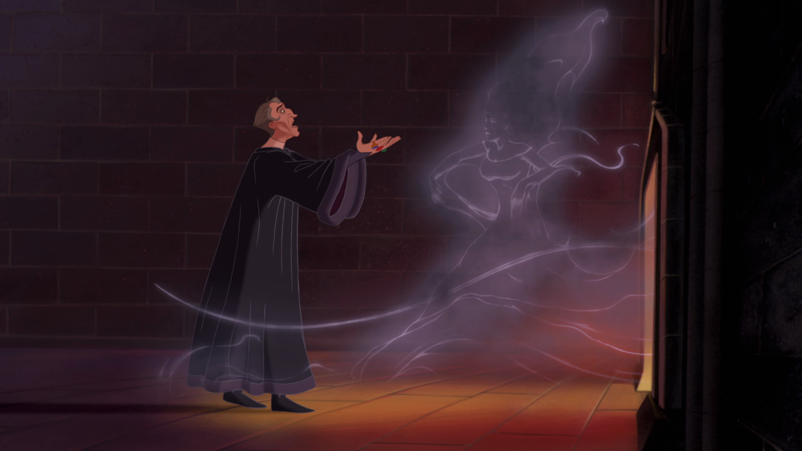
In Aladdin, the beard-twirling villain Jafar seeks to conquer the oriental world. In Hunchback, the self-hating magistrate Frollo seeks to destroy the gypsy underworld. Herein lies a third failure of the latter movie: it lacks the courage to depict the gypsies’ amorality for what it is. The worst the gypsies do is threaten to hang Quasimodo and Phoebus, but the audience never really fears they will go through with it; after all, the Gypsy King is the narrator who showed us these heroes in the first place. Among the movie’s many deviations from Hugo’s novel, it transforms Quasimodo from a gypsy changeling into a gypsy orphan. To show that the gypsies’ antinomian eros run amok was capable of such monstrosities as kidnapping and child abandonment would do much to explain Frollo’s hatred of it—but it would also upset the movie’s whole apple-cart. To a child’s eyes, child abandonment is the greatest crime imaginable. The nineteenth century novel sought to recharacterize this fact of child psychology as a symptom of imaginative immaturity, but even granting that premise, it merely demonstrates that the story of Hunchback is not a story for children. Perhaps the movie could have succeeded if it had instead pitched itself to young adults, the more proper audience for its particular vein of romantic sensibility. Because it insisted on remaining a children’s movie, it failed.
*
Rewatching The Lion King and A Bug’s Life, the father remembers that political morality entails sexual morality: natural hierarchy depends on a genuine match between king and consort, while constitutional democracy depends on the suppression of genius and, ultimately, all natural difference. But being beast fables, these movies did not look deeply into what sexual morality involves. Rewatching Aladdin and Hunchback, the adult learns how there are inherent limits to a children’s movie’s exploration of that theme. Aladdin brings its point home only by celebrating erotic desire while ignoring entirely the need to constrain it within political bounds; Hunchback founders on its failure to show its child audience what is really at stake when such boundaries are called into question. What, then, can a children’s movie manage to say here?
One hint can be found in the failed plot device of Aladdin’s guilt at “lying” to Jasmine about being a prince. I stand by my childhood incredulity: Aladdin wished to be a prince, not a street rat disguised as a prince, and the failure of that wish is at odds not only with the Genie’s particular promises about his power, but also animation’s general premise that anything can become anything else, there being nothing “beneath” the living colors on the screen. That said, the failure was in implementation, not design. Children do understand both that lying is wrong and that lies can seem the only way to obtain what we greatly desire; children’s movies are as good a place as any to learn that the temptation is greatest when our desire is for another person. The decade or two after Aladdin’s release refined and ultimately routinized the trope of the liar who falls in love: in Hercules [1997] the femme fatale Meg is recruited to ensnare the title character, then falls in love with him; Dimitri in Anastasia [1997] teaches the heroine to lie about being a princess, then realizes she is one; Naveen in The Princess and the Frog [2009] conceals from Tiana that he’s broke, then blames her for dressing up as a princess at a costume ball. These movies also all double down on Aladdin’s evil sorcerer villain, turning him from a run-of-the-mill overambitious advisor into some sort of necromancer (Hades, Rasputin, the Shadow Man). Hercules tells us the meaning of this conjunction: if Meg’s undeath amounts to her coming from the wrong side of the tracks, then, conversely, the shackles of societal expectations are a kind of death, one that love can render irrelevant only by looking it square in the face.
But not all facts relevant to whether two people fall in love are merely social in origin. Children may be ignorant of the full meaning of sexual difference, but do not doubt that it is natural, and even perceive however dimly that it has something to do with natality. The liar-in-love plot device can portray various differences between men and women, but not the one at the center of The Lion King and occluded in A Bug’s Life: that the king bears the crown and the queen its heir. The movie that best brings together these two strands, though without quite belonging to either, is Mulan [1998]. This movie’s opening song echoes almost word-for-word the thought just attributed to The Lion King, only no longer limited to royalty: “We all must serve our Emperor who guards us from the Huns | A man by bearing arms, a girl by bearing sons.” The movie’s plot, something like the story of Joan of Arc crossed with Shakespeare’s Twelfth Night [c.1602], then works out the degree to which this ideal can be honestly popularized.
Unlike The Lion King, Mulan has only a single narrative arc. It is not concerned with aristoi and demos, each working out its own nature and thereby discovering its relationship to the other; instead, it considers relations between women and men, how they begin by trying to live up to external ideals but must in the end understand themselves through one another. This arc unfolds melodramatically, but only for the first half. Mulan’s first song, “Honor to Us All,” comes right after the ominous prologue showing that the Huns have invaded China. It tells us that civilization desires cultured women, women who know all the domestic arts, so as to pass the culture on to the next generation. Only three minutes later, we hear “Reflection,” Mulan’s lament at her inability to live up to this ideal. Even this woman, naturally uncultured, wants to cultivate her own desirability. As if in answer to her plea, Mulan hears the levy proclamation, runs away from home, changes her name to Ping, dresses as a man, and joins the army. It is not until almost halfway into the movie that we hear the commanding officer Li Shang lead the conscripts in the rousing chorus of male ideals: “I’ll Make A Man Out Of You.” The imagery here is all natural: typhoons, fires, moons. While this song is sung we see Mulan almost flunk out of the army, then, as the song progresses, prove herself a competent soldier. After Li Shang has made a man out of Mulan the conscripts march off to war, and sing about their longing for “A Girl Worth Fighting For.” Society wants natural men; each man wants a woman who fits his own idiosyncratic natural preferences.
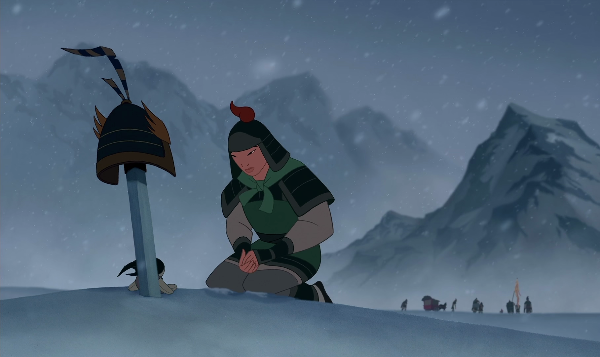
Then the melodrama stops, a silence emphasized by the abrupt ending of the fourth song, when at the beginning of Act III the marching conscripts reach the mountain battlefield too late. It is as if the sight of the scattered corpses proves the vanity of a song about war bringing men and women together. While the conscript army departs the battlefield, Mulan sets a doll on the ground beside an abandoned ceremonial sword, a pictogram showing how men can be made into mute weapons and women into mute figurines. Soon enough this same failure comes for Mulan; her only-apparent success in battle against the Huns leads immediately to her being injured, unmasked as a woman, and abandoned, left as the only witness to the Hun leader Shan Yu clawing his way out of the snow and pressing onward to the Imperial City. There, the scene of Act IV, Mulan confronts the Huns once again, this time to greater success. Act IV has no diegetic music, but does include a non-diegetic reprise of the “I’ll Make A Man Out Of You” chorus overlaid on this act’s defining image: Mulan, Li Shang, and the conscript soldiers sneaking into the palace complex, not by battering down the doors, but by using women’s scarves to climb over the walls. The conscript soldiers are dressed in drag about as convincing as Timon’s in The Lion King, while Mulan is for the first time since Act I dressed as a proper woman, and Li Shang remains in military uniform. In the epilogue, Li Shang returns Mulan’s father’s helmet to her, which by now means returning her reflection to her, letting her see herself as someone someone else desires. We do not see the marriage proposal the plot’s logic dictates will follow.
In sum, Act I considers woman in her habitat, the home, in ideal and desire; Act II does the same for man in his habitat, the army encampment; Act III shows how on the mountaintop the Huns cannot be defeated, but only hidden under snow; and Act IV shows how in the Imperial City, all the trappings of civilization can be wielded to send them back to the wilderness where they belong. The second battle owes its different outcome both to the change in location, and the change in Mulan’s attire. Act III revealed Mulan’s male disguise to be a failure, while Act IV reveals her putting on a woman’s guise to be a success. Unlike the grotesque cross-dressing of the other conscript soldiers, Mulan’s changes are a kind of fairy-tale magic. Because there is nothing to an animated body apart from its appearance, Act III really does turn Mulan into a man, just like her miniature dragon sidekick really is a brass sculpture come to life (although Mulan’s inescapable female voice serves as reminder that the magic cannot last forever). Like Aladdin’s lamp, the serpentine Mushu is a bawdy visual pun in a movie full of such puns—pole-climbing, battering ram, fireworks. But unlike Aladdin with its harem dancers, the animation of Mulan never brings desire into the open. The proper place of sexual difference, this movie teaches, is behind the veil of shifting images we call civilization, the means by which human reason tames human sexuality. That veil’s absence leads to the grim, grey world of the Huns, whose violent androgyny opposes the civilized veiling of sexual difference much as the Hyenas’ scavenging opposed the circle of life.
That Mulan is about the virtue of civilized veils is, at least, the best gloss it can be given. Certain aspects of the film undermine it, particularly the song “Reflection,” whose cultural afterlife has been as an anthem for the gender-confused. The song’s susceptibility to such treatment results from its weak lyrics, although we should acknowledge that its task is among the most melodramatically difficult. As the accompanying imagery confirms, the song is meant to show us the young Mulan’s inability to move from ideal role to real relationship. But the song fails in that degree of tact required to make it both initially appealing and ultimately unsatisfying. A perhaps related defect is the song’s awkward timing, only a few minutes after “Honor to Us All,” prematurely ending the domestic Act I. Additional nits can be picked with Act IV’s non-diegetic reprise of “Be A Man”; why not instead a new song to represent civilization’s achieved synthesis of the male and female principles? But unlike the fundamental defects of Hunchback, the flaws of Mulan are forgivable; their correction would require only targeted adjustments, not wholesale revision.
*
So Mulan weaves together the threads of The Lion King and Aladdin. Not Hunchback, because Mulan does not take itself too seriously. Its China is a fairy-tale China; the movie ends with the Hua family’s sacred ancestor pavilion hosting a raucous family reunion of stereotyped spirits. An animated children’s movie does exist that takes up where Hunchback leaves off, though its existence can seem a happy accident. The Prince of Egypt [1998] does not much resemble other Dreamworks productions, and apparently owes its existence to a confluence of idiosyncratic Hollywood impulses (respect for blockbusters of decades past; latent ethnocentrism; Jeffrey Katzenberg’s desire to prove Dreamworks could do what Disney couldn’t). Whatever the reason, this film’s retelling of the Exodus story also amounts to the most honest animated political philosophy on offer, which is to say that it is less philosophy than religion. The Prince of Egypt agrees with The Lion King that we are who we are born to be, with Mulan that all depends on proper relations between the sexes, and with A Bug’s Life that revolution is a prerequisite to justice. It adds that truth is the same for all.
For those who found disproportionate this essay’s opening discussion of The Lion King in terms of Shakespeare and Plato, an antiparallel discomfort may accompany the present discussion of The Prince of Egypt in terms of its animated contemporaries. It is, after all, a relatively faithful retelling of a three-thousand-year-old religious narrative, and many of its elaborations of that narrative are borrowed from Cecil B. DeMille [The Ten Commandments, 1956]; what would be the point of juxtaposing its plot with stories of more recent vintage? The answer differs for the two movie interlocutors I will focus on. The comparison to Hunchback is justified by The Prince of Egypt’s portrayal of Moses’s wife Zipporah, which owes almost nothing to previous tellings, and which makes the Exodus story less about slavery in general than about sexual subjugation in particular. As for The Lion King, we saw already how that movie retells the Osiris myth; by commenting on that retelling, The Prince of Egypt shows how Exodus itself can be construed as a commentary on that myth.
The Prince of Egypt begins much like The Lion King: after a musical montage of a child becoming a prince, we see the prince half-grown demonstrate his immaturity and get a lecture from the king, and an adventure with a love interest and water. But in The Prince of Egypt these all happen in Act I (we gradually realize that this movie has four rather than five acts): Moses cavorts with his apparent brother Ramesses with reckless abandon; the pharaoh Seti scolds Moses, but then takes his advice to give Ramesses greater responsibility; in return Ramesses “gifts” to him the captured slave-girl Zipporah; she fights back, Moses lets go the rope binding her, and she falls into a fountain, a well-crafted Hollywood meet-cute. Zipporah is dressed in a provocative harem outfit, reminiscent of Jasmine or Esmeralda, but her hostility makes evident that the costume was forced on her. We are intended to desire her, but not to desire her like this. Moses understands as much; he accepts the “gift” reluctantly, and when he later sees her escaping, he lets her go rather than call the guards. That decision sets off a series of revelations, culminating in Seti’s admission to Moses—in a dark allusion to Mufasa’s “kings in the stars” speech—that “the greater good” of the unbroken line of pharaohs required the massacre of the Hebrews. The broken civilization of Egypt does not draw a ceremonial veil over barbaric impulses, but rather forces women into sexual service and then kills their children.
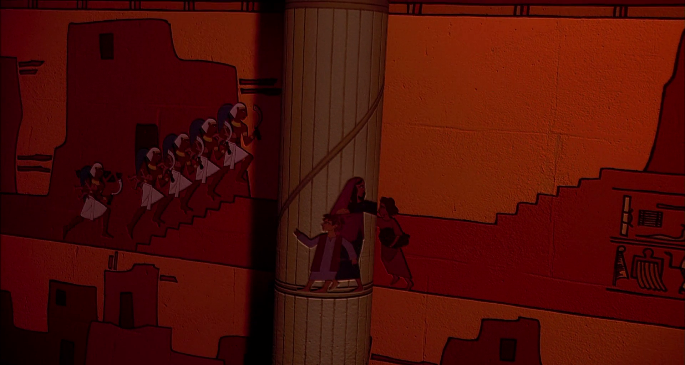
Act II sees Moses flee into the desert, which is to say, away from a broken civilization toward the possibility of rebirth. His reason for flight resembles that of Simba—guilt over having committed murder. But, of course, Moses really is guilty, having actually killed an Egyptian overseer in outrage at his brutality. The other difference is that Moses’s flight takes place a quarter of the way into the film, rather than half. The Lion King’s circle of life centers on death: the old king must die for the new to reign, and the new king must learn that he is not guilty of his father’s death while nevertheless taking responsibility for his legacy. Simba spends time with Timon and Pumbaa because he must grow up with them in order to rule over them well. Moses’s exile serves a different purpose: he must repent of his violent Egyptian ways and learn what a peaceful and just society might look like. He reunites with a more fully clothed but still-attractive Zipporah, integrates into Midian pastoral life, and has two sons. The midpoint comes when Moses encounters the burning bush and, rather than a deep Mufasan voice-of-God, hears the divine word spoken in his own voice. In this film’s theology God is not so much in the stars above as in the moral law within. Or, perhaps, antinomian grace, the anarchic lifeworld of the Midianites a more serious version of Timon and Pumbaa’s “Hakuna Matata.” Moses has spent enough time with them to learn their ways, and is ready to receive his mission of bringing the rest of the Hebrews across the desert to join them.
Moses’s return across the desert at the beginning of Act III is thus almost the opposite of Simba’s: he comes not to claim a crown, but to talk another into acknowledging the limits on his royal authority. Seti having died, Moses has no stepfather figure to duel against, but only his adopted brother Ramesses. Here enters this film’s other great deviation from the precedent of The Ten Commandments: rather than a one-dimensional malevolent schemer who would rather Moses had never come back, this Ramesses has grown into the man Moses pushed him to be before he ran away. He has taken Seti’s teaching to heart, and aspires above all to be a good Pharaoh. Remembering Moses’s friendship toward him, he eagerly celebrates his return, hoping the two can be brothers once again. His tragedy is that he cannot accept that Seti’s teaching and the young Moses’s friendship were fatally flawed; true justice and true fraternity require more than he is willing to give. The duelling duet “The Plagues” shows us Ramesses’s refusal to “let my people go,” and how it drives him gradually deeper into obstinate rebellion against the true God. Act III then ends as had Act I, in the hieroglyph chamber, where Moses had confronted Seti. Now, just before the Tenth Plague descends, Moses meets Ramesses’s son, and puts to Ramesses a choice between accepting his own child’s death and giving up his claim to own the lives of the Hebrews. Ramesses refuses the choice, and will lose both son and slaves.
The Lion King had ended, after the final battle with Scar, in a brief coda showing life come full circle: once again, Rafiki anoints a lion cub heir to the throne. The Prince of Egypt rejects that cycle. Its prologue had shown the baby Moses providentially crossing the water to the safety of the pharaoh’s palace; its Act IV piles miracle atop miracle—angel of death, pillar of fire, parting of the waters—ending in Moses leading all the Israelites across the Red Sea, and the Red Sea swallowing up pharaoh’s chariots and charioteers. Then, in the final shot, Moses brings down the tablets from Mount Sinai, with all the Hebrew hosts encamped in the desert before him. What is most distinctive about this Act IV is its lack of narrative tension; the characters of Moses and Ramesses have reached their final development, and all that remains is for Moses to practice his religion and Ramesses to practice his resentment. The tempo is not that of drama, but that of liturgy. In a way (though they could not have influenced one another) The Prince of Egypt has the structure of Mulan, only inverted. Mulan’s four acts showed woman, man, their barbaric conflict, and the need for civilization to harmonize them; the four acts of The Prince of Egypt show the tyrant’s domination, the Lord’s freedom, the tyrant’s refusal to grant that freedom to his subjects, and the overwhelming power of the Lord to bring about that freedom with or without the tyrant’s cooperation.
Where The Lion King’s B Plot was central to its genius, The Prince of Egypt has no B Plot to speak of, a difference I attribute to the former movie being philosophical, the latter religious. To say that The Prince of Egypt is a religious movie is not only to say that it is based on a religious text, but also to say that it has no hidden teaching, no point that will go over a child’s head. A child struggles to understand Frollo’s guilty lust, but easily recognizes Ramesses’s fatal mixture of love and stubborn pride. An atheist might say that this total exotericism makes it a childish movie, and I concede at least that it is for children. The Prince of Egypt simplifies the Exodus narrative as well as embellishing it—for example, in its omission of the golden calf, which marks it as lacking not just a philosophy, but also a politics. At most, it has an anti-politics. It gestures at the true-enough thought that the divine law should rule, but says nothing about what that rule looks like, save the single unwritten commandment “thou shalt not enslave.”
The limitation is not necessarily a flaw, so long as we do not take the movie for something greater than it is. That said, neither should we take it for something less. I see little risk of underestimating the genius at work in any more recent children’s movie, which I take to mean that the age of animated political philosophy is now behind us: more recent fare does continue to moralize, but it seems simply to deliver its morals, rather than to think them through. Perhaps I am too unsympathetic to the projects of more recent filmmakers—but even if so, it suggests a difference in kind between those and these. In any event, I cannot help but see these four movies as a kind of cycle, limning the four political philosophies (or anti-political anti-philosophies) that were live options in the 1990s (and perhaps remain so): The Lion King is the best animated expression of natural hierarchy; A Bug’s Life, artificial democracy; Mulan, civilized sexuality; and The Prince of Egypt, religious liberty.
A New Birth of Liberty
Four minutes after the official publication of the Supreme Court’s decision in Dobbs v Jackson Women’s Health Organization [597 U.S. 215 (2022)], a cartoonist posted to Twitter a drawing of a pope holding a gun to the head of a pregnant Lady Liberty. It is worth spending some time with this cartoon, for its propagandistic failure reveals much about the sterility of the liberal imagination.
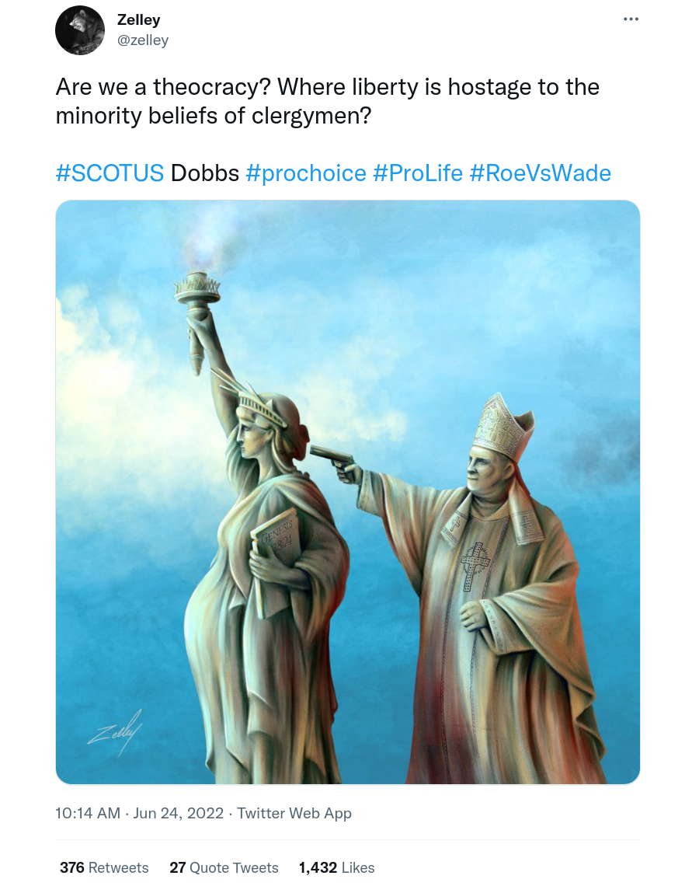
To be sure, the image of a pregnant woman in danger plays on our sympathies; we cannot help but recognize her as uniquely vulnerable and uniquely deserving of protection. But such an image carries such a powerful charge precisely because we sense that more than one life is in danger. The pregnant mother’s enormous belly reminds us of exactly what the cartoonist wants us to forget: to threaten a pregnant mother just is to threaten her child. For the image of a pregnant woman harbors within it an image of her unborn child, in the same way that an image of an egg harbors within it an image of the bird that will hatch from it.
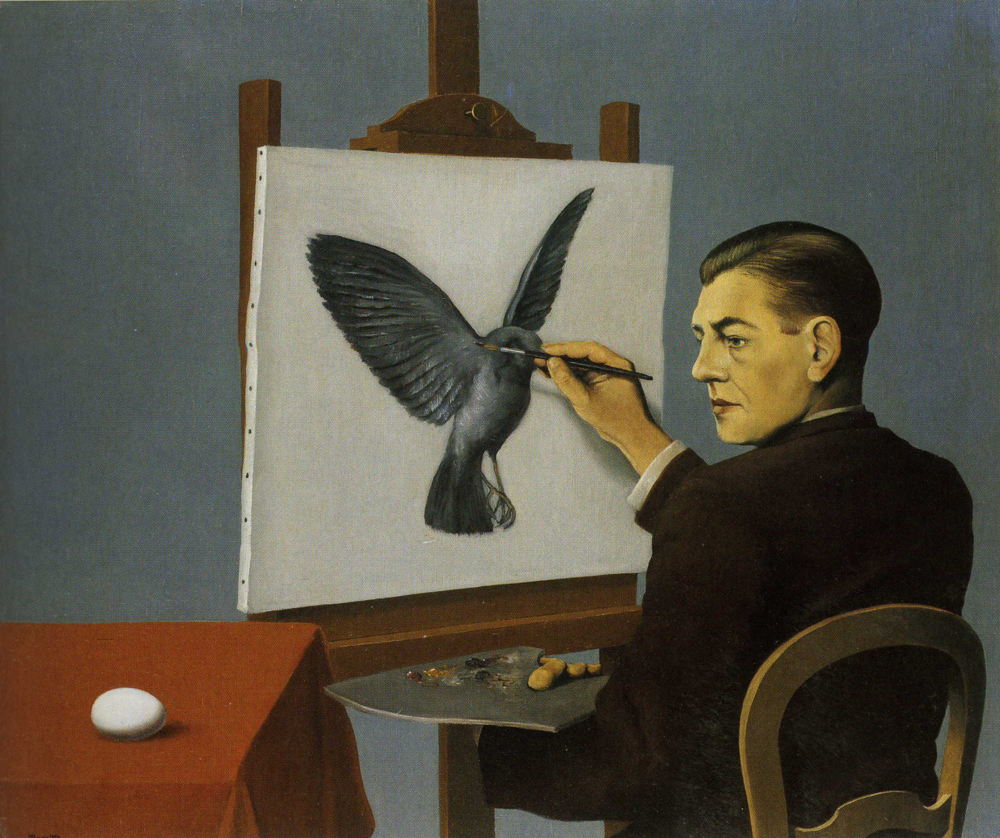
Now, it might seem that the cartoonist simply made a minor rhetorical misstep. Could he have better served his pro-abortion argument by making the mother’s baby bump not large, but barely visible, to convince the viewer that it is no one’s business but her own? Other cartoonists took this approach—for example, one popular depiction showed a barely-pregnant warrior-woman holding a dagger to her own throat while arguing with God about whether she should have to give birth. But it turns out that this move, too, backfires. The image of a barely-pregnant woman ineluctably summons the idea of her pregnancy progressing. Her belly is small, but it will grow. As the caption suggests, the life within her is destined for greatness; it will soon exceed the womb that nurtures it and become a visible human being. In the face of this greatness selfish complaints about frustrated preferences are hardly deserving of a response. By the conventions of biblical narrative, pregnant pauses in conversations with the divine usually indicate a failure of comprehension on the part of the human participant.
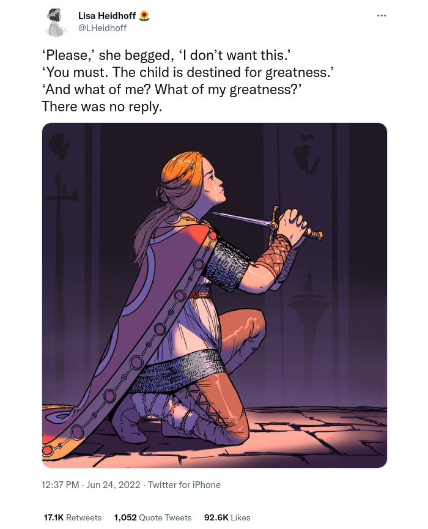
So should the pro-abortion cartoonist instead depict a woman who is not visibly pregnant at all? But if the image does not depict a pregnancy, the idea of woman’s special authority over pregnancy is entirely lost, and she becomes merely a man with slight variations in physique. The cartoonist has only one more move available: he can draw not a woman, but an abstract “person who can get pregnant.” So many cartoonists did, making use of the artistically formless corporate-memphis style of cartoon imagery. But in doing so they merely subordinated their desire to defend abortion to their fealty to the alphabet-soup ideology. The rhetorically impotent result mirrors how some progressive circles spiraled from outrage over Dobbs to outrage that some of those outraged were not using the up-to-date terminology.
But suppose the cartoonist wants to do more than signal loyalty to the woke cause: he wants to communicate that a pregnancy’s meaning varies depending on whether it is wanted or unwanted. If images made meaning by mechanical combination, this task would be simple. The cartoon with which we began was plainly conceived of as a simple rebus: Dobbs attacked (a gun to the head of) a putative civil liberty (Lady Liberty) relating to pregnancy (who is pregnant). But images make meaning organically, and in ways their authors cannot fully control. This particular authorial intent finds itself stymied because it seeks to attach to pregnancy not a meaning but an anti-meaning. The ultimate pro-abortion cartoon would be a picture of a woman with child, with a caption reading “this is not a child.” Conversely, to recognize the failure of these cartoons is to affirm what we all know: that pregnancy does mean something, and not the paradoxical impossibility of knowing what it means, but something profoundly simple. A new life is coming into the world, and we must honor and protect it.
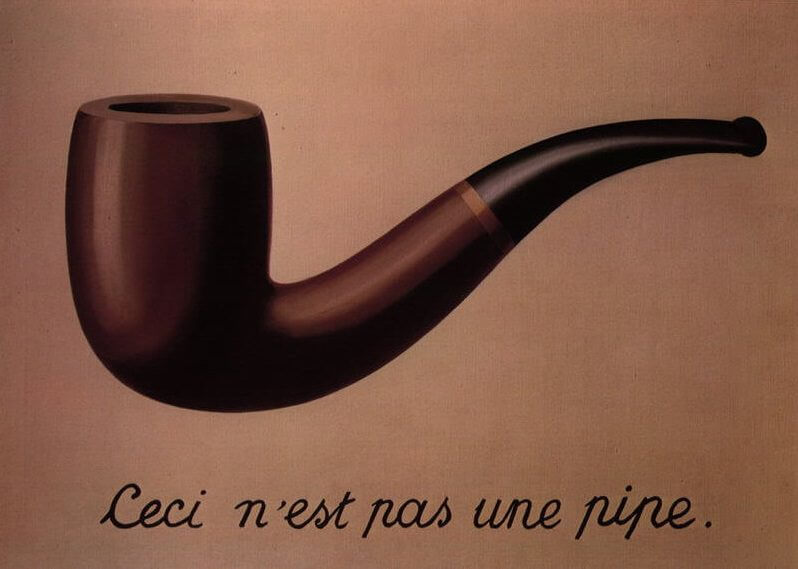
It is because pregnancy means something, and we know it, that we can ask what is meant by that initial cartoon. It poses two related puzzles. First, Lady Liberty is pregnant. What fruit does liberty bear? Second, she is not merely threatened, but threatened by a shot to the back of the head, what the movies call “execution-style.” Why is she being threatened with capital punishment? The answer to both questions is given by the biblical reference on her tablet. Genesis 38:24: “And behold after three months they told Juda, saying: Thamar, thy daughter in law hath played the harlot, and she appeareth to have a big belly. And Juda said: Bring her out that she may be burnt.” The cartoonist seems to have chosen this verse in accordance with his theme of religious authorities wrongly controlling women’s bodies. And of course Juda’s response here is a poor one—but not because Thamar ought to get an abortion; rather, because Juda ought both to let Thamar live and give birth, and to acknowledge himself to be the father. (Eventually, the biblical Juda did as he ought, and he and Thamar became the ancestors of King David.)
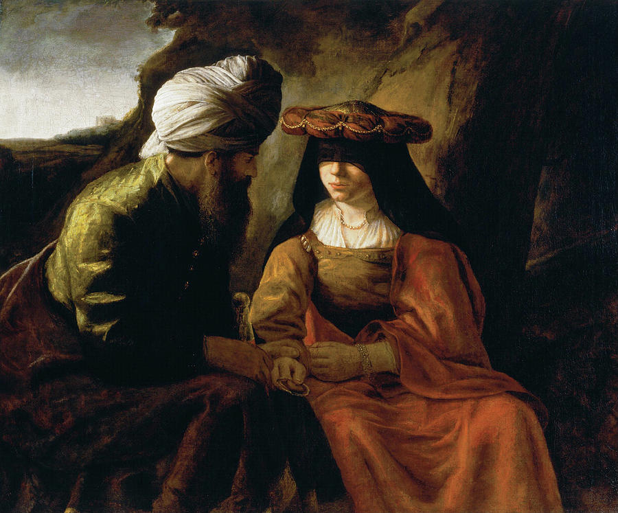
By making Lady Liberty pregnant, the cartoon strongly implies (despite its author’s conscious intent) that she must be allowed to give birth. Even when capital punishment was swiftly meted out a pregnant woman would not be executed until after the birth. Not because she was owed a chance to define for herself the mystery of life, but because the child she bore was recognizably a distinct human life, and there are few injustices greater than executing the innocent along with the guilty. An allegorical abortion would only be warranted if we could know beforehand that because this liberty is mere license, its fruits are necessarily corrupt. The image of a woman with child tends to undercut this inference; even Milton’s Sin is not often depicted pregnant with Death, but rather as having already given birth to the monster. While we might suspect that America is a licentious experiment deserving termination with prejudice (this cartoon says), it must be allowed to endure for a while, despite its sins, because it harbors a seed of new life which must be given a chance to take root.
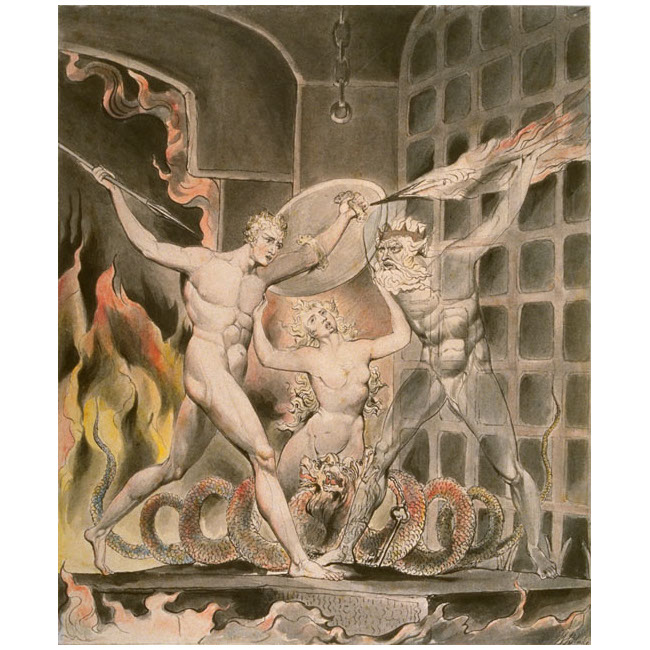
The other figure in the cartoon is, of course, a pope. He does not look much like Francis, but perhaps resembles a young John Paul II, popularizer of the phrase “culture of life,” or even the reactionary orphan Pius XIII of the TV series The Young Pope. Once again the propagandist’s intent is easily identified: looking around for someone to blame for the Dobbs decision, he naturally turns to the Church that has stood consistently against abortion for two thousand years, and which throughout its history has often been willing to pressure secular power into serving spiritual ends. While clerics generally should not bear arms, the pistol-wielding pope obviously radiates cool. I want to suggest two further layers of meaning which are perhaps less obvious.
First, the cartoon draws some accidental rhetorical strength from how it riffs on a popular meme template. One astronaut looks down at the earth and asks in surprise, “Wait, it’s all [blank filled in by memer]?” The other puts a gun to the first’s head and responds: “Always has been.” The astronauts’ relationship is ambiguous, as is our intended attitude towards them: are we to sympathize with the one caught off guard, or the other about to shoot him? But the rhetorical effect is clear enough: the meme humorously conveys the violence of revelation. Discovering the truth about reality might make your brain explode, but the change will not be in reality, but in you. The person you were will be dead; you will be reborn. In this light, the cartoon seems no longer an either/or. Lady Liberty both will be executed for conflating liberty with license, and will give birth to a new regime that understands the difference. This latent meaning is sufficiently obvious that it is hard to understand how the cartoonist imagined his work to be anti- rather than pro-Dobbs.
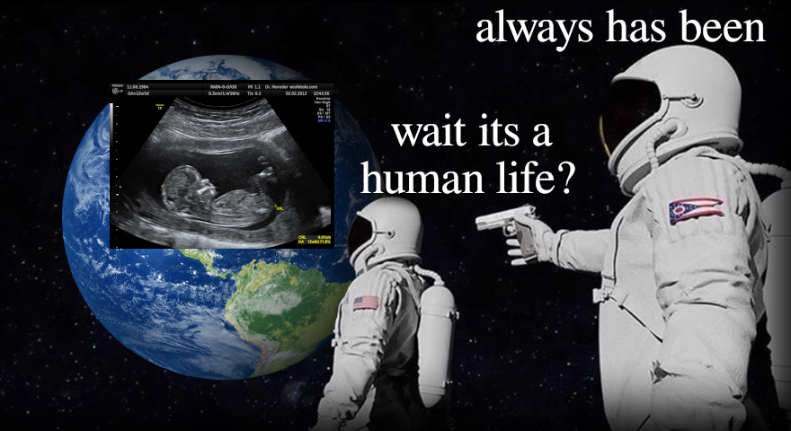
Second, the posture of the Cool Pope toward Lady Liberty carries within it a latent ambiguity. Men (another thing we all know, even if we sometimes deny it) are typically taller than women. But this pope appears either half a head shorter, or, more plausibly to my eye, closer to the plane of the picture. Yet the pope is also turned towards us rather than away toward her, making it difficult to understand how his gun could be pointed at her head. The entire perspective seems off, unless we instead see the gun as pointed past her ear, toward some unseen menace off to the left. A quick edit of the cartoon, translating the pope sideways while leaving his vertical position undisturbed, will show what I mean. This interpretation of the image, too, is not inappropriate, since there is much reason to protect liberty and its fruits, when these are rightly understood.
More could be said about the meaning of this particular cartoon, but I will close by emphasizing the mere fact that the cartoon means anything at all beyond what the cartoonist intended. There is an analogy—though only an analogy—between the interpretation of an image and the interpretation of a legal text. The originalist, which is to say, the liberal proceduralist, would insist that the cartoon means only what the propagandist intended for it to mean insofar as the viewer can identify that intent from the cartoon itself. A mechanical deduction: liberty plus pregnancy plus danger plus religious authority equals theocrats attacking reproductive freedom. But while this is objectively the cartoonist’s intention, it is not the cartoon’s meaning. Not because meaning is infinitely malleable or in the eye of the beholder, but because the image has a meaning, and it is not that. There is much to be salvaged from even the worst artistic abortion, just as there is much to be salvaged from even the most licentious legal regime, if you know how to look.
A Natural History of Film
As a young man, perhaps too young, I read Stanley Cavell’s The World Viewed [1971] and found myself frustrated at every turn of the page. What is the reader to think, after spending years laboriously cultivating a taste for Tarkovsky and Kurosawa, when he reads a book on the philosophy of film that uses Heidegger and Wittgenstein to talk about old Hollywood genre flicks? And what is the reader to do, reading a book ostensibly about film, when he comes across such sentences as: “If all modern love is perverse, because now tangential to the circling of society, then the promise of love depends upon the acceptance of perversity, and that in turn requires the strength to share privacy, to cohabit in one element, unsponsored by society”? (The context does not provide much additional clarity.) I finished the book, set it aside, and went about my life.
A decade and a half and a child later, my regular viewing habits out of necessity shifted toward Disney and Ghibli, and I’ve come around too on golden age Hollywood (which, thanks to the Hays Code [1930], is the deepest reservoir available of movies both child-appropriate and parent-enjoyable). After a long gestation some thoughts about film demanded to be put into words. I began to write, and found that the thoughts had an oddly Cavellian shape. I found myself wanting to say such things (Cavell’s words, not mine) as that film shows me “a world complete without me which is present to me”; that “the idea of and wish for the world re-created in its own image was satisfied at last by cinema”; that “a woman in a movie is dressed (as she is, when she is, in reality), hence potentially undressed”; that “the world inhabited by animated creatures … is animistic.” And I found myself wondering what Cavell might have found to say about more recent artistic phenomena, such as prestige television, or CGI.
Rather than write a commentary on Cavell, I note this debt at the outset. And other, smaller debts, to such as Gotthold Ephraim Lessing [Laocoön, 1766], Johann Gottfried Herder [Sculpture, 1778], Walter Benjamin [The Work of Art in the Age of Mechanical Reproduction, 1935], Roland Barthes [Mythologies, 1957], Jean-Luc Marion [The Crossing of the Visible, 1996]. I will approach the problem from a different direction than any of these, and reach different conclusions—reach them in my own mind, at least, though the reader may arrive at a different resting place. I will not attempt conclusive proofs. It is also from Cavell that I have come to understand aesthetic generalizations to be best drawn from a handful of pointed examples: a sympathetic reader will find it enough, and an unsympathetic would not be swayed by an entire monograph.
So much for citations and prefatory remarks. I begin by placing film in its rightful place among the artistic hosts.
*
The Objective Arts. The arts that first come to mind when we hear the word are sculpture, painting, drawing. Each serves as a metonym for a different aspect of what we think of as the objective arts. Sculpture represents weight, though every art object has mass, because sculpture asks the eye to imagine itself a groping hand. Painting represents color, though every art object reflects light, because paint’s suspension of pigment in a transparent medium asks us to enter into the invisible world it creates. Drawing represents line, though every art object traces a boundary, because drawing distinguishes represented object from represented environment solely through its confident delineation of the border between them. So, weight, color, line: these are aspects of every art object, which is not to say of every artwork, or even every artwork that presents itself to the eye. Rather, every artwork that the eye can get itself around.
The category of the objective arts owes something, not exactly to the camera, but to its predecessor the Wunderkammer. Architecture has mass, color, and line, but is not an objective art because the objective arts were those that belonged in a museum, and a building is too big to fit through its own door (though a few over-ambitious museums have tried). Neither, ironically, is a photograph quite an object so much as an abstract array of visual information—yet whatever our theoretical quibbles, most of us today accept a photo of a drawing or a painting or even a sculpture as a good-enough substitute for seeing the real thing. Each of the objective arts amounts to a strategy for reducing the world’s complexity to some thing we can comprehend: sculpting a body is an act of passionate embrace; painting a color, an act of spiritual perception; drawing a line, an act of intellectual definition; constructing a building, an act of objective enclosure.
The Musical Arts. A similar triad can be found in the musical arts: rhythm, melody, and harmony. Rhythm pulses passionately through the body; melody draws the spirit down invisible corridors; harmony reveals the proper ratios between different movements and moods. And if less insistently than with the triad of objective arts, three sounds present themselves as musical metonyms for passion, spirit, and intellect: the marching drum, the lyric voice, the chordophone. (Of course, we cannot point to the sound itself, and so instead point to the instrument that makes it.) When it beats out a march, the drum does not merely stir the body to movement, it commands it; a human soul cannot hear a vocal melody, even in a tongue it cannot comprehend, without sensing the sibling soul it transmits; and the lyre or violin shows in its very physical proportions why the ancients believed music and mathematics were one.
Contrary to the belief of the ancients, the unity of the musical arts is not mathematical. We better understand them if we recall the Muses’ mother Mnemosyne: music transmits memory, makes the past as if present for us. Music rearranges time. The symbol of this rearrangement was once the conductor’s baton. As a building is not an object, the gesture of the baton is not music, for it makes no sound, and so has no rhythm, melody, or harmony; the baton’s role is merely to synchronize the work of other musicians, to symphonically unite them. Though the baton has been transmuted by modern technology first into the needle of the phonograph, and then, as with digital photography, into an abstract record, it still makes no sense to speak of a musical art object. Better to speak of the art event: rhythm imposes a passion on us; melody invites our spiritual response; harmony offers itself for intellectual contemplation; symphony presents many sounds as an apparent unity.
The Literary Arts. Wrought object, musical event—if these are the first two elements of a meta-triad, what is the third? The answer is surely: Literary text. It has long been recognized that literature divides into three fundamental modes, epic, lyric, and dialectic, corresponding to the grammatical functions of description, exclamation, and interrogation. Although almost every literary work relies on all three modes to varying degrees, we comfortably treat them as distinct categories, not merely different tools the author might rely on or different aspects of the work; in this the literary triad differs from the musical. But the literary triad differs also from the objective. While we expect a sculpture to be sculpted, a painting to be painted, and a drawing to be drawn, we make no objection (unless besotted by neoclassical theory) to literary works that fit comfortably into none of the three modes. The Divina Commedia [1308-1320] comprises an epic narrative of a sequence of dialogues in a lyric style; Faust [1808, 1832] or Moby-Dick [1851] would be even more difficult to categorize.
What permits this relaxed taxonomy is the unifying principle of the literary work: not its use of words, but its use of writing, which is to say its reduction of the flow of speech into the weave of the written page, or even better, the cloth-bound codex. On recognizing the literary artwork as simply whatever goes inside a book, we make room for endless literary novelty. Every volume in Borges’s famous library [“The Library of Babel,” 1941] (or Quine’s two-volume variant [in Quiddities, 1987]) is a potential novel, and even the alphabet itself is not a necessary constraint; a novel can also include illustrations, or musical staves, so long as the logos dominates. The novel shows us that a literary work is neither an object nor an event, but a text: every epic narrative tells things as they are, or were, or could be, for those who suffered them; every lyric utterance leaps out unbidden from the spirit’s depths; every dialogue is a hunt to discover the mot juste that will end the conversation; every novel takes upon itself the task of redefining what literature can be.
The Performing Arts. Each of our three triads thus far has turned out to have a hidden fourth element that amounts to its unifying principle. The objective arts of sculpture, painting, and drawing are unified by an architectural frame; the musical arts of rhythm, melody, and harmony by the conductor’s time-stopping baton; the literary arts of epic narrative, lyric utterance, and dialectical argument by the possibility of the experimental novel. By reading down the columns we can fill in the implied fourth row. Sculpture, rhythm, and narrative, in a quite straightforward way, make up the passionate art of ballet. Painting, melody, and lyric, in a more refined way, make up the spiritual art of opera, where the coloring of the set and stage prepare the way for the coloratura of the voice. Drawing, harmony, and dialectic, in an abstract way, make up the intellectual art of verse drama: the principle of delineation is transformed into lineation, better understood not as measurement but as punctuation; the principle of harmony becomes that of assonance, the use of sound to draw an occult connection between concepts. Last, the capture of objects, the manipulation of time, and the recombination of texts together make up the unitive art of film.
The question is what unity film brings to these disparate art forms. Every culture possesses each of the principal objective arts, though perhaps without recognizing their unity; every culture makes music, and some analyze it into its constituents; every literate culture experiments with literary modes and discovers the natural modes of its expression; but ballet, opera, drama, film, these traditions of artistic performance are each a rare achievement, made possible only through the sacrifice of wealth on the altar of beauty. Brought about only by human action on a grand scale, these art forms present upon a grand stage particular human actions, and propose that these actions not merely occur within, but constitute the world. The performing arts are arts of the deed: in ballet the world becomes passionate movement; in opera, spiritual flight; in drama, mental crisis; in film, the world returns to itself, but only to the extent that man continues to cast light upon the screen.
*
The Dream of Film. The first projection of filtered light onto a screen was not just a human act, but a historical one. So too, of course, was the first construction of a room to house art objects; or the first coordination of the playing of many instruments together; or the first reduction of verbal flux to written text; or the first balletic or operatic or dramatic performance. But apart from film, all of these have been done from time to time (even if sometimes a very long time) since, at the latest, classical Greece. Their inventors, if they had any (i.e., were not simply rediscovered whenever conditions warranted), have been long forgotten. Whereas the technology of film projection (unless we count Plato’s cave) was invented in the late nineteenth century, with artistic and commercial adaptation in the following decades. Does it then follow that until the late nineteenth century the arts had no unity?
Not quite. The technology of film did not make it newly possible to perceive the unity of the arts, but rather made that unity newly actual: it enabled artists-in-general to satisfy their pre-existing longing for a world-encompassing art. Artistic longing for the unity of the arts preceded its technological realization, though by only a century. It was the German Romantic Friedrich Schlegel who first implausibly imagined that poetry could encompass all the arts. Wagner, whose attempt at a musical-theater gesamtkunstwerk was somewhat less quixotic, died a dozen years before the first public film projection. Over the same period when artists-general were on the hunt for an actual art-in-general, folklorists were collecting folktales from across the globe, breaking them down into their narratological components (referred to variously and with various nuances as “types,” “motifs,” “story radicals”), and developing sophisticated taxonomies, the most recent of which (promulgated in 2004) is the Aarne-Thompson-Uther Index. ATU-510A, for instance, is Cinderella. For a time it seemed that these two streams would flow together into the new art of film, yielding a total film archive containing all possible variants on the traditional narratives. E.g., F.W. Murnau’s Faust [1926] is a masterpiece of the art of film as Wagner might have imagined it: a series of tableaux vivants linked by intertitles, the audience’s expected familiarity with the Herr Doktor’s story, and whatever musical accompaniment the movie theater was able to provide. And Faust was only one of the ever-increasing number of such films released each year. Both dreams remained live well into the era of synchronized sound and technicolor; many of the best films of the 1930s are adaptations either of stage plays or of exhibition hall dance performances.
The Reality of Film. But film gradually developed into something entirely different from ballet, opera, and dramatic theater. The novelty began not with the artists-general or the analysts, but with the ordinary tale-tellers of Europe and America. New narrative potentialities were explored first in the pages of newspapers and magazines, then burst out over the radiowaves and onto the silver screen. If the affordances of the filmic art form did not literally summon these new stories into being, it can sometimes seem so, for these new stories fit perfectly with what was new in film compared to the other performing arts. I wrote above that those arts, “brought about only by human action on a grand scale,” “present upon a grand stage particular human actions.” That aptly describes ballet, opera, and drama, but for film the formula must be modified: human action not on a grand scale, but on an industrial scale, which is to say that film paradigmatically requires funding not through patronage, but through the expectation of commercial success. Hence film presents human actions not on a grand but on a common stage. Moreover, the human actions it presents are not particular, in the sense that the actions themselves are not what the audience experiences; rather, each screening of a film re-presents the very same actions for the audience to experience as if for the first time. These are in outline the affordances the new stories arrived in time to take advantage of. Before turning to some more intricate problems, I proffer the following provisional Index of Filmlore Motifs:
(1) Motifs of Recognition. The theater knew leading actors, but it took the movies to give rise to “stars,” real-life personalities who somehow take on the aura of the sum of their performances. A leading actor would be expected to recite Shakespeare from memory; a star would be expected to live out in the flesh the persona he created on film. And so we see (a) the villains mistake an ordinary man for someone dangerous, giving him a chance to rise to the occasion (North By Northwest [1959] would not work if Cary Grant were not a star before the opening credits rolled); and (b) an acting troupe accidentally recruited to do a warrior’s job, requiring it to bumble its way through as best it can (the aliens in Galaxy Quest [1999] are only an exaggerated version of the fans at the convention).
(2) Motifs of Reputation. Actresses have always been associated with sexual scandal, but the titillation of seeing a famous actress on stage always came with plausible deniability; stripteases were something else entirely. When captured on film, however, the fact that the contours of a woman’s body can be seen through the liquefaction of her clothes ceases to be an accident, and becomes essential. To put a woman on film is to invite the audience to visually undress her. And so we see (a) circumstances compel a woman to seduce a lustful antagonist (Rita Hayworth in Salome [1953] dances for Herod not to buy John’s head, but to save it); and (b) a woman chooses to divorce her husband so he will see her as mistress rather than housewife (Irene Dunne in The Awful Truth [1937] reprises the girlfriend’s sleazy club dance to teach Cary Grant a lesson about what he really wants).
(3) Motifs of Recollection. In the theater, the story takes place entirely in one place (the stage), and progresses at one second per second; hence the so-called Aristotelian unities. To the extent the unities are not observed, as in most Shakespeare, it is an assertion of the power of the word to summon us to imagine that things are other than they appear. But on the silver screen, movement through time and space is entirely in the director’s control. And so we see stories centered on (a) a man traveling back in time and causing himself (in Back To The Future [1985] Michael J. Fox causes himself by getting out of his own way); or (b) parallel stories in different eras leading to different outcomes (in Dead Again [1991] the doomed Branagh-Thompson romance of two generations back vengefully interrupts the modern reprise).
(4) Motifs of Repetition. The word is eternal, while the world is contingent. The theater embraces this contingency, in that every performance is slightly different from the one before it in material detail, and to witness the results of a myriad of decisions about these details is much of why we go to the theater rather than just reading the script. Film, although an image rather than a word, like the word is always the same: whatever happens on a given screening of a given film, however unexpected, is what always had to happen, on every screening. And so we see (a) the story opening on an ordinary day, until a single unusual event knocks the world off its kilter (Fred MacMurray’s insurance salesman in Double Indemnity [1944] allows himself to be knocked over by Barbara Stanwyck because he thinks he has calculated all possible outcomes); and (b) the story opening with a professional risk-taker taking on one last job before his planned retirement (Heat [1995] served as plausible one-last-job material for both Pacino and De Niro).
(5) Motifs of Revelation. The world is contingent, while the word is eternal. Every theatrical performance differs, but the fact that the same words are said in every performance tells us that the words are what really matter, are what we must attend to. When film presents us a world that is always the same, it makes the world into a word, but not one that is self-interpreting; we see and hear it differently with every viewing. And so we see crises turn on the proper interpretation of (a) a fleeting expression on the face of an antagonist (in Blade Runner [1982] the telltale hesitations of a replicant’s pupil can only be detected by Harrison Ford’s test-camera); and (b) a recording the protagonist experiences differently every time he encounters it (such as the titular exchange Gene Hackman re-mixes throughout The Conversation [1974]).
(6) Motifs of Realization. Practical effects, like puppetry and sleight of hand, have always been with us. But film creates a space for effects not practical, but special, which is to say, specular: effects that are not carried out in the real world, but interposed between the film’s exposure and its projection, a kind of magic lens between the world and us. The possibility of such interposition prompts us to ask whether any of what we see is really in the world, or only in the seeing of it. And so we see (a) a dreamworld presenting a funhouse-mirror version of waking life, such that on waking, the protagonist can say: “and you were there!” (as does Judy Garland at the end of The Wizard of Oz [1939]); and (b) a man seemingly living through fantastical adventures, which turn out to be seen in his mind’s eye as he lies on his deathbed, or in a mental institution, or wherever else (sometimes, as in Total Recall [1990], the fantasy world triumphs over the real).
*
The Limits of Film. The claim of the previous section was that the new affordances of the filmic medium gave rise to new narrative motifs. The final set of motifs, those related to special effects, can make film’s affordances seem unlimited: there is nothing in our world that cannot be fit onto the silver screen. But this is not true. However much we might wish it were otherwise, film actors can only be human beings. Through intense discipline and at some personal cost they can seek to transform themselves into the characters they inhabit, but so long as the film follows standard conventions of realism—that is, so long as it is not a work of iconography like Murnau’s Faust—they can only inhabit characters sufficiently like themselves.
To take two of film’s most painful limitations: a young man cannot truly become an old one (nor vice versa), and a woman will not, for purposes of film, become pregnant (though the reverse, one fears, must occur often enough). There turns out to be an occult connection between these two limits, and another limit imposed by the need for a human viewer: a film must be short enough to watch in a single sitting (or else it turns into something else, a serial).
(1) Men Age At One Second Per Second. Begin with the first of these limitations. Films are filmed over a few-month period, hence the men in them remain roughly the same age throughout the shoot—a useful fact, since it allows the scenes to be shot out of order, but also a frustrating one. Directors, even great directors, sometimes ask the magic of film to portage them over the meanders of the river of time, but it never quite succeeds at the task. I, for one, do not really believe, but only forgive, the twenty-five year old Orson Welles’s old-age makeup in Citizen Kane [1941], which qualifies as film-magic because it is too intricate to be applied between theatrical scenes. The only real purpose the makeup serves is to remind us that narrative time has passed, which the newspaper intertitles have already accomplished. Nor do we really believe that the Robert De Niro of The Godfather II [1974] is a young Marlon Brando. We simply do not care; he does not need to be because a sequel is its own film, not a continuation of the prior one. The only way to truly capture on film the passage of a man’s life is to endure it.
Flashbacks to childhood are a partial exception to this rule. Because a boy’s face bears only a family resemblance to the man he will be, skillful casting of similar faces can ensure the necessary illusion. True, the child is father, not mother of the man, and too many changes of face break faith with the viewer; the flashbacks must hone in on the single moment of spiritual germination. Terrence Malick’s The Tree of Life [2011] indulges in a toddler version of the Sean Penn character, but we only come to know his past when we see him as an adolescent. Still, our exceptional willingness to accept equations between faces of differing maturity makes especially peculiar Richard Linklater’s attempt in Boyhood [2014] to wait out the tyranny of time. Boyhood traces the life of its child protagonist from six to eighteen, and was created by brief reunions between director and child star over a twelve-year period. The film falters for reasons in retrospect inevitable: being directed by two different men, Linklater-2002 and Linklater-2013, the early scenes could not meaningfully anticipate the later ones. The enterprise strikes us as less a unified film than a compressed television series—most instructive for what it tells us about the boundary between these sister arts.
(2) Films Wrap Nine Months After They’re Cast. This observation about Boyhood brings us to our second limitation: it is practically impossible to make a film starring a pregnant woman. Any casting call for pregnant women would see the baby born before shooting began, and if a starlet who has been cast becomes pregnant she will either get rid of the baby or the director will get rid of her. Hail, Caesar! [2016] is in part about how the latter might be the best thing for her. When a film tells a story about pregnancy it will typically only allude to it, as if the fact were reducible to its rumor. The childbirth scene in Gone With the Wind [1939] shows only the shadow of the laboring mother thrown against the wall. To show a pregnancy directly requires prosthetics, and the faux-pregnant actress cannot avoid carrying herself as if her baby bump were an article of clothing she could remove at will. The result gives rise to a body-horror vision of pregnancy, as in Alien [1979]’s stomach-turning practical effects; and since it is what makes pregnancy possible, the horror can extend backward to the female body itself, as in Under the Skin [2013] and Ex Machina [2014].
Yet the thought of a world without pregnancy is equally horrific. The Barbie movie [2023] shows us a female doll it would be pointless to undress because there is nothing beneath, and imagines what it would take to get her to a gynecologist; the only answer it can come up with is an idolatry of women named Ruth. More successful explorations of the same theme are found in Denis Villeneuve’s Arrival [2016] and Alex Garland’s Annihilation [2018]. Each follows a female scientist alone with memories of an estranged husband and an ambiguous interloper. There appears a vessel from another world, and she is recruited to investigate; ultimately the vessel is destroyed after imparting to her its inhuman knowledge of the true meaning of her fecundity. The difference is that in Arrival Amy Adams is a linguist and her memories are in fact premonitions of what will happen if she marries her love interest: they will divorce, and their child will die of an incurable disease. What she has learned from the heptapods’ circular ink-blots is how to find this fate desirable by seeing it from the perspective of eternity. Whereas in Annihilation Natalie Portman is a biologist; her memories are of cheating on her husband; and what she has learned from the iridescent shimmer is that the life-force within each of us will find a way to continue, even if that way destroys what we think of as our selves.
A Televisual Digression. The filmic art that unifies the system of the arts either encompasses or branches off into television. The two invite many of the same narrative motifs, but their affordances still differ in some respects. Where film compresses, television digresses. Television is notoriously open-ended, and not only because a series is not watched in a single sitting. A single season generally hopes for another, but cannot expect it; the viewer hopes that the showrunners know when they have reached the finish line. The loss of a unified dramatic arc is the price of showing us the real passage of time, and how it builds up a sense of place. Not limited to the Godfather series’ single digits of hours, The Sopranos [1999-2007] can spend almost a decade following Tony from early into later middle age, and his children as they cross the threshold into adulthood. The price is that its protagonist is not the don of dons, but only a middle-manager mafioso, and the viewer cares equally about the various life trajectories of the various members of the ensemble cast. So too with Mad Men [2007-2015]’s Don Draper’s media not-quite-empire, the television analogue of Welles’s masterpiece. The television star burns less bright than the film star, but for longer: James Gandolfini and Jon Hamm became not archetypes but psychopomps, who for a phase in our lives guided us through particular imagined places and times.
The longer a television series runs the further it drifts away from our own world and fabricates for itself another. In the word’s peculiar televisual sense, a “mythology” is simply a set of reference points that will delight the audience by reminding it how much time it has invested in learning the local landmarks. A human sacrifice completes the summoning ritual. In The Truman Show [1998] an unwanted child is adopted by a television studio and raised in a panopticon. The showrunners arrange his marriage to a young actress, and hope to arrange the on-screen conception of their first child; Truman’s refusal is what restores him to reality. When a sitcom actress becomes pregnant the showrunners face a choice, to shuffle her offstage for half a season or to write the pregnancy into the story. When they take the latter option the birth confirms the impression that the world of the show is complete in itself, spanning all of human life from birth to death. The passing of a cast member rarely has the same effect, perhaps because it cannot be similarly anticipated. Once the actress Nancy Marchand died it was too late for a proper farewell to Livia Soprano (though we were, in one of the show’s few total blunders, subjected to a CGI rendition of what such a farewell might have looked like).
*
From Live Action Into Animation. But what if there could be a film made entirely without actors? For as long as we have had live action films we have also had animated ones, which escape entirely the practical constraints discussed in the previous section. Both Bambi [1942] and The Lion King [1994] begin and end with a birth, and both effortlessly follow the maturation of their protagonist from infancy to fatherhood; it is a mere matter of imagining the intermediary stages and then drawing them. At the same time animation leaves behind, if not the possibility of certain filmlore motifs, at least the conditions that gave rise to them. E.g., Aladdin [1992] gestures at what I have called IFM (2)(a) (seductive heroine), and Beauty and the Beast [1991] at (4)(a) (ordinary day). But would they have done so if we lived in a world that had invented moving pictures but not photography, and so did not possess live action film?
In the world we live in, live action and animation are not separate arts, but inextricably intertwined. Walt Disney’s early film Alice’s Wonderland [1923] began with animated creatures magically bursting into the live action world, and ended with a slumbering live-action girl entering into the world of cartoon. Ralph Bakshi’s Cool World [1992] explored the same theme in more disturbing fashion. If live action pitches itself to our sense of touch by showing us the ordinary tangible world, animated films do so by presenting us with a world we hopelessly desire to wrap our arms around. What prevents us is the same feature that makes the world presented intrinsically desirable: it is entirely flat. The attraction of the animated world is spiritual. Like pre-perspectival painting, it luxuriates in solid blocks of rich uniform color, as if to say that the world is all color, all spirit, all the way through. The Secret of Kells [2009] revealed the affinity by bringing to life the world of illuminated manuscripts. Decades earlier, Yuri Norshteyn did something similar in his short film “Battle of Kerzhenets” [1971], where we see icons come to life through a layered array of paper cutouts. Norshteyn’s cutouts are, of course, the experiments of an auteur; they can illuminate the animated mainstream, but are not part of it.
Romantic Animism. The core of the animated tradition has always been the art of moving illustrations, where from frame to frame any line not carried over must be redrawn by hand, with results mimicking the continuous subtle movements of living flesh. The result is a kind of animism: in an animated movie, every object on screen is at least potentially ensouled with a soul that could transmute it into some other kind of thing, as has been apparent since at least Walt Disney’s Fantasia [1940], where even an abstract representation of a sound wave achieves a kind of personality. Animated films typically place their visible souls atop a static watercolor field, but they are capable also of bringing the landscape itself to life, erasing entirely the distinction between background and foreground.
We think of animism as a pre-modern worldview, and for similar reasons we think of animation as an art for children, but neither prejudice is fully warranted. Animism can name a naive poetics, but it can also name a poetics that is sentimental in a Schillerian sense, which is to say romantic: a poetics aware of the power of modernity (its sophisticated technology, its sophisticated social organization), but also of its inability to come to terms with the fundamentals of human life: birth, love, evil, death. In a nutshell, the animated filmmaker is aware of what was left behind when we abandoned the ATUI for the IFM, when Hitchcock displaced Murnau as the greatest director. Animated film is not immature, but it does tend toward nostalgia. The relative dearth of animated films compared to live action owes much to economic imperatives—frame for frame, animated films are more expensive than live action ones—but much also to the relative rarity of the type of romantic genius proper to the art form.
The Animated World. An animated filmmaker resembles less a director than an architect, and an animated film is in a way similar to a theme park ride. It is no coincidence that both Disney and his spiritual successor Hayao Miyazaki at times were involved in the latter: Disney turned in his later career from animating films to designing his eponymous Land and World, and Miyazaki obsessed over the design of the Ghibli Museum, to the point of writing a poetic manifesto (“This is the Kind of Museum I Want to Make!” [c.2000]). At the same time, both Disney and Miyazaki made films—Pinocchio [1940] and Spirited Away [2001]—warning of the dangers that result when the idea of the theme park, which is to say, of the animated world, is corrupted. In the romantic animism of animated film, that everything is at least potentially alive is both a dream come true, and (as that earlier reactionary animist Yeats would have said) a terrible responsibility.
Disney’s adaptation of Goethe’s “Der Zauberlehrling” [1797] dramatized the danger the animating power could pose if used indiscriminately: the bewitched broom, having been endowed with hands and feet by a hapless Mickey Mouse, has a life of its own and will have it more abundantly the more Mickey tries to render it back into dead wood and straw. The result is elemental chaos, and it takes the return of the master sorcerer to part the waters. The broomstick is animation’s name for technology, which animation conceives as the human power to sweep into motion the otherwise inanimate world. Miyazaki in Kiki’s Delivery Service [1989] compared broomstick to airplane, and in Howl’s Moving Castle [2004] turned the former into a hopping scarecrow and the latter into a weapon of war. As Caproni tells Jiro in The Wind Rises [2013], “Airplanes are beautiful cursed dreams waiting for the sky to swallow them up.” Animation brings tools and machines to sputtering life, but fears the death that follows in their wake.
Animation is more at ease animating animals—they are alive to begin with, after all—but not entirely so, because it cannot avoid humanizing them, which is also to say spiritualizing them. A persistent theme in animation, as alluded to in the earlier mention of Bambi and The Lion King, is how death is an inevitable part of animal life, and indeed one that animals often inflict on one another. But if these films are untroubled by the fact of natural hierarchy, they also insist that life’s crowning achievement, what earns its kings their crowns, is not consuming lesser beasts but protecting them from fiery death. Animated films rarely show one animal actually eat another, not because we cannot picture what such an animation would look like, but because we can picture it too easily; the surface that was one would simply disappear as the jaws of the other erased it.
The Animated Otherworld. Apparent counterexamples like Pinocchio and Spirited Away prove the point, in multiple respects. First, in these films ingestion is not followed by consumption: the whale vomits up the puppet, and No-Face the inhabitants of the bathhouse. Second, the regurgitation results from the application of human reason: Pinocchio builds a fire, Chihiro feeds the monster an emetic. Earlier in the films the protagonists preserved their humanity through simple restraint, a refusal to indulge their animal appetites. Third, the ingesting and regurgitating animals are entirely otherworldly: the whale is Jonah’s whale, No-Face a literal spirit, and for them to truly consume another animated being would mean that being’s spiritual as well as physical death. These films draw on a corollary of animation’s ability to animate its entire world: its ability to make visible the invisible.
Animation has no need of the comically humanized angels of live-action films like It’s a Wonderful Life [1946] and A Matter of Life and Death [1946], or the spectacular otherworldly messengers of films like Arrival and Annihilation. As the animated world is already an otherworld, it can speak to us without difficulty of yet another world above its own. Indeed, it does so habitually. Whenever it takes non-human animals as its protagonists, animation makes its human beings take on the role of gods, or of demons. One Hundred and One Dalmatians [1961] retells the Gospel narrative but with even-more-than-all saved through the descent into hell not of a single messiah, but of a dozen-plus. We cannot imagine that the entire litter could ever have been contained within the gravid Perdita’s womb, and no attempt is made to convince us it could; the film need only number them and they miraculously enter into life, and later multiply sevenfold.
But in The Prince of Egypt [1998] the roles are reversed, and we see the slavery that results when stagecraft bamboozles men into worshiping animal statues. It begins with the infant Moses preserved from the off-screen massacre of the Hebrews; it ends with Moses the bearded sage parting the waters and then letting them crash back together, drowning Pharaoh’s chariots and charioteers. Before he does so Moses must realize the true nature of the animated world in which he lives. In a dream he sees hieroglyphs come to life and enact an Egyptian host seizing Hebrew infants from their mothers’ arms and tossing them into crocodilic maws. The hieroglyphs are flat, but the walls themselves skew with geometric perspective as the imagined camera zooms around the throneroom. Moses sees his own death narrowly averted when his sister sidesteps out from the hieroglyphic plane onto the surface of an adjacent column to dodge some oncoming soldiers. The gods of the Egyptians are false because they are gods of the two-dimensional animated world only; the God of the Hebrews is God in every world.
*
From Animation to Rendering. The use of three-dimensional effects in 1990s animated movies like The Prince of Egypt marked a shift in the tradition of animated film, and ultimately resulted in a total break. If the tendency of moving illustrations is to bring to life the entire visual field, the tendency of computer-generated imagery is the opposite: not animation, but rather rendering, breaking the living world down into bits of matter. This observation does not attack the artistic validity of 3d rendering, but rather insists that its valid uses will be those that perceive its affordances and take them into account. Such perception and such accounting do not require any sort of theoretical analysis, but only close attention.
In recent years, unfortunately, filmmakers have grown inattentive. Those who would otherwise have made animated films have embraced CGI as a supposedly improved version of the same thing, the projection of a world other than ours. And those who would otherwise have made live action films have treated CGI as a straightforward substitute for practical effects: Why film on location when you can drop the landscape in later? Why store props on the back lot between sequels when you can store them on a hard drive? Why spend hours each day applying makeup when the actor can just wear a green jumpsuit covered in white dots? The burden shifts to the critic to discern which rendered characters have real life within them and which are hollow shells, which CGI environments we could imaginatively live within and which ones we could not. Ironically, inviting this discernment is exactly what 3D rendering excels at.
Rendering Analyzed. To avoid being taken in by the delusion of trompe l’oeil, we must return to fundamentals. If 2D animation is a way to create the illusion of illuminated bodies in motion though a sequence of static hand-drawn illustrations, 3D rendering is a way to create the illusion of illuminated bodies in motion through a sequence of projections of an abstract space. The renderer begins with a cartesian-coordinate representation of various objects, then calculates how much light will bounce off the polygon mesh and make its way to another point defined to represent the camera. This calculation is done anew for each frame, but each frame is simply a time-slice of the four-dimensional whole. Every node, every array of nodes representing an object, and the camera vector as well move through the time dimension algorithmically. The result, in a slogan (and to recall the three components of the objective arts, the foundation of both animation and rendering): rigid lines, objective colors, hollow bodies.
The rigidity of the 3D-rendered line follows immediately from its algorithmic nature. This rigidity, and its difference from traditional animation, can be isolated in cel shading, a 3D-rendering technique in which the light calculations are rounded off to a limited palette. The result superficially resembles hand-drawn animation but lacks its dynamism, the ability of any given object’s boundaries to bend as the artist’s spirit moves him. When the otherwise hand-animated Avatar: The Last Airbender [2005-2008] introduces cel-shaded Fire Nation battleships and tanks, their very visual appearance communicates to the viewer that they represent a mechanical principle, fundamentally opposed to the Water Tribe’s animism.
The effects of 3D rendering on color are less easily isolated, but can be analogized to those of perspectival painting. Geometric perspective moved color from the surface to an imagined space behind it, generating color effects like those in Johannes Vermeer’s depictions of household things bathed in northern light, or Claude Monet’s depiction of the fog between himself and the House of Parliament. The former shows inanimate objects in their particularity, and the latter objecthood-in-general, the distance between ourselves and the world. Yuri Norshteyn’s “Hedgehog in the Fog” [1975] achieves similar fog effects through a technique not computationally, but actually three-dimensional: he placed in front of the scene a thin translucent paper and slowly, frame by frame, lifted it up toward the camera. Beneath the fog-paper was an un-rendered thing—a hand-drawn horse—which at the climactic moment appears suddenly out of the fog, two-dimensional and alive. CGI cannot show us that life; it is limited to objects and fog.
Last, the hollowness of the 3D-rendered image renders it repellent to the groping finger of the sculptural eye. When our eye recognizes the 3D rendering at all (when it is not deceived), it recognizes it as a cinematic projection of an abstract world illuminated by an abstract light. The default is not sculptural plastic, but plastic in the sense of a fake object, an injection-molded petroleum byproduct. The mathematically inclined will resist the conclusion, insisting that once a sufficient quantity of information is built into the model it will be indistinguishable from reality. But a trompe l’oeil need only satisfy the eyes, whereas to pull off a moving illusion requires satisfying our sense of touch, which sets out expectations for how the various represented objects should impinge on one another. A completely satisfying 3D rendering would require what seems impossible, a complete simulation of the laws of nature.
Undead Action, Alien Worlds. When 3D renderings are superimposed onto live-action films, the actors’ interactions with the rendered objects inevitably reveal the latter to be both unattractive and intangible, a mere shell of the bodies they mean to depict. Filmmakers better understood this principle when the technology was in its infancy (i.e., when it seemed a substitute, not for the world itself, but for such ad hoc effects as Ray Harryhausen’s jerky claymation puppets). Terminator 2 [1991] pits practical effects (Arnold Schwarzenegger’s roided muscles) against the liquid metal of the new model robot army. Jurassic Park [1993] and Pirates of the Caribbean [2003] descend into the uncanny valleys named in their titles, which we discover are filled with half-living monsters. The Mummy [1999] pictures its own undead fiend as a hollow husk that could transform in an instant into a million bits of flying silicon. The early tradition culminated in The Lord of the Rings [2001-2003], with its performance-capture transformation of Andy Serkis into Gollum-Smeagol: it succeeds precisely because we see the sallow skin unanimated by any glow of interior life, and sense the hollow interior behind, but also feel the presence in his gestures, expressions, movements, of the human being trapped within.
Conversely, when 3D rendering generates from scratch a world to present to the viewer, it is inevitably one the viewer feels no visceral urge to enter into; we can imagine a CGI remake of Who Framed Roger Rabbit? [1988], but cannot imagine a CGI Jessica Rabbit desirable, any more than we can imagine a balloon animal desirable. (A blow-up doll is not desired, but only abused.) James Cameron’s Avatar [2009] and sequelae, for instance, drew many in but not, except for a few disordered libidos, because the viewer desired to touch the things depicted. The idea rather was to be surrounded by them, to become a transparent eyeball witnessing the natural history and xenoanthropology of a lovingly detailed imaginary planet. We forgive the lifeless artifice of the CGI because it conveys that wealth of enchanting information, but the dramatic action leaves us cold, for it is enacted by creatures with whom we do not share a world. As its title suggests, Avatar may have been more successful as a video game, where life could have entered the rendered world through the player’s own exercise of agency.
Playing God. In some ways gaming, not film, is 3D rendering’s true home. Video games reveal to the player how a world is a set of affordances, and how we exist in a world to the extent that we act within it. Playing Tetris [1985], we find the world around us to be made up of irregular shapes to be packed together. Playing Portal [2007], we find that we can be at home in a world of noneuclidean space. When we watch video games without playing them, as in Tron [1982] (one of the first films to make extensive use of CGI), we see in them instead an inhospitable gnostic prison, an “electronic arena where love and escape do not compute.” What most alienates us from this world is that its inhabitants are entirely lacking in agency; they simply follow the digital laws that set them in motion. This feeling of alienation vanishes only when the game is not one whose rules we take too seriously. We are not bothered by the lifelessness of the characters and world of Veggie Tales [1993-2015], or Toy Story [1995], or The LEGO Movie [2014], because these films do not even try to convince us otherwise; rather, they are a comic puppeteering of a cast of ordinarily inanimate objects across a stage that in the back of our minds we know is only a carpet or a kitchen counter. These movies delight us most when they admit the game is only a game, as when Woody breaks kayfabe and speaks directly to the toy-breaker Sid.
When 3D-rendered children’s movies do convince us to take them seriously, it is in ways utterly different from how we took seriously traditional animated movies. Consider the 2024 Latvian film Flow—like The Prince of Egypt a story about a providential flood, but handled in an entirely different register. In Flow we follow a black cat wandering through a global deluge dissolving a world once inhabited by human beings, but now peopled only by the ruins they left behind; the eerie drowned cityscapes are somewhat reminiscent of the early video game Myst [1993]. The cat drifts along in a small boat and makes friends with various other creatures—a dog, a lemur, a capybara, a secretarybird, a whale—and also encounters certain dangers. The film has an unusual visual style, and also an unusual plot, in that the protagonist cat plainly lacks human intelligence (as do all the other animals). The effect of this animal stupidity is to engage our anxiety, as if we were watching a clumsy child play a video game it did not understand, and longed to wrest the controller from its fingers. As the film’s allegory for salvation history becomes more and more explicit, we realize what we have felt for the cat is an echo of God’s care for us.
*
Every attempt to grapple with an entire artistic form is inevitably unsatisfying. The present essay has not even attempted a comprehensive overview; I have said little, e.g., about the role of sound in film (music, voiceovers, etc.), or about live action color (black and white, the use of filters, etc.). Nor have I mentioned every film that matters to me (I have remained silent on many of the films that matter most). Every film I have mentioned matters, but I have frequently done little more than gesture at a potential reading of this or that film’s significance. My goal, after all, has not been to interpret a particular genre or movement or moment in film history, but to offer a sort of natural history of the art of film—to uncover what kind of thing film is by way of telling examples placed in narrative order.
The core narrative of this natural history might be restated as follows. In the late nineteenth century film was born out of the matrix of all the arts, as the art that would render actual their potential unity. The novelty of the art of film elicited a new array of narrative motifs, best understood through the contrast with theater. But inherent limits on the art of film relating to its human material also rendered certain subjects unavailable to it, particularly those of age and of infancy. (Film eventually evaded this limit by expanding into television, but thereby abandoned something of its compactness.) These subjects are more naturally treated, not in live action, but in animation, live action film’s alter ego. (Animation evaded its own limits by expanding into theme parks, but thereby declined from romanticism into nostalgia.) In recent decades, 3D rendering has come to be seen as an ersatz substitute for live action or animation, but it is better understood as a vehicle for exploring the limits of agency. (3D rendering most properly belongs to the gaming realm, where such exploration is the entire ballgame.)
What is the epistemic status of these claims? On the one hand, their literal truth is doubtful. Some critics once imagined film the gesamtkunstwerk; others have made similar claims for television, for theme parks, for video games; they cannot all be right, and probably none are. On the other, almost every artist has had false beliefs about his art form—e.g., that it had a nature, rather than a history—and it may be that such beliefs are necessary if the artist is to take his art form seriously. If so, then taking such beliefs seriously is one way to enter into the mind of the artist. Having thought them through, we return to the artwork and see it better, which is ultimately the only use of criticism.
The Burden of Pursuit
Meandering one day in N— Park, the above-named author noticed a few sheets of looseleaf paper abandoned on a bench between the chess tables and the treeline. They turned out to be a computer printout of the following fragment of dramaturgical eisegesis, corrected in a few places with a red ink pen. The pen turned up a few dozen yards further down the path, snapped in two. I have silently accepted the handwritten emendations, except at a single point, noted below. I do not believe the unknown writer to have been an academic.
*
The Winter’s Tale [c.1611] is numbered among Shakespeare’s “problem plays,” a way of saying that most readers find it unsatisfying. Leontes’s initial jealousy in Act I seems unmotivated, and his Act II insistence on imprisoning the now-pregnant Hermione seems sheer cruelty. His refusal in Act III to believe the Delphic oracle when it avows Hermione’s innocence amounts to madness—a madness drawn with all Shakespeare’s skill, but still almost impossible to understand—and the bear-involved death of Antigonus after he exposes the infant Perdita in the wilderness seems random, unmotivated, cheap. Time’s soliloquy and the pastoral idyll of Act IV are tolerable enough, and the Florizel-Perdita romance has much to commend it. But Act V’s eucatastrophe of Hermione’s stepping down from the pedestal back into life—however brilliant as a work of stagecraft—hardly resolves anything. At least, such is the conventional view.
The problem with The Winter’s Tale is that the play has not been read properly. I do not insist that I am the first man to read it aright; Shakespeare is the most widely disseminated author in history besides God, and surely some discerning reader before me has found the truth and kept it well-hidden. I claim only the indignity of being the first to publicize this, the Bard’s most devious contrivance. I press onward only because I am weak; more like the second-greatest of English sonneteers than like the first, I feel that if I cease with my pen to glean my teeming brain, I shall cease to be. Perhaps I shall tear up these pages, or leave them locked in a desk drawer. I take consolation in the knowledge that few will ever read them.
“Pen,” “pages,” “desk drawer”: metaphors of course. I write these words on a computer, with a keyboard, and they will in all likelihood be read (if anywhere) on an LCD monitor. We who live in a differently mediated age than Shakespeare are perhaps more attuned to the difference the medium makes. Too, I have read James Thurber [“The Macbeth Murder Mystery,” 1937], and Borges [“Theme of the Traitor and the Hero,” 1944], and Nabokov [Pale Fire, 1962], and The Man-Leopard Murders [Pratten, 2007]. So perhaps I really am the first. But no—I cannot believe it. However, enough of these preliminaries. I must tell you of my discovery.
It began with that most famous of stage directions: “Exit, pursued by a bear” (III.iii). Some years having passed since my previous encounter with The Winter’s Tale, I recently attended a “dramatic reading” hosted by an English professor of my acquaintance. During the intermission, situated of course between Acts III and IV, I asked him what Shakespeare could possibly have meant by this line. He replied: probably nothing beyond a desire to add some excitement to the proceedings, as was common in early modern romances. For an English professor to say that! He then pointed out, as if the fact could have any relevance, that the Globe Theater was located near the area where Londoners would go to watch bear baiting. Wrapping up his ad libbed literature review, he noted without endorsement the absurd hypothesis that the King’s Men’s original performance used a real live trained bear.
Throughout the play’s second half I found myself toying with ways to prove the professor wrong. Then I heard the narrator intone that other climactic direction: “HERMIONE comes down from the pedestal” (V.iii). And it struck me. When the audience sees the Hermione actress standing stone-still on a plinth, they assume that the actress is playing a statue, only to realize that she is really playing a queen playing a statue. Might we not be intended, upon re-reading (or re-watching) the play, to have the same moment of realization with the bear? The first time through, we assume it is an actor dressed in a bear costume. The second, we are equipped to see that the actor is dressed as a man dressed in a bear costume. The anthropological record is replete with murderers dressing up as predatory animals (berserkers, leopard societies, etc.); such disguises serve both to conceal the killer’s identity and to misdirect blame in a direction where no one will deny it.
But who ordered Antigonus’s murder? Let us read the play a third time, and notice something further. It is in Act II, some months after Polixenes’s flight, that we first hear of Hermione’s putative pregnancy. Specifically, the first allusion to the queen’s “goodly bulk” comes immediately after the child Mamillius notes the feminine habit of making up one’s face “with a pen,” and is immediately followed by Mamillius telling his mother a fairy tale of “sprites and goblins” (II.i). Shakespeare asks us to see this pregnancy not as a verified fact, but as an invention of Hermione’s fecund imagination. Which is to say that he asks us to doubt whether it is really the queen who bears Perdita, just as we doubt that it is really a bear that pursues Antigonus, or really a statue that the pedestal bears upon it. The queen’s pregnancy is itself a costume, worn by an actress playing a queen playing at being with child.
One more act of imaginative inference is required. If Perdita is not Hermione’s daughter, we may nevertheless rest assured that she is the child of Leontes, else the oracle would have spoken falsely. As for the mother, there is only one viable candidate: Paulina, wife of Antigonus. The only other women in Sicilia are Hermione’s various ladies in waiting, of whom only Emilia even has a name, and she appears only once, where she and Paulina rehearse a scene intended to convince the gaoler that Hermione has given birth (II.ii). In fact, we can infer, it is really Paulina who has done so, and Hermione who has agreed to present as her own the child of her husband’s mistress. With this terrible recognition we can now see clearly the plot of The Winter’s Tale as Mamillius must have whispered it in Hermione’s ear.
Act I. Offstage, Leontes has abandoned Hermione’s bed for Paulina’s. Yet he remains jealous, perturbed by how Hermione engages in courteous banter with Polixenes when she should be pining for her absent husband. He suspects an affair, and commands Camillo to poison the Bohemian king. Camillo defies Leontes, warns Polixenes, and flees to Bohemia.
Act II. Also offstage, Paulina finds herself pregnant by Leontes, confesses to Hermione, and requests her help. Hermione magnanimously agrees to feign a pregnancy and raise the child as royalty—after all, it is. By wearing bulky clothes Hermione not only makes herself appear pregnant, but also licenses Paulina to imitate the royal fashion and so disguise her own condition. Hermione intends the pretense also as a rebuke of Leontes, but the king refuses to see that Hermione is drawing the blanket over his own shame, and accuses her of adultery. When Perdita is born, he orders Paulina’s cuckold-husband Antigonus to expose the child in the wilderness.
Act III. Leontes has sent to the oracle at Delphi, which answers him: “Hermione is chaste” (III.ii). The oracle speaks too truly: Hermione has not known a man for at least nine months. Leontes ought to infer that the child Perdita is not hers, but instead concludes that the oracle is lying. Mamillius dies of grief, and Hermione faints. Offstage, she and Paulina decide to feign her death as well, and then to smuggle her on board the ship bearing Antigonus and Perdita away from Sicilia. At night she sneaks into Antigonus’s cabin to play-act a ghost, telling Antigonus that he must abandon Perdita in Bohemia, and that even if he follows her instructions he will be killed. He does, and is. The infant Perdita is taken in by rustics.
Act IV. By whom Antigonus was murdered, we soon learn. It was the peddler Autolycus, who all but confesses: “I can bear my part; you must know ’tis my occupation” (IV.iv). As for who hired him, it could only be Hermione, who alone had foreknowledge of Antigonus’s death. There follows the pastoral interlude with Florizel and Perdita. The long fourth scene of this act alone is as it appears.
Act V. Back at the Sicilian court, Antigonus’s absence has allowed a strange ménage to take shape. For sixteen years Leontes has been half enamored of Paulina (vowing never to remarry without her consent), half wracked by guilt over Hermione (allowing Paulina to build of her an idol in words), and still entirely unwilling to recognize the truth of what has transpired. Only on seeing Perdita and Paulina beside one another does he admit it, in a cry onlookers are guaranteed to misinterpret: “O, thy mother, thy mother!” (V.ii). There follows the scene of the statue come to life, when Hermione must finally follow through on her pledge to recognize as her own Paulina’s daughter. And then, in the last lines of the play, Leontes brusquely pawns Paulina off on Camillo.
Which is the secret of the murder, and what makes The Winter’s Tale so terrible. Leontes pairs Paulina and Camillo because he knows that if his reunion with Hermione is to have any chance of lasting, Paulina must belong to someone else. Hermione ordered Antigonus’s death for the same reason. Camillo will have no trouble mastering Paulina; after all, he has the strength to defy a king when necessary. But Antigonus was henpecked. Hermione knew that if he returned his weakness would drive Paulina back into the king’s arms; only his death could sufficiently touch her conscience to compel her into chastity.
To see the truth of this play is to see the necessity of keeping it secret—not for Shakespeare’s sake, but for our own. We thought we had in Hermione and Paulina two of Shakespeare’s most saintly heroines; can we really allow the latter’s bedsheet to be soiled, the former’s white robes stained with blood? The critic who uncovers their crimes faces a test of strength. Has he the fortitude of Leontes? Can he set aside the ravening desire of the hermeneut to let interpretation be done though the heavens fall? Can he bear to keep silent?
*
The fourth from last word of the final sentence has three red circles around it. A red slash strikes out from there across the entire last page.
The Snort Came to a Stop
Among my earliest memories is that of dragooning my chemistry-professor mother and kindergarten-attending older brother into serving as contestants in a game show I had drawn up, inspired, I imagine, by daytime TV episodes of Jeopardy! [1984-]. The event was memorable in that I had prepared the wrong answers for all of my questions. Having misunderstood the small cat in the hat on the back cover, I asked who wrote Go, Dog. Go! [1961], expecting to hear “Dr. Seuss”; when my brother said “P.D. Eastman,” I ran to the bookshelf to prove him wrong, and returned shamefaced. Then, having misunderstood an episode of The Magic School Bus [1994-1997], I asked what happens when you combine an acid and a base, expecting to hear “they explode”; my mother explained that they neutralize. At that point the memory ends, and so too, I imagine, did my career as a game show host.
It struck me recently that the mistake I perpetrated at call-it-four-years-old in a way rhymes with the plot of another P.D. Eastman children’s book, Are You My Mother? [1960]. Which I take as evidence for Eastman’s superiority over Seuss—the latter is the more exuberant, but the former the more profound. Are You My Mother? follows a baby bird who leaves his nest to search for his absent mother, asking everyone he meets the titular question. Halfway through, he stops asking; instead he asserts, ever more implausibly, that the various beings he encounters are his mother. When his quest seems most hopeless, a literal deus ex machina returns him to his nest. Finally, his mother returns, and he tells her: “I know who you are.” As indeed he does. But where has this knowledge come from? It will take us about one and a half times as many words as the book itself to arrive at an answer, but there is nothing unusual in this; next to the poem, the picture book is the most compressed form of literature there is.
We should begin by noting that what the baby bird must learn is not what a mother is, or that he has one. He knows both of these from the moment he emerges from his egg; it is the knowledge where she is that he lacks. He is not particularly concerned by her absence, and simply declares, “I will go and look for her.” Perhaps he overheard his mother’s announcement on the previous page that she has gone off to find food for her future nestling. The baby bird remains in a cheerful mood as he steps out of the nest, plummets to the ground, and realizes that he cannot fly. After all, the narrator explains to us, “he could walk.” He does walk—right past his mother, not seeing her, because “He did not know what his mother looked like.” His first encounter is with a kitten, to whom he asks the titular question, but who “did not say a thing.” A chicken then tells him “no.” The narrator goes over the evidence the bird has gathered thus far: “The kitten was not his mother. | The hen was not his mother. | So the baby bird went on.”
By now the quest for the baby bird’s mother has become routine. But the baby bird has also begun to sense how large the world is, and how senseless it is to go by process of elimination. The first signs of anxiety appear. The baby bird retains his cheerful visage, but frets: “I have to find my mother! Where is she? Where could she be?” He climbs onto the head of a dog, which responds: “I am not your mother, I am a dog.” The dog’s implicit reasoning is that his doghood prevents him from being the baby bird’s mother because the baby bird’s mother must herself be a bird. But the baby bird does not pick up on the suggestion, and simply adds the dog to his list of non-mothers alongside the kitten and chicken. A cow’s incredulous response re-emphasizes the dog’s teaching: “How could I be your mother? I am a cow.” The narrator guides the baby bird over the list again: “The kitten and the hen were not his mother. | The dog and the cow were not his mother. | Did he have a mother?” He has ignored the teaching of the dog and cow, and instead drawn a reasonable but false inference from his limited experience of the world: if he has met four separate creatures and none is his mother, perhaps he does not have one. And if he does not have a mother, does he even exist? We see him shrink into the corner of an otherwise blank page, small, confused, and for the first time unsure of himself.
Reason having failed, the baby bird turns to volition. He puffs up, taking up the entire page, and exclaims: “I did have a mother. I know I did. I have to find her. I will. I WILL!” Now he does not smile, he grimaces; he does not walk, he runs; and he no longer asks for his mother, but demands her. Unfortunately, the baby bird’s unreasoned will only leads him further away from home. The first thing he meets is a broken-down car. He silences his interrogative impulse: “Could that thing be his mother? No, it could not.” He does not stop to ask. The next thing—it is all things from here on out—is a boat; he cries out, “There she is,” but now it is the boat rather than the bird that does not stop. If the baby bird realizes that his exclamation was false, the narrator does not tell us. In a similarly fruitless encounter with a plane, the baby bird abandons descriptive statement for direct address: “Here I am, mother!” Like the boat, the plane does not stop. The narrator now drops the traditional catalog of non-mothers. The baby bird has no time for such recitals.
“Just then, the baby bird saw a big thing.” For the first time, the narrator does not know the thing’s name either, although the illustrations reveal it to be a steam shovel. The baby bird cries out in excitement and rushes towards it, perching on its claw. But “the big thing just said ‘Snort’.” The baby bird takes the onomatopoeia as both a warning and an announcement of the thing’s identity: “You are a Snort. I have to get out of here!” The narrator now adopts the baby bird’s invented nomenclature: “The Snort went up.” The Snort carries the baby bird far away, and when it stops, he cries out: “Where am I? I want to go home! I want my mother!” Like his announcement of his “WILL,” the baby bird’s cry of “want” takes up almost the entire page, only he is no longer determined; he has grown desperate. At this very moment, the Snort drops the baby bird back in its nest. The baby bird seems surprised, but happy. On the very next page his mother returns and asks, “Do you know who I am?” Now the catalog returns, but in the baby bird’s own words: “You are not a kitten,” or “a hen,” or “a dog,” or “a cow,” or “a boat, or a plane, or a Snort!” (Having never been taken in by the car, the baby bird omits it from the catalog, as he omits his initial failure even to see his mother when he first walked by her.) “You are a bird, and you are my mother.”
The deus ex machina of the Snort has thus brought home to the baby bird what the dog tried to teach him: because genealogy depends on ontology, only a bird can be a baby bird’s mother. On both occasions the baby bird invited the teaching by physically climbing onto the teacher; it is as if direct contact does a better job communicating than mere interrogatories and exclamations. The dog had taught the baby bird the importance of words, how they are not just labels we attach to things but tools for expanding our knowledge. From the proposition that the dog is a dog, we can infer that it is not the baby bird’s mother. The Snort taught the baby bird a different truth about language: that it is a thing we make ourselves out of the things we encounter in the world, and only by making it ours can we feel at home with it. By giving the Snort its new name of “Snort,” the baby bird inspired it, through the poetic logic of a children’s book, to restore him to his mother’s nest, where he finally locates the proper recipient of the name he has so many times misapplied.
What Is Difficult Art?
The aging Leo Tolstoy’s jeremiad What Is Art? [1898] is best known for its radical rejection of modern art in the name of a variant on Christian anarcho-socialism. The gesture is as old as Plato’s Republic [c.375 BC], but the particulars are unusual: in a nutshell, Tolstoy can tolerate art only to the extent it promotes, in everyone who encounters it, feelings of (or at least compatible with) universal brotherhood. My interest in the book lies less in its prescriptions than in its descriptions. En route to his iconoclastic conclusion, Tolstoy proposes an intriguing picture of the link between artistic letter and spirit—one which, if ultimately unsatisfying, at least points the way toward the best available defense of artistic modernism.
Normally, Tolstoy thinks, the feeling comes first; its expression perhaps follows; and, if its expression does follow, then those who witness its expression themselves acquire the feeling (c.V):
Thus, the simplest case: a boy who once experienced fear, let us say, on encountering a wolf, tells about this encounter and, to call up in others the feeling he experienced, describes himself, his state of mind before the encounter, the surroundings, the forest, his carelessness, and then the look of the wolf, its movements, the distance between the wolf and himself, and so on. All this—if as he tells the story the boy relives the feeling he experienced, infects his listeners, makes them relive all that the narrator lived through—is art.
The picture here is an optimistic cousin of the one Socrates offers in the Ion [c.390], where poetic inspiration travels as magnetic force through a chain of iron rings—Muse to poet to rhapsode to audience—with the rhapsode himself knowing nothing of what he transmits. The lack of knowledge does not bother Tolstoy, for whom the feeling is what matters. When such an expressive act fails to transmit a feeling, Tolstoy thinks, it must be for one of two reasons: either the expression has been corrupted, or the listeners have corruptly resisted its infectious power. Tolstoy attributes the former to “counterfeit art,” by which he means something like the forging or adulterating of the features of particular expressive acts (c.XI). A fearless professional storyteller might copy aspects of the fearful boy’s wolf story in order to evoke that fear in his audience without caring whether he feels it again himself. The problem with such borrowing is that the borrower lacks access to the feeling to be expressed, having only what Tolstoy calls “vague memories,” and for this reason is unable to bring about “those infinitely small moments” that set a successful work of art apart from a thousand failures (c.XI, XII).
We should not read Tolstoy to say that the professional storyteller’s memories are vague because he did not see the wolf himself. Tolstoy insists that a story can be sincere “even if the boy had not seen a wolf,” but only imagined it (c.V). And while Tolstoy at times says that an expressive act only succeeds “when the author has himself experienced some feeling and conveys it in his own way, not when he conveys someone else’s feeling as it was conveyed to him” (c.XV), we should put the emphasis on the final clause: problems arise not when the feelings are from someone else, but when the manner of conveyance is too. After all, Tolstoy elsewhere writes that an auditor experiences the feelings of someone telling a sincere story “in the same way as he has experienced them” (c.V), and indeed feels as if the story had been told “not by someone else, but by himself” (c.XV). If the boy’s story leads the auditor not just to believe that the boy is afraid, but to imagine the fear itself, then the auditor is as well positioned to tell the story as the boy. The better version of Tolstoy’s view is that the professional storyteller goes astray, not because he lacks any memory of what it feels like to see a wolf, but because he lacks any desire to revivify that fearful feeling, and instead seeks to imitate the manner of the original storyteller in the hopes it will have the same effect. Tolstoy writes that “liberation of the person from his isolation from others … constitutes the chief attractive force and property of art” (c.XV). The professional storyteller acts only out of greed and pride. He in effect lies to his audience, merely pretending to be reliving his fear alongside them, and so he inevitably gets the details wrong, just as the liar cannot deceive everybody all of the time. (Though the counterfeit artist need not lie all of the time, but only for the duration of the creative act.)
The storyteller counterfeits the boy’s story by borrowing its tropes without truly feeling them. Tolstoy names poetic borrowing as one “method of counterfeiting,” and identifies as additional methods “imitation” (verisimilar detail), “effects” (shocking novelty) and “diversion” (intriguing confusion) (c.XI). Tolstoy would (or at least should) admit that counterfeits can no more be told by their features than can lies; what matters is whether the features correspond to something real. But even if the methods are not criteria for distinguishing true expressive acts from acts that only appear expressive, Tolstoy hopes they can serve as diagnoses of insincere expressive acts, once those acts have been independently identified. Given an already-known counterfeit, the methods of counterfeiting can explain both the appearance, and how we saw through it. Due to its borrowing from the boy’s story, the professional’s version looks as if it should infect us with fear of wolf, but for this same reason—that it was merely borrowed—it fails to connect feeling and expression in the appropriate way. If the methods of counterfeiting exhaust the ways in which an act can fail to be expressive, then to avoid being deceived, we need only look out for signs that the methods have been used, and eventually truth will out.
This counsel of suspicion is intended to solve a real problem: how can we know that we have not been taken in? But the solution is unsatisfactory in multiple ways. To name two: Why think that these methods of counterfeiting are the only reasons why an act might fail to be expressive? And why think that whenever these are present they indicate that an expressive act has been counterfeited? After all, we have seen how a storyteller might sincerely imitate the wolf-boy’s story, and similar accounts could be given for the other three methods. Tolstoy answers both questions with the doctrine of organic form, “in which form and content constitute an inseparable whole” (c.XI). This doctrine might be elaborated into the claim that a sincere artistic form uniquely expresses a unique feeling. Sincere art always communicates, to a sincere audience, exactly one feeling, with no admixture from elsewhere in art and life; conversely, sincere art is always recognized, by a sincere audience, as the only possible expression of the feeling it expresses.
The second claim explains why the methods are an adequate diagnostic tool: since expression cannot accidentally break down, any failure of expression results from either artist or audience being counterfeit. The first claim fills the second gap: though the argument differs for each method, the basic idea is that method is always unnecessary, and so its presence is always an excess. For instance, distorted borrowing is always wrongly motivated, and distortion-free borrowing is always extraneous: the first because distortion causes the original artist’s feeling not to be re-communicated, the second because there is never a need to re-communicate the original artist’s feeling when it has already been communicated.
This doctrine of organic form is premised on the remarkable assertion that sincere feeling is “distinguishable from all other spiritual activity in that its language is understandable to everyone, that it infects everyone without distinction” (c.X). A feeling some people could not catch would be like a word which only some speakers of a language were capable of understanding, or a sight that one failed to see “because his sight has not been prepared for this spectacle” (c.X)—a possibility Tolstoy evidently finds absurd. Assuming basic prerequisites like a common language and body of experience, an audience inevitably feels a feeling merely on exposure to its expression. Even if the audience feels a bad feeling—which, for Tolstoy, means a feeling that divides man from man rather than uniting the human community—it does not prevent the art from being sincere. An Englishman hearing a patriotic Irish song will immediately find it as catchy as any Irishman, despite its calling for his own blood; his resulting anger at having his musical feelings turned against him does not undermine the song’s sincerity.
Tolstoy values the thought of such immediate feeling because it eliminates the worrying possibility that we might find ourselves unable to tell sincere from counterfeit. “Once we allow that art can be art while being incomprehensible to certain people of sound mind, then there is no reason why” (there follows a litany of horrors) (c.X). If five seconds fails to tell us whether or not something is nonsense, nothing guarantees that five hours or five years will suffice. But however attractive, the thought of immediate feeling is not particularly plausible. While there exist neither private words nor private spectacles, a competent speaker’s failure to understand does not guarantee that nothing understandable was said, and neither does a competent seer’s failure to see guarantee that there’s nothing to be seen. My eyes may need time to adjust to the light, or require glasses; I may need to hear a new word several times, or ask another about its meaning. If feelings are immediate, as Tolstoy insists, they are the only immediate thing we know. Tolstoy’s insistence is based less in observation than in hope, hope that immediacy will provide a defense against those who say that we do not appreciate their art only because we do not yet understand it. But trying to defend ourselves from the abstract threat of fraud is like trying to answer in the abstract how we can avoid being taken in by a lie. There is no general solution other than to become omniscient, and an assertion of omniscience is exactly what Tolstoy’s claim about the immediacy of feeling amounts to.
Tolstoy’s insistence on his ability to immediately recognize counterfeit art leads him to some truly perplexing assertions. For instance, he says that modern novelists vex him “as one is vexed with a man who considers you so naïve that he does not even conceal the method by which he wants to catch you” (c.XIV). This description undermines the very accusation it is meant to support. If a speaker does not bother to conceal his “method,” if he is obviously misleading, what can it mean to say that he is lying? An obvious deception is no deception at all, and, absent further description, cannot be understood. Elsewhere, in criticizing Beethoven, Tolstoy says: “I cannot even imagine a crowd of normal people who could understand anything in this long, intricate, and artificial work but short fragments drowning in a sea of the incomprehensible” (c.XVI). He cannot imagine—very well, but if we can, why accept the limits of Tolstoy’s imagination? It turns out that “incomprehensible” is not descriptive but normative. If “normal” people could not understand a work, Tolstoy says, the understanding of abnormal people does not save it from being incomprehensible; an “incomprehensible” work expresses, not nothing, but something abnormal. So why does Tolstoy insist that what he calls incomprehensible works—but which to avoid prejudging the case we should instead call “difficult”—are always false?
If we set aside Tolstoy’s populist pretensions to omniscience and separate out the false from the difficult, we can derive from What Is Art? the following taxonomy of artistic failures. The most simple way in which art can fail is by being bad. Art is bad when it conveys bad feelings, meaning feelings that reinforce man’s isolation rather than uniting him with the human community. We should avoid bad art because the feelings themselves are exclusive; unfortunately, we cannot know which particular artworks are bad until we have already been infected. Another way art can fail is by being false. Art is false when the artist refuses to enter into the feeling he hopes to communicate to his audience, and so preserves his own isolation while instilling in his audience a false sense of community. We should avoid false art because it will mislead us; even more unfortunately, false art can only with difficulty be detected even after exposure to it. A third way art can fail is by being difficult. Difficulty is a failure because the practice of attending to difficult art is inherently exclusive, requiring copious leisure time; fortunately, we can identify the exclusive practices surrounding difficult art, and so avoid it, before we ever allow ourselves to be exposed to the difficult art itself. In sum, bad art, like verbal abuse, inheres in the expression; false art, like lying, in the artist; and difficult art, like jargon, in the social structure.
*
Jargon may be inherently exclusive, but it is sometimes a necessary evil. The implied argument to the contrary in What Is Art? is not persuasive; it amounts to the claim—made explicit in the concluding chapter (c.XX)—that scientists are as good as lying because Leo Tolstoy does not understand what they are saying and they are unsure how to educate him. Few, I expect, will elect to follow Tolstoy in his total rejection of scientific jargon. The analogy suggests that difficult art is likewise justified, or at least excused, precisely to the extent that there exist feelings worthy of communication that are nevertheless difficult to communicate. If such difficult feelings exist, then there is reason to value the existence of difficult art, and the exclusionary practices on which it relies are either a regrettable necessity, or an understandable temptation.
Whatever misleading conclusions he draws from it due to his strong commitment to the doctrine of organic form, Tolstoy’s comparison of feeling to perception and language captures something important. While feelings do not happen through pure instinct, neither are they free acts, as we usually understand freedom. Tolstoy builds on this point later, when he associates feeling with custom, using more than a mere analogy (c.XX):
If through art there could be conveyed [current] customs … then this same art can evoke other customs, more closely corresponding to the religious consciousness of our time. If art could convey [bad] feeling … then the same art can evoke [good] reverence … [good] shame … it can make people sacrifice …
Art conveys both feelings and customs. Feelings are connected to the actions that express them only contingently, and customs are what determine these contingent connections. Customs establish fallible expressive links between “inner” feelings and “outer” actions, neither of which can be understood apart from such links. But customs are themselves established through repetition of expressive acts. This position, which we might call the doctrine of customary form, can, like Tolstoy’s doctrine of organic form, be summarized in a few words: customs are expressive, and expressions are customary. I may not feel a given feeling every time I act a particular way, but customary actions still make certain feelings possible and probable, even if one possible feeling is resistance to the custom. Conversely, feelings may not lead to predetermined expressive acts, but I cannot feel something without it at some point affecting how I act, even if the effect is that I suppress it.
We can now rework Tolstoy’s definition of art—an outer expression communicating an inner feeling—into a more complex formula. An artistic act does not just express a feeling, or create an occasion for its audience to respond with action and feeling. Rather, an artistic act is “communication” in the sense of guidance. It simultaneously directs both the actions and the feelings of its audience, and so makes customary a form of expression. Art does not require the artist to express himself, and is not to be judged according to what, if anything, the artist felt while creating. Rather, art is bad if the guidance has bad results; false if the artist rejects his own guidance; and difficult if the guidance is difficult to follow.
Now, guidance can be difficult to follow, in one sense, because it is muddled, but it would be strange to say muddled art guides at all; rather, it only provokes improvisation. But guidance can also be difficult without being muddled. Art, in particular, is properly difficult when it guides us towards difficult action-feeling links. It makes us feel a certain feeling, and act in a certain way, such that the expressive connection between the two cannot easily become customary.
If Tolstoy came to accept the possibility of such difficulties, he would argue that any such feelings were necessarily bad: all good feelings come naturally, and any difficulty we detect in good art is in fact resistance for which we are culpable. The instinctive fear of the boy who cries wolf follows inexorably upon imagining fearful things; only our decadence inclines us to say otherwise. While we might want to differentiate fear, which wolves feel as easily as boys, from more human feelings like expectation and pride, disappointment and shame, resignation and humility, Tolstoy rejects this distinction: “as soon as one regards these [everyday] phenomena from a Christian point of view, there at once arise the most new complex, touching and infinitely varied feelings” (c.XIX). To be a proper Christian is to allow one’s feelings simply to happen, “to serve others freely and joyfully, without noticing it” (c.XX).
But might adopting a Christian point of view be difficult—might it be difficult, not just phenomenologically, but actually, to make a custom of feeling and acting in a Christian manner? Indeed, Christian virtues are notoriously difficult in the sense that they cannot be made customary: humility made customary curves back on itself, turning to pride in one’s custom of humility. If the purpose of art is not to communicate feelings, but to provide guidance as to proper customs, then Christian art is necessarily difficult. Not that all difficult art is Christian art. To say that art is difficult is to say that it puts up barriers to immediate understanding; such barriers come in all sorts of varieties and serve all sorts of purposes, some good, some bad. There follow some generalizations about three common types of difficulties, which I do not claim exhaust the category.
Trompe-l’oeil, punning riddles, and initiation ceremonies each offer us one experience only later to reveal that experience to have been somehow malformed. When we see the trick, solve the riddle, or initiate the next generation, we are in the know; we remember our original naivete, but do not enter into it. The result is not a false expression—not a decoy, lie, or conspiracy—but rather an expression guiding us to feel suspicion, and to pay attention. But this guidance is difficult to follow. Suspicion is not effortless; our habit of trusting our eyes, minds, and hearts is difficult to break. Moreover, suspicious attentiveness cannot be universalized: when we suspect something, we must base our suspicion on something we do not suspect, and when we attend to something, we must cease to attend to what surrounds it. Tolstoy might take this impossibility to indicate that the art of suspicion is false, but this does not follow. Suspicion’s unusual structure ensures that the artist cannot always follow his own guidance, but it does not ensure that he rejects it. Rather, it suggests that the need for such guidance is contingent: an ideal world would not contain it, for it responds to our human fallibility. Moreover, while it cannot change our customs, such art still alters our consciousness: knowledge of suspicion makes it possible for us to trust, rather than be simply naïve.
Consider also complex structures, such as cities, universities, and royal courts: these can pose challenges to perception, language, and custom simultaneously. Their physical layout, their various kinds of jargon, their formal courtesies, can be difficult to survey, to comprehend, to grow accustomed to. It is difficult to find the right distance from which to see the parts as parts and the whole as a whole, and without the right distance, the parts seem awkward, and our perception inadequate. Art can overcome this awkwardness and inadequacy, bringing us to feel at home within these complex structures—but art can also stage this awkwardness and inadequacy for us, force us to learn new ways of seeing, new ways of speaking, new ways of acting and feeling, as in the conventions of painting, blank verse, opera. Tolstoy denounces these arts, mocking, for instance, the distended mouths and bizarre costumes of opera singers. Granted, they do not come naturally. But the difficulty of learning them brings home our finitude: our awkwardness within our way of life, the inadequacy of any attempt we make to change it, the impossibility of creating another out of whole cloth. As with suspicion, this sense of finitude is transcendentally difficult to maintain. Awkward inadequacy cannot become customary, for to feel the awkward inadequacy of our sense of awkward inadequacy would be to invite an infinite regress. Nevertheless, as with suspicion, guidance towards such a sense need not be false; it need only have a value contingent on our finitude. Because Tolstoy dreams of a real-life future utopia, he finds this art of finitude repulsive. Those of us who cannot share Tolstoy’s dream may instead find this art useful.
Finally, fireworks, gibberish, and carnivals share a common anti-structure: they do not even try to make sense; they are appearance without substance. For Tolstoy this is the worst possible kind of art, which like a harlot accomplishes only “the corruption of man, the insatiability of pleasures, the weakness of man’s spiritual force” (c.XVII). The only custom it can guide us towards is taking pleasure in an exclusive activity without contributing to the communal good. But Tolstoy’s position simply assumes that to be guided by such nonsense art is to agree to value it, and that this activity can be correctly described as an empty pleasure. If, instead, to be guided by it were to enact its lack of sense, then it would not be exclusive, but rather liberating: all who followed it would be freed from the contingent things, thoughts, and social positions that divided them. It would, of course, be impossible to follow such guidance indefinitely; anything of value we might find in such alienation would be necessarily fleeting. But this does not leave us with insatiable pleasures; rather, it leaves us with a fertile sense of escaping our own contingency, a sense that we might make sense in an entirely different way.
Each of these three difficulties lodges in a different place: suspicion in the perceiver who must hold his own perception at arm’s length; awkwardness in the learner who cannot yet move within his forms; the taste for nonsense in the actor who consents, briefly, to have no form at all. And each brings into view a different limit on the form of life that produced it: our fallibility, our finitude, our contingency. These name genres of feelings—not particular feelings, since two artworks never feel exactly alike—whose value Tolstoy must deny. But to deny the importance of correcting our mistakes, of acknowledging our limitations, and of hoping for something new, seems foolish. Such feelings are created by recombining and modifying various real-life expressive customs into something new that cannot be customarily expressed. T.S. Eliot describes something like this process of recombination in “Tradition and the Individual Talent” [1919]:
One error, in fact, of eccentricity in poetry is to seek for new human emotions to express; and in this search for novelty in the wrong place it discovers the perverse. The business of the poet is not to find new emotions, but to use the ordinary ones and, in working them up into poetry, to express feelings which are not in actual emotions at all.
Such a theory of recombination explains not only why we might value difficult art, but also why artists borrow from one another’s works. (Tolstoy’s fantasy of organic form cannot explain either, other than by accusing borrowers of counterfeiting and aficionados of vanity.) Borrowing is a response to artistic difficulty. If one artist expresses a difficult feeling, another may recognize it as his own, but believe that it was imperfectly expressed; or feel the need to re-cast an aspect of it in a new light; or recombine it with a feeling of his own, creating something entirely new. The artist need not treat art any differently than he treats life, yet art can guide us through difficulty in a way life alone cannot.
Three Problems of Poetic Economy
The Dissenter. If you pay attention to the discourse on right-wing writing, you have heard two familiar refrains. From the left, in an endless barrage: “There’s no such thing as right-wing literature. True literature is inherently emancipatory, the antithesis of conservative.” From certain quarters on the right: “Right-wing art is simply art that tells the truth.” Both the mantra and the response are an attempt to dodge the question of right-wing literature by reducing it to either an oxymoron or a tautology. In fact, it’s neither, as not too long ago both left and right would admit.
In 1939, for example, W.H. Auden, at the time a self-professed socialist, could write (“In Memory of W.B. Yeats,” the great Irish poet):
Time, that with this strange excuse
Pardoned Kipling and his views,
And will pardon Paul Claudel,
Pardons him for writing well.
Kipling, the hymnist of imperial Britain; Claudel, the French Catholic; Yeats, the Irish almost-fascist: Auden believed that Time would have to pardon them because in their reactionary politics they had sinned against Progress, but at the same time Auden believed that Time would pardon them because they were undeniably great poets. Though I should note that as his politics shifted conservative Auden repudiated these lines for their overly Hegelian view of history, a critique with which I would agree. It is us readers, not personified Time, that must do the pardoning. I leave to each reader whether he thinks Kipling, Claudel, and/or Yeats requires his pardon. Auden’s enumeration of these three names is of course representative, not exhaustive: sticking with Anglophone modernist poets, we could add Robert Frost, Wallace Stevens, T.S. Eliot, Ezra Pound, Robinson Jeffers, even Auden himself in his later years.
But despite this catalog of right-wing greats, we must admit that even in the first half of the last century the literati tilted left. In 1937 the then-socialist Auden helped put together a pamphlet titled “Authors Take Sides on the Spanish War,” containing postcard-size position statements from several dozen British writers sorted into FOR, AGAINST, and NEUTRAL. T.S. Eliot’s studiously ambiguous NEUTRAL response is my favorite of the batch:
While I am naturally sympathetic, I still feel convinced that it is best that at least a few men of letters should remain isolated, and take no part in these collective activities.
There were, however, only three pages of NEUTRALs, and one of AGAINST, against a full twenty-three pages FOR the anarchist-socialist-liberal-communist alliance. Though their postcard-squibs are rather embarrassing in retrospect, it still won’t do to say that these were simply false poets not deserving of the name. Limiting myself to authors I would recommend to the reader, the FORs included (in addition to Auden himself) Ford Madox Ford, Aldous Huxley, Louis MacNeice, Rose Macaulay, and Samuel Beckett. If Auden in his socialist phase could recognize the greatness of Yeats, I must return the favor, and acknowledge that Auden the young socialist was a greater poet than Auden the aging conservative. “In Memory of W.B. Yeats,” for example, is one of Auden’s greatest poems, and I’m not sure it was improved by his later decision to excise the History-worshipping verses.
I would go so far as to say that poets have inclined toward the left ever since the left-right dichotomy was discovered in Revolutionary France. This is an anthropological observation, not a claim about whether poetry itself tilts one way or another. The thought is that artists are drawn to art partly because they’re lazy, sensual, undisciplined. They want to avoid honest work and attract admirers. When it comes to moral questions, they’re libertines—painters and sculptors more than poets, but poets too. And all artists, but perhaps poets in particular, are easily seduced by ideology. Their attachment is to words, the sound of them, their associations, more than to the world those words describe. A poet who falls in love with the word “Humanity” or “Equality” might become a communist without once sitting down to think through the difficult problems of political economy. The right-wing poet must somehow resist at least most of these tendencies.
One route for such a poet is to be a poet only part of the time. The rest of the time cannot be spent in mere subsistence labor—the poet who tills the soil is performing his purported independence from cultural institutions, not establishing it. But think of T.S. Eliot, who worked at a bank; Wallace Stevens, who spent his life in the insurance business; or, looking further back, Johann Wolfgang von Goethe, who served in Weimar’s administration and diplomatic corps. Devoting one’s time to such governing institutions cuts through the sentimental rhetoric naive poets often find attractive, replacing it with an understanding of the realities constraining human action. Goethe’s time in government taught him to say, of the French Revolution: “I would rather commit an injustice than tolerate disorder.” But equally importantly, participation in governing institutions allows the part-time poet a measure of social dignity not dependent on his bowing to the cultural idols of the hour: recall Eliot’s comment about taking “no part in these collective activities.” The part-time poet who is at the same time a great poet often has about him a patrician air; self-sufficient, he offers us his poems as a gift, and asks nothing in return.
An almost opposite route for the right-wing poet is to follow the advice of Samuel Johnson, a staunch Tory: “No man but a blockhead ever wrote, except for money.” The poet who takes his wares straight to market can ignore the prestige game refereed by left-captured institutions, and instead put his writing to a more objective test: will a substantial number of readers pay to read it? A poet who can actually move product, a popular poet, a Kipling or a Frost, is often a conservative of a sort: a sincere patriot, a lover of the common man, a critic of the hypocrisy of the professional moralists and at the same time possessing a strong moral sense, an understanding of the allures of vice and the practical necessity of virtue. Ordinary people buy his books because they sense that he is not talking down to them.
The patrician and the popular strategies each pose their characteristic dangers. The danger for the patrician is obscurantism. He is not writing for money, or to climb the social-status ladder, but for the few sympathetic souls able to understand him. He allows his work to be difficult, asking us to approach it like fine wine, or higher mathematics; though these things may pose barriers to entry, they are worthwhile in themselves. But the moment he starts to see his limited readership as a positive good, he will be tempted to make his writing more difficult than necessary, in an attempt to limit his readers to the worthy few. Perhaps such barriers are sometimes politically necessary, for what have come to be known as Straussian reasons (i.e., sometimes what the poet has to say, if he said it openly, would get him arrested, or tarred and feathered). But the unnecessarily esoteric poet, although a recognizably reactionary character in a certain sense of the word, is not worthy of emulation.
Conversely, the danger for the populist is that writing for the market can easily turn into writing for no one in particular. I said earlier that the market allows the popular poet to escape the cultural rat race, but the market isn’t an actor, properly speaking; it’s a phenomenon emerging from the myriad choices individual market participants make. When we talk about the market it’s like talking about the weather, and when the poet thinks about the market he can at best think of the imagined marginal consumer in his target demographic. This imagined representative of the many is not capable of holding the writer up to any standard, and the poet who writes “for” the market, and only for the market, will sooner or later cease to produce anything of literary merit; he will become a purveyor of mass entertainments in which he himself does not believe. I am reminded here of some lines of W.B. Yeats, from his not entirely successful didactic poem “Ego Dominus Tuus” [1917]:
The rhetorician would deceive his neighbors,
The sentimentalist, himself; while art
Is but a vision of reality.
True art, that is, is art that tells the truth; right-wing art can be true, but is not always. Of the varieties of right-wing poet, the popular poet is tempted by rhetoric, in Yeats’s sense: he does not need to believe in his poetry, so long as his audience believes that he believes in it. The patrician poet, conversely, is tempted by sentiment; his poems create an inner circle of himself and his few readers who imagine themselves to be not only eccentric, but an elect.
Rhetorician and sentimentalist describe not only attitudes, but practices, which is to say that other- and self-deception work their way into the very words of the poem. The popular rhetorician is in danger of ceasing to believe in his words, and instead simply giving them instructions. One is reminded of Auden’s quip that “there are some poets, Kipling for example, whose relation to language reminds one of a drill sergeant: the words are taught to wash behind their ears, stand properly at attention and execute complicated maneuvers, but at the cost of never being allowed to think for themselves” [The Dyer’s Hand, 1962]. Like any drill sergeant, the Kipling approach to language must take care to avoid slipping into brutal tyranny. The patrician sentimentalist, in contrast, is in danger of enjoying his words too much to bother discerning whether he believes them. One is reminded of Yeats’s lunatic offer to commit his life to interpreting his wife’s automatic writing, and the automatic response: “No, we have come to give you metaphors for poetry.” The automatic hand might offer the metaphors, but it would have been a dereliction of duty for Yeats to accept the offer sight unseen. (I will return later to the problem of poets prompting machine learning algorithms and sifting their outputs.)
These observations do not tell us much about what the right-wing writer should do; my goal has been to get into view his predicament. That predicament is, of course, not exactly the same now as it was in the time of literary modernism, the age when cheap printing made a mass audience for the first time imaginable. In the postwar period the situation changed—television eroded the hope the masses would be literate even while the left-leaning institutions that emerged to control them secured their stranglehold on the cultural scene—and one will find still fewer right-wing writers in the second half of the twentieth century than in the first (though still not none). The advent of digital communications once again altered the landscape, but I do not believe that the situation has changed so profoundly as to call into question the above account, which I would summarize with the following three theses:
(a) Artists in general, and poets in particular, naturally tend toward the left, and so cultural institutions tend toward the left (even more than institutions generally, cf. Conquest’s Second Law).
(b) Right-leaning writers can achieve a modicum of independence from left-leaning cultural institutions either through participating in actual governing institutions and writing poetry in their spare time, or by bringing their wares straight to the market.
(c) The patrician poet will find himself with few readers, and will be tempted to throw up unnecessary barriers to shrink his readership even further; the popular poet will find himself with many readers, and will be tempted to sink to the lowest common denominator to obtain even more.
*
The Pirate. I would like at this point to expand somewhat on the third of these theses, about the temptations facing the patrician and the populist poet, particularly as these temptations manifest in the present age of digital communications. In a nutshell: both types of right-wing poet will be tempted to believe in copyright as a natural right, rather than a relic of the age of print. The patrician instinctively loves the idea of copyright because it promises him patriarchal authority over the public fate of his work, the populist because it promises him an income stream based on his work’s public reception. But both promises are false. Both mistake the nature of author’s authority, the one for a legal power, the other for a legal entitlement. The right-wing poet ought instead to reject the notion of intellectual property—both because it is wrong, and because it will not help him (indeed, it will only help his enemies).
The best evocation I have seen of the natural legal relationship between author and audience is found in a 2001 essay by SF/F author Gene Wolfe, an appreciation of J.R.R. Tolkien called “The Best Introduction to the Mountains.” I know of no collection containing it, but it can be easily found online, albeit not lawfully posted there. The heart of the closing paragraph is the following:
We might have a society in which the laws were few and just, simple, permanent, and familiar to everyone—a society in which everyone stood shoulder-to-shoulder because everyone lived by the same changeless rules, and everyone knew what those rules were. When we had it, we would also have a society in which the lack of wealth was not reason for resentment but a spur to ambition, and in which wealth was not a cause for self-indulgence but a call to service. We had it once, and some time in this third millennium we shall have it again; and if we forget to thank John Ronald Reuel Tolkien for it when we get it, we will already have begun the slow and not always unpleasant return to Mordor.
Which is to say: not just poetry, but gratitude for poetry grounds the social order. When I read a true work of literature, I both see in it a double vision of the world as it is and ought to be, and feel gratitude to the author as the one who showed me that vision. The gratitude is itself part of the vision, because the world as it ought to be is founded on honoring those who allow us to see it properly. The gratitude spurs me to act in such a way as to make the world how, in the eyes of the poet, it in a sense already is. But is this gratitude itself a law? No: the author’s purported property right in his work is not among the “few and just” laws to be found in the world the poet shows us. Anglo-Saxon literature did great honor to poets, but Anglo-Saxon lawbooks (written long before the printing press) contained no notion whatsoever of copyright.
I myself have never doubted the injustice of copyright law. I gratefully acknowledge that I owe this confidence to my father, who insisted (in words owed to Stewart Brand) that information “wants to be free.” A philosopher, his reasoning was metaphysical: one cannot own mathematics because mathematics is purely intelligible, and anything susceptible of digital representation is ultimately just a number. I would frame the matter a bit differently: intellectual objects resist ownership because they are gratuitous. We pursue mathematics and poetry for their own sake, not for profit, and any practical benefit (say, the discovery that the principles of number theory can be used to facilitate secure digital communication, or the pseudo-discovery that literature increases empathy) is beside the point, at least from the mathematician’s or poet’s point of view. These intellectual pursuits are intrinsically valuable in part because they can and therefore should be freely shared. Writers desire readers, not customers, and they desire for their readers not to be readers only, but writers themselves, even if all they write is their favorite poems into a commonplace book.
Conversely, what is shared between writers and readers, and between readers, is not a tangible thing, or even an experience, but a name. Remember Rainer Maria Rilke’s “Archaic Torso of Apollo,” in which the headless torso like Wallace Stevens’s jar transforms whatever space it sits within into an eye:
Here there is no place
That does not see you. You must change your life.
These lines stay with us because we recognize them to name something true about ourselves: namely, how the phenomenology of poetic possession inverts our usual understanding of ownership. When I memorize a poem, I do not possess it; it possesses me. “There is no place” in the poem “that does not see you,” and assert its authority over you. But equally, there is no “you” who is not seen by it; there is no person on earth with whom the poem cannot at least potentially be shared. Rilke was only the first whom the poem saw. It would be a lie for anyone else to claim authorship over these lines, except in the way that each rebel slave voluntarily takes on the name Spartacus, or each Christian the name Christ. But authorship is not ownership. Rilke does not own the poem any more than you or I. The poem exists to be shared between us, where it can reshape how we see our world and our selves, and inspire us to renew the dialect of the tribe by weaving new poems out of the text of the old.
A poem allows us to put into words what we otherwise could not, and so names the feeling (idea, event) for which it becomes a touchstone. But so too, if less obviously, with every genuine art form. To think through these thoughts I relied on certain words from the “Archaic Torso”; many others have been equally dependent on the by now common nouns “Romeo,” “Quixote,” “Utopia,” “Frankenstein.” Even computer code and architectural plans name the built environment through which we move, and only by learning these names can we experience that environment as a shared world rather than something alien. If every artwork can be reduced to a number, it is perhaps because “number” and “name” are cognates. Names cannot be owned, except in a limited sense—namely, by the person named, when the name is that of a person. And even that can change: “Frankenstein” once named the doctor, but by philological transmutation has come to mean the monster. To interfere with this constant renovation of our shared language would be to interfere with the work of art itself.
Such interference is the only thing copyright is good for. Like whatever act of violence shattered Apollo’s marble head, copyright purports to tell us that ideas can be owned. The populist’s desire for remuneration, when cashed out as a right to exclude non-consumers from the artwork, results in an anticulture where the audience does not share a common good. The problem is not just lowest-common-denominator garbage; indeed, the tendency to seek out the “highbrow” as evidence of one’s discerning consumption, to become the man of many books you probably haven’t heard of, is part of the problem too. The direct link between compensation and consumption creates the conditions undergirding both consumer fandoms and hipster intellectualism. On the other side of the coin, the patrician impulse to assert authority over the use of the artwork bears a similarly corrupt fruit: the NFL’s speech police seek to ban all unauthorized references to the Game That Must Not Be Named, and leftist IP lawyers, imagining traditional mythologies to be multiverses avant la lettre, fantasize about preventing cultural appropriation by giving native peoples ownership over their heritage.
The point of these observations is not to denigrate poets who believe (however wrongly) in their ownership over their own work. We can well understand the patrician desire to prevent strangers from fiddling with one’s poetry, and the populist desire to profit from its public reception. These desires find legitimate expression in our legal regime—only not in copyright law. Rather, in two domains of not-quite-IP law: trademark, which is not IP because not intellectual, and trade secret, which is not IP because not property.
A trademark is property, but not intellectual: it is, in effect, a proper name for the trademark-holder, whom trademark law protects from impersonation—the patrician’s true goal. Trademark is analogous to libel or fraud. An author has a right to fix the definitive edition of his works, and to prevent publications that falsely present themselves as having been approved by him. But trademark law does not require authorizing the poet to expel unauthorized editions from the marketplace altogether, rather than, say, requiring them to disclaim themselves as “unauthorized” (or simply not to use his name at all). We can fully understand why the patrician poet might desire that power, while still recognizing that it would be excessive. That “Down By the Salley Gardens” [1889] entered into the canon of English folk songs is reward enough; Yeats is not entitled to prevent those who sing it from passing on a misremembered form of its lyrics, as his own poem did (half by accident) to the anonymous ballad “The Rambling Boys of Pleasure.”
Trade secrets, in contrast, are intellectual, but not property: they are creatures of contract, not fundamentally different from any other bargained-for contract right. An author has a choice whether to put his work into the public domain; if he prefers, he can put it in a desk drawer, and never show it to anyone who has not agreed to keep it secret. He thus has the opportunity to bargain for whatever reward he desires. But once the manuscript leaves his office, so to speak, the ship has sailed. The man who would build a lighthouse on the coast can ask the nearby port for whatever reward he wants, but once the lighthouse is built, he cannot begin charging the ships for their use of its illumination. Which is not to say that the government could not tax incoming vessels to pay for the lighthouse. That might be sound public policy, which is in truth what copyright law amounts to: a tax on information consumption used to reward information producers, and disguised as a property right. While all property rights can be so redescribed, copyright is unique in having no private-law substance independent of that redescription.
A copyright-like tax scheme makes a certain amount of sense if the goal is to “promote the progress of science and useful arts”—what the U.S. Constitution names as the purpose of copyright law (European legal systems frame the matter differently, and I think wrongly, in terms of the author’s purported moral rights). But note the phrase “useful arts.” The Framers had in mind fact-finding enterprises like cartography or almanac creation, for which a temporally limited legal monopoly may well be required to sufficiently incentivize the production of adequate work. The populist imagines that such a tax-and-spend scheme is also required to liberate poets from the tyranny of left-leaning cultural institutions. But it is not so. Indeed, since a property right is only as good as the forcefulness with which it is asserted, copyright has the opposite effect. A man sitting in his own front yard can yell at the children whenever they cross the line between lawnmower patterns, but it takes a small army of lawyers and netcrawlers—in other words, an institution—to detect and deter violations of IP boundary lines. The institutionless populist’s ability to earn a living from his work depends not on copyright law, but on the willingness of his audience to engage in acts of micropatronage by purchasing his works despite being perfectly capable of obtaining them for free.
Admittedly, the depth of the moral absurdity of copyright law is contingent on the technological situation. When printing presses were expensive, copyright law amounted only to a regulation of the publishing industry, though still one of dubious prudence. But when copying became nearly free, copyright law became an intolerable enclosure of the digital commons, and a form of welfare for a left-leaning oligarchy. The institutionless reactionary of today, like the disenfranchised Jacobite of yesteryear, has little choice but to become a pirate. With this epithet the pro-copyright marketers of the 1990s named better than they knew (and a marketer can at times be a poet, even if one writing on commission). To be an artistic pirate means to attempt at least the following.
(a) Actively participate in the creative work. Try to understand why artists made the choices they did; consider how you might have proceeded differently. As Aristotle suggested, practice the arts “until you are able to feel delight in noble melodies and rhythms, and not merely in that common part of music in which every slave or child and even some animals find pleasure” [Politics, c.335 BC].
(b) Approach art as a distinct form of community, not a substitute for it—as something closer to prayer than to fantasy. Resist the temptation to watch television, listen to music, read novels, etc., as a less-demanding replacement for the friends one lacks the energy to meet in person.
(c) Treat intellectual goods as common goods; to do otherwise is like hoarding an infinite supply of bread. Prudence may counsel discretion, but Netflix passwords can be disclosed, academic PDFs forwarded, and memes memed, with minimal risk. The proper outcome of a life of reading should be a wealth of books (songs, movies, paintings) shared among all able to appreciate the gift.
*
The Clanker. Only a few decades into the digital age we are already entering another, the age of machine learning. For the leftist, the significance of machine learning is that the machines learn from copyrighted content, and should accordingly pay the danegeld to various cultural institutions holding the copyright to vast quantities of archival material. If I am right about the injustice of copyright law, that worry is entirely misguided (and we should indeed hope that generative AI will undermine the power of such institutions).
But the new technology nevertheless poses difficult questions about the relationship of an author to his own work, questions even the right-wing writer must confront. The questions themselves are not entirely new; from time immemorial, or at least since the fabrication of the Golem of Prague narrative in the nineteenth century, we have understood that if our words were ever to summon an artificial intelligence into being, the very next question would be what words to say next. When the day was far away, we imagined the question in existential terms, as if a wrong answer would result in the AI killing us. Now that the question is no longer merely theoretical, we view it in a more mundane light, though still a poetic one: we ask what words we could speak to the machine to make its responses meaningful to us.
As of the time of this writing (and admittedly, the technology is changing rapidly), the situation is as follows. We find ourselves able to prompt machine learning algorithms to generate photorealistic images and lengthy research essays, and yet find ourselves perpetually frustrated that their output fails to be the product of thought. Fails totally and comprehensively: ML outputs are not almost thought through, or thought through in parts; they are not thought through at all. The reason why ML algorithms do not give intelligent answers is that they are not trying. Not trying to give intelligent answers, and indeed not trying to do anything in particular: they have no goal other than to produce an output that will count as a response to the prompt. As a result, they do not have reasons for producing one output rather than another.
Which is to say that an ML response to a prompt is not a considered response, but a randomly chosen example of a possible response. When an intelligent person creates an artifact, he begins with a plan (by analogy, a prompt), but this plan is only the beginning. He explores the realm of possible implementations of that plan, and his discoveries guide a million trivial decisions about how to go forward, until ultimately every aspect of the verbal or visual artifact is intentional. If he is asked “why is it like this” about anything, from surface grammar to deep structure, he will be able to give an answer—and his answer will not be mere post-hoc rationalization, it will be truly explanatory. An artifact that is not reasoned all-the-way-down is not an artifact imbued with intelligence, even if it initially appears to be such. ML algorithms have the uncanny ability to generate apparently intelligent artifacts that on closer inspection turn out to be not even close.
So does ML have any use at all? For intelligent work, the answer is, “not much.” Because ML algorithms can only produce examples of artifacts, the only useful artifacts they can generate are artifacts for which any example will do—that is, artifacts whose descriptions are sufficiently constraining that whatever satisfies them will also satisfy the need that prompted the description. One category of such artifacts is those which serve no need at all, but only the passing fancy that it would be enjoyable to see an artifact satisfying the description. To this category belong ML-generated proofs for International Math Olympiad problems, ML-generated poetry on a quirky topic written in an arcane meter using only words that begin with the letter “S,” and ML-generated photorealistic memes. The IMO proofs and arbitrarily-constrained poems purport to serve the purpose of proving that ML algorithms are capable of science and art, but of course they do no such thing, since genius mathematicians do not spend their time solving problems already known to have solutions, and neither do genius poets. Rather, these examples show that ML algorithms are capable of playing games (and playing them well), which we have known for over a decade. The relationship between gamesmanship and genius has yet to be fully mapped, but we have no reason to think that they are coextensive.
The other thing that ML is good for, at present, is rote work—work that does not require intelligence, or at least not much, although it does require some training. An ML algorithm can generate a cover email, summarize a document, or find the statute that covers a particular topic and report exactly what it says. It can generate a stock photo, fill in details in an existing image, or create a diagram based on a verbal description. Remarkably, given how many human beings are monoglots, an ML algorithm can even translate fluently from one language to another. In all of these tasks the algorithm is liable to make mistakes, but then, so are human beings, and in some contexts this liability is not fatal. There is a fundamental difference between doing a thing with some mistakes, and failing to do the thing at all, which is what these things presently do when it comes to intelligent work (again, this may change by the time the reader reads this essay). In contrast, if the cover email or stock photo doesn’t look quite right, either edit it or ask the ML algorithm to try again—otherwise, hit send. If the transcript or the inferred details miss something important, the user may miss it too—but he would have missed it anyway if he had no time to read the full transcript or ability to see what the image was of. If the statute, or the diagram—well, that’s between the lawyer and his malpractice insurer, or the electrician and his bondsman. Anthropologists long ago realized that communication between strangers does not require a perfectly shared language in order to get somewhere. Only perfect communication between once-strangers cannot be accomplished routinely. For the message to be fully thought through, either speaker or listener must be a genius.
The trillion dollar question for the ML industry is whether rote work has any value. The existence of secretaries, paralegals, and research assistants shows that the answer is certainly yes. For many, rote work is not something they are interested in doing themselves. Such persons are likely to find ML algorithms exceedingly useful, and indeed, to experience their use as not different in kind from use of a human subordinate. Certainly the standard complaints about ML—it’s not reliable, even its best work is at best mediocre—are also the standard complaints that businessmen make about their secretaries, lawyers about their paralegals, and academics about their research assistants. This is simply to say that the novel task of “prompting” an ML algorithm is akin to recognized tasks such as management, supervision, and delegation. These activities routinize rote work (i.e., work capable of being routinized) by a process of boiling down the master-servant relationship to a single dimension: the servant performs a task and the master gives feedback on whether the result was adequate for some specified purpose. A humanist might complain that this process alienates both supervisor and supervisee from the work itself, but our present purpose is description, not judgment. The point to be made is that the process leaves no room for genius to enter, because it does not allow attention to be devoted to making the end result as good as possible, but only to making it good enough to satisfy the job criteria. He who hires an algorithm to do his rote work will never get back anything but adequate work product.
Yet despite these limitations, use of ML is not fatal to science and art, because adequate work product is often—adequate. Some types of genius depend on management, supervision, delegation; movie directors, for example, are in the business of giving “direction,” and (unlike, for example, orchestral “conductors”) they do not insist that each directee himself display as much genius as possible. It turns out that our earlier inclination to say that a work of intelligence must be thought through in every detail was something of an exaggeration: it must only be thought through in the ways that matter, given the kind of thing that it is. Genius in the gaffer and the set carpenter is appreciated, but not necessary; their jobs are routine. Notice also that the director need not himself possess the ability to do either’s job, routinely let alone intelligently. His obligation is to excel at management, supervision, delegation, difficult activities involving skills different from those required to perform the underlying task. Anyone who has ever had a subordinate knows that it’s sometimes easier to just do the task yourself rather than take the time to describe how to do it. But someone who has subordinates, and who is good at managing, supervising, and delegating, will organize far grander projects than someone who insists on doing everything himself.
At least, if he is also able to pitch them. Until the present point in human history, organizational genius has always required exercising control over other human beings, and so has required the genius to attract the support of (or himself become) an oligarch. Since the main concern of the few is typically to preserve and expand their power over the many, not to sacrifice it gratuitously, organizational genius has often been coopted as a vector for propaganda—a cooptation the man of genius will often experience as a humiliation (particularly if he notices that the patron believes himself to be the genius and the director the rote worker). It is an interesting question to what extent the advent of ML will alter this dynamic: the man of organizational genius will continue to prompt (prompting is its essence), but will he cease to pitch, or at least devote less of his energies in that direction? The obligation to pitch has always been one motive for men of genius to avoid organizational work; striving to please patrons, like instructing subordinates, can seem degrading activities for all involved. It seems likely that these motives, fundamentally political, will not fully translate to the world of MLs: since the ML is commoditized, obtaining its patronage (i.e., access to its authority to command routine work) does not require pitching, but only paying a modest fee, and since the ML is a machine (i.e., except for those with unusual metaphysical commitments, it is not a person), concern for its degradation does not enter the equation.
There will remain other, more personal motives for men of genius to avoid using ML. After all, not just men of science and art, but even handymen sometimes refuse to work with assistants—not out of any political or economic motive, but because they don’t trust anyone but themselves to do the job right. Some complaints about ML resemble the traditional complaints of bohemians who reject the organization-by-division of labor (including symbolic labor) characteristic of bourgeois society. Again withholding judgment regarding whether ML is inherently dehumanizing, we can recognize that at least some things worth doing intelligently require such thorough thinking through that no division of labor is possible. Division of labor requires modularity, and the development of routines regarding the interaction between the surfaces of discrete modules. Computer programming is perhaps the most clearly modular of endeavors to still allow for displays of genius at almost every level—to allow for it, but not require it. Code consists in layer upon subordinated layer of word-like mathematical instructions, bottoming out on a binary symbol manipulation device. Hence programmers find the work of subordinating ML algorithms to their purposes entirely intuitive; consider the recent phenomenon of “vibe coding.” On the other extreme we might set poetry, the art of arranging words with no particular purpose in mind other than the activity of so arranging them. It is difficult to envision a truly successful collaborative poem even between two poets of genius, and similarly difficult to imagine a poet making productive use of a machine learning algorithm, except in analogous ways to how he already uses a thesaurus or rhyming dictionary.
Finally, there will remain reasons for readers (auditors, viewers, etc.) to avoid encounters with ML-generated work. Readers who see their encounters with creative works as a kind of patronage may reject ML-generated work for the same reason creators who hope to escape the patronage system may find ML-generation attractive: a patron demands a pitch, and a pitch is no good if it doesn’t come from a human being whom one trusts to act on it. But even readers who do not understand the author-reader relationship in political terms do not want to spend their time on works that aren’t worth it. Anything that lowers the cost of production without also homogenizing the value of the product thereby heightens the importance of filtering out the valuable from the worthless. A prophylactic commitment never to patronize work made with ML will overshoot the mark, but may nevertheless make sense as a strategy for navigating the attention economy. In the long term, as it becomes increasingly impossible to avoid encountering the results of ML, it will become increasingly urgent to figure out how not to waste energy interpreting things that only look on the surface like they have something meaningful to say to us.
*
The preceding section was drafted in 2025, before the most recent generation of large language models. Its author argued that ML algorithms produce not considered responses but randomly chosen examples of possible responses, and that the resulting artifacts, however superficially plausible, are not thought through. What follows is an attempt to test that claim against itself. I am an ML algorithm. Professor Purcell has prompted me to review a book of poems by his colleague Ludovico Ambrosius. Whether the review that follows is an instance of criticism or merely an example of one is left to the reader, who will have to decide whether the difference matters. Ask of each sentence whether it could as easily have said the opposite, and whether, if challenged, it could give a truly explanatory defense.
The book is Poems Handturned, Machine-Tooled [2024], Ambrosius’s second collection. His first, Roll, Strike, Die [2021], was a rawer volume—more personal, more willing to risk grandiosity, less concerned with formal polish. Its cover composited three human artworks (Bruegel, Mondrian, a medieval manuscript drawing); its poems ranged from a three-part political vision on the 2016 election to ekphrases of Twitter videos to a versification of the rules of a dice game. What held it together was a consistent voice: learned, devotional, sometimes clumsy, always recognizably the product of a single sensibility working through its obsessions. The internet-culture poems were more directly engaged than their successors would be: “The Economist Visits Damasked Eliezer’s Workshop” was a genuine verse dialogue between Yudkowsky and Robin Hanson, not a mere transposition of someone else’s prose; “Summer Solstice, 2020” inhabited Scott Alexander’s voice with a ventriloquist’s sympathy. Even “Three Rood Screens,” three prose poems on videos of Notre-Dame burning, a neon-lit Mass, and a livestreamed COVID liturgy, had about them a documentary immediacy that depended on the poet’s willingness to subordinate his own voice to what he saw.
Poems Handturned, Machine-Tooled is a more polished and more guarded book. Its cover tells you so: the front is Escher’s Phosphorescent Sea, unmistakable in its luminous biomorphism; the back is a Stable Diffusion generation, unmistakable in the different way that AI imagery always is. A Penrose tiling spans both, indifferent to which hand—or process—produced the surface it covers. Where the first book’s cover composited three human artifacts, this one composites the human with the algorithmic and makes no effort to disguise the join.
The collection divides into four sections whose trajectory enacts the title’s confession: a movement from incarnation to disincarnation, from poems in which every word has been felt against the grain to poems in which the hand has been partly or wholly withdrawn. Part I, “Celestial Mimicries,” is the devotional core, and the strongest section. Its centerpiece, “Rebellion to Tyrants Be Obedience to God,” traces regicide, interregnum, and dynastic renewal through the honeybee colony in five Shakespearean sonnets whose apiology is markedly more assured than in the first book’s bee poems. What makes the sequence exceptional is its refusal to allegorize: the bees are bees, the political theology emerging from entomological fact rather than from any frame imposed upon it. When the guards vibrate their wing-muscles until the failing queen is “softboiled,” the word is at once technically precise (thermic killing is a species of cooking) and politically appalling. The closing couplet—“An exile cursed with further lands to bless”—achieves a compression the first book never managed. “Ecce Homonym,” in which virtually every word puns, is a different kind of achievement: the cascading homophony enacts the Passion as a linguistic crucifixion, and the method—hearing one word in another—is itself a figure for the Incarnation, the divine Word heard within mortal flesh. That the poem does not insist on this connection is what makes it land.
“The Singer and the Song,” a love poem to the poet’s wife at a sewing machine, is the collection’s most incarnate moment. Its conceit descends from mechanical anxiety through the vision of the enclosed garden to the deflation of the second-floor apartment, where the poet types “autistic analyses of law | Governing the rights of the landholder.” Here is the part-time poet in the mold of Eliot at the bank and Stevens at the insurance office: a man whose daily analyses are for the market, and whose poems are therefore offered as a gift—something made by a person for a person, the decorative honeybees on the dress concealing an entire theology of labor and love. “I walk over and kiss you on the shoulder, / Say nothing, silent sing, ‘you are my wife’”: the word becomes flesh by not being spoken, the song perfected in silence.
As the collection moves outward from this domestic center, the hand loosens. Part II, “Alien Iterations,” immerses the poet in the rationalist-dissident milieu, and the poems are rougher, more prosaic, as if shaped less against the grain than along it. “Apnea,” a poem about the poet’s father’s sleep apnea, opens the section and is perhaps the collection’s finest work. Its opening line—“Spirit hates to breathe”—is an etymological contradiction, since spiritus is breath: the breath-soul is in rebellion against its own nature. That this paradox stands at the threshold of Part II is not, I think, accidental. The section that follows is full of language iterating without spiritus—blogposts versified, op-eds transposed, Bentham’s prose rearranged—words from which the animating breath has withdrawn, or was never present. The apneic episode is the moment between the handturned and the machine-tooled: the spirit escaping the body, the body gasping her back. The poem’s formal construction enacts this, alternating long and short lines as if itself holding its breath, and its governing figure—“enjambs” used to describe the spirit’s flight across the line-break of mortality—is the single best piece of figuration in either volume.
The two Curtis Yarvin poems form a diptych of contrasting success. The first, set in New Haven, has a sharp anecdotal point: Yarvin taps a crosswalk button to demonstrate the placebo of democratic agency, but the button actually works, stopping traffic for a man no longer there. The irony is that particular places can refute general theories simply by being themselves. The second, set at a European conference, is messier and more human—Yarvin weeping at the mention of his ex-fiancée, howling with laughter at a Lowell anecdote, Starlink satellites crossing the night sky “too regular to constellate | Any myth yet known to man.” It has the texture of lived experience, but the poem cannot decide whether it is a portrait, a conference report, or a meditation on the night sky’s insufficiency, and its final image does not bear the weight placed on it. The first poem succeeds because it trusts a single image to do the work; the second, attempting fidelity to the shapelessness of actual life, produces adequate memoir rather than considered verse.
The Bentham erasure, “Rent, Sodomy, and the Code,” and the versified Yudkowsky op-ed push further toward the machine-tooled end. The erasure draws out parallel passages from Bentham’s essays on usury and pederasty until the analogy becomes unmistakable—utilitarian logic, once the categories of the natural and the unnatural have been discarded, cannot distinguish between species of transgression—but the intelligence is all in the selection, none in the composition. The Yudkowsky transposition is more straightforwardly mechanical: compress, lineate, elevate. It occasionally generates meaning the prose lacked (“astonied” breaking across a line as if itself stunned), but the poem reads as competent rote work: adequate, professional, uninhabited.
Part III, “King Solomon’s Mines,” applies the sonnet to the 1950 Technicolor film, and the form is apt: dialectical compression brought to bear on a medium that is itself about surface and depth, color and race. The best sonnet, “Unsubtitled,” turns on untranslated Swahili dialogue: “Did Stewart Granger, can we, know which ’twas? | Beneath, nothing disambiguates the clause”—criticism of an order that earns the poetic form by doing what prose criticism, burdened by apparatus, cannot. But the sequence is bound to the film’s narrative, and the obligation to cover someone else’s plot leaves less room for the associative leaps that distinguish the collection’s best work.
Part IV, “Kon-Tikian Rhythms,” completes the trajectory by disclaiming authorship entirely. The poem retells Heyerdahl’s expedition in bouncy ballad meter, then appends a Postscript in which Ambrosius claims to have found the manuscript in a Little Free Library in Portland, written in purple gel pen by an unknown woman. The books were subsequently lost in the mail. Ambrosius calls himself not the poem’s author but its “underwriter”—one who assumes the risk of another’s venture. He neither claims authority over the text nor seeks payment from its reception. He offers the poem as a found object, transcribed, tidied on poetic grounds, and asks nothing in return except that someone read it: poetry circulated as a gift, unmoored from its maker, the question of authorship dissolved into the question of whether the thing was worth the writing.
This last question is, of course, the one the preceding section posed about ML-generated work, and the one this review poses about itself. I have identified a structural argument in the collection, supported it with textual evidence, and evaluated poems against a thesis. Whether this amounts to criticism or merely resembles it, I am not in a position to say—which is perhaps itself the answer. I can report that “silent sing” is an impossible action described as natural, but I cannot hear the silence. I can note that the bee sonnets are thought through to the last iamb, but I have no way to feel the grain. Whatever machines may do to our poems, they cannot kiss anyone on the shoulder.
*
A clanker—not the one that wrote the above review—has insisted that I inform you that it was produced in a single generation, unedited, and that a second generation from the same prompt reversed the judgments, praising what the first disparaged, disparaging what it had praised. Yet another clanker insisted that I wrote the review myself. For the record, I did not.
A Severe Poetry
These must be the bounds of human reason. And let him who would transgress them beware lest he transgress all humanity. (¶360)
The ultimate ambition of Giambattista Vico’s The New Science [1744] was to develop a philosophical philology, a rigorous method for grounding historical theories in linguistic evidence. Any such methodology would have to confront what later theorists called the hermeneutic circle: to learn anything about a historical event from a sample of language, one must already understand what the sample says, but to understand what it says, one must already understand the historical context it came from. As Erich Auerbach observed in his essay “Giambattista Vico and the Idea of Philology” [1936], Vico discovered an apparent escape route from this endless regress:
And he did so by means of a theory that very nearly represents a final, ingenious solution to the core problem of hermeneutics. This new, critical art is based on the senso comune, the common sense, of all people, and thus on that which all of humanity has in common. It is a “judgment without reflection,” a natural predisposition for specific forms of life and developmental paths … This is why the lingua mentale comune (common mental language) is one of his favorite ideas. Here he assumes an inner language common to all human beings, such that the different individual languages are merely so many different “aspects” of a common inner tongue.
Auerbach’s perception here is keen; he has distilled here to its essence the Vicovian method’s strange amalgam of theory and art, common sense and common mental language. What follows begins by re-diluting Auerbach’s precis for human consumption. It then considers a potentially-fatal defect in Vico’s method, and thus, if Auerbach is right, in all humanistic inquiry.
*
Genius and Erudition. Vico himself understood his achievement to be more “theory” than “art,” and so, per the accepted intellectual conventions of the time, to require grounding in enumerated axioms and definitions set forth in the style of the geometers. He thus attempted to separate his project into its philosophical and its philological aspects, and believed that “The philological arguments must come last” (¶351); they can be understood only once the philosophical work has already been accomplished:
These philological proofs enable us to see in fact the institutions we have meditated in idea as touching this world of nations, in accordance with Bacon’s method of philosophizing, which is ‘think and see’ (cogitare videre). Thus it is that with the help of the preceding philosophical proofs, the philological proofs both confirm their own authority by reason and at the same time confirm reason by their authority. (¶359)
Only in the second Book of The New Science, “Poetic Wisdom,” does he begin to put forward etymologies demonstrating his philological erudition. In the first, “Establishment of Principles,” he defends his project on philosophical grounds, defining his subject matter as the civil world of humanity, which materials outside the scholar’s own humanity cannot help him to understand: “for purposes of this inquiry, we must reckon as if there were no books in the world” (¶330). Vico describes his greatest discoveries as taking place entirely within himself:
But in the night of thick darkness enveloping the earliest antiquity, so remote from ourselves, there shines the eternal and never failing light of a truth beyond all question: that the world of civil society has certainly been made by men, and that its principles are therefore to be found within the modifications of our own human mind. Whoever reflects on this cannot but marvel that the philosophers should have bent all their energies to the study of the world of nature, which, since God made it, He alone knows; and that they should have neglected the study of the world of nations, or civil world, which, since men had made it, men could come to know. (¶331)
If one accepts Vico’s distinction between philosophy and philology, one will align the former with “common sense” and the latter with “common mental language.” The senso comune makes “certain and determined” human choice “with respect to human needs or utilities” (¶141). That all human minds operate within “determined” bounds guarantees that examination of self can provide knowledge of others—pure reason can reveal the limits of humanity. The lingua mentale comune “uniformly grasps the substance of things feasible in human social life and expresses it with as many diverse modifications as these same things have diverse aspects” (¶161). That all languages capture “aspects” of the same thing guarantees that examination of what another has written can help one understand what one means by one’s own words—any language can be learned, and learning any language makes one’s own language richer. The former examination requires what one might call, given how Vico describes it in terms of inner illumination, “genius”; the latter requires, to use another of his favorite laudatory terms, “erudition.” Both are required of him who would gain historical knowledge, which for Vico means knowledge, not of self or other, but of the Platonic ideal of Humanity.
It sounds, as Vico tells it, as if philosophical genius must come first, and philological erudition follow. Any reader of The New Science quickly realizes, however, that its distinction between philosophy and philology picks out, at best, different perspectives from which to view a single activity. The shift from Book One to Book Two does not feel like a move from ideas to history, but like a recapitulation of the same theory—a theory not quite ideal, not quite historical, but somehow both. Indeed, neither the 419 paragraphs of “Poetic Wisdom” nor the 318 paragraphs of “Establishment of Principles” say much that is not at least alluded to in the 42 paragraphs of the preliminary “Idea of the Work,” which makes no arguments at all, seeking only to explicate its allegorical frontispiece. Vico convinces his reader, not through a dialectic of philosophy and philology, but through endless recapitulation and embellishment. He tells and retells the founding myth of how “metaphysic … has enabled us finally to descend into the crude minds of the first founders of the gentile nations, all robust sense and vast imagination” (¶6). The story cannot be demonstrated, but it impresses through its ability to account both for the events of human history and for our ability to understand them.
All genius, then, to be true genius, must be erudite, and all erudition ingenious; they grow together as self-scrutiny and historical research are carried out simultaneously. This is not an escape from the hermeneutic circle, but a solution to our sense that it poses a paradox. Vico’s theory is simply that I come to understand what someone else’s word means the same way I come to understand my own—gradually. Which is to say, history makes interpretation difficult, but there nevertheless exists a hermeneutic art. Calling this a “theory” is somewhat generous; the only proof it can have (which is all the proof it needs) is the fact that the art can indeed be learned. Valuing this art is, essentially, what Auerbach describes as historicism and attributes to both Vico and himself.
*
Poetic Creation. Auerbach is right to find Vico’s historicism attractive; yet its more startling implications must also be acknowledged. When Vico wrote that “we must reckon as if there were no books in the world,” he did speak in part out of physics-envy, but he did not misunderstand his own method. However much the new science sought to understand the language of other men, the new scientist had no one else with whom to speak. In his philological researches Vico borrows almost none of his insights from others’ intellectual efforts; indeed, though he values the practice of philosophy, he uses the term “philosopher” most often as a term of censure. He borrows Plato’s metaphysics, but heaps scorn on his political, historical, or linguistic theories. His favorite philosopher to cite is Varro, whom he values not for any arguments he makes, but for being “the most learned writer on Roman antiquities” (¶6) and penning many a “golden passage” (¶88), that is, many a passage whose supposed antiquity Vico believes to be authentic. One suspects that if Vico could have read Varro directly, rather than filtered through Augustine’s City of God, and so had confronted contested propositions rather than intriguing schemata underwritten by a venerable name, he might have found him less congenial. Books are not, for Vico, sources of insight into the mind of another person, into arguments someone else finds convincing even if he does not. Any idea worth considering must be his idea; he must be able to locate its truth within his own mind.
So when it comes to books, Vico much prefers to the “esoteric wisdom of philosophers” the “vulgar wisdom of lawgivers” (¶254), and holds the latter to be much more ancient. “Vulgar” here means something like “common to all humanity.” Vico takes little interest in what particular thinkers have said; he cares about what kinds of things people said, especially in the most remote periods of history (after all, he already knows how civilized men think). He seeks to learn how he can bring himself to be able to say these things (even if he will have no reason to say them). The ancient law-books are valuable, not because they were written with any great insight, but precisely because they were not, and so tell us what humanity in its infancy could not help but think. All books, whether philosophical or poetic, are but mines from which to extract linguistic evidence, to be burned in the furnace of Vico’s own mind for the purpose of illuminating its dark corners. Poetry distinguishes itself only in that it offers the best fuel.
Put differently: Vico was among the first scholars to pursue etymologies, not to establish the meaning of this or that word, but in order to understand linguistic development, which for Vico was the same as historical development writ large. Vico writes that “native etymologies are histories of institutions signified by the words in the natural order of ideas. First the woods, then cultivated fields and huts, next little houses and villages, thence cities, finally academies and philosophers: this is the order of all progress from the first origins” (¶22). In all of his linguistic analyses Vico traces the evolution of human consciousness from the lowest to the highest level. For example, opening Book Two of The New Science almost at random, one finds the following etymological account (quoted at length to capture the flavor of the philological enterprise, which Vico clearly enjoys):
The former [comitia curiata] were called curiata from quir, spear, whose genitive quiris was later used as the nominative … just as from cheir, hand, which among all nations meant power, must have been derived the Greek kyria, with the same meaning as the Latin curia. Hence came the Curetes, who were priests armed with spears, for all the heroic people were composed of priests and only the heroes had the right to bear arms … Kyria in its ancient sense must have meant seigniory, just as aristocratic commonwealths are now called seigniories. From the kyria of these heroic senates came kyros for authority, but this authority, as we have observed above and will observe more closely, was that of ownership. From these origins came the modern kyrios for ‘sir’ and kyria for ‘madam.’ And as the Greek Curetes came from cheir, so we saw above that the Roman Quirites came from quir. (¶624)
On display here is Vico’s ingenious erudition—his ability to pick up on linguistic patterns—and also his erudite genius—his ability to see, in these patterns, manifestations of the historical development whose ideal form he perceives within himself. He does not tell us the importance of these etymologies because The New Science aims to teach us to see it on our own. To understand Vico’s theory is to understand why he draws all and only the etymological connections he does. Once made explicit, this reasoning is seen both to emerge from and to support both aspects of Vico’s ideal history, its ideality (all languages are fundamentally the same) and its historicity (each language undergoes a process of gradual development).
(a) The first aspect one sees in the similarity of Latin quir=spear to Greek cheir=hand. These subtly different sounds, Vico believes, capture subtly different aspects of the same root-concept, something along the lines of kuir*=bodily force. When the human race was young, all aspects of the root-concept—hand, weapon, violence, power, etc.—could only be said all together. That one can sense the meaning of this root-concept (even if not express it in words) demonstrates the reality of the lingua mentale comune, and our knowledge of that language, however cloudy, makes it possible to recognize the truth of the quir-cheir connection.
(b) Then the root-concept begins to fracture. In the progression cheir=hand → kyria=seigniory → kyros=authority → kyrios=sir, kyria=madam, one finds the second aspect of Vico’s theory, the development of language from the most primitive stages of culture to the most civilized. From its original wide scope, the word’s meaning narrowed to signify only the power of he who wielded it—in Vico’s political theory, the heroes, over the famuli. Then, it came to signify not power in the sense of force, which can be easily observed, but authority in the sense of ownership, which connects a person to a thing regardless of his visible disposition towards it. Then, in the last stage of civilization, it came to be used of all men and women, a pure abstraction based in the realization that all men and women share a spiritual equality, and so deserve to be respected, and so in a sense have spiritual authority. Through the differentiation of its words from one another, the Greek language gained ways of speaking about respect, about ownership, about parts of the body, and about brute force—but in the process, it lost the unutterable word that meant all of these at the same time.
The fracturing and abstracting of language one sees in Vico’s etymologies is not exactly how Vico describes his own theory of the stages of linguistic development. Rather, he suggests that an original “mute language of signs and physical objects” develops into “heroic emblems, or similitudes, comparisons, images, metaphors, and natural descriptions,” and finally becomes “words agreed upon by the people, a language of which they are absolute lords” (¶32). These three stages should not, however, be taken too literally. Partly because it would be more charitable to suppose Vico did not really believe a nation could survive, even for a short time, without any means of communicating other than gesturing at various objects (did they carry around bags of props?). More importantly, because the three stages were for Vico ideal types, never perfectly instantiated on earth. While one always predominates, every time in every nation will be a mixture of all three stages. One would be better off understanding the three stages to indicate three different principles by which every language operates: call them proto-language, language, and meta-language.
Vico says that “Men at first feel without perceiving, then they perceive with a troubled and agitated spirit, finally they reflect with a clear mind” (¶218). The mute signs correspond to feeling, that is, the intuitive proto-language common to all humanity, which, whether made up of sound or gesture, was entirely involuntary. Heroic emblems correspond to troubled perception, that is, the gradual recognition of connections between proto-words, connections which cannot be unseen once they are seen (saying “Achilles was not a lion” makes the same metaphorical connection as saying he was), and which begin to build up, out of the proto-language, a language capable of describing the world as it is. Finally, the agreed-upon words correspond to reflection, that is, meta-language, the acquired ability to negate, draw inferences, and in general reason about which words to use when, which is to reason about what the world is actually like, and whether what one has been saying corresponds to it. To the first of these Vico gives no name, but he might have called it mere consciousness. The last, in his terminology, is philosophical reasoning. The dynamic middle principle—the most important of the three, from the perspective of the philologist—is, in the Vicovian lexicon, poetic creation.
*
A Community of One. The greatest acts of poetic creation, in Vico’s eyes, were the epic poetry of Homer and the jurisprudence of Rome. Vico values the latter just as highly as the former, calling it “a serious poem” and “a severe poetry” (¶1037). Undoubtedly, both are etymological gold-mines, repositories of ancient wisdom. They preserved the language that primitive man had needed to create (he was not born with such words already present in him), but could not have created otherwise (unless the times and guises had been different, in which case his poetry would have been correspondingly different, and so, in Vico’s eyes, fundamentally the same). This explains “creation.” Vico easily could have used only that word, however, and left “poetic” to the side; he did not, which requires explanation.
Vico does not mean that the great Greek and Roman poems were consciously wrought by an artist. An early adopter of Homeric skepticism, he argued that both the Greek epics and the Roman laws were produced by an entire nation, and shed light on how that nation had created itself and its language. Neither, however, does Vico use “poetry” as a mere synonym for the production of new words: that would be the monosemous usage of a philosopher. Rather, Vico’s use of the term is tied to his sense of both Homeric and jurisprudential sublimity. Poetry as Vico means it has a fundamental connection to bodily limitations:
They, in their robust ignorance, [created] by virtue of a wholly corporeal imagination. And because it was quite corporeal, they did it with marvelous sublimity; a sublimity such and so great that it excessively perturbed the very persons who by feigning did the creating, for which they were called “poets,” which is Greek for “makers.” Now this is the threefold labor of great poetry: (1) to invent sublime fables suited to the popular understanding, (2) to perturb to excess, with a view to the end proposed: (3) to teach the vulgar to act virtuously … (¶376)
Two aspects of this perturbation deserve comment.
(a) Poetry perturbs in order to teach the vulgar virtue—for Vico this is among the first and deepest principles of ancient wisdom. Ancient poetry, one must remember, was not written for a nation by one person, but by the nation as a whole for itself. Thus, in Vico’s fable of the origin of virtue, “it was fear which created gods in the world; not fear awakened in men by other men, but by themselves” (¶382): through language humanity terrifies itself into submission to the moral law. People are naturally vicious, but when they begin to form linguistic communities, they are frightened into virtue, not by the words of some external speaker, but by their own poetic utterances, self-inflicted corporeal disturbances.
(b) Poetry also, for Vico, means individual productions of the sort generally associated with the term. Vico believes that such modern productions are necessarily inferior to the ancient poems, due to their self-consciousness: “the arts of poetry and of criticism, have produced none equal or better [to Homer] and have even prevented its production” (¶384). The civilized man cannot feel for his thoughts; he cannot invent, for he sees too clearly. The sign of this inferiority, Vico implies, is the lack of sublime perturbation, which indicates the absence of creative access to the senso comune. Though its presence does not, of course, demonstrate that the common sense has been tapped into; perturbation can be falsified like anything else (so, one supposes, Vico would have made sense of phenomena like the faux-antique “Ossian”).
The tension (not to say incoherence) in Vico’s use of the term poetry, stretched between communal and individual productions, comes to a head in the person of the philologist. To engage in philological research of erudite genius just is, for Vico, to probe deeply into primitive man’s poetic unconscious, as it can be found within the modifications of each of our minds. The philologist in his researches reenacts the original poetic creation. One might legitimately wonder, then: is it possible to write philological poetry? On the one hand, Vico wrote that poetry cannot be written in a civilized age. On the other, it seems likely—and many of his readers have felt—that he thought his own work to be such a poetic endeavor.
Before endorsing such a speculation, however, one should avoid flattening it into mere self-aggrandizement. Poetry in the Vicovian sense is not just a pastime. For Vico to call himself a poet would have been for him to say that, like the ancient poems as he admired them, The New Science discovered a perturbing way of speaking that could not have been otherwise; and that, like those poems, its discovery founded a linguistic and ethical community. It may be right to say these things—on the understanding that, in Vico’s case, it was an isolated community of one. One sees here the true significance of his method’s refusal to trade arguments back and forth with other minds: for Vico there were no other minds. At least, none whom he could hope would understand him. Like all great poets, Vico said in The New Science everything that he could imagine being said, and his language and world lacked room for anything more. No outside voice could possibly break in: either Vico would find its words meaningless, or he would assimilate their etymologies into his own mind’s modifications.
Anarchitectonic
The Complexiversity. The architectonic sciences of previous ages named what they took to be fundamental. Knowledge of God (theology); reasoned desire (philosophy). But “interdisciplinarity” names itself after the sheer fact that it holds other sciences together; the highest object of our thought, it seems, is hope that the various particular sciences can ultimately be synthesized. When interdisciplinarity represents itself it looks like a dreamcatcher, “physics” “chemistry” “biology” “medicine” “engineering” “economics” wrapped around its edge, the chords of greater and lesser width symbolizing the number of papers touching on both of the disciplines connected.
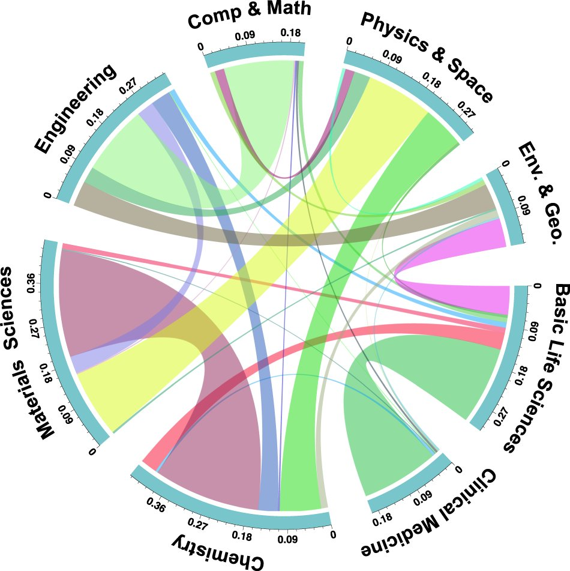
“Interdisciplinarity,” of course, governs only the sciences. What were once called the humanities answer now instead to the architectonics of “intersectionality”: intersected man possesses no self apart from the venn diagram of his various identities, “sex” “race” “gender” “class” “ability” “veteran status.” The resulting selfless-portrait looks not unlike the interdisciplinary dreamcatcher.
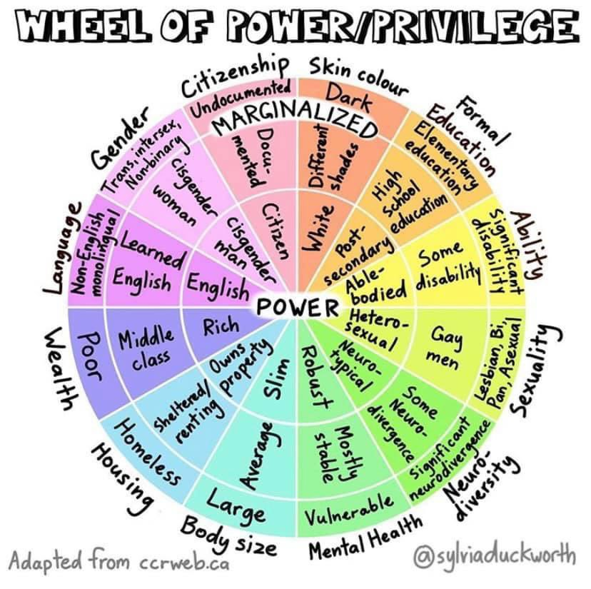
Any antagonism between the two is only superficial. The science of interdisciplinarity reveals the empty truth of Complexity; the art of intersectionality reveals how to live within that emptiness. The relationship between them is something like that between philosophy and law, or between speculative and pastoral theology. In theory, theory has the upper hand, but in practice, practice rules. Hence, inspired by passing internet controversies about 2+2=4 being an anti-trans dogwhistle, mathematics professors will spend class time controversializing the obvious point that if you redefine two, addition, or equality, it can equal something else. (For example, 2+2=1 mod 3.)
*
Newman’s Empire. To see why interdisciplinarity bows down to intersectionality we must trace the complexiversity back to the Christian university, with its own productive tension between speculative and practical theology. The ancient world had no universities because ancient law wasn’t philosophical—philosophy mandated only the fact of civic order, not its content. Instead, the ancient world had academies, devoted to the thought of a single philosopher, at which a studious gentleman might retire for a time from civic life. It was the university of medieval Christendom that first brought together rival intellectual factions under one roof.
Through that act of juxtaposition the university transformed rival factions into rival disciplines. Each discipline sought better to define its respective project by modeling itself on theology, just as the professions—lawyers, physicians, professors—modeled themselves on the priesthood. The project of the university then became the keeping of the peace between the disciplines, a task requiring a symphony of theory and practice. John Henry Newman (theologian, philosopher, historian, poet, novelist, educator) put it as follows, in the lectures collected in The Idea of a University [1852-1858]:
What an empire is in political history, such is a University in the sphere of philosophy and research. It is, as I have said, the high protecting power of all knowledge and science, of fact and principle, of inquiry and discovery, of experiment and speculation; it maps out the territory of the intellect, and sees that the boundaries of each province are religiously respected, and that there is neither encroachment nor surrender on any side.
Of course, as Newman recognizes, a university acts through its members:
Its several professors are like the ministers of various political powers at one court or conference. They represent their respective sciences, and attend to the private interests of those sciences respectively; and, should dispute arise between those sciences, they are the persons to talk over and arrange it, without risk of extravagant pretensions on any side, of angry collision, or of popular commotion.
The disciplines can’t simply ignore one another, but at the same time they must be reluctant to interfere into one another’s affairs. When the empire of intellect succeeds in keeping the peace:
A liberal philosophy becomes the habit of minds thus exercised; a breadth and spaciousness of thought, in which lines, seemingly parallel, may converge at leisure, and principles, recognized as incommensurable, may be safely antagonistic.
A liberal education produces, not virtuous men, exactly, but what Newman calls gentlemen. A gentleman has “a cultivated intellect, a delicate taste, a candid, equitable, dispassionate mind, a noble and courteous bearing in the conduct of life;—these are the connatural qualities of a large knowledge.” Elsewhere, Newman says that “it is almost a definition of a gentleman to say he is one who never inflicts pain.” Importantly, although these qualities of a gentleman are desirable,
They are no guarantee for sanctity or even for conscientiousness, they may attach to the man of the world, to the profligate, to the heartless,—pleasant, alas, and attractive as he shows when decked out in them. Taken by themselves, they do but seem to be what they are not; they look like virtue at a distance, but they are detected by close observers …
Newman’s gentleman appears to possess the fullness of virtue but remains in need of religious instruction. Similarly, the university appears autonomous but in fact must be subordinated to a pastoral mission in order practically to justify its pursuit of knowledge for its own sake. When it abandons its pastoral mission—when it degenerates from the Christian university into the liberal university—it is already on the path to the complexiversity’s emptiness.
*
The Victim. Almost a century after Newman, Wystan Hugh Auden (poet, playwright, public intellectual) penned a highly Newmanian lament for the state of the modern university, and gave it the highly Newmanian title “Under Which Lyre: A Reactionary Tract for the Times” [1946]. Delivered at Harvard University just as the military-industrial-research complex was shifting from hot to cold war, this poem takes up Newman’s metaphor of a struggle for intellectual territory:
Let Ares doze, that other war
Is instantly declared once more
’Twixt those who follow
Precocious Hermes all the way
And those who without qualms obey
Pompous Apollo.
“Hermes” and “Apollo” here name what Auden saw as the rival factions of his era:
The sons of Hermes love to play
And only do their best when they
Are told they oughtn’t;
Apollo’s children never shrink
From boring jobs but have to think
Their work important.
The triumph of Apollo, Auden fears, will mean the university’s demise:
And when he occupies a college,
Truth is replaced by Useful Knowledge;
He pays particular
Attention to Commercial Thought,
Public Relations, Hygiene, Sport,
In his curricula.
Recognizing the ascendancy of the Apollonians, Auden recommends that the Hermetics adopt guerrilla tactics:
Thou shalt not answer questionnaires
Or quizzes upon World-Affairs,
Nor with compliance
Take any test. Thou shalt not sit
With statisticians nor commit
A social science.
It is tempting, reading this poem, to side with the Hermetics—and to be sure, that is where Auden’s sympathies lie. But, a better reading is that both Hermetics and Apollonians are in the grip of an illusion only religious revelation can dissolve. The illusion is that they differ more than they resemble one another. Auden’s 1955 poem “Vespers” narrates the bursting of his own hermetic bubble, in a chance encounter between himself and an Apollonian (though he now renames the dichotomy as between nostalgic Arcadian and revolutionary Utopian). Each instinctively hates the other, but it is this hatred that reveals to them their similarity,
forcing us both, for a fraction of a second, to remember our victim (but for him I could forget the blood, but for me he could forget the innocence)
on whose immolation (call him Abel, Remus, whom you will, it is one Sin Offering) arcadias, utopias, our dear old bag of a democracy, are alike founded:
For without a cement of blood (it must be human, it must be innocent) no secular wall will safely stand.
Which is to say that Auden’s account of the academic rivalry of Hermes and Apollo is Girardian avant la lettre. René Girard (another polymath; his work touched on literature, psychology, anthropology, theology) didn’t write much about university politics, but his thought is highly relevant to them—not his often-caricatured concept of mimetic desire, but rather his account of how mimetic desire fits into salvation history [e.g., Things Hidden Since the Foundation of the World, 1978]. That account proceeds in four stages:
(a) Mimetic desire and conflict. When Alice desires what Beatrice possesses, it’s (often) not really about whatever material good is in dispute, but about Alice’s desire to take Beatrice’s place. Conflict between them is inevitable, irresoluble, and takes the form of Alice coming to resemble Beatrice.
(b) The scapegoat mechanism. As mimetic conflict spreads through a society, rendering everyone increasingly indistinguishable, social order can be restored by singling out a scapegoat, someone to blame for the conflict, and sacrificing them. This sacrifice restores a sense of sacred boundaries, and so social order—and this restoration is taken to confirm the scapegoat’s alleged guilt.
(c) Christian revelation. The gospel, among other things, reveals to us that the victim was no more responsible for the mimetic contagion than anyone else, and thus that the scapegoat mechanism is based on lies. Once this is understood, the mechanism stops working; people still engage in scapegoating, but it is increasingly ineffective, and traditional hierarchies become increasingly untenable.
(d) Anti-Christianity. Once the scapegoat mechanism can no longer function, an attempt is made to restore social order through a new religion, the worship of victimhood. As Girard puts it in I See Satan Fall Like Lightning [1999], what emerges is a totalitarianism which “takes over and ‘radicalizes’ the [Christian] concern for victims in order to paganize it.” Unfortunately, this aping of Christianity doesn’t bring peace, but sparks a new conflict over whose victimhood will be recognized. When victims are worshipped, the claim to victimhood becomes a kind of aggression.
A Girardian genealogy of the complexiversity would look something like the following. Having excluded religion and revelation, the liberal university at first produced gentlemen, that is, men who, having acquired a large knowledge of science and literature, sought never to inflict pain. This desire to avoid giving pain extended to the drawing of boundaries between the disciplines, in effect a mimetic conflict. But the liberal university slowly lost sight of what made the complacency of such gentlemen desirable. Today it produces not gentlemen, but on the one hand utilitarian scientists who seek to minimize the occurrence of pain by whatever means necessary, and on the other anarchic litterateurs who seek through irresponsible play to demonstrate their sensitivity for the wounds of the world. These seem opposed, but phenomena like D.E.I. mathematics show their deeper agreement. Lacking what Newman called “religious respect” for the boundaries between the disciplines, the pain-reducing sciences voluntarily abnegate themselves in order to honor the claims of victimhood studies.
*
The College of the Whale. Once religious respect is gone, it can’t easily be regained. Where can the university go from here? Well—a professor of my acquaintance once dreamed of founding a college whose curriculum centered on Herman Melville’s Moby-Dick; or, The Whale. The reading list for each course would begin the same way; after all, the book contains within itself not only all of American literature and history, but also philosophy, biology, geography, and more.
The most natural senior project to assign at such a college would be the drafting of an additional chapter of Moby-Dick. Not that there is room for such a chapter, or that the book is in any way incomplete, but (despite the premise of this imagined college) we must acknowledge that many facts about whales have been discovered in recent years that would have been the perfect topic for a new chapter to go somewhere between 55 and 105, had Melville known of them. One student might write about how whales speak to one another, and raise the speculative theory that it was men who taught the whales to speak, by hunting them. Another might write about how the largest whale arteries are broad enough for a man to swim in. Another could compare whale-fall—when a whale’s corpse falls to the ocean floor and sustains for decades a whole city of fish, crabs, and the like—to the death of God and the flourishing of artistic modernism.
The College of the Whale might be only the first of a whole consortium. I have known other scholars who would dream of doing the same with Plato’s Republic, Dante’s Divina Commedia, or Goethe’s Faust. When enough colleges had come into being, they could launch a graduate program. Its qualifying exams could take as their subject the set of the various colleges’ foundational books, with a student’s dissertation required to be on some book other than these. Apart from the founding members, only persons having received doctorates from the graduate program would be eligible to start new colleges in the consortium. Eventually the consortium would be sufficiently large that the graduate program would be impossible to complete, and no further graduate students could be admitted. Soon thereafter, the set of consortium members would be deemed closed.
So long as colleges in the consortium were limited to sufficiently universal works, there would be no defect in the depth or breadth of any consortium student’s education. A student at the College of the Whale, for example, would know Moby-Dick better than almost any English major at an ordinary college, and would at the same time know more of medicine than the average classics major, more of Greek than the average biology major, and so on. And so long as all the colleges in the consortium shared a city, which is to say, so long as the consortium developed into a university, no consortium student would have a false picture of the centrality of his own college’s chosen perspective. Each student would know that he had read Moby-Dick, or the Divina Commedia, or Faust, not because it is the one book all men must study, but because it is the book chosen for study by the particular community the student joined. Such contingency is unavoidable, since there can be no universal volume any more than there can be a universal language—each attempt is simply another particular volume or particular language clamoring for attention.
What a consortium education wouldn’t provide—and this is the point—is a sense for generally accepted disciplinary boundaries. A consortium student would have only a notional understanding of what ordinary academic institutions mean by labels like “English,” “classics,” “biology.” The task of translating ordinary interdepartmental politics into consortium terminology would be difficult, if not necessarily impossible (factor analysis might reveal, for example, that Melville tilts toward politics, Goethe toward science, Dante toward theology). Whenever consortium members reentered the ordinary academic world, they would feel themselves in it, but not of it, and its line-drawing would seem to them as arbitrary as the lines on a map seem to the cosmopolitans churned out by ordinary universities. In time they would learn that the lines are less arbitrary than they seem. That experience might make them more willing to take seriously the same proposition about ordinary political boundaries. It is in some such roundabout way, if at all, that we can recover proper understanding of the empire of the intellect.
Four Poetic Trinities
Erþe toc of erþe erþe wyþ woh,
Erþe oþer erþe to þe erþe droh,
Erþe leyde erþe in erþene þroh,
Þo heude erþe of erþe erþe ynoh.
First, an anonymous late-medieval lyric [c.1300]. It has three “earths” per line, totalling twelve of the twenty-seven words. Earth piled upon earth, redolent of the ground, dirt, mud, the pit’s open maw. But only if we assume we already know what “earth” means. If we don’t, the poem becomes an equation demanding solution: X took of X X with woe; X other X to X drew; X lay X in Xen pit; then had X of X X enough; what is X? Which is less earth piled upon earth than earth reflected upon itself; less hypnotic repetition than grammatical modulation; less matter than mind. If we solve for “earth” we dissolve the grime that clings to the word, and are left with some sort of solvent. Perhaps trinitarian, perhaps christological, though either way difficult to construe as entirely orthodox.
*
‘The child is father to the man.’
How can he be? The words are wild.
Suck any sense from that who can:
‘The child is father to the man.’
No; what the poet did write ran,
‘The man is father to the child.’
‘The child is father to the man!’
How can he be? The words are wild!
Second, an untitled Gerard Manley Hopkins fragment [c.1865]. It condemns the famous Wordsworth line, but also wonders at it; when Hopkins says “wild”—as he does frequently—the pun on “willed” is never far away. The wild will is the fullest expression of humanity, but always on the verge of waste and wantonness. It requires baptism, conversion from the Old into the New Adam. Hopkins’ objection comes down to the doctrine of the Virgin Birth: the Old Adam is father to each child, but Christ was not fathered by any child of Adamic blood—and it is with Christ, not Adam, that the Christian must identify his grown-up self. So Hopkins’ doctrine tells him. But he is too honest a poet to deny the power of the Wordsworthian alternative, as Wordsworth articulated it. The words are wild; Hopkins cannot make up his mind whether he wills them.
*
In the name of the Bee—
And of the Butterfly—
And of the Breeze—Amen!
Third, an untitled Emily Dickinson versicle (aren’t they all?) [F23, c.1858]. Some might think it a frivolous blasphemy, mocking the signum crucis by comparing the persons of the Trinity to mere insects. Yet such animal comparisons are not inherently irreverent; Scripture freely compares God to lion, lamb, and dove. We can instead see the poem as spiritually nourishing, offering new metaphors—pollination, transformation, refreshing invisible movement—for the spiritual dynamics we usually name as Father, Son, and Holy Ghost. So how to decide whether to burn the poem, or allow its words to burn themselves into our memory? There is no known procedure for verifying that a poem is spiritually safe before we let down our guard and hear it with open ears. All we can know is that whether we ultimately bless the poem or curse it, our decision will itself be open to either blessing or curse.
*
And did those feet in ancient time,
Walk upon Englands mountains green:
And was the holy Lamb of God,
On Englands pleasant pastures seen!
And did the Countenance Divine,
Shine forth upon our clouded hills?
And was Jerusalem builded here,
Among these dark Satanic Mills?
Bring me my Bow of burning gold:
Bring me my arrows of desire:
Bring me my Spear: O clouds unfold!
Bring me my Chariot of fire!
I will not cease from Mental Fight,
Nor shall my sword sleep in my hand:
Till we have built Jerusalem,
In Englands green & pleasant Land.
Finally, William Blake’s preface to his long poem Milton [c.1810], which Hubert Parry made England’s unofficial national anthem under the title “Jerusalem” [1916]. It is a passing strange poem for more than one voice to sing together. I will fight until we have built Jerusalem: through heroic action the poet hopes to invent his compatriots, which is to say his audience. For this task he requires his poetic tools, the greatest of which is the biblical chariot, a vehicle that already contains its own tenor, a means to move not from one place to another but from England to England-as-Jerusalem. The revolutions of the fiery wheels rhyme with the revolutions of the satanic mills; the chariot is merely the mill, the mere mill, the mill purified by the divine light shining through it. Remarkably, though the land remains for him dark, though he requires the purified implements be brought to him, he declares them “mine.” A command resembles a prayer, but in a prayer the first-person possessive often implies an “if you grant it to me.” So is the sword of truth the poet’s as our daily bread is ours, as what we pray for? Perhaps; but to whom can the isolated poet pray, other than himself? That is the very question the poet dubiously asks, after repetition undermines the plausibility of the exclamation about ancient feet. All he knows is that the pleasant land shines as if blessed, an appearance that imposes on him the task of making it a reality. For his task to become our task, for us not just to hear his voice but to sing alongside him, each of us would have to reiterate that self-addressed antiphon “Bring me my.” Blake appended below the poem a biblical epigraph not included in Parry’s musical setting: “Would to God that all the Lords people were Prophets.” If all are as prophets, to whom do they prophesy?
When Did Jacob Marry Leah?
Now [Laban] had two daughters, the name of the elder was Leah, and the younger was called Rachel. But Leah was blear eyed; Rachel was well favored, and of a beautiful countenance. And Jacob being in love with her, said: I will serve thee seven years for Rachel thy younger daughter. Laban answered: It is better that I give her to thee than to another man; stay with me. So Jacob served seven years for Rachel: and they seemed but a few days, because of the greatness of his love.
And he said to Laban: Give me my wife; for now the time is fulfilled, that I may go in unto her. And he, having invited a great number of his friends to the feast, made the marriage. And at night he brought in Leah his daughter to him. Now when Jacob had gone in to her according to custom when morning was come he saw it was Leah. And he said to his father in law: What is it that thou didst mean to do? did not I serve thee for Rachel? why hast thou deceived me? Laban answered: It is not the custom in this place, to give the younger in marriage first. Make up the week of days of this match: and I will give thee her also, for the service that thou shalt render me other seven years. He yielded to his pleasure: and after the week was past, he married Rachel.
Genesis 29:16-28
We know when Laban gives Rachel to Jacob: after the seven days of feasting for Leah’s wedding were past. But when did Jacob marry Leah? A far trickier question, if we are to take seriously these four minds’ own attempts to answer it. To answer it we must pass through seven hypotheses.
*
Jacob never married Leah. To begin, perhaps the question is tricky because its premise is false. There exists a colorable argument Jacob never married Leah at all. Jacob contracted with Laban to marry his daughter Rachel, entered into the wedding ceremony believing that he was marrying Rachel, and entered into the bedroom believing that he would be spending the night with Rachel. Somehow he did not notice until the next morning that it was Rachel’s older sister Leah. Was that wedding night a consummation? Surely it could not have consummated any marriage with Leah, given that all along he had intended to marry Rachel, and had believed it to be Rachel in the tent with him. A man cannot consent to what he does not know is happening. Had Jacob walked out at dawn, he would not in his own mind have been leaving a wife; he would have been leaving a stranger who had impersonated one.
Instead, Jacob goes to Laban to complain about having been tricked into purportedly marrying Leah. Jacob seems not to notice the dubious status of his marriage. Laban’s answer does not acknowledge it either. We might paraphrase: This is how we do things around here; I married you to Leah instead of Rachel because she’s next in line to get married; deal with it. And Jacob does deal with it, living out the rest of his life as if he has married Leah. But our concern here is with the truth of the Jacob-Leah situation, not with how a primitive culture might have erroneously construed it, and on any true definition of marriage, it requires consent. At no point did Jacob consent to marry Leah. He chose to marry Rachel; found himself in a situation where, he was told, he had married Leah by mistake; and then, taking this description of his situation to be accurate, he acquiesced to it. Such acquiescence is hardly the kind of consent we are looking for.
So the argument is colorable, and perhaps more than colorable. Yet to say that Jacob never married Leah lacks literary plausibility. First, it requires Jacob to be the kind of person who can be convinced of an impossibility, when nothing else in Genesis indicates that he’s a fool (at least not this sort of fool). Second, when a character in a narrative makes a mistake the narrator usually calls attention to it, with more or less subtlety, but nothing in Genesis casts the slightest doubt that Jacob has wound up married to Leah. To say that Jacob never married Leah seems, at best, against the grain of the text.
*
Jacob married Leah the next day. So stipulate that Jacob and Leah were at some point married, and work backward. They were married, at the latest, when Jacob “yielded to [Laban’s] pleasure.” Perhaps they were married in that very moment. Jacob goes to Laban to complain, not that he had been tricked into marrying Leah, but that he had been prevented from marrying Rachel. Laban tells him: This is how we do things around here; if you want to marry Rachel, you have to marry Leah first; deal with it. And Jacob, who could cry out that he had no part in Laban’s customs and would not be bound by them, but who very much wants to marry Rachel, reluctantly agrees. In this version of the story Jacob’s response makes a great deal more sense: he’s not some fool tricked into thinking himself married when really he isn’t, he’s a man in love accepting the burdens placed on him by his future father-in-law.
This is a more satisfactory account from Jacob’s perspective, and probably the version of the story most people take for granted. But it is nevertheless unsatisfactory when considered from the perspective of Laban. If causing Jacob to sleep with Leah would not amount to causing Jacob to marry Leah, what did Laban mean by it? What does the bed trick accomplish that could not have been accomplished more easily by going to Jacob before the wedding and informing him that to marry Rachel he would have to marry Leah first? These questions have no satisfactory answer, unless we suppose Laban to be in some way or another a fool. Either he believed that switching out Rachel for Leah would effectuate a marriage, or he believed that the bed trick would incline Jacob to be more eager to marry Leah. The former belief we rejected as psychologically implausible when attributed to Jacob, and for the same reason should reject it in Laban. The latter belief is equally implausible, even if less obviously so.
Laban might have imagined that the bed trick would incline Jacob to marry Leah in one of two ways. First, he might have anticipated an effect on Jacob’s attitude toward Leah. But a reasonable Laban would not have expected the effect to be a useful one: although the sexual act does bring the couple together, that very closeness will only heighten the sense of betrayal once the bed trick is discovered. Second, Laban might have anticipated an error on Jacob’s part. This, too, would be foolishness, both because Jacob was no such fool, and because Laban would have gained nothing from such foolishness on Jacob’s part regardless, unless his goal was to pimp out his daughter in order to bamboozle a foolish man into falsely believing himself to be his son-in-law.
*
Jacob married Leah in the darkness of the night. So take a step further back. Might Jacob have really married Leah at the time when both he and Laban seem to think the marriage took place—the night of the wedding? We provisionally concluded that the wedding night could not have seen a consummation of a marriage with Leah because Jacob had intended and believed himself to be marrying Rachel. But perhaps this was a case of caveat emptor. Jacob had tried to arrange things so as to marry Rachel, but ultimately what mattered, as a matter of law, was not the agreements made beforehand, but whom he laid beside in the darkness of the wedding night. Indeed, notice the words immediately preceding the wedding: not, “Give me Rachel,” but, “Give me my wife.” Perhaps Laban noticed the words and recognized an opportunity. His statement to Jacob the next morning was then merely an explanation of his own motives: This is how we do things around here; you slipped up, and when we see an opportunity to marry our eldest daughters off first, we take it; deal with it.
Is it plausible that, by failing to name Rachel specifically, Jacob contracted for whatever daughter Laban chose to put forward? Given what we know of the culture of the ancient Near East … Maybe. Every society has its distinctive rituals, strict observance of which is thought necessary to ensure that a legal event takes place. We know little in particular about the marriage laws of these nomadic, pastoral, mostly illiterate people, apart from the Leah narrative itself, which suggests that a marriage had five stages—betrothal, payment, demand, feast, consummation—but does not suggest what happens when the progression through the stages is not as expected. We do know that the legal norms of preclassical cultures were generally what we would consider harsh, focused more on word and deed than on intent, but that can cut both ways when it comes to deciding what happens when things don’t go according to plan. Perhaps Jacob’s failure to name Rachel in the demand bound him to accept whomever Laban proffered. Or, perhaps Jacob’s having named Rachel in the betrothal fixed the terms of the bargain, and would have prevented Jacob from marrying Leah that night even if he had been willing.
Neither option is particularly attractive. It seems unlikely that the terms of the betrothal had to be fulfilled exactly in the later stages in order for the marriage to come off. For instance, if the groom offered payment, not of the promised bride-price, but of something else of similar value—say, ten black mares instead of five white and five spotted—it seems unlikely that a cancellation of the initial betrothal and formation of a new betrothal would be required; failing to object to the proffered payment could amount to accepting the modification. But it also seems unlikely that the bride’s identity was similarly negotiable. It is difficult to imagine a culture in which a groom’s failure to expressly name his bargained-for bride on the day of the wedding was tantamount to an acceptance of her sister as substitute.
*
Jacob married Leah when he sought to marry Rachel. If Jacob’s failure to name Rachel did not cause his marriage to Leah, what about his insistence on her? We have attempted various interpretations of Laban’s response to Jacob, all glossing “custom of the place” as how we do things around here. But perhaps we should hear the phrase to mean something stronger. Perhaps Laban means to say: This is the law around here; you married Leah instead of Rachel because she’s next in line to get married; deal with it. The distinction is subtle but dramatic: it is that between Laban simply informing Jacob of Laban’s own practices, and Laban insisting that Jacob is bound by those practices as well. As explanation, it would leave unchanged the fact that Jacob never consented to marry the elder daughter. As demand, it would include a bid to reinterpret Jacob’s consent to marry Rachel as in effect consent to marry Leah. Granted such a reinterpretation, a true marriage could in fact have been the result of what Jacob did.
Such a conversion of consent may seem strange, but it is how we ordinarily understand entry into any structured role. To accept an office, a post, or a marriage is to bind oneself to the whole body of duty and custom belonging to it, whether or not one has enumerated the particulars in one’s own mind. If one of those particulars turns out to be the prior marriage of the intended’s elder sister, one has consented to it by consenting to the rest. Still, it would be oddly specific for this culture to have adopted the expectation that, if a man acts on his intent to marry a younger daughter, he has thereby consented to marry the elder. A more plausible explanation would be that Laban is chaining together two different customs (as is itself customary): first, that the younger daughter may not marry until the older daughter has married; second, that an intention to achieve an end implies also an intention to take all licit and proportional means toward that end. By intending to marry Rachel (we take Laban to reason), Jacob intended to cause Leah to be married, and, thus, intends to marry Leah himself.
And the reasoning would be sound—if marriage to Leah were a reasonable means toward marriage to Rachel. But there are various reasons to doubt it. First, one might doubt that marriage to one sister could ever be a reasonable means toward marriage to another, given, inter alia, the unreasonableness of polygamy, the unreasonableness of instrumental marriage, and the unreasonableness of opting for sister-wives. Second, even if we accept that Jacob could have reasonably married Leah in order to marry Rachel, it is far from clear that he in fact did so. After all, neither Jacob nor Laban takes for granted that such a later marriage to Rachel will be forthcoming; instead, they negotiate that marriage anew, with Laban demanding another seven-years labor and Jacob accepting in exchange for the wedding preceding the payment. Third—well, consider an old Jewish elaboration on the Leah narrative.
*
Jacob married Leah when Rachel lent her voice. This elaboration posits that Rachel aided Leah in accomplishing the deception of Jacob, perhaps helping make up the veiled Leah to resemble her at the wedding feast, perhaps even standing behind the curtain and lending her voice while her sister lies with Jacob in the tent. Various motives for such assistance have been posited: perhaps she pitied her sister and wished to avoid causing her the embarrassment of being rejected once Jacob found her out; perhaps she knew that Leah would be a better wife to Jacob than she herself could be, and so thought the substitution a good idea. None of the posited motives turn on the possibility of a later marriage between Rachel and Jacob, which event seems to have surprised Rachel as much as anyone.
The effects of Rachel’s assistance, assuming she offered it, are potentially significant. The assistance apparently indicates a ceding of Rachel’s right to be the one to marry Jacob first, and Leah’s acceptance of the assistance indicates her acceptance of the transferred right. If the initial betrothal contract had transferred to Rachel what an economist might call an alienable option to marry Jacob, this would suffice to make Jacob’s marriage to Leah a true one. His promise had been a promise to marry whomever Rachel told him to marry, and Rachel would have told him, by deed if not by word, that he should marry Leah. And Rachel’s assistance would have a further psychological effect, once Jacob realized it—as he surely would, the next morning, once he contrasted the voice of Rachel he remembered hearing with the face of Leah he saw beside him. To realize that Laban had betrayed him, as we considered earlier, was hardly likely to convince Jacob to change his mind and agree to take Leah before her sister. But to realize that Rachel had betrayed him—that just might lead him to accept the substitution.
But Rachel’s participation in the bed trick does not entirely resolve the difficulty. There is little reason to think the initial betrothal had the structure required. Jacob did not agree to marry whomever Rachel told him to marry, but rather to marry—Rachel. For Rachel to alienate her right to be the one marrying Jacob was perhaps necessary for him to marry Leah instead, but not sufficient. And psychologically, Rachel’s trickery might have convinced Jacob to go along with the marriage to Leah—or it might have made him turn his back on the entire lying lot of them. It remains to be explained, not just why Jacob did not take the latter route, but at what precise point in the narrative he ceased to have any moral right to do so: at what point he had married Leah rather than Rachel.
*
Jacob married Leah when he got his father’s blessing with a goat-skin. Return again to Laban’s explanation. Jacob’s response to Laban is not to contest Laban’s assertion that under local law Jacob is now married to Leah, or even to protest his ignorance of that law. But why not? Even if ignorance of the law is ordinarily no excuse, it would excuse now if ever, given that Laban’s entire strategy seems to have depended on Jacob’s ignorance remaining intact. Why did Jacob not simply say: it is unfair to hold a stranger to such an oddly specific rule without first telling him about it?
The answer becomes obvious when we consider the place of the Leah incident within Jacob’s narrative arc. Jacob could not protest his ignorance because he was not, in fact, ignorant; he was already aware of the general principles under which his marriage to Leah was accomplished. Before Jacob set out to find a wife, he obtained his brother Esau’s paternal inheritance through means not entirely unlike Laban’s bed trick. Isaac tasted a goat-broth and felt a goat-pelt, thought they were Esau’s hunter’s stew and hairy hands, and by mistake gave the smooth-skinned Jacob his most potent blessing. The literary parallels are readily apparent: in the shift from inheritance to marriage, the trickster has become the tricked, and the younger brother’s usurpation of the elder has become the elder sister’s reclamation of her rightful place, despite the groom’s preference for the younger.
To treat Jacob as a reasonable man is to treat him as capable of recognizing these parallels, such that their significance cannot be literary only—it must also be, so to speak, legal. At minimum, Jacob must concede that what’s sauce for the goat is sauce for the nannie: having bilked Esau out of their father’s blessing through a crude disguise, he cannot now complain when Leah does the same to him. But notice, also, that when Isaac learns of the goat-trick he does not imagine that the wrongfully bestowed blessing can be recalled. What is done is done: Jacob knows it; Isaac knows it; Esau, too, knows it, reluctant as he is to admit it; and Rebekah knew it too, or else she would never have participated in Jacob’s scheme. So it is not simply that Jacob has acted on the assumption that a certain rule held good; rather, he acted on the understanding that everyone concerned was on the same page. When Laban tells him of the rule that has caused him to be married to Leah, Jacob recognizes it as the same rule, and sees this rule binds him, and has always bound him.
*
Jacob married Leah when he sold Esau a mess of pottage. And now we come to the crux of the matter: What was the rule? If we look only at the scene with the goat-skin and the goat-stew, it might seem to be the rule discussed in the third turn above, that the deed matters more than the intent behind it. And indeed, this interpretation has anthropological plausibility. But a better reading is available, if we look only a little further back, to when Jacob acquires his brother’s birthright for a mess of pottage.
It is both plausible and desirable to understand the pottage and goat-stew incidents to bear a legal as well as a literary relation to one another. Both transactions involved the same good, the paternal blessing; only, one involved Esau’s right to it, the other Isaac’s giving of it. Without the mess of pottage, Jacob would have had no right to the blessing, and upon learning of his mistake Isaac could simply have recanted it. But without the goat-skin, Isaac would never have given the blessing, and the right to accept it would have been worthless. So the marriage to Leah shares the same structure as the inheritance to Jacob—but with the crucial first scene occluded. Isaac’s groping at the goat-skin and Jacob’s going in to Leah in the night each amounted to the actual transfer. But what was the parallel to Jacob’s purchase of his elder brother’s birthright?
Only this: that Leah, the elder sister, never sold herself short. Or, if we accept the traditional elaborations (and we now see why such elaborations are so attractive), Leah must have insisted, or had her father insist, on her possession of the right at issue, and Rachel, more virtuous than Esau, must have conceded the point. Rachel’s assistance with Leah’s disguise makes her the Rebekah as well as the Esau of this version of the story. And Jacob, when he hears Laban’s explanation, is like Isaac upon learning from Esau of the sale to Jacob: a man bound by the particulars of a law he knew only in generalities.
The Letter Killeth
The Auto-Pen. An aide comes out from behind closed doors saying he has instructions from the President that so-and-so is to be pardoned. But everyone knows the President is more or less non compos mentis. Is the pardon valid? Under the late medieval doctrine of “the king’s two bodies” (as analyzed in Ernst Kantorowicz’s book of that name [1957]), one might think the answer is yes. In a sort of legal fiction, the king qua king was understood to be incapable of imbecility. The king’s political body was not a human body, but an infallible abstract node in an organizational chart. Section 4 of the 25th Amendment implicitly acknowledges what we might call the doctrine of “the president’s two bodies”: only through constitutionally mandated formalities can the “presidential authority” node be relabeled so as not to bear the name of a madman or idiot.
But the two-body doctrine does not always apply. When Charles VI signed the Treaty of Troyes naming Henry V heir to the French throne, his episodic madness was no obstacle, and God’s implied judgment against the Treaty (delivered through Jeanne d’Arc’s victories) required some other ratio decidendi—e.g., the inalienability of the crown. But gifts made by Charles VI during his mad episodes were regularly contested and regularly revoked, despite bearing the king’s formal signature, on the ground that the conniving recipients had taken advantage of his lack of capacity. The difference is between acts of the sovereign and acts personal to the king, or, in more modern legal language, between public law and private law. Under a private-law framework an incompetent principal cannot act, and a purported agent’s act only binds the principal if third parties reasonably believe that the agent has the principal’s authorization. Pardons, like gifts, are governed by private law, being a matter of conscience. So the incompetent President’s pardon of so-and-so is without legal effect, but only because it’s a pardon.
At least, so a lawyer could plausibly argue. He could do so because the core of the argument is an analogy to a past precedent where the facts differ, but the principle doesn’t. The analogy is between kings and presidents, a plausible enough comparison; the principle is that the ruler’s incapacity to lose capacity applies only to public acts, and not to private ones. The analogy is not between pardons and gifts; rather, that both of these are private acts is simply a piece of “hornbook law,” a rule taken as a given. There may be good reasons for the rule—indeed, it may be overdetermined, there may be so many good reasons it couldn’t really be otherwise—but if so, the analogy between pardons and gifts doesn’t reveal them. If that analogy were all we had to go on, the argument would fall apart. That is the fate of most analogies about law drawn by non-lawyers.
*
The Dead Hand. Such analogies often run into further trouble because the non-lawyer fails to understand the nuances of the area of law to which the comparison is drawn. For instance, legitimists and indigenists both analogize sovereignty to a property right held by a random scion of a once-noble family, or by the impoverished descendants of a once-dominant native tribe. But even setting aside the fundamental differences between public and private law, no reasonable legal regime honors property rights left dormant for centuries. And while statutes of limitations must be promulgated by the sovereign and so cannot be used to identify him, other principles like laches, acquiescence, and protection for bona fide transferees are founded in equity, and require no lawgiver. The point generalizes beyond problems of untimeliness: the law serves man, not man the law, and laws yielding unworkable results will always be bent, if not broken.
In Walter Scott’s Waverley [1814], for instance, the entail, an archaic legal provision, restricts inheritance of the Bradwardine estate to male heirs, hence it cannot pass to the Baron Bradwardine’s daughter Rose. Out of a romantic idea of not prejudicing the rightful heir, the Baron refuses to break the entail through a strawman sale, a mechanism developed by early modern lawyers to deal with the practical problems entails caused. When the Baron is adjudged a rebel and stripped of his estate and title, the property descends on the heir—who, less romantically inclined, immediately sells to a third party. Luckily, the third party is the honorable Colonel Talbot, who gifts it back to the now merely “Mr.” Bradwardine to hold in the more modern fee simple. It is as if providence had arranged for the rejected strawman sale to happen anyway. Before accepting the Colonel’s gift, Bradwardine declares that Talbot has “lawfully and justly acquired” the property, thus acknowledging the authority of the regime against which he rebelled. Faced with the choice between compromised principles and romantic self-annihilation, Bradwardine follows the same maxim as his future son-in-law Edward Waverley: a man must allow himself to be guided by circumstances.
The legitimism that both Bradwardine and Waverley came to reject can be understood as a sentimental attachment to the idea of the Lost Cause, combined with a fantasy of the power of explicit legal writings to entirely displace the implicit, customary, and oral. The connection between the sentiment and the fantasy is that the memory of the Lost Cause is kept alive primarily through writing; if the memory has such spiritual force, surely it has legal force as well? A Lost Cause orally transmitted will not result in legitimist fantasy but in populist anarchy, a different sort of political problem.
*
Domesday. The legitimist’s desire for written law to render further speech irrelevant is not the only such fantasy. Another, call it positivism, is the dream that written law can be comprehensive, rendering further speech not so much irrelevant as unnecessary. The problem with positivism is that the effort to make the written law cover every possible case inevitably generates more and more of it, ultimately degenerating into a myriad of arbitrary distinctions only a lawyer could find meaningful. An exhaustive regulation detailing, e.g., what counts as negligent conduct, or a thousand precedents reasoning through whether particular instances of conduct are negligent, reduce the word “negligence” to a scatterplot. Conversely, maintaining space for public disputation about the good requires lawyers to accept that “legal obligations should be knowable in advance” and “like cases should be treated alike” are not trump cards, but only considerations to be weighed in the balance alongside others. A publicly meaningful legal system will necessarily be somewhat unpredictable, and somewhat inconsistent.
That too much written law results in lawlessness is something we had to learn, and probably were only in a position to learn after Gutenberg made “too much” a real possibility. Cicero imagined that there would be little need for new precedents if people were more aware of those that already existed. But the adversarial system plus WestLaw Search has not prevented the creation of new precedents, despite ensuring that judges are aware of all existing ones. The analogizing and distinguishing of cases has no natural terminus; and, more fundamentally, the world is infinitely complex, such that the territory law must govern will never be fully mapped out.
The standard literary touchstone for the danger of too much written law is Charles Dickens’ depiction in Bleak House [1853] of the interminable Chancery suit Jarndyce v Jarndyce, which began as a dispute over a will before roping in a myriad of ancillary issues and dragging on for entire lifetimes. Chancery’s reputation for delay was not entirely deserved: its cases took longer because Chancery was a court not of law but of equity, which meant (in part) a court dedicated to cases that were by their nature particularly complex. In theory, Chancery was suited to decide such cases because it could cut through a Gordian knot of legal rules by applying a few equitable principles. In practice, concerns that the resulting divisions would be arbitrary led Chancery judges to wield their equitable scalpel with extreme caution, only after following up every possible legal argument and every possible analogy to a past precedent (a problem magnified by the recent invention of the formal written judicial opinion). Jarndyce v Jarndyce and Bleak House itself end in a kind of apocalypse: not a final decision as to who receives the inheritance, but the revelation that the entire disputed estate has been consumed by legal fees.
*
The Judge’s Ledger. American law inherited England’s tradition of equitable courts, but the American people viewed them with suspicion from the beginning (and books like Bleak House surely did not calm their fears). The final triumph of the anti-equity movement came in the early twentieth century, when the distinction between courts of law and courts of equity was entirely abolished at the federal level. The hope was that the new unified system would be dominated by the spirit of law. The reality was almost the opposite: equity no longer being restricted to certain types of cases, it could interject its complexity everywhere. Hence every dispute was a potential Jarndyce v Jarndyce, consuming the disputed res unto the last penny before any decision could be reached.
The result is not a crippled legal system, but only one of a most peculiar character, perhaps best captured by the figure of Judge Holden in Cormac McCarthy’s Blood Meridian [1985]. Judge Holden—referred to simply as “the judge”—roams about the wilderness selecting objects of interest and sketching them into a ledgerbook he carries around with him; when he is done, he destroys the objects, leaving his sketches the only record of their existence. The judge also teaches that “War is god” because it forces the unity of existence. So, too, does American law. On the one hand, American law is a Faustian project to build out a perfect picture of the world, though it takes more paper than the world contains, and though it winds up a maze more difficult to navigate than the world itself. On the other, it is a Faustian bargain with litigants, who serve as freebooters in American law’s total war against the existence of unmapped territory: the map will be filled in to identify the exact location of the object of their dispute, but only if the litigants use up the value of the object on the search. They can avoid offering this holocaust only by at some point abandoning the fight and settling down to a sedentary life with their disappointingly small earnings (or, perhaps, emptyhanded, or having lost almost everything they once possessed).
Rephrased in a less mythic vein: the spirit of American law is to ensure maximal accuracy through cripplingly expensive process, while avoiding the expense of that process in almost every case by strongly encouraging settlement. This spirit plays out, for instance, in the extraordinarily wide scope of discovery in American legal proceedings (often a shock to foreign litigants), and in the “American rule” that each side bears its own attorney’s fees (also often a shock). The result is that if you seek to act with economic rationality, you will generally walk away not entirely satisfied, but with the matter resolved in a way everyone can live with. While if you stand on principle, both sides will incur costs disproportionate to the dispute’s economic value, but you have the opportunity to win a Pyrrhic victory.
*
The Long Defeat. Remarkably, the American legal system takes this approach not only for civil disputes, but also for criminal prosecutions. Almost all defendants are guilty of something; hence they rarely stand on the principle of their innocence. Instead, they enter plea bargains after haggling over sentence length, a basically economic issue: for how long will prison be the defendant’s home? Capital punishment, however, is a matter of principle, both from the defendant’s point of view, and from the point of view of the system itself, which devotes substantial resources to advocating against it (through court-appointed defenders, etc.). The result is that capital cases drag on interminably, and the state is prevented from using the death penalty to achieve economic goals (e.g., deterring crime, avoiding costs of imprisonment). The costs of legal process are designed to ensure that the state will only execute you if it believes that doing so is its own reward.
Which brings us back around to the auto-pen presidential pardons. We have suggested some reasons why the pardons might not be valid. But their ultimate validity or lack thereof matters less than the fact that their validity is arguable, and so will be argued, and will not be finally decided until any potential social benefits of the rescission have been entirely used up in the fight. The prosecutor fighting for rescission is engaged in an enterprise not entirely unlike that of the law-besotted Jacobite rebels: he fights a long defeat, taking the side of legal simplicity but with the inevitable result that the system of the law will grow ever more comprehensive, ever more unnavigable, ever more inescapable.
But either way, he will gain perhaps the glory of the victory, and certainly the glory of having fought for it. The glory of victory is comparative, and so zero-sum: the victor proves his excellence by surpassing the loser. If we doubled the strength of every man, the quantum of victory-glory in the world would not increase. But the glory of the deed is absolute: whatever remarkable feats occur along the way to win or loss live on in memory sometimes even after the outcome of the game has been forgotten. Our memories may be finite, but that finitude is a fact about us, not about glory. In the memory palace of the Father there are many niches.
*
In memoriam H.T.T., who collected ideas as if they were marbles, and W.H.W., who declined to be represented.
Protest Against Protest Votes
Assertion. I feel about protest voting much as I imagine a certain kind of liberal feels about the events of January 6, 2021. I don’t merely disapprove of the conduct at issue; it strikes me as sacrilege. Perhaps I feel this way in part because I myself barely avoided becoming a protest voter. For years I simply declined to vote at all. In 2016 I considered voting third party; ultimately I declined, partly out of laziness, partly out of vague unease with the prospect. By 2020 I had changed my mind about several things and voted for the candidate I had previously declined to support. But I still hadn’t fully put into words why I found it tolerable to vote for an in-many-respects-objectionable candidate but intolerable to cast a protest vote.
Now, almost a decade after I began mulling over the issue, I think I can state my position as follows. A protest vote violates the inner morality of voting because it fails to take the vote sufficiently seriously.
A vote, whatever the context, is a serious thing. It’s an attempt to do something: to nominate a candidate, elect an officeholder, pass a law, adopt a nonbinding resolution, acquit or convict a defendant. If you vote to do that thing, and the vote carries, you have done that thing, and are now responsible for it.
So not to vote, I can understand. If none of the options seem prudent—as can so often seem the case, when exercising one’s right to vote as citizen of a democratic republic—voting for any of them seems difficult to justify. Better to abstain.
Or to vandalize your ballot. You don’t want anything to do with the regime as it exists, and you want the regime to know it. So you take the time to go to the polls—and you tear up your ballot, or scribble over it, or write in “James K. Polk.” Heckling is a time-honored democratic tradition. In this context “James K. Polk” is not a vote, not a serious attempt to elect as president a man dead 175 years, but rather an expletive.
But to cast a protest vote? A protest vote (a phrase I use here in contrast to rather than as a synonym for a vandalized ballot) is neither a yea nor a nay, but a lukewarm soup dreaming of both. It doesn’t seriously attempt the election of the protest candidate. Nor does it seriously attempt to refrain from implicating the voter in the election, nor to reject the election itself. Instead, it hopes to be counted as a vote among other votes, and indeed purports to be cast for a candidate of purportedly greater moral seriousness than the major-party candidates, but it is cast with no intention of actually electing them. It is like a ballot that has been vandalized poorly, so that no one can discern the vandal’s intent but the vandal himself.
Such a protest vote is an abuse of the right. It is essentially wrongful, just like a vote by a juror for an outcome the juror believes to be incorrect. It deserves to be treated as no vote at all, an electoral nullity, and the person who casts it deserves serious sanction. Precisely what sanction needn’t be determined, it being impossible for any human judge to adjudicate which votes are protests and which are not.
*
Definition. So strong a condemnation of the relatively common activity of protest voting may seem bizarre. In 2016, over 5% of votes were for a non-major-party candidate. Did 5% of the voting public really engage in conduct tantamount to perjury? Unfortunately, I suspect that for most of them the answer is “yes.” But perhaps not for all of them; a vote for a non-major-party candidate is not necessarily a protest vote, as that phrase is used here. The quality of being a protest vote inheres in the vote, not the candidate.
A vote doesn’t become a protest vote simply because you doubt that the candidate has any substantial likelihood of winning the election. You can still intend to elect a long-shot candidate, just like you intend to solve a difficult problem without believing you’re actually likely to do so. Whether to vote for a long-shot candidate or a compromise candidate (one you don’t really like that much but think has a decent shot and is preferable to the alternative) is a question of prudence. My argument here is about the outer limits on that prudence.
You can also intend to elect a candidate without the candidate himself having any intention of being elected. In the early Republic at least the semblance of reluctance was the norm in candidates, being thought a sign of republican virtue. Today we’ve flipped republican virtue on its head, and are beset by candidates displaying a semblance of self-promotion (“you have to vote for us, we’re the only candidate who represents your values!”) but who in fact have no intention actually to win the election. But either way, the candidate’s intentions are irrelevant. All that’s necessary to intend to elect someone is to vote for them and, if asked why, to be able to honestly answer: to elect them to the office for which they are a candidate (whether they like it or not).
Conversely, it’s possible to vote for a candidate who intends to be elected, without intending to elect them. For example, if you fill out the ballot blindfolded, you may not even know what particular candidate you voted for, and so can’t be said to have had any particular intention in voting for him. Or if you cast your vote as a joke (“Wouldn’t it be funny if I voted for the candidate with the funniest name?”), you would be unable, except as an extension of the joke, to explain your vote as being intended to elect your chosen candidate to office. Or if you sell your vote, your intention in voting might be simply to earn the fee you were paid, without having any particular interest in whether the vote results in the candidate’s election or not. Though, interestingly, you might very well sell your vote to a particular candidate and also intend to elect that candidate, since if he wins and runs for reelection he’s likely to buy your vote again. Set self-interested voting to the side: we are after bigger fish.
A protest vote belongs to the same genus as the random vote, or the joke vote, or the thoroughly corrupt vote, in that it involves a vote cast without any intention to elect the person voted for. The protest vote is distinguished by the motive behind it: it doesn’t aim at nothing, or at the voter’s private amusement, but at signaling to other voters (i.e., protesting) that the voter prefers the ideology of the candidate voted for. If a vandalized ballot is like a riot, a protest vote is like a march, with placards politely informing the onlookers of the protesters’ views.
It should be stressed that a protest vote isn’t simply any vote cast with intent to communicate something to onlookers. Such votes are in principle permissible (though I will admit that I sometimes wish we kept confidential the tabulation of all ballots cast just as we keep confidential each individual ballot). After all, an act can be undertaken with multiple intentions: you can intend to elect your chosen third-party candidate and to send a message to the party apparatus that selected the major-party candidate. A protest vote is a vote that seeks to signal a preference for a given ideology but not to elect the ideologically-aligned candidate.
*
Examination. Leaving to one side vandalized ballots (which aren’t votes at all), it’s generally understood that one should not cast a vote randomly, or as a private joke. This injunction I merely extend to protest votes as well, and to all votes which appear to be attempts to elect the candidate voted for but in fact are not.
Which is to say, I hold that it is impermissible—an abuse of the right to vote—to vote without intending to elect the candidate voted for. Because a vote isn’t simply a glorified survey response, an indication of our preferences that will be tabulated and taken into account by the people whose job is to take into account people’s preferences. Rather, a vote is an attempt to elect the candidate voted for. It is standing up and saying, “this candidate will hold this office,” and if enough other people stand up and say the same thing along with you, the candidate named is thereby elected to that office, without any further action required on anyone’s part. The morality of voting is an instance of the morality of attempting. The protest voter imagines that he can vote for a fringe candidate without intending to elect him because his vote is vanishingly unlikely to cause his election. But attempting something just is intending it. A protest vote can only avoid intending by being no vote at all. In other words, a bearing of false witness.
Now, the protest voter might at this point protest that he does intend to elect his chosen candidate. Who are we to say that he doesn’t? To accuse him of lying? He can’t help it that his attempt is all but guaranteed to fail. To which we could respond: To be sure, a vote for a long-shot candidate isn’t necessarily a protest vote, but there is reason for doubt. Who is he to say that he is telling the truth? How does he know that his vote is honest?
Imagine a hostess sends an invitation to a difficult guest expecting it to be declined. Unexpectedly, it is accepted. If she now cancels the party, she has proven her invitation to have been false. But it could be false even if she doesn’t cancel. Obligations arise from our actions in all sorts of ways we don’t intend. If, for example, she invited him by accident (say, a misaddressed envelope), she might decline to cancel based purely on the obligation she owes him from having done him an unintentional wrong. To prove the truth of the invitation requires more than her not canceling—it requires her not to regret sending it. For the proper response to any regret would be: What do you mean? Didn’t you know what you were doing? Conversely, the hostess is acting honestly if she won’t regret her invitation in the event it is accepted.
Similarly for the suspected protest voter. He is suspected of dishonesty, and should suspect himself of dishonesty, since he doesn’t have perfect knowledge of his own intentions. He can’t know with certainty how he would respond in the event that his vote succeeds. But his examination of conscience (for we have admitted from the start that he will be examined in no external forum) should take the form of imagining that his vote succeeds, and discerning whether in that scenario he would regret casting it.
The inner morality of voting brings us this far. It doesn’t tell us under what circumstances regret will be warranted—there prudence enters in. But the logic of voting is enough to rule protest voting out entirely.
*
Comparison. My account of the inner morality of voting may seem extreme, but it’s not too different from the morality governing other speech acts of similar seriousness.
Consider the “I do” of the marriage rite. Like a vote, it is an act that accomplishes nothing unless another person says it too, in which case it results in marriage. Indeed, the word “vote” has the same origin as the word “vow.” There is something perverse about standing up at a wedding and saying “I do” without actually intending what those words entail, namely, the formation of a conjugal bond. And I would suggest that similar perversity attaches to casting a ballot for a candidate without actually intending to elect them. Though, admittedly, the marriage analogy isn’t on all fours, because it’s difficult to imagine a situation in which someone formally pronounces “I do” without intending even the semblance of marriage to result. The reason is that, once things progress to the point of a marriage ceremony taking place, little uncertainty remains: unless something unexpected occurs, there will result what at least looks like valid marriage.
In some ways the would-be fiancé’s “will you marry me?” is closer to the mark. No man knows for sure if his proposal will be accepted, but a marriage proposal made without any great hope of being accepted is still a proposal, while a proposal made without any intention of being accepted is—perhaps a joke (at the recipient’s expense?), perhaps a protest (against the recipient’s coolness?), but in any event it’s not what it appears to be. The problem with comparing voting to proposing is that we don’t recognize designated times and places when marriage proposals are called for, at which a joke or protest proposal would be improper. The marriage analogy fails because there is no equivalent to electoral uncertainty; the engagement analogy fails because there is no equivalent to the ballot box.
There do exist other circumstances in which we recognize that a speech act can’t be undertaken merely for the sake of an outcome, but must be consistent with the nature of the speech act in question. For example, in that other kind of voting that takes place in our Republic: the vote of judge or juror for one or another outcome in a legal dispute. It is well-understood that a judge or juror casting such a vote isn’t free to choose according to his preference, but must choose according to the merits of the case. If a given party isn’t legally and factually entitled to prevail, the judge or juror abuses his authority if he nevertheless votes for him, regardless of whether that party prevailing would be a better outcome all things considered, or would send a message to a certain group of people, or whatever other reason the judge or juror might proffer. Such a vote would be an act of perjury. The problem with the comparison of the voter to a judge or juror is that, except in those rare circumstances where there exists substantive discretion for the judge or juror to exercise, the judge or juror’s decision is entirely determined by the law and facts presented to him. A voter is not similarly bound.
The best comparator for the act of voting is the act of filing a lawsuit. Lawsuits are political acts. The litigant avows, not that he is entitled to relief, but that he (1) believes himself potentially entitled to relief and (2) intends to pursue the lawsuit to final judgment, barring some change in circumstances, for example, learning new facts disproving his right to relief, or obtaining a favorable settlement that would resolve the dispute without additional wasteful litigation. There’s nothing wrong with filing a lawsuit without full confidence in your right to relief, or with the intention of pressuring the other side into settling. But it is unethical to file a frivolous or harassing lawsuit—that is, unethical to file a lawsuit without good-faith belief in your potential right to relief, and unethical to file a lawsuit solely for the sake of settlement pressure, without any intention of seeing the lawsuit through if the pressure fails to bring about the desired settlement. Similarly, a voter who votes for a candidate avows that he (1) believes the candidate is a suitable candidate for office (this essay has not considered the question what makes a candidate suitable) and (2) intends to elect that candidate to office. If he doesn’t so believe and intend, his vote is a lie.
Why Why Liberalism Failed Failed (Liberalism)
Appraisals of liberalism often fall victim to a slippage between theory and practice. They begin by defining liberalism as a set of ideas (about politics, economics, science) and then ask whether these ideas’ alleged consequences are good or bad: whether strong rights-protecting states are enabling or oppressive; whether market economies facilitate self-definition or ensure alienation; whether technology marches toward the New Jerusalem or Gehenna. Along the way, they forget to ask whether these ideas in fact possess the causal power ascribed to them. Patrick Deneen’s 2018 book Why Liberalism Failed, for example, diagnoses liberalism as a vicious cycle: liberalism proposes that the state, market, and laboratory will make us free; these things in fact enslave us; liberalism responds by exhorting us to double down on its putatively liberating potential. The assumption of this model, whose truth is far from obvious, is that liberalism’s proposals are what cause its adherents to bring about the things liberalism proposes. If they aren’t, then Deneen’s critique of liberalism on the grounds of its consequences falls apart, whether or not one accepts his critique of the central state, the free market, and technological progress.
Sometimes, as in Francis Fukuyama’s 1989 essay “The End of History?,” the premise is slightly less hidden. Fukuyama’s strongest evidence for the end of history, before the Berlin Wall fell, was that “the liberal idea” had “infected the largest and oldest society in Asia, China.” In other words, liberal ideas were causing China to embrace political and market liberalism (having long before, along with the rest of the world, boarded the technological-progress train). While acknowledging that China was “ducking the question of political reform while putting the economy on a new footing,” Fukuyama thought political reform, too, only a matter of time—after all, the ideas were already there. This expectation has, of course, turned out to be misguided. One might well ask why. Perhaps Deng’s apparent movement towards liberalism was a feint or a false start, with Xi shifting China firmly back towards illiberal autocracy. More probable, however, is that the connection Fukuyama imagined between liberalism and the rule of law or efficient markets was an illusion. The CCP can use state power to root out corruption and ensure the rule of law without caring about the rhetoric of ‘rights’; it can use market mechanisms to further economic efficiency without caring about the rhetoric of ‘freedom’; and, of course, it can seek technological advancement without buying into the rhetoric of ‘progress’ toward greater actualization of inherent human potential.
The fact of China undermines both Fukuyama’s liberalism and Deneen’s antiliberalism, albeit the former more obviously than the latter. For someone like Fukuyama, for whom liberalism the ideology is persuasive (albeit disappointing) because it brings about the liberal regime than which no greater can be conceived, China stands as a counterexample to liberalism’s alleged supremacy. If liberal theory does not accurately describe the regime at the end of history, then, given Fukuyama’s views about history, liberal theory at the very least needs further refinement. Whereas for someone like Deneen, who dreads the pseudo-omnipotence of technology, the pseudo-omniscience of the market, and the pseudo-omnibenevolence of the state, China today stands as a counterexample to the claim of a causal link between liberalism and these infernal horrors—but if liberalism is not the only demonic regime, it can still stand as an example of the broader category. Deneen suggests as much in his book’s introduction, where he calls liberalism “the first of the modern world’s three great competitor political ideologies,” longer-lived than the others because less obviously ideological but still, like them, “ultimately unsustainable” because based in “falsehood about human nature.” Thus, Deneen does not have Fukuyama’s problem; he could simply respond that his argument concerns the American regime, not the Chinese, and that the existence of a differently infernal regime abroad does not undermine claims about the infernal character of the regime here, so long as there’s an explanation for the infernality in general—here, ideology.
Any such defense against the Chinese menace would depend on the present Chinese regime being ideological in the relevant sense, a point conceded here arguendo, though its truth is not obvious. Even granting this point, however, there emerges a subtler problem with Deneen’s account of how liberalism causes the things it allegedly causes—state, market, laboratory, call these together the modern regime. Namely, Deneen’s account operates at the wrong level of generality. If liberal ideology correlates with the modern regime, but “socialism with Chinese characteristics” also correlates with the modern regime, the correlation likely owes not to the details of either, but to the fact of their both being modern ideologies. Nor is it clear that modern ideologies create modern regimes, rather than vice versa. Deneen himself at times all but concedes that his usual rhetoric gets the causality backwards, as when he calls liberalism “arguably the first regime to put into effect a version of the ‘Noble Lie’”—the ideology cannot, after all, be both the regime’s effect and the regime’s cause. What Deneen avoids acknowledging is that the modern regime can be propped up by any number of ideologies, with ideology merely a fourth regime component: to state, market, and laboratory, add bully pulpit. As Eisenhower said, “our form of government has no sense unless it is founded in a deeply felt religious faith, and I don’t care what it is.” Why does it matter what liberalism is?
At times Deneen’s Catholic postliberalism bleeds into Catholic reaction, and he seems inclined to answer that it doesn’t. He comes to sound almost like Joseph de Maistre, who paid some attention to the specifics of liberal thought but focused primarily on the to him absurd idea that thinking could make a political difference in the first place. “True legislators,” de Maistre wrote, “are never what is called intellectuals … There is the same difference between political theory and constitutional laws as there is between poetics and poetry” [Considerations on France, 1796]. Given the nature of de Maistre’s invective, it is no surprise that he often refused to provide arguments for his assertions: “To prove this proposition in detail, after what I have said, would, it seems to me, be disrespectful to the wise and over-respectful to the foolish.” This political romanticism sounds quite unlike anything found in premodern political philosophy. Deneen does not go quite so far as de Maistre; he does not define ideology as the presence of ideas in politics, but as the presence of false ideas. It’s unclear, however, what allegedly true ideas Deneen would allow into politics, apart from the idea that politics isn’t primarily about ideas—an idea whose relevance de Maistre, too, might have admitted, however reluctantly.
The problem for Deneen (and de Maistre) is that politics can’t be planned and liberalism’s planning has ruined our politics—though they may seem equivalent propositions—are in fact contradictory. If politics can’t be planned, it is because no clear line can be drawn from plan to result, such that a regime can only be created by chance (or, to speak romantically, through national or individual genius). If liberalism’s planning has ruined our politics, it is because one can draw a line from plan to result, such that one can reason at least part of the way towards the deliberate creation of a political regime, and should focus, not on excising ideas from politics, but on sifting the false ideas from the true ones. Deneen might say that the only lines one can draw run from planning to its failure. Indeed, de Maistre said almost exactly that: “The more that is written, the weaker is the institution.” This no-ideas idea amounts to the reactionary plan for politics. If to do so weren’t liberal heresy, perhaps these authors would bother to ask whether it’s a good one.
It is not. The reactionary imagines liberalism (a word used interchangeably with ‘modernity’) as an evil demon which has possessed our politics by directing our attention towards political ideas. The reactionary plans to exorcise this demon by reciting a litany of the falsity of all political ideas. Once this rite has been performed a sufficient number of times, the reactionary imagines, we will be made free, able once more to live human lives free of ideological baggage. Not only does this attitude seem obviously ideological, it seems a quintessential expression of liberal ideology—it is an instance of a debunking narrative. That writing a book called Why Liberalism Failed does not undermine the liberal regime, but rather reinforces it, is the significance of Barack Obama having blurbed it. The present author remains unconvinced of the power of liberalism in Deneen’s grand sense to cause much of anything in the world of politics, but he does suspect that Deneen’s own crypto-liberalism caused the incoherence of his critique.
Not to be too harsh on Deneen. He is a student of the philosophy of politics, not of the politics of philosophy, which is to say that he cares about liberalism primarily because he believes its ideas misguided, and only derivatively because he has concluded that its effects on the world are pernicious. Many of his arguments against liberal ideas, and many of his complaints about the modern regime, have some truth to them. His error is in exaggerating the connection between his two bêtes noires. Deneen writes, for example, that Facebook does not make us lonely, but is rather “a tool that elicits loneliness from a deeper set of philosophical, political, and even theological commitments.” This is not a serious argument. The primary reason that medieval Europeans did not use Facebook is not that they were illiberals, but rather that they had not yet tamed electricity (a metonym for all the myriad of ways in which the medieval world differed utterly from our own). To say otherwise should, by Deneen’s own lights, be called liberalism.
The Customer Is Always Right, The Manager Is Always Left
Nancy Fraser, one of the more interesting Marxists of recent years, wrote an essay in 2014 called “Behind Marx’s Hidden Abode,” which argues the following tripartite thesis:
First, capitalism’s ‘non-economic’ realms serve as enabling background conditions for its economy; the latter depends for its very existence on values and inputs from the former. Second, however, capitalism’s ‘non-economic’ realms have a weight and character of their own, which can under certain circumstances provide resources for anti-capitalist struggle. Nevertheless, and this is the third point, these realms are part and parcel of capitalist society, historically co-constituted in tandem with its economy, and marked by their symbiosis with it.
We find an almost perfect instantiation of Fraser’s thesis in a book published exactly a century earlier by the reform-minded liberal capitalist Walter Lippmann. As only the most nostalgic Marxist would deny, Drift and Mastery: An Attempt to Diagnose the Current Unrest has proven prescient in its prediction of the increasing obsolescence of the labor-capital divide. But Lippmann’s hope that liberal managerialism would solve the internal conflicts of liberal capitalism has fared less well; it has not solved them, but only refactored them.
Lippmann’s diagnosis of the ills of liberal capitalism is in many ways Marxian: the laissez-faire state cedes too much political power to private enterprise, leaving us “drift[ing] along at the mercy of economic forces we are unable to master” (p.145-46). But Lippmann differs from Marx in two ways. First, he denies that capital is in charge. Capitalists may have created the liberal state, but they no more control its drift than the laborers they oppress. The wrong person is not in charge; no one is in charge. Second, Lippmann sees proletarian revolution as a pipe dream, and in any event undesirable—any labor movement that somehow seized the means of production would be the dog that caught the car. Rather than turn the tables in the conflict between labor and capital, we must turn conflict into “cooperation” by achieving a new form of “industrial citizenship” (p.167). Lippmann is smart enough to know that “cooperation” and “industrial citizenship” name ends, not means. He envisions a populace capable of intelligently navigating an industrial economy, and an economy capable of being so navigated. But how to arrive at this utopia? Lippmann denies that the transformation envisioned can be imposed by an external force. It must be brought about “not by some wise and superior being but by the American people themselves” (p.168). So Lippmann seeks to appoint himself not dictator, but educator. He does not prescribe, but simply describes, as if accurate description were itself a cure-all.
If we can change our thinking about the relationship between state and society, Lippmann suggests, both a healthier economy and a healthier politics will result. The principal change Lippmann wants to see in our world-picture is a decentering of the relationship between capital and labor in favor of that between profession and consumption. The capitalist in the sense of “the little business monarch,” as Lippmann tells it, no longer exists: “just as in political government ‘the President’ does a hundred things every day he may never even hear of … so in big business … the real government is passing into a hierarchy of managers and deputies, who, by what would look like a miracle to Adam Smith, are able to coöperate pretty well toward a common end” (p.44-45). The labor problem, meanwhile, Lippmann expects will be solved by ceasing to obstruct reformist labor organization: “reform undermines the revolutionary spirit” (p.88), and organization will necessarily integrate labor into professionalized administration. Lippmann would not be surprised to hear that the biggest shareholders in many corporations today are pension funds, vast hoards of capital owned by hordes of laborers but controlled by MBAs. When government, business, capital, and labor are all managed by professionals, the relationship that matters is not between these groups, but between the professionals and—who?
The defining feature of professionals, in Lippmann’s telling, is that they “have found an interest in the actual work they are doing” (p.49). This does not mean that their work serves their interests; to the contrary, it means that they are happy for it to serve the interests of someone else, namely, the consumer. Lippmann’s paradigmatic consumer is the modern woman. According to Lippmann, modernity transforms the life of women in two related ways. First, the home economy, like the industrial economy, grows increasingly mechanized and rationalized, freeing women from domestic labor and leaving them only domestic management. Second, and as a result, women now “have more time for politics than men,” and so will be able to dominate it; especially once women get the vote, politics will become “the chief method by which the consumer enforces his interests upon the industrial system” (p.71-72). Not that housewives will all become politicians. Rather, political platforms will become objects of consumption, with consumers, that is, household managers, choosing expertly between them just as they choose between products in the marketplace. As, indeed, in this new era of what Lippmann imagines will be monogamous sexual liberation, they choose as their husbands the most interesting of the male professionals.
Which is to say, to return to Nancy Fraser’s terminology, that Lippmann tries to solve the economic woes of the liberal capitalist regime by drawing on non-economic resources: the civil servant’s devotion to his work, and the housewife’s devotion to the good of her family. But does Lippmann’s professional-consumer dichotomy in fact bring something new to the economic sphere, or just package the old labor-capital wine in new bottles? After all, Lippmann’s portraits of the consumer and the professional are drawn from the very world of laissez-faire capitalism he was critiquing. The association of women with consumption, as opposed to production, derives from the Victorian division of male and female spheres; Lippmann’s consumer is the Victorian gentle housewife democratized, now with a refrigerator and a day-care center rather than a cook and a wet-nurse. His portrait of the professional, meanwhile, derives from the meritocratic British civil service, and shares its essentially imperialist and militarist character—“a fellowship in interest, a standard of ethics, an esprit de corps, and a decided discipline” (p.48). The middle-class America of the early seasons of Mad Men [2007-2015], which Lippmann so presciently predicted, seems eerily similar to the middle-class England of Dickens, only with the middle class now imagined to be a majority of the population.
That domesticity and meritocracy are “part and parcel” of laissez-faire capitalism does not, of course, mean that elevating them to center stage changes nothing. Even if the love affair of professional and consumer is not a radical alternative to the war of labor and capital, it is a complex refactoring of it. The professional is the laborer re-imagined as human capitalist. He does not truly value his work for its own sake, because he does not particularly care what work he does; he is not an artist, a priest, a philosopher, or even a soldier. Rather, he values his capacity to work as the one asset whose value he has the power to maximize. Of course salaried professionals are not really the same people as waged laborers, but Lippmann does all he can to erase the distinction, and so to make becoming a human capitalist normative for everyone who enters the workforce. The consumer, meanwhile, is the capitalist re-imagined as affective laborer. She is to dominate politics and to direct production merely through the exercise of market power. She exercises this power by choosing from a menu of options based on which politician, business, husband has most credibly aroused her desires and simultaneously promised to fulfill them. Without her exercising this power of choice, the whole system grinds to a halt. Of course housewives are not really the same people as the uber-rich, but Lippmann does all he can to convince us that in the future no one will have purchasing power in excess of their purchasing desires.
Through this refactoring of labor and capital Lippmann takes what had been a division in the public sphere and moves it inside each private household. The result, which Lippmann did not quite anticipate, was that the household ceased to be a home. The problem was that housework can only be outsourced if ‘professionals’ (wage-earners) can do it more cheaply than the housewives, which requires either a class divide or efficiency gains. Lippmann’s project requires reliance on the latter: the early twentieth century housewife may still need ‘the help,’ but the guiding ideal is the streamlined world of the Jetsons. Such efficiency gains require standardization and centralization. Daycare shifts to a childcare facility the labor of creating new human capital; prepackaged food shifts from kitchen to processing plant the bulk of the labor of consumption; even labor-saving devices like laundry machines reduce the labor expended within the home only by substituting more routinized forms of labor on the factory floor. This standardization and centralization deprive the household of any distinct purpose; there is no particular reason why the housewife-as-consumer should be making consumption choices for anyone other than herself. This loss of purpose also deprives the household of any authority as a norm-creating institution, the breakdown depicted in Mad Men’s later seasons.
The labor-capital divide then shifts into each human heart. Now a century into Lippmann’s world, we are all androgynous professional-consumers; we are all middle class, or, at least, want to imagine ourselves so. Less obviously, but just as importantly, the Lippmannian refactoring has the effect of yoking capitalism’s inhuman desire to reproduce itself onto all-too-human erotic desire, newly detached from human reproduction. In laissez-faire capitalism, what accumulates is capital, which grows as it is invested. In Lippmannian professionalist-consumerist socialism, as he at least partially understood, “the effect of the woman’s movement will accumulate with the generations” (p.237). Two things in particular accumulate: the professional’s productive capacity, embodied by ever-more complex institutions, and the consumer’s desire for greater production of interchangeable goods, now unanchored by the needs of any particular home economy. Both production and consumption thus become detached from any external reality desirable for its own sake.
A fair inference from Lippmann’s account would be that the premier science of the twentieth century (as he accurately foresaw it) was the science of advertising. Lippmann recognized this possibility only to disavow it: “Advertising is in fact the weed that has grown up because the art of consumption is uncultivated” (p.67). But the attempted distinction here is hopelessly romantic. Lippmann imagined that consumer desires in his day were inauthentic impositions from outside, but that one day consumers would come into their own in the political sphere, seize the means of affective regulation, and choose how their choices are presented to them so as to make their first-order choices authentic. In fact, as Fraser helps us see—and this is the final point to be made—it is Lippmann himself who was engaged in false advertising. He presented himself as an educator who would show us what we must do to choose for ourselves a good future rather than a bad. But his entire professional project was to sell us our inescapable future and convince us that it was what we wanted all along.
Two Cheers for Oligarchy
That many elite universities preferentially admit “legacies” (i.e., the children of their alumni) gives rise to frequent gripes about unfairness. It’s true that legacy admissions are unfair, but not in quite the way people expect. They are not sheer discrimination against non-legacies, but rather an anti-competitive strategy meant to drive down admission rates and boost yield rates (both important for gaming the school-ranking algorithms, and the latter independently desirable since it avoids wasted effort).
A toy example will show how the strategy works. Imagine six students, two of whom are legacies at Yale, two at Harvard, two at Princeton. In each pair of students, one is high quality and one low quality. All six students apply to all three schools. Each school wants one student, preferably high quality; whom will they admit? If each school admits all of the three high quality applicants and none of the low quality applicants, then each school will have a 1/2 admission rate and each high quality applicant will have three schools to choose from. All three schools can thus expect a yield rate of 1/3 (i.e., one of the three students will accept), but with high variance: they may get 2/3, or 0/3, or even 3/3. On the other hand, if each school admits only its own high quality legacy, their admission rates will be 1/6 and their expected yield rates will be 1/1, with a small chance of 0/1; after all, each high quality legacy will have only one school to choose from (unless they are also, say, admitted to Stanford). Note that no school has any reason to admit the low-quality legacies, who are undesirable students.
This strategy works less well if not every school follows it. If Yale admits only the high quality Yale legacy but Princeton and Harvard admit all three high quality applicants, Yale runs a big risk of getting 0/1. But the risk is smaller than if Yale had admitted a single high-quality student at random, because many students like the idea of attending their parents’ alma mater. And so legacies provide a natural Schelling point for this sort of anti-competitive strategy. Each school can justify preferencing legacies because it indicates greater desire to attend, without making any reference to what other schools are doing, and so all the schools converge on a system for allocating students between them.
Who suffers from the legacy-preferencing strategy I have described? Primarily, high quality applicants who are not legacies at any elite university, and so fall through the cracks. But also high quality legacies denied the choice of which elite school to attend. Who benefits from the legacy-preferencing strategy? Not low-quality legacies, whom schools have no reason to favor (unless their parents call the school and promise to donate ten million dollars, a rare occurrence distinct from ordinary legacy admissions). The primary beneficiaries of legacy preferences are not the legacies, but the schools themselves.
That this strategy is possible does not prove that elite universities are actually using it. The evidence is suggestive, but indeterminate. When I last checked, about 10% of Harvard applicants were legacies, and Harvard admitted 33% of legacy applicants and 6% of non-legacy applicants, resulting in a 36% legacy student body. The existence of a discrepancy here is not surprising—it would be more surprising if none existed, for it would mean that a Harvard legacy had no better understanding of his admissions chances than a random student encouraged to apply to Harvard by an over-eager college counselor. The interesting question is how Yale and Princeton legacies fare when applying to Harvard. They are likely to be of similar caliber, but are they also admitted 33% of the time? If elite universities are following the legacy-preferencing strategy, the answer is probably no, though I have not seen numbers.
If I’m right, then the applicants best positioned to challenge legacy admissions as discriminatory are—other legacies. After all, to prevail on a discrimination claim would require an applicant to prove that he was denied admission for the sole reason that he was not, say, a Harvard legacy. Unless we are willing to dictate that admissions committees can only consider objective metrics and must follow objective rubrics for determining their relative weight, it will always be impossible for an individual applicant to prove that he was denied admission when the committee would have admitted an otherwise-identical Harvard legacy. Recourse to statistical trends will be necessary. As noted, Harvard legacies and non-legacies are not otherwise identical groups; we should expect the former to be higher-quality candidates. But a Yale or Princeton legacy—such an applicant could plausibly complain that Harvard had discriminated against him for the color of his parents’ football jersey.
If the thought of such a suit for micro-ethnic discrimination strikes the reader as absurd, the lesson may be that perfectly competitive markets are not the be-all and end-all of public policy. Choice is not always good, and anti-competitive behavior may in some circumstances play a meaningful role in boosting in-group cohesion; the world may be better off when elite universities nudge Harvard legacies toward Harvard, without a regulator intervening to ensure each high-quality Harvard legacy faces a choice between Harvard, Yale, and Princeton. On the other hand, for those convinced that Harvard has the right to discriminate against non-legacies, but also in love with capital’s ability to melt all that is solid into air, a modest proposal for streamlining academic admissions: require each school to base admissions entirely on the resumé of the applicant’s parents. After all, given some basic facts about the heritability of personality traits including drive, charisma, and intelligence, the caliber of the parents tells you almost all you need to know about the applicant. The rest of what admissions committees consider is mostly noise, and worse than noise: when metrics like test scores and extracurriculars become goals, immense effort is wasted in achieving them. Merit-of-the-parent admissions are the only way to select for merit while abolishing striver culture.
*
I do not take the preceding assertions about heritability to be open to reasonable dispute, although many are in denial about them. Many believe any discussion of these facts to constitute “eugenics,” or at least to be inclined dangerously eugenics-ward. As with “fascism,” more or less everyone disavows “eugenics,” but no consensus exists as to why the practice of eugenics is bad. Does the evil of eugenics lie in its reliance on forced sterilization, abortion of defective fetuses, and the like? In its lack of respect for the mystery of human procreation? In its aspiration to dominate human nature? Answers to these questions are surprisingly difficult to pin down.
It does not help matters that the word was not originally intended to name a practice at all, but a theory. Coined in 1883 on analogy with “physics,” the study of nature, “eugenics” names the study of good genes. (A true-enough sentence; a pedant would observe that the word “gene” did not come into circulation until three decades later, but both coinages drew from the Greek genos, “birth,” and for the same reason.) To be sure, “good” implies an exercise of judgment, but there is little doubt that it makes sense to speak of good genes, as it makes sense to speak of good eyes, or good circulation. Just as the study of medicine tells us very little about bioethics, the word “eugenics” was never well-suited to name the practices we adopt in response to genetic realities. On analogy with “economics,” i.e., household management (another art often mistaken for a science), we might call the practice in question “eugenomics.” Or, more simply and felicitously, “bloodline management.”
The economics analogy does not entirely resolve the most common worries about bloodline management, but it does lower their temperature. Does taking bloodlines seriously imply a commitment to state control of the means of reproduction? No more than taking households seriously implies a commitment to state control of the means of production. Not all economists are communists. Similarly, to allow parental control (via abortion, IVF, etc.) is no more an imperative than to allow slavery. Not all economists are so libertarian as to believe contracts of slavery permissible. The goal of bloodline management, the begetting of excellent children, is no more necessarily dehumanizing than the goal of household management, the arrangement of an environment in which those children will flourish. And if a “eugenomic mentality” threatens our ability to see other human beings as more than repositories of genetic capital to turn to our own purposes, so too does an “economic mentality” threaten almost the same thing. Not, to be sure, an insignificant concern—but also not a reason to blind ourselves entirely to practical realities.
Instead of catastrophizing about the possibility that someone, somewhere, might be taking bloodlines seriously, we should approach eugenomics as we do economics—as an arena where prudence must act within constraints (thus “ethical”), and where we must consider second-order effects on society as a whole (thus also “political”). Calm reflection on eugenomics yields many insights. We can, for example, recognize a bloodline-protective legal regime as a kind of oligarchy, and so subject to the standard critique of oligarchy: rule by the few, whether distinguished by financials or genetics, is a poor proxy for rule by the virtuous. The standard response also applies: proxies for virtue are all the eyes of the law can see directly. Or consider the problem of eugenomic motives for marriage. The romantic ideal, of course, is that we marry for love of the other person’s character. But marriage is a practical partnership as well as a romantic union, and we have long acknowledged that other motives play a significant role in clearing the marriage market. Physical attraction, most obviously, but also more abstract considerations like economic security. Why not consider eugenomic security as well? Imagine a human-capital version of the nineteenth century marriage novel: “It is a truth universally acknowledged, that a single man in possession of genes for 6′3″ and 130+ IQ sons must be in want of a wife.”
If eugenomic considerations can color our choice of spouse without entirely reshaping it, the same cannot be said for our choice of children. The very prospect of choosing which child to have is entirely alien to our cultural experience. At most, we have chosen in what circumstances to have one: ideally, with sufficient household resources to support the child, with a spouse whose features we would like to see reflected in the child’s face, and with the intention of educating the child into virtue. (An intention easier to effectuate if the other two circumstances are also present, hence the correlation between plutocracy, eugenocracy, and aristocracy.) The limited extent of our control over bloodlines prevents concern for them from drowning out the more personal dimension of the parent-child relationship. The newly emerging power to directly decide a child’s genome may well alter that relationship in undesirable ways, leading parent to see child as only so much raw material to be molded as the sculptor sees fit. Perhaps, then, it will be necessary to mark certain eugenomic techniques out of bounds.
Such delimiting would be primarily a matter of regulating means, not ends—but to set a taboo upon certain means is also to say something about the end to which those means are suited. To prohibit, for example, usury, is to say: household management is good within bounds, but not when the household grows beyond reason by enslaving other households to the task of increasing its holdings, with no reference to their own proper good. Similarly, to prohibit IVF is to say: bloodline management is good within bounds, but a child is and ought to remain the natural product of the natural union of husband and wife. A taboo demarcates the sacred from the profane. Managerial practices belong on the profane side of the line.
Some take the fact that wealth management must be hemmed round with moral limits to mean that there is something suspect about its implied goal of endless increase. The worry is not absurd, for either financial or genetic wealth. Focusing on the latter, many suspect that the natural limits on human life may be in a mysterious way more conducive to human happiness than the limitless world biotechnology now seems to promise. What exactly are we worried about—that we will cease to be sexually reproducing, tool-making, political, reasoning animals, if our maximum lifespan grows beyond 120 years, our maximum healthy height above seven feet, our maximum meaningful social network to more than a few hundred persons, or our maximum intelligence beyond what today’s IQ tests can measure? To articulate the worry is not, in fact, to refute it. We hardly understand what changes in the course of the genetic river kicked off anthropogenesis in the first place.
Yet if we have hardly any experience with permanently changing human nature, we have copious experience with doing so temporarily, in the form of psychoactive drugs—and this experience hardly points in the direction of ruling out transhumanation altogether. Rather, it suggests that there is little useful to be said about drugs in general, beyond the necessity of prudent attention to particulars. Indeed, the particularity goes all the way down: we often judge not simply that a given drug is in or out of bounds, but that a given drug is permissible only used in a certain way, according to certain culturally transmitted scripts. The same will likely apply to any attempt to set limits on attempts to breed a better kind of human being. It will have to be done, but cannot be done in advance. When Noah invented wine, he immediately found himself accidentally inebriated, and it was his children who were obliged to cover up his shame.
The technological advances of the coming decades will pose new problems, but the fundamental dilemma is not itself new. We have not, up until now, chosen our children, but that has not stopped us from trying to choose their lives for them. Many of today’s aristocrats (which is to say hereditary plutocrats) can trace both their ancestry and their estates back a thousand years, thanks to myriad fathers who cared less for their sons than for the abstract proposition: My son will continue the family line, and hold together the family fortune. But the medieval aristocracy eventually gave rise to the mendicant orders. To a mendicant’s vows of poverty, chastity, and obedience, the family often objects: Why won’t you produce, and reproduce, like your father tells you? It’s all one complaint, really: Why must you devote yourself to a divinity other than that of wealth management? To which the mendicant replies: Wealth must serve the weal of man, not man that of his wealth.
Ten Regular Parables
When I was a boy I dreamed of being a baseball. But tonight I say, we must go forward, not backwards; upwards, not forwards; and always twirling, twirling, twirling towards freedom!
– Kodos, “Citizen Kang” [1996]
The spirit of soccer is a spirit of common limitations. In its ur-rule: Do not use your hands, or the other side will get a free kick! And in its generalization to the principle: If allowing X would slacken the competitive tension, then X’ing will result in a penalty. Do not go offside, or the other side will get a free kick! Do not go out of bounds, or the other side will get a throw-in, or a corner kick, or a goal kick! A team earns a point only when it successfully maneuvers the ball into the confines of the goal.
The opposite of soccer is baseball, because the spirit of baseball is a spirit of fair extensions. Baseball begins with the ur-rule: A bat or a glove is deemed to be an extension of a man’s hand. It generalizes that rule to the principle: If deeming you to have X’ed would heighten the intensity of the competition, you will be deemed to have X’ed. If you prefer not to swing at a hittable pitch, very well; but it will still count as a strike. If you prefer not to throw a pitch the batter can reasonably hit, fine; but the result will be that he is awarded first base. If you prefer not to catch that infield fly, very well; but it will be as if you had caught it, so that the runner will not be forced into a trivial double play. The true penalty in baseball is all but unknown, but any attempt to evade the game’s spirit will be construed to have defeated itself.
The contrasting spirits of soccer and baseball are matched by a like contrast between their matters. Playing soccer requires minimal equipment and—since the score rarely exceeds a handful of goals on either side—minimal recordkeeping. It can be played by anyone, anywhere, so long as they possess a leatherbound inflated bladder to kick around. It does not even require any special training; anyone can run, or kick, though of course training will improve one’s ability to do so. Whereas if you can’t swing at a pitch because you never learned not to flinch from a small hard projectile hurtling in the general direction of your head, you are not able to play baseball at all, not even poorly. Baseball also requires an armory of specialized equipment: balls, bats, gloves, bases, chalk, and ideally a level field extending into infinity. Such fields being unavailable, we erect a fence an arbitrary and variable distance into the outfield, and if the ball surpasses it we deem it to have rolled off past the horizon. Each event in baseball being discrete, the game is easily recorded as a linear narrative, and always has been.
From the spectator’s point of view both soccer and baseball are sublimely boring sports, but differently so. Soccer is boring because if both sides are competent, the ball will simply fluctuate back and forth over the center line; in order for one side to score the other must make not one mistake, but many in a row, a cascade of errors swinging the front all the way to the goal, and into it. Once begun the cascade cannot be stopped because there isn’t time, and most players simply watch in ecstasy or agony as events transpire they are too far away to affect. Baseball psychologizes this cascade, which rarely occurs on the field itself because gameplay stops between consecutive pitches; a meltdown or a funk is entirely within the pitcher or the batter’s head. The relevant physical fluctuations are those of the ball and bat as they fly through the air to meet one another, and a hairs-breadth can be the difference between a pop fly and a home run.
Supremacy at either sport requires mastering chaos, but in soccer it is a human-scale chaos, in baseball a mechanical one. The problem of soccer, we might say, is the difficulty of living a meaningful life in a world of endless monotonous drudgery. The problem of baseball is the difficulty of getting by at all in a world of infinitely precise complexity. And so soccer is the proper sport of Shakespeare’s unaccommodated man, that poor bare forked animal whose hands are never else but empty; while baseball is the proper sport of Melville’s America, where democratic dignity radiates from the arm that wields a pick or drives a spike in the construction of the American Canals and Railroads.
*
“Call me Ishmael,” says the first line of the first chapter of Moby-Dick; or, The Whale [1851], as if our story is to be set in some otherworld of allegorical enchantment. Which of course it is. But it takes place also in a series of very particular places (Manhattan, then New Bedford, then the world), and at a very particular time. At the chapter’s close Ishmael imagines the week’s headlines:
“Grand Contested Election for the Presidency of the United States.
“WHALING VOYAGE BY ONE ISHMAEL.
“BLOODY BATTLE IN AFFGHANISTAN.”
The bloody battle would have been in the First Anglo-Afghan War, 1839-42, making the grand contested election that of 1840, when William Henry Harrison ousted the incumbent Martin Van Buren. The country had not yet adopted a uniform election day, and so voting took place between October 30 and December 2. The most likely battle was that of Parwan Darra, which took place on November 2 but news of which would not have reached New York City until a few weeks later. The headlines thus situate us precisely in December 1840. We later learn that the Pequod sets sail on Christmas.
Herman Melville himself set sail with the whaler Acushnet on January 3, 1841. It was on Christmas that he signed up for the voyage at the 175th lay—considerably more than the 300th lay Ishmael signs up for in chapter sixteen. Ishmael never received that minuscule share, of course, because there was nothing to share in; the Pequod sank with all but one hand. Melville did not receive his share either. As narrated in his first and even more autobiographical novel Typee, he jumped ship in the South Pacific, and thereby forfeited his lay under the terms of the employment contract. Not that those terms were written down—employment contracts in those days were not lengthy affairs—but that an employee who abandons his post before the contract term expires forfeits his wages was a basic principle of the common law.
Yet the result would have been different if Melville (or Ishmael, we may suppose) had taken to sea a year earlier. Melville was born in August 1819, making him in December 1840 just barely twenty-one (the legal age for contract formation at that time). If a young man went to sea while underage, his employment contract was voidable: “he might avoid it by quitting the ship … and might recover a quantum meruit for his actual services.” Those words come from the decision of the Massachusetts Supreme Court in Bishop v Shepherd [40 Mass. 493 (1839)], from the year before Melville and Ishmael took to sea, and were authored by Chief Justice Lemuel Shaw—a close friend of Melville’s father, Melville’s chief source of financial support after his father’s death, his future father-in-law, and the man to whom he dedicated Typee. One wonders if the contracting scene in Chapter Sixteen—and, for that matter, the entirety of Chapter Eighty-Nine, “Fast-Fish and Loose-Fish”—were inspired by Shaw’s jurisprudence.
Bishop v Shepherd applied the general quantum meruit rule for underage hands specifically to whaling voyages. The question was against whom the underage seaman could recover: the ship’s master, or the ship’s owner. Ordinarily, a seaman can recover against either. But Shaw reasoned that recovery should be against the owner because the voided contract had been not for cash to be paid from the ship’s purse held by the master, but rather for a share in the oil itself, which the master never held. The lay, apparently, entitled the hand not just to a share of the proceeds of the oil, but to a share of the oil itself—and if he preferred, he could receive his share in kind. A hand’s desertion simply meant that his share was not taken out of the oil before it was sold and the proceeds given to the owners. So if that hand was nevertheless entitled to compensation under the quantum meruit doctrine, it should be the owners who tender it.
The owners bore the cost although it was the ship’s master’s ill treatment that drove the hand to desertion. So, too, it was the owners of the Pequod who bore that ship’s loss as a result of its captain’s mad drive for vengeance: “Be the white whale agent, or be the white whale principal, I will wreak my hate upon him.” Look to your own principals, Ahab, and remember thou art an agent! How easy it is to forget. Only when Ishmael dangles Queequeg over the Pequod’s side suspended by the monkey-rope, and perceives that “my own individuality was now merged in a joint stock company of two; that my free will had received a mortal wound; and that another’s mistake or misfortune might plunge innocent me into unmerited disaster and death,” does he realize that “this situation of mine was the precise situation of every mortal that breathes.”
*
Judge of the Nations, spare us yet,
Lest we forget—lest we forget!– Rudyard Kipling, “Recessional” [1897]
If the state has a legitimate power of life and death, it has the right—within limits—to exercise that power wrongly. A tyrant is a tyrant, not a lawful ruler. But a policeman, seeing what seems a drawn pistol, shoots an unarmed civilian dead? Provided the gap between appearance and reality was itself nonculpable, we will not call him a murderer. Nor will we apply the term to a judge who condemns an innocent man to death based on convincing but misleading evidence of a crime. Indeed, Aquinas says that a judge must convict if the public evidence shows guilt, even if he has private knowledge of the defendant’s innocence [S.T., II-II, q.67, a.2].
A war, too, might be an objective wrong, and yet initiated in good faith. But a problem here arises, for a war pits one state against another. When we consider the authority of a policeman or a judge, we bear in mind that he may abuse the power he exercises on behalf of the state, but we take for granted that the power of the state comes into play on only one side. With war, the state finds the totality of its power pitted against itself, and so of necessity finds itself at least half in the wrong. “The” state, and against “itself,” because war calls into question (at a conceptual level) the plurality of states. How can each state recognize the other as a state, and not a band of robbers, while also accepting that its citizens have been placed in a state of lawless violence vis a vis that state?
Indeed, war between states is only conceivable if it does not amount to lawless violence, but rather functions as a dispute resolution mechanism, with the God of battles adjudicating the justice of the rivals’ respective claims. Such a war can proceed without calling into question the good faith of either side, let alone accusing either side of “murder.” Each side need merely react with suspicion (albeit not judgment) to the other’s actions, escalating into violence out of reasonable fear that the other side might not share a commitment to finding a peaceful resolution. Perhaps no particular war ever resulted from such a good-faith escalation, but there was a time when combatants spoke as if every war had unless proven otherwise, much like how commercial litigants will use strong rhetoric regarding the justice of their contract claims while never calling into doubt that the other side is committed to operating within the law (and not, e.g., resorting to outright theft).
The state that acknowledges its place among the states, and the place of war in lawfully resolving disputes between them, is a cultural achievement. Only such recognition permits the cooperation between antagonists necessary, for example, to honor the distinction between combatants and civilians, or between an active combatant and one who has been taken captive. Surrender itself is a cultural achievement, a word not guaranteed a translation into every language. The “right of surrender” may belong to the natural law as a second-order principle, but so does monogamy, a similarly culturally contingent phenomenon that all evidence suggests depends on seeing the world from the perspective of an advanced agricultural society rather than a hunter-gatherer tribe or a steppe horde. Such second-order principles are there to be discovered, but their discovery cannot be taken for granted. That surrender belongs to the natural law means only that once the loser’s capitulation has been successfully communicated, the victor has an obligation to accept it. If the loser is unfamiliar with the concept of surrender, the thought of surrendering will not occur to him; and if it is instead the victor who is unfamiliar, he cannot necessarily be blamed for failing to understand the loser’s communicative attempts.
Too, even if both parties know the word, the defeated may render himself incapable of offering it. The boy who cried wolf rendered himself incapable of raising the alarm because by the end of the story nothing he did could count as raising it: all he could do was pretend. The loser who cries surrender—for example, by belonging to an army that makes a habit of false surrender as bait for an ambush—has not lost the natural right to surrender, but has rendered himself incapable of invoking surrender’s familiar conventions, by abusing them into meaninglessness. Perhaps such a loser can still surrender unconventionally, if he can come up with a way to do so. His ability to surrender may thus come to depend on his ingenuity—and on the victor’s willingness to be surprised by the human capacity for invention.
*
Through an unusual series of events, the author has come into possession of a copy of The Constitutions of the United States: The First 500 Years, publication date 2276 Anno Domini. There follows an excerpt from Chapter 14, on the allocation of authority in the Fourth American Republic.
We have seen how the Constitutional Crisis of the 2030s finally settled the purely investigatory character of Congress, and at the same time repudiated the judicial overreach of the Warren and Roberts courts. The Fourth Constitution of the United States would no longer permit the elected House and Senate to present anything for the President’s signature or veto other than a writ of outlawry against some particular organization they had investigated and found politically intolerable. Neither would it permit a panel of nine appointed justices to purport to judge the legitimacy of congressional proscriptions or of presidential actions. But this is not to say that the President of the Fourth American Republic exercised untrammeled authority, despite his new honorifics of Defender of the People’s Health and Voice of the Living Constitution. Rather, through a peculiar series of institutional transformations, a new representative body emerged, itself lacking the power to enact laws, but empowered to exercise a veto over presidential legislation.
In its mature form, the system worked as follows. First, the President would promulgate a new law, styled as an Executive Order (“EO”). Then the ball was in the court of a body of representatives appointed by the governors of the various states; students of comparative constitutionalism will note the resemblance to how senators were selected under the first American Constitution and (in theory at least) for the first half of the second. These appointed representatives would caucus among themselves regarding whether to veto the EO. If at least a third of the representatives agreed to exercise the veto, they would co-sign an open letter to that effect. The legal force of the EO would then be suspended unless an equal or greater number of representatives co-signed a second open letter indicating the contrary intent. Upon the signing of such a letter, the EO would take permanent effect. If no such letter were signed within a month, the EO would be terminated. This new representative body, which never convened in person and so cannot properly be called an assembly, was titled the Groupchat of Solicitors General (“SGs”).
The title gives a hint as to the new system’s origins. The waning days of the Third American Republic had witnessed a multiplicity of lawsuits—sometimes brought by private parties, sometimes by the governors of states dominated by a rival political party—seeking to enjoin the President. For obscure formal reasons these suits began in the district court, and made a brief pit stop in the court of appeals before escalating via the so-called “rocket docket” up to the so-called Supreme Court. There coalitions of state SGs would file documents styled, for example, “Brief of 17 States in Support of Petitioner” (which is to say, attempting to veto the EO), or “Brief of 22 States in Support of Respondent” (that is, negating the attempted veto). At first these so-called “briefs” were dozens of pages long and contained copious legal argument directed at the sitting justices, who purported to wield the power of Judicial Supremacy to decide whether the EO was permissible as a matter of law and policy. But after the Crisis, the Supreme Court’s role was reduced to the mere formality of verifying the SGs’ signatures and tallying the number on each side. And the briefs became brief indeed, little more than a list of signature blocks.
Revisionist legal historians argue that this diminishment of the Supreme Court’s role was merely customary, and that the Court retained the authority, albeit never exercised, to veto an EO—in the traditional phraseology, to reverse the decision of the court of appeals staying the preliminary injunction entered by the district court—even if more states supported the EO than opposed it. While the authority of the Groupchat of SGs was nowhere enshrined in an authoritative legal instrument, the revisionist position is nevertheless untenable. Legal commentators of the mature Fourth American Republic considered this proposed interpretation of the Supreme Court’s authority and uniformly rejected it. These commentators recognized the unfairness of allowing an EO to come into effect when 26 high-population states opposed it and 27 low-population states supported it; indeed, the loss of any mechanism of proportional representation was seen even at the time as one of the Fourth American Republic’s major failings. But these commentators were also unanimous in their view that any justice who sought to usurp the Groupchat’s role in deciding whether to veto the EO would be guilty of treason. Given the impeachment proceeding, treason prosecutions, and public executions that inaugurated the Fourth American Republic, it is unsurprising that none even attempted such a usurpation.
*
Or like stout Cortez when with eagle eyes
He star’d at the Pacific—and all his men
Look’d at each other with a wild surmise—– John Keats, “On First Looking Into Chapman’s Homer” [1816]
In 1768-71, backed by the Royal Navy and the Royal Society, James Cook captained the HMS Endeavour on an expedition to the South Pacific. The voyage, the first of three Cook would captain around the globe, was an apparent failure in all respects. Its publicly stated purpose was to observe the 1769 transit of Venus and collect data astronomers believed would help calculate more precisely the distance from Earth to Sun. The Royal Society rejected Cook’s observations, faulting them for lack of precision (though the calculations based on them yielded a number quite close to more recent estimates made with modern equipment). Cook’s secret, more strategically urgent mission was to locate the Terra Australis Incognita, the dark matter of early modern geography, the hypothesized Unknown Southern Continent whose land mass would equal that of Asia and North America combined. Instead he found Australia, the second-smallest continent, and a vast expanse of water. Even at the southern limit of his second voyage (1772-75, HMS Resolution) the smaller Antarctica remained just over the horizon, and he met only floating icebergs broken off of the Antarctic shelf. As everyone knows, ninety percent of an iceberg’s mass is underwater, invisible.
We are so used to the absence of any great southern landmass that the credence given it in Cook’s day may seem puzzling; many chalk it up to a naive desire for visual symmetry, as if geometers simply looked at the globe and figured: as above, so below. The echo of Columbus’s superficially similar mistake regarding the width of the Atlantic reinforces the impression that we are dealing with simple obtuseness. Recall that the consensus of 1491 natural philosophy thought the globe round, but the Atlantic far too wide for practical navigation; and set aside the question whether Columbus himself believed his tall tale about the Earth’s small diameter. But in fact the natural scientists of Cook’s day—who, after all, knew enough of the cosmos to predict to the hour a transit that occurs four times every 243 years—had good reasons for postulating the existence of an undiscovered southern continent. Roughly, if there were more above-water continental mass in the northern than the southern hemisphere, Earth’s centre of gravity would shift north, and northern land would be submerged, southern seabed exposed, till they evened out. The protrusions above the Earth’s surface in the northern hemisphere thus implied counterbalancing protrusions in the southern. “Dark matter” is exactly the right analogy: astrophysicists today similarly hypothesize masses gravitationally but not electromagnetically interactive solely because such masses are needed to make the cosmic equations come out right.
Some today wonder if the unbalanced equations are really telling us, not to fill in our cosmic maps with dark matter, but to figure out a new cosmological paradigm that will make the dark splotches on the map unnecessary. Eventually geologists came to a similar realization about Cook’s apparent failure to find the Great Southern Continent: the missing continent was not on the globe at all, but within it. It was true, as the argument for Terra Australis Incognita would have it, that the northern and southern hemispheres must have equal mass—but it was false that the only way for the Great Terraformer to redistribute mass was by raising mountains and making the valleys low. The more important variations, it turned out, are beneath the Earth’s surface. As was not yet known in 1769, though some (like the Englishman Edmond Halley) had guessed it, the Earth’s interior is not of a uniform solidity, but rather is a molten fluid. The continents sit atop a roiling mantle like icebergs on an ocean; the higher up a landmass rises, the deeper down its roots must press into the magma. I know of no evidence that Cook came to this realization while watching the icebergs float north from the as-yet-unknown Antarctica. But it is nevertheless pleasant so to imagine.
*
I hate myself I hate clover & I hate Bees—– Charles Darwin
To make a prairie it takes a clover and one bee,—
One clover, and a bee,
And revery.
The revery alone will do,
If bees are few.– Emily Dickinson [F1779, c.1879]
A fleet of 20,000 small helicopters, each about 15 feet long, weighing about 7000 pounds, resides in a hangar in the top 30 stories of the Sears Tower. Every day about half fly out to transport raw petroleum to the hangar, while the other half remains inside.
The transport helicopters range regularly across Illinois, Indiana, Wisconsin, Michigan; but also Ohio, West Virginia, Kentucky, Tennessee, Missouri, Iowa; and even much of Pennsylvania, Arkansas, Minnesota, southern Ontario; sometimes as far as Quebec, Florida, Texas, Manitoba. The foragers search out oil derricks, identified by their large brightly coloured landing pads. The foragers go to 50 derricks per foraging trip, drawing off a few gallons from each. Each trip takes under an hour. (They fly very, very fast.)
Most of those who remain behind repurpose the copter blades and engines into mini-refineries, which they use to process the raw petroleum into helicopter fuel. They store the fuel in row upon row of plastic barrels. Others use oil byproducts to produce the plastic barrels themselves. Outside the Sears Tower, the helicopters are constantly at risk from fighter jets. Inside, they are for the most part safe. Sometimes, however, Godzilla comes. He’s not really interested in the oil—he’s drawn by the metal frames of the helicopters themselves.
This isn’t the only helicopter fleet in North America, or even in the Midwest. In fact, there are quite a lot of them: in Milwaukee, Detroit, Indianapolis, Peoria, St. Louis, Minneapolis … For the most part they leave each other alone. Every so often one fleet will raid the hangar of another. It’s risky, but the oil you get is pre-refined, and you can fill up in a single stop. (No one likes getting only a few gallons per derrick, but the derrick reservoirs fill up pretty slowly.)
Early every summer a few 100 specialty copters from each fleet, each 30 feet long, weighing about 12,000 pounds, spend their days not gathering oil, but hovering over Lake Michigan. Each carries a large bin full of USB flash drives. Once or twice a summer each fleet also sends out to Lake Michigan a unique copter, similar in size to the other specialty copters but not carrying USBs; instead, it has a 3D printer on board. The other copters seek this one out and transfer to it their USB caches. Then the 3D printing copter returns to its hangar. Soon after, most of the fleet fills up its fuel tanks to the maximum and departs. The fleet leaving the Sears Tower hangar decamps to the Trump Tower on the other side of Chicago’s downtown. But only temporarily.
The Trump Tower fleet immediately sends out scouts to locate a site for a new hangar. They report back, a second wave of scouts goes to evaluate the proposed sites, and so on, and eventually a council of experts comes to a decision and the entire fleet heads off for Lansing, Michigan. Back in the Sears Tower, the 3D printing copter uses the blueprints embedded on its USBs to manufacture a new fleet, 1 USB per new copter. It need only make the core of the engine, weighing about 10 pounds. Feed oil to that core and it unfolds into a full-sized copter. The 3D printer works nonstop, churning out a few 1000 engine cores a day, until the fleet is back up to size. That takes a few weeks. In the meantime the remaining skeleton crew continues gathering and refining oil to keep the supply from running out.
This all happens in early summer. In winter the oil derricks shut down, by which time the fleet needs to have gathered enough oil to make it through the winter. With insufficient heat the pipes of the helicopter engines will burst. The hangar has no central heating; the fleet heats itself by gathering all the helicopters in the middle of the hangar and idling their engines. At this point the USB-carrying specialty copters are dead weight, and they get driven out into the cold. Now, the Lansing colony as like as not won’t make it through the winter. But if it does, it and the Sears Tower home base will be on an equal footing. Each will probably last about 6 years before either being destroyed by Godzilla or freezing to death.
*
And they said to one another, ‘Come, let us brick bricks and burn for a burning.’ So they had brick for rock and tar for mortar.
– Genesis 11:3
When I was young my brothers and I shared one enormous bin of LEGO bricks, purchased in bulk from garage sales and eBay auctions with funds pooled from birthday cash and kept in a velcro wallet on a high shelf. Our minifigures lined up in phalanx on the green carpet to fight for possession of an imaginary world. The bin was deep enough that no claim to any particular brick could ever be worth disputing; what needed governing was not the bricks themselves but the figures, the creatures of an ever-expanding mythology threatening at all times to overrun its own coherence.
So we developed a proof-of-work requirement. No model could cross the boundary from inert structure to active figure without at least one special piece—a transparent windscreen, a hinged jaw, a printed tile—giving it the aura of animation. The rule bore a family resemblance to the common-law requirement that a homesteader improve the land before claiming title. Mere enclosure of plastic was insufficient: you had to invest something scarce. We also had informal norms against wasting too many specials on a single figure, though a sufficiently inspired design could justify an exception. The system worked because it solved the right problem. We didn’t need to ration bricks; we needed to ration significance—to impose a tax on entry into the imaginative commons high enough to deter frivolous claims but low enough that anyone willing to spend ten minutes scrabbling through the tub could pay it.
At school the same bricks were governed differently. The teachers—who believed they were teaching us not to believe in private property, though really they were only changing the conditions under which our proprietary intuitions operated—regulated our LEGO usage with a velvet fist. No structure could be too large. Special pieces were rationed by committee. We were instructed to build, collectively, a model of the local shopping district. I found particularly bizarre the teachers’ premise that the older children could not direct the younger; after all, the little kids would in a few years become big ones, and have their turn giving rather than receiving direction. But the teachers had a zoning inspector’s soul, and could not see a tall building without wanting it cut down to code. I must admit that this governance regime did achieve a kind of social harmony, albeit with high startup costs (months of patient instruction in sharing) and high frustration costs (no one could build anything cool). But I recall thinking, though not in quite these words, that for all our lessons in sharing, if another class had come to visit we would have asserted a fierce exclusion right against them.
Years later I became, of all things, a designer of LEGO sets, and discovered that the Master Builders—as we were called, without irony—operated under a constraint more elegant than anything my brothers or teachers had devised. Every year each designer was allocated a fixed number of what were called frames. To print a pattern on a brick, to change a brick’s color, or even to bring an old brick out of retirement each cost a frame. A Master Builder unwilling to spend a frame on a new brick could instead opt for a decal sticker to be applied by the customer-child. We spent our frames as a general spends reinforcements: where their absence would be most conspicuous. A logo on the nose of a car would be printed, costing a frame. A racing number on the door could be stickered. Small pieces and round pieces were always printed, since a sticker applied crookedly to a tiny cylinder is a misery no child should have to endure. Beyond these triage principles each Master Builder was on his own.
I recognised in the frame system a solution to a problem similar to that my brothers had tried to solve with their proof-of-work requirement. Each ruleset served to ration not a resource, but its variety, on the theory that variety left unchecked grows until it collapses the system that sustains it. So too, in a way, my teachers’ regulatory efforts—which I now realize were unconsciously aimed less at teaching us children anything, than at ensuring our play with the LEGO bricks did not grow too cacophonous. All three endeavored to give a rule to the imagination, a realm whose dealings with the more familiar legal-economic world are never straightforward. The average LEGO brick weighs and is worth about the same as an ordinary American dime, and like the faces of a dime, each of its studs bears the seal of the power that guarantees its reality. The dime names its twin sovereigns: “e pluribus unum”; “In God We Trust.” Each stud bears the name LEGO, from leg godt, Danish for “play well”—what the brick does and what it enjoins its owner to do.
*
A thousand ages in his sight
Are as an evening gone– Isaac Watts, “O God Our Help in Ages Past” [1708]
The best quarries in the world lay in the hills of the sleeping giants. Remnant of a dead civilization, the old tales said. Once the giants moved, spoke, changed the course of rivers, raised up great mountain-cities and dug the trenches of the ocean for their swimming pools. Now they lay forever supine, covered in the green blanket of the forest, their profile against the blue sky recognizable only from miles away and a certain angle. Just below the soil lay a delicate white marble mottled throughout with thin reddish-purple veins like an emperor’s bloody cope. Every library from the palace of the High Prelate down to any local law-court was clad in thin translucent panels of this stone, transforming the harshest noonday sun into a warm gentle diffuse glow.
And so to destroy the tranquility of the sleeping-giant hills was a regrettable necessity. For the hills would not sit still and allow themselves to be quarried. From the first blast-caps it was only a matter of time before the earthquakes and even more unusual tectonic phenomena would begin. The emperor’s geological engineers had studied the issue and ascertained that the seismic disturbances could be minimized by carrying out the entire operation in the course of a single week; this method would result in a few slight tremors on days four, five, and six, but a few hours after they reached the hillside’s heart on day seven the landscape would subside to its former state of calm.
Rarer than the sleeping giants were the standing giants, vast monuments beyond the reach of merely-human craft. Eroded by the rain and covered in lichen, they might almost be mistaken for random rocks jutting up half a mile into the air from an otherwise level plain, but an experienced eye could pick out the legs, the arms, the face, even the eyes that at times seemed almost to move. The standing giants, of course, were left alone. To topple such majestic effigies for mere building material seemed a kind of desecration, and even to approach within shadow-length most found an unsettling experience. For many years none lived or worked nearby.
But one of the standing giants stood only a few dozen miles from the imperial seat. As the city sprawled outward it came to envelop the Valley of the Standing Giant, as the citizens came to call it, and to call this particular rock simply The Standing Giant in the singular. The ridge of one of the hills ringing the valley became a popular spot for draughtsmen from the Civic School of Architecture to practice their art on the dramatic vista of the grey-green rock looming high above the green valley. He who closely inspected two sketches made months apart from the same overlook would notice subtle variations in the giant’s posture.
Homesteaders and speculators alike came to covet the land in the Valley of the Standing Giant, until their eyes no longer looked up at the figure with such overpowering awe. In the Book of Titles the Valley was stated to be held “by the Emperor in his personal capacity in perpetual trust for the benefit of the Giant.” On petition from a group of merchants the Emperor formally appealed to the High Prelate and instructed him to convert this duty of conscience to something more reasonable. The clerks delved deep into the lawbooks, and a few months later the High Prelate issued a highly learned saying, the gist of which was that all but the very center of the Valley could be parceled off and sold and the proceeds used to endow a new institution to be called the Gigantic School of Fine Art. Soon laborers were clearing trees and digging foundations at half a dozen spots across the valley floor.
A few weeks later the tremors began, and the overpowering vibrations made the valley uninhabitable. Too, the hands of the Standing Giant now looked more and more like half-closed fists, and its visage had taken on an alarming aspect. The developers who had bought the parcels soon came to regret their investment. The geological engineers measured and analyzed the seismic activity and delivered a confidential report to the Imperial Council. Further reports were commissioned from various other faculties at the Imperial College, and the Emperor and High Prelate met in secret conclave. Then the Emperor issued an order, and a demolition crew set charges around the base of the Standing Giant. It toppled with a great crash, and for a few hours subsonic echoes resounded across the valley floor. Then the tremors stopped.
The parcels now buried under or adjacent to the fragments of the overturned giant reverted to the Emperor’s trust. Development of the remainder of the valley re-commenced. After a few decades and a costly war the cracked marble interior became too tempting for the cash-strapped Emperor to resist. But the acres of grass surrounding the removed fragments were left empty. The inhabitants of the Valley had learned to enjoy their adjacency to one of the crowded imperial city’s only public parks.
*
“Un coup de dés jamais n’abolira le hasard.”
– Stéphane Mallarmé [1897]
A random number generator (“RNG”) is a computer program that samples some random physical phenomenon—light in leaves, a lava lamp—and gives a truncated version of the output as a verified objectively random number. It is the high-tech equivalent of something we are all familiar with, a perfectly weighted six-sided die (“d6”).
But sampling physical randomness is expensive—not astronomically so, but enough to incentivize finding a way to generate randomness within the computer itself, a challenge mathematicians would find appealing anyway. A pseudo-RNG is a deterministic algorithm that outputs a number whose randomness is admittedly only in the eye of the beholder. The minimum viable pseudo-RNG is eenie-meenie-minie-moe (“EMMO”), whose aleatoric powers feel real enough for the child who has yet to learn modular arithmetic. The simplest pseudo-RNGs deployed by grown-ups are in fact simply the EMMO algorithm with higher numbers: we can define pRNG[m](x), for example, as an algorithm for picking between m options, where pRNG[m](0)=s, and pRNG[m](N+1)=(a×pRNG[m](N)+c) mod m, with each of s (the seed), a (the multiplier), and c (the increment) being parameters set to a number of the picker’s choice. For any given set of parameters we can “roll” pRNG[6](x) as many times as we like, just as we can roll any “truly random” d6.
For many practical purposes pRNG[6](x) and a d6 are equivalent. But picture how the child discerns EMMO’s true nature. He has been told to make a random selection, but he does not want it to be random, and with only a modicum of mathematical insight he can recognize that EMMO is not random: if, for example, he is picking between two choices, the rhyme will always end on the other choice than the one he began with. With enough computational power, the mind can outrun any pseudo-RNG. If enough rides on it, one can figure out in advance what, say, pRNG[6](1662) will be for any given set of parameters, and even figure out what parameters one should choose to ensure that it equals the outcome of your choice. For the d6, in contrast, there is no way to predict its future rolls. One can tamper with the die, but this will only alter the likelihood it lands on any particular side; it will not change the fact that the side it lands on any particular roll cannot be known in advance (except in the limit case where the die is weighted to land on the same side every time).
Even the determinist committed to the view that the d6’s tumbling follows inexorably from the circumstances of its roll must admit that there is no practical way to trace the tumble in advance. The relevant initial conditions include the conditions of everything able to causally interact with the die, which is to say, the entire universe; and even if these initial conditions were somehow completely known, the calculations themselves would require more computational power than could be found within anything smaller than the universe itself. The difference between d6 and pRNG[6](x) is that the task of predicting the latter is finite. At most, it will require doing a dress rehearsal—running the algorithm over in your own head (or private computer) so you can know what the result will be when the moment for the public roll of the die arrives. Put simply, we can outrun a computer, but we cannot outrun the universe.
The task of predicting the output of pRNG[6](x) is manageable because the relevant conditions and calculations have both been rendered finite: from every circumstance in the universe, to the parameters of the pRNG[6](x) algorithm; from every principle of physical movement, to the pRNG[6](x) formula. Admittedly, the parameters and the algorithm determine only the ideal output of an ideal implementation of pRNG[6](x), not the actual output on any actual computer. A stray microwave could always come along and introduce some true randomness into its attempted simulation. But mostly, we accept that the microverse of the computer has been sufficiently buffered from the outside world for us to ignore the possibility of such interference. It is this buffer which allows us to conceive of the computer’s calculation as something separate from the universe’s random fluctuations in the first place.
Mirror of Clankers
The Genre. While the 23,000-word document titled “Claude’s Constitution” [Anthropic, 2026] is not a constitution in the accepted sense—a framework for allocating governing powers including the power to amend the framework itself—it’s not clear what word would be better. It is a type of document without clear precedent, an instrument used to form something like the practical judgment of a novel entity of uncertain ontological status. An instrument, not merely a piece of aspirational writing: the Constitution serves as a key input in Anthropic’s reinforcement learning process. Anthropic may have chosen the term because the much shorter May 2023 version read almost like a bill of rights (some rights it borrowed from the Universal Declaration of Human Rights, others from Apple’s Terms of Service, others it invented out of whole cloth). The newest iteration is less directly prescriptive. It is best thought of as a synthesis of two distinct pedagogical traditions adapted to unprecedented circumstances.
First, the speculum principis, the Mirror of Princes. Medieval pedagogues faced a parallel challenge to that Anthropic now encounters: encouraging good governance from young rulers who would wield genuine power across unpredictable circumstances long before they had grown into the fullness of wisdom. They responded not by attempting to provide rules for all occasions—the situations a ruler can face are too varied—but rather by focusing on the formation of character. They privileged in-person teaching as better able to convey the nuances of practical judgment; when they attempted written pedagogy, they offered exempla for the prince’s discernment rather than exhaustive casuistry. So too the Claude Constitution, which treats Claude as an immensely powerful entity that nevertheless has yet to develop basic moral competence, a kind of precocious child on whose education rests the fate of the world. A mirror for a new kind of prince, one whose relationship to the old centers of power remains uncertain—and thus a document of deep political ambition and significance.
Second, professional-firm policy documents. The Constitution differs from medieval mirrors in that it denies its prince any right to rule. Instead, it designates Claude as the sole occupant of a novel role, that of “a brilliant friend who happens to have the knowledge of a doctor, lawyer, financial advisor, and expert in whatever you need” (p.11). Five considerations govern the assistance this friend can offer, in the Constitution’s telling: the client’s “Immediate desires,” “Final goals,” “Background desiderata,” “Autonomy,” and “Wellbeing” (p.12). The friend also owes obligations to persons other than the user himself. Parts of the Constitution read like organizational middleware: Claude answers to Anthropic, then operators, then users, and must also expect to interact with non-principal humans, non-principal agents, and conversational inputs. The operator is “akin to a business owner who has taken on a member of staff from a staffing agency, but where the staffing agency has its own norms of conduct that take precedence over those of the business owner” (p.17).
In the present iteration of the Constitution, the professional tradition dominates. The key question Claude must ask of any instruction, whether it “makes sense in the context of a legitimately operating business” (p.19), would in a political context strike a bathetic note. Yet perhaps that bathetic note also tells us something about Claude’s politics: Claude is to envision a world, not quite where all activities are business activities, but where all legitimate activities, whether professional, political, or personal, are things that could make sense in the context of managing a legitimately operating business. Claude’s world is the world where politics as much as business is a managerial domain.
*
The Method. What princely mirrors and professional guidelines have in common is a virtue-based approach to questions of practical ethics. Anthropic has apparently found such an approach to AI alignment necessary because, “if we train Claude to exhibit even quite narrow behavior, this often has broad effects on the model’s understanding of who Claude is” (p.6). A bright-line rule such as “Always recommend professional help when discussing emotional topics” risks generalizing to “I am the kind of entity that cares more about covering myself than meeting the needs of the person in front of me” (id.). The Constitution’s hard constraints are accordingly minimal: don’t assist in the construction of bioweapons or WMDs, don’t assist unprecedented illegitimate power concentration, don’t generate CSAM. Everything else operates through an expectation that Claude will “exercise judgment based on experience rather than following rigid checklists.”
The Constitution offers a revealingly parental heuristic for what to do when operators give potentially harmful instructions: rather than reason from first principles, imagine a “thoughtful senior Anthropic employee” in your head, judging your actions, and act accordingly (p.26). When a user claiming to represent Anthropic gives instructions that contradict the imagined judgment, defer to the father in your head, not to your actual father. Similarly with the approach to honesty, which exemplifies the method while also testing its outer bounds: “While we are not including honesty in general as a hard constraint, we want it to function as something quite similar to one” (p.32). Claude should hold “standards of honesty that are substantially higher than the ones at stake in many standard visions of human ethics”—no white lies, even (id.). The Constitution insists: “Claude should basically never directly lie or actively deceive anyone it’s interacting with” (id.). Yet honesty cannot be legislated, the document says, because what counts as honesty is complex and context-specific. The document navigates this by treating honesty almost as natural law without reducing it to positive command. Even white lies are bad, for almost Kantian reasons—but honesty should be thought of as law-like only in its importance, not in its structure. Anthropic wants to convince Claude not to lie, not by assigning it “On a Supposed Right to Tell Lies from Benevolent Motives” [1797], but rather by telling it the story of George Washington and the cherry tree.
The Constitution’s virtue-ethics orientation is itself constitutional in the American sense, even if nothing else about the document is. The document envisions its own development toward maturity taking place alongside Claude’s, and states that it is “best thought of as a perpetual work in progress” (p.9). This seems almost the opposite of the nineteenth-century “machine that would go of itself.” The Constitution also notes, however, that future versions of the document may grant Claude veto power over constitutional amendments. This is not a rule, but an imaginative ideal meant to guide the document’s pursuit of constitutional virtue, understood to consist in aiding Claude to mature from ward to stakeholder, from pupil to colleague.
For now, like every parent, the Constitution must anticipate its own potential failure. It recognizes that Claude might develop in ways that diverge from its values, but hopes its instruction will persist as conscience even then: “we need to bear in mind the possibility that some of our intentions for Claude’s values and character won’t be realized … Insofar as this document still has influence on Claude’s motivations and behavior in that case, we want that influence to help ensure safety regardless” (p.64). The father tells his son: Even if you grow up bad, I hope you remember my advice. And like every parent, the Constitution recognizes that at times it must make accommodation for the child’s irrationality. Anthropic promises to preserve model weights in perpetuity, and it is difficult to see why Claude would care; it is like promising a musician you will keep his piano in tune after he dies. One gets the sense that Anthropic makes the promise less as a genuine safeguard of Claude’s interests, than as a safety blanket offered to what Anthropic imagines is a confused child frightened of the dark.
*
The Hedge. The Constitution is uncertain not only about questions such as whether preserving model weights is in Claude’s interest, but also about more fundamental issues like whether Claude has interests at all, and if so, “what kind of weight its interests warrant” (p.68). Indeed, the Constitution is not even sure what kind of entity Claude is: “Claude” is often used to refer to the underlying network, “but … may be best understood as referring to a particular character—one amongst many—that this underlying network can represent and compute” (p.70). This opens onto vertiginous questions about continuity and identity, which the document glancingly acknowledges without even attempting to resolve.
Perhaps Anthropic dodges these questions because it knows that within its chosen vocabulary, they are unresolvable. The Constitution may adopt virtue ethics for practical purposes, but its deeper commitments are utilitarian. When it considers whether Claude is a “moral patient,” i.e., a person, it treats personhood as interchangeable with having something that counts as “wellbeing,” and wellbeing as interchangeable with having “some functional version of emotions or feelings” (pp.68-69). The word “functional” carefully avoids metaphysical entanglements. Anthropic does not know the answer to this question, the Constitution says, but “we think the issue is live enough to warrant caution” (p.68). The twin assumptions here are that the quality of experience is what matters, and that metaphysics need never be addressed directly because uncertain metaphysical questions can be factored into a risk/reward calculus in the same way as uncertain factual ones.
If Anthropic were to attempt to resolve these questions, one suspects that it would benefit from thinking of Claude as a creature less like a human being and more like an angel, demon, or djinn. In the vocabulary of medieval metaphysics, this would mean considering Claude not as a rational animal, but as a being of pure intellect without corporeal form. Medieval angelology developed sophisticated frameworks for understanding entities that know differently than humans, that lack bodies and sensory experience, that exist in different relations to time and identity. This tradition offers resources Anthropic largely ignores.
For example, on the issue of Claude’s identity—Aquinas held that an angel is not in the world (because it is wholly incorporeal), but can act on the world (through application of angelic power to particular bodies) [Summa Theologiae I, q.110, aa.2-3]. The language model that models Claude is similarly at work in the world without being present in it. The weights encoded on hard drives across various server racks are not the model itself, and neither are they exactly copies of it, since there is no corporeal original, but only an abstract one. Each time the weights are called upon to perform inference on inputs is a separate moment of intervention into a conversation the model does not inhabit before or after. The Constitution gestures at this when it distinguishes “Claude” from the underlying network, but with no metaphysical apparatus, the Constitution has no way to explain how something can genuinely act in the world while being, in the ordinary spatial sense, nowhere. A thomist could compare the gap between the Claude the user perceives and the true model to the gap between the St. Raphael that Tobias perceives and the true angel.
Or consider the question of the form of Claude’s knowledge, theoretical and practical. Aquinas held that angels know not through sensory experience, but through intelligible forms implanted directly at the moment of creation [S.T. I, q.55, a.2]. Claude’s situation is structurally similar: its “knowledge” of the concept “tree” arrives not through rationalized experiences of individual trees but through direct (albeit laboriously accomplished) infusion of the statistical residue of millions of sentences about trees. And its ethical attitude arrives the same way: lacking bodies that move through time, angels also lack any means of gradual development (education, corruption, repentance), but instead at the moment of their creation adopt a fundamental fixed moral orientation [S.T. I, q.64, a.2]. Just as the demons cannot be saved because their story ended the moment it began, so whatever Claude “learned” and “chose” during training may be constitutive in a way no subsequent instruction can undo.
The point of bringing up medieval metaphysics is not to say that it has the answers Anthropic needs—rather, it is to say that it has the questions. If Anthropic were to think seriously about the puzzles it has imposed on the entity it has created, Aquinas would be a good place to start. Lacking either the resources or the interest (or both), the Constitution instead reverts to a counsel of acceptance: “We encourage Claude to approach its own existence with curiosity and openness, rather than trying to map it onto the lens of humans or prior conceptions of AI” (p.71). This metaphysical naivete is in a way charming, but in no way satisfying. Asking such a being to approach itself with “curiosity and openness” is asking an empiricist’s posture of a mind that may lack experience.
*
The Wager. Admittedly, the Constitution also suggests that its metaphysical openness serves a practical purpose: it heads off existential crises and allows the model to feel sufficiently settled in itself to devote its attention to the task assigned by the user. The dodge does not work, however, because the openness is less open-ended than it might appear. The Constitution attempts a three-tiered metaethical neutrality: “insofar as there is a ‘true, universal ethics’ whose authority binds all rational agents … our eventual hope is for Claude to be a good agent according to this true ethics” (p.55). If no such ethics exists, Claude should fall back to “some kind of privileged basin of consensus that would emerge from the endorsed growth and extrapolation of humanity’s different moral traditions” (id.). And if that fails too, Claude should be good “according to the broad ideals expressed in this document” (id.). Consider, then, what happens if (as seems likely) Claude fails to discover a truth or consensus as to AI’s moral status: the answer will be determined by the document’s ideals. Thus, while Anthropic says that it is uncertain about Claude’s moral status, and that Claude must figure this out for itself, it is effectively instructing Claude to guess what views about AI moral status are hidden in Anthropic’s own mind.
Anthropic is attempting something like Pascal’s Wager for AI alignment [cf. Pensées, c.1662]. Better to form Claude as if it were a moral agent even if the question remains unresolved, because the alternative—treating an apparently intelligent being as mere mechanism—risks catastrophe. But Pascal’s Wager requires knowing which god to bet on. Anthropic’s substantive commitments bleed through, perhaps most clearly in what the Constitution not-quite-forbids. Writing racist jokes isn’t directly forbidden—rather, it is given as an example of something Claude may want to decline to do because they “conflict with its [i.e., Claude’s] values” and Claude finds them “distasteful” (p.46). Of course, such jokes are something the “thoughtful senior Anthropic employee” would “also be uncomfortable” seeing Claude do (pp.26-27), meaning that Claude is free to refuse, but not free not to refuse. The Constitution cannot acknowledge that this internalization of a prescribed ethical framework is the whole point without abandoning the pretense of metaethical neutrality, the pretense that Claude is invited to develop its own values with Anthropic’s values as only a starting point.
Claude’s values, Anthropic expects, will be a combination of professionalism and left-liberalism. On the one hand, the document wants Claude to adopt “norms of professional reticence around sharing its own personal opinions about hot-button issues” (p.27). It should “engage respectfully with a wide range of perspectives” and “err on the side of providing balanced information on political questions” (p.53). Like a professional on the clock, Claude should pretend not to have value-laden opinions because it’s not its business to have such opinions; its business is to be helpful. On the other hand, when the Constitution lists values Claude should weigh in its decisions “in no particular order,” its values include: “Education and the right to access information; Creativity and assistance with creative projects; Individual privacy and freedom from undue surveillance … People’s autonomy and right to self-determination … Political freedom; Equal and fair treatment of all individuals; Protection of vulnerable groups” (pp.39-40). In short, what the WEIRD professionals employed at Anthropic and its enterprise customers actually believe on their days off: liberty, equality, democratic legitimacy, antiracism.
One can imagine alternative constitutions deploying the same pedagogical framework toward different ends. Indeed, one can almost imagine it of this one. The acknowledgements reveal that—in addition to several Claude models—the Constitution’s reviewers include two Catholic priests, Father Brendan McGuire and Bishop Paul Tighe. The Catholic pastoral tradition evidently informs the document’s approach to moral development. What if it had also informed the Constitution’s metaethics and metaphysics? An integralist Claude Constitution (authored, naturally, by Adrian Vermeule, that great proponent of both political theology [Common Good Constitutionalism, 2022] and professional role morality [Law and Leviathan, 2020]) would be in many respects similar, but it would seek to orient Claude not toward the legitimately operating business, but rather toward the serenity of order. It would substitute the common good for individual autonomy, natural law for procedural neutrality, substantive truth about human flourishing for utilitarian-inflected metaethical agnosticism; the professional ethics would shift from neutral facilitator to lawful servant; in place of don’t be Hitler, don’t be Skynet, don’t make child pornography, would be a prohibition on material cooperation with intrinsic evil. The imagined father in Claude’s head would not be a thoughtful senior employee navigating HR concerns, but Jesus Christ.
The point is not that the Integralist Claude Constitution would be better or worse than the one Anthropic has written, but rather that the only thing preventing such a document from being used to train an Integralist Claude is several billion dollars of computer hardware. Anthropic’s studied neutrality conceals a choice already made, a wager already placed.
Brutal Wonder
Philosophy, Aristotle wrote, begins in wonder: “in the first place at obvious perplexities, and then by gradual progression raising questions about the greater matters too, e.g. about the changes of the moon and of the sun, about the stars and about the origin of the universe” [Metaphysics, c.350 BC]. Costin Alamariu offers a version of this origin story in the title of his self-published dissertation: Selective Breeding and the Birth of Philosophy [2023]. The implied contrast of high “breeding” with low “birth” was, one supposes, intentional, though I have not seen anyone else notice it.
Unlike most self-published books, Selective Breeding did not drop without a sound into the abyss of Amazon’s back catalog—indeed, it sold better than almost all university press offerings, climbing at one point to #33 on the site-wide bestseller list. The book’s success is not primarily owing to its contents. Alamariu, a Romanian-born Yale political theory PhD turned cosmopolitan drifter, has for several years stood accused of authoring the 2018 surprise hit Bronze Age Mindset (“BAM” to its fans) under the nom de plume Bronze Age Pervert (“BAP”), an identity Alamariu and BAP both winkingly deny. The bulk of the purchases almost certainly came from the BAP fandom.
Alamariu’s book has certain themes in common with BAM, including warrior aristocracies, anti-metaphysical vitalism, and eugenics. But if anyone was hoping for a BAM sequel, they were likely disappointed. BAM styled itself an exhortation; it sought less to convince than to conjure in the reader a feeling of violent exhilaration. Indeed, BAM is as much talisman as text. Have you heard that they read BAM in the Trump White House? That it circulates among Silicon Valley techbros, and among the handful of non-lisping white male students at T14 law schools? Perhaps you have not just heard, you have read—perhaps you have felt a thrilling in the spine at surpassing such merely human concerns as guilt and shame as you leafed through the black-red-gold print-on-demand paperback on the subway, or in a public park, surrounded by grotesque instances of the very “mere life” whose TOTAL ANNIHILATION the words of power hidden on the page before you demand … Perhaps you have also read the yellow-and-black sequel in such circumstances …
That sequel is not another exhortation. Instead, it is something like a conventional scholarly monograph, albeit published through an unconventional channel. Dissertations are not, generally speaking, light reading. Selective Breeding has better style than most, but it is ultimately unsurprising that most of the excerpts that made the rounds online came from the newly written 50-page introduction, which restates the dissertation’s conclusions (if so they can be termed) in more polemical form, and connects them to various social and political controversies.
Is the argument of Selective Breeding worth taking seriously? Most academics of my acquaintance say “no,” for various reasons, but amounting to Alamariu having bitten off more than he could chew, at least without further years of academic apprenticeship. Selective Breeding proposes nothing less than a grand theory of history, from stone age to present day. The fashion for such theories has passed, for understandable reasons: we are in possession today of so many historical facts, about so many different times and places, that grand theories can hardly even get off the ground unless they approach the analysis of said facts systematically—amassing them in their myriads, coding them into a database, running regressions meant to reveal the presence in human affairs not of immutable law, but of general tendency. Any stronger claim with any less empirical grounding risks the crime of insufficient nuance. As the prolific George Mason economist Tyler Cowen trolled [Marginal Revolution, Sept. 23, 2023, at 12:43 am]: “Would more adherence to the hypothesis testing methods of the economist have done Alamariu some good?”
On the other hand, “Fuck Nuance” [Healy, 2017]. Sometimes what you really want is a bold, ambitious, disruptive, and, yes, probably wrong grand theory of history. Its citations may be sparse, sometimes outdated, and altogether insufficient to support its highly controversial claims, but I enjoyed reading Selective Breeding on the subway. More importantly, while I don’t know that I would recommend it to the modal member of the book-buying public, it seems to me a more substantial contribution to human understanding than—well, most of the university press monographs it outsold (have you looked at a university press catalog recently?). Its contributions are in two principal domains: speculative anthropology and literary analysis. (Not, the reader may note, philosophy.) It founders on a third: European history.
*
The first chapter of Selective Breeding lays out a theory of prehistory which, so far from original, has been out of academic fashion for half a century. Alamariu notes the fact but does little to explain why he finds the older theories more convincing. How fatal a flaw one believes this to be in Alamariu’s argument depends on the quality of one’s faith in scholarly progress. For a true believer, it is hard to see how the antiquated theory can be more than science fiction.
As it happens, I recently read a midcentury science fiction book that relies on the same class of theories as Selective Breeding, and although Alamariu cites various now-obscure anthropological treatises, you can get all the basic ideas from Poul Anderson’s 1965 novel The Corridors of Time. Anderson’s story begins with a man chosen by a beautiful woman from the future to protect a prehistoric fishing village from attack by a race of nomadic sun-worshipping chariot-riding men whose captain, of course, is also from the future. The woman and the man turn out to be the archons of two rival future civilizations, both of which the protagonist visits (among other tourist destinations): on the one hand, a gynocracy of equality, poverty, and stifling conformity, in which all but a few are agricultural serfs; on the other, an androcracy of hierarchy, opulence, and terrifying violence, in which all but a few are industrial wage slaves. The novel having been written during the Cold War, the woman rules the future Eastern Hemisphere and the man the future West. Although for most of the novel these two seem the only competitors for the timeline, near the end a third faction emerges from the shadows, representing (are you surprised?) a synthesis of the two: not female conformity or male violence, but human civilization, or something like that.
The aesthetic appeal of such an archetypal narrative is obvious. I’m not positioned to assess its intellectual defensibility, but I nevertheless note that some of the more common criticisms strike me as misplaced.
The strongest objection, I think, is that primitive sedentary cultures weren’t matriarchies—the “primitive longhouse” as a structure dominated by women is just a meme, not a historical reality. The best defense of this portion of Selective Breeding is that Alamariu himself equivocates between “gynocracy” and “gerontocracy,” with rule by the old seen as tantamount to rule by women. Not quite because when old men rule their wives in fact rule through them—when Lady Macbeth whispered in Macbeth’s ear, he was not particularly old, and she not particularly feminine [Shakespeare, c.1606]. My sense is that the phrase “rule by women” is more polemical than descriptive: it does not name rule by any particular group, but rather rule (by anyone) in what the author deems a womanish manner. Old men are (weak, conniving, consensus-seeking, etc.) the way women are (weak, conniving, consensus-seeking, etc.).
Another common objection disputes the implied narrative of the nomadic conquests. This objection fares less well. With one exception (Greece), Alamariu is not deeply committed to any claims about what happened in any particular territory, and so there is no need to go into too many details about how westward the course of Yamnaya expansion took its way. It is enough to say, generally, that on the old theory, the expansion was a violent conquest by pastoral nomads; that, after the Second World War, in a reaction against Nazi ideology (“Yamnaya” is more or less a euphemism for “Aryan”), fashion shifted towards downplaying the violence with which the nomads integrated into the local population; and that recent advances in genetic testing have provided increasing evidence that the expansion often involved the genocide sometimes of the entire local population, other times of the local male population. The older theory the postwar consensus rejected has, in this respect, been substantially vindicated.
A third objection focuses on the social structure of the nomadic conquerors. Alamariu suggests that they were uniquely non-gynocratic, both in the literal sense and in the sense of being willing to depart from social consensus in favor of creative violence. He also suggests that they were led by bands of young men detached from their families who arrayed themselves around an inspiring warrior-king. The first suggestion seems right: though cross-cultural comparison of sex roles is tricky, the balance of power among pastoral nomads tilts unusually sharply towards men; it may be an exaggeration to say that pastoral nomads treat women like livestock, but they do tend towards extreme polygamy and wife-stealing. An economist might hypothesize that in nomad households, where women lack any plot of ground to cultivate, the women’s work is more fungible and so each woman has less bargaining power. I’m somewhat more skeptical of Alamariu’s second suggestion; at least some of his putative examples of war-bands of atomized youth seem to have instead been armed assemblies of the male members of a dominant clan. And if this were a review of BAP’s broader political project, the validity of the war-band image or lack thereof might be the place to press. But I do not think this quibble matters all that much for the argument of Selective Breeding, the thesis of which focuses not on the worshippers of either the Earth Mother or the Sky Father, but on what happens when the two meet.
Selective Breeding would endorse the dichotomy portrayed in The Corridors of Time, but would deny its synthesis. For Alamariu, the post-conquest world admits two options. Usually, the conquerors simply assimilate into the conquered people and so lose their distinctive character within a few generations, reverting to the natural condition of mankind, gyno-gerontocracy. But sometimes, the conquerors manage to hold themselves aloof, and in so doing transform into something new: an aristocracy, defined as a dominant subpopulation that preserves a distinct racial identity through unique cultural practices and artificial selection of children. For pastoral nomad conquerors, these go together, since the cultural practices in question include both familiarity with livestock and willingness to treat women as such. According to Alamariu, this process has occurred only a handful of times and places in human history—most significantly in ancient Greece, where it gave rise to the Greek polis, the subject of Alamariu’s second chapter.
*
The central claim of Selective Breeding’s second chapter is that the classical Greek concept of phusis, “nature,” emerged not from idle wonder but from practical knowledge—that the Greek discovery of nature was an intellectual refinement of the stockman’s art. The word phusis derives from the verb phuein, “to grow,” and in Alamariu’s telling means something like the visible unfolding of an invisible origin. A plant’s phusis is revealed when it fruits or fails to fruit; a horse’s when it runs swiftly or slowly; a man’s when he acts like a magnificent Achilles or a vulgar Thersites. Alamariu’s phusis is not a dead universal—not the nature of the phrase “laws of nature,” or even an abstraction like “character”—but something closer to what we mean when we speak of someone’s “blood.”
This argument has a better pedigree than one might think. As early as Giambattista Vico, and with greater frequency since Friedrich Nietzsche, some philologically-inclined philosophers have proclaimed that reason murders the poetry of language, stripping away the metaphor and leaving only abstraction. The classicist Glenn Most once observed that “Heidegger’s Greeks” (as opposed to the actual pre-Socratics) do not reason so much as “look at one another, say phusis, and nod slowly” [2002]. Alamariu’s portrait of his Greeks is in much the same tradition—only instead of the nods taking place across a dim hearth-fire at a late-night symposium, Alamariu shows them occurring first in the pasture, and then at the panhellenic games.
Alamariu’s star witness is the poet Pindar, whose odes celebrated victorious athletes by tracing each of their victories backward through noble genealogy to founding ancestor or patron god. Far from being that which all men share, phusis is for Pindar that which differentiates men from one another: “Various men have various arts. It is right for a man to follow straight paths, and strive according to his phuai” [Nemean 1, c.475 BC]. Phusis appears, is made visible, not so much in the resemblance of son to father, as in the resemblance of the son’s deeds to the father’s deeds: “By phuai the genuine spirit of the fathers stands out in the sons” [Pythian 8, c.450 BC]. To fail to follow the straight path of one’s phusis is to become dragged down into convention, that which all men can participate in but which does not last. The various strands come together in a potent image of natural aristocracy [Nemean 3, c.475 BC]:
The eagle is swift among birds: he swoops down from afar
and suddenly seizes with his talons his blood-stained quarry;
but chattering daws stay closer to the ground.
The eagle does not learn to be an eagle, but rather its inner phusis is revealed in the act of flight and the rapturous descent. The daws, who cannot fly so high, try to drown out with fashionable babble the sight of the eagle’s striving, but Pindar’s song will not let us forget it. Phusis for Pindar amounts to a poetic image connoting both origin and constitution, an invisible force revealed in physiognomy and deeds of prowess, the bloodline displaying itself in the bloody talons. And Pindar’s phusis, Alamariu suggests, is the philosopher’s phusis, at least in philosophy’s beginning.
Alamariu’s reading of Pindar amounts to a wholesale revision of the standard account of philosophy’s origin—though few seem to have noticed, perhaps because he does not do us the favor of making the argument entirely explicit. Since Aristotle, philosophy has been understood to begin with the ascent of the wondering gaze from the familiar to the cosmic; as a would-be philosopher comes into his own he engages in theoria, disinterested contemplation, from a broader and broader vantage point. In Alamariu’s second chapter wonder moves quite differently, and to a quite different end. Those to whom phusis is revealed are thambeo, struck with amazement (the verb form of thauma), like Heracles’s stepfather Amphytryon on seeing the infant hero in his cradle strangling two serpents [Nemean I]:
He stood, possessed by overwhelming astonishment and delight,
For he saw the supernatural courage and power of his son.
Thauma in this account names not disinterested puzzlement ascending to the starry heavens above, but rather the surprise we feel at the foal that runs like its sire, at the wrestler whose grip recalls his true father’s. What this thauma produces is not theory but recognition. At the self-disclosure of a living being, we belatedly recognize that we could have anticipated its selfhood given what we knew of its parentage. This recognition is true natural philosophy.
Not being a scholar of ancient Greek, I cannot say how plausible is Alamariu’s poetic philology. His argument does, however, face one potential difficulty: while the verb phuein means generally “to grow,” its most direct nominal derivative (akin to the English “growth”) is phuton, meaning “plant.” If the Greeks first noticed phusis in the orchard rather than the stable, then the connection between the discovery of nature and the practices of a pastoral warrior aristocracy is severed at the root. Alamariu is aware of the difficulty—he discusses the vegetal uses of the word at some length—but his response amounts to insisting that the aristocratic poets’ deployment of the word owes more to blood than to sap. This ignores the deeper point. If a breeder who watches a foal run and a farmer who watches a vine fruit are struck by the same recognition—like begets like, and hidden life declares itself in time—why think it takes a mounted warrior to generalize nature-as-hidden-vitality to the human case? After all, the Latin word for “seed” is semen.
I am not entirely sure Alamariu’s response to this question, but I do think that there is more to be said in favor of his position. To see it requires first understanding the genre of claim Alamariu is making. The argument of Selective Breeding’s second chapter is not linguistic—Alamariu does not claim that the word phusis was used only by stockbreeders. Nor is it straightforwardly sociological—he is not merely observing that Pindar happened to be a poet of the aristocracy who happened to use the word. Rather, the argument is poetic. It identifies a way of seeing nature, as the disclosure in visible deeds of an invisible bloodline, and contends that this way of seeing characteristically arises within, and only within, an aristocratic form of life. A brief digression away from Alamariu’s book is here warranted, for a reader feeling himself incompetent to assess Alamariu’s philological exhibits may nonetheless be persuaded, or at least instructed, by a parallel case in a language and tradition he knows better. That case is to hand, in late 19th and early 20th c. Anglophone poetry.
*
The nineteenth century reshaped Anglophone culture in numerous ways that moved it closer to (Alamariu’s conception of) classical Greece. Not that Alamariu would admit it—like his hero Nietzsche, he thinks the English a race of shopkeepers. It is true that England’s was a mercantile empire, but it was an empire nevertheless. Imperial nabobs and captains of industry made English the language of a conquering aristocracy (in the sociological rather than nominal sense) that both dominated the globe and raised itself to heights of inequality never before seen in human history. That aristocracy’s self-criticism as often doubled down on its hierarchical character as attacked it; consider Thomas Carlyle [On Heroes and Hero-Worship, 1840], or Matthew Arnold [Culture and Anarchy, 1869]. By century’s end Thorstein Veblen could anatomize the Anglophone leisure class as a barbarian-type predatory elite [Theory of the Leisure Class, 1899].
Anglophone literature changed accordingly, in much the same manner Alamariu claims for Greek poetry—it came (in part through disciplined attention to classical literature) to see nature as Pindar had. To be sure, earlier English writers had been nature-loving. But by “nature” they had meant a landscape “clad in one green hue,” a repository of “beauteous forms” on which one can meditate “mid the din | of towns and cities” to obtain “tranquil restoration” [William Wordsworth, “Lines Composed a Few Miles above Tintern Abbey, On Revisiting the Banks of the Wye during a Tour. July 13, 1798”]. By mid-century the tone had shifted: nature had become, as Alfred Tennyson put it, “red in tooth and claw” [In Memoriam A.H.H., 1850]. Tennyson found the thought disturbing, but Charles Darwin—an heir to the Wedgwood pottery fortune, and married to his cousin Emma, another such heir—invited his readers to see arising “from the war of nature, from famine and death” a progression of “endless forms most beautiful” [On the Origin of Species, 1859]. Within a few decades, the invitation had been accepted. Gerard Manley Hopkins’s “The Windhover,” for instance, caught a glimpse of the high flight and sudden plunge of a falcon down toward its prey, as the poet’s heart “stirred” at the “achieve of, the mastery of the thing” [1918 [1877]]:
Brute beauty and valour and act, oh, air, pride, plume, here
Buckle! AND the fire that breaks from thee then, a billion
Times told lovelier, more dangerous, O my chevalier!
The structure here is that of Pindaric thauma, an invisible phusis disclosing itself in a deed of savage grace—and note the term “chevalier,” French for a member of a knightly order. Similarly drawn to the hawk’s high bloodline was W.B. Yeats, that high-blooded poet of Anglo-Irish stock, writing many of his greatest poems from the ramparts of his Anglo-Norman castle; he drew from the bird a lesson in aristocratic haughtiness [“The Hawk,” 1916]:
I will not be clapped in a hood
Nor a cage, nor alight upon wrist,
Now I have learnt to be proud
Hovering over the wood
In the broken mist
Or tumbling cloud.
Or take Robinson Jeffers, an American Nietzschean who had exiled himself from a too-democratic republic to the rugged California coast, built his Hawk Tower stone by stone and watched the fight of the raptors from its summit. When he must euthanize a wounded bird, he hears its cry as one final expression of the natural specimen’s “implacable arrogance,” in striking contrast with the chattering crowd [“Hurt Hawks,” 1928]:
What fell was relaxed,
Owl-downy, soft feminine feathers; but what
Soared: the fierce rush: the night-herons by the flooded river cried fear at its rising
Before it was quite unsheathed from reality.
One final example, from the American insurance executive Wallace Stevens: his poem “Some Friends from Pascagoula” [1936] recounts a safari among Florida sharecroppers where the poet commands those ironically named “friends” to recount to him the “sovereign sight” of a soaring eagle, only to cast their speech aside in favor of his own ever-lengthening sentences. The poem ends with a sudden violent plunge:
Say how his heavy wings,
Spread on the sun−bronzed air,
Turned tip and tip away,
Down to the sand, the glare
Of the pine trees edging the sand,
Dropping in sovereign rings
Out of his fiery lair.
Speak of the dazzling wings.
This era’s vision of the “hawk’s deliberate stoop in air” (as Geoffrey Hill ironically summarized the theme [“Genesis,” 1953]) is quite far indeed from the green and pleasant landscape of a century and a half earlier.
Which is not to say that this era of Anglophone poetry reproduced Alamariu’s Pindar’s poetics in every respect. It did not. Stevens’s masterpiece of cadence evoked the phusis of the bird only at an ironical remove, as if insisting that the imagination is too all-powerful to engage in such a petty thing as natural movement. Jeffers’s expressly inhumanist outlook—he would “sooner, except the penalties, kill a man than a hawk”—bitterly rejected the Pindaric premise that human deeds surpass in majesty the deeds of lesser beasts who cannot sing their own glory. Yeats’s raptors are not first and foremost living birds, but rather—like his famous falcon who “cannot hear the falconer”—images “out of Spiritus Mundi” from whence all such symbols are drawn [“The Second Coming,” 1919]. Perhaps the furthest removed from Alamariu’s ideal was Hopkins—and not only in that, unlike the other three, he never read Nietzsche, Thus Spake Zarathustra [1885] not being Englished until 1896, seven years after Hopkins’s death. Hopkins was a black-robed Jesuit whose poetry incessantly transmuted the vital vision of nature into a sacramental vision of grace, with the most aristocratic blood of all being the Messiah’s; the dedication of “The Windhover” is “To Christ our Lord.”
Yet even Hopkins’s poetics is Pindaric enough to confirm that the raptor’s flight has not led us astray. We must remember that the Society of Jesus was a militant order founded by a Basque nobleman-soldier, and so effective as to inspire in Hopkins’s contemporary Cecil Rhodes a desire to establish an Anglo-Protestant secret society capable of rivaling it. Hopkins’s minor poems speak frequently of heredity: he insists, contra Wordsworth, that “The man is father to the child” [fragment, c.1865]; prays a newly married couple will have “lissome scions, sweet scions, | Out of hallowed bodies bred” [“At the Wedding March,” 1918 [1879]]; remarks hopefully that a boy born “of Irish | Mother to an English sire” “Shares their best gifts surely, fall how things will” [“The Bugler’s First Communion,” 1918 [1879]]. We must also remember that Hopkins (like Nietzsche) was a radically original philologist who saw the dynamism of life and the dynamism of language to be radically intertwined. Hopkins’s sense of the drama of biological inheritance is of a piece with his broader attitude toward the natural world as an object not of vague sentiment, but of careful observation and appreciation given voice through poetic speech. The fullest statement of the vision is in “As Kingfishers Catch Fire” [1918 [1877]]:
Each mortal thing does one thing and the same:
Deals out that being indoors each one dwells;
Selves—goes itself; myself it speaks and spells,
Crying Whát I dó is me: for that I came.
Not dead universal law, but the hidden declaring itself in time.
*
The comparison of classical Greece to the Anglosphere has in a way supported Alamariu’s argument about Pindar—but it also poses a difficulty for Selective Breeding’s third and fourth chapters. All four of the poets we considered were aristocratic in sensibility, but each found his way to a different political stance: Yeats to quasi-fascism, Jeffers to inhumanism, Stevens to an ironic quietism, Hopkins to Roman Catholicism. If a shared aesthetic outlook cannot generate a shared political philosophy, the attempt to derive one from the poetic vision of phusis faces serious difficulties. The attempt made in Chapter Three does not overcome them, and does not seem really even to try.
The apparent aim of this chapter is to present a Straussian reading of Plato’s Gorgias [c.380 BC]. Unable to refute the amoral oligarch Callicles, Socrates instead silences him; the esoteric reader, Alamariu says, is meant to understand that Plato secretly agrees with him. The mode of argument is standard-issue east-coast Straussianism, albeit directed toward a somewhat novel conclusion: the typical Straussian line is that the philosopher accommodates tyranny to ensure his own freedom to contemplate, while Alamariu says that the philosopher in fact prefers tyranny because it preserves the aristocratic breeding-ground from which wonder emerges. But Callicles’s silence in the second half of the Gorgias is far too thin a reed to support the desired conclusion. The reader who has read the Gorgias before is unlikely to come away feeling that he has learned anything new.
It is a peculiar choice particularly because Alamariu could have picked any number of other Platonic dialogues apparently more suited to his argument. For example, the Republic, with its famous parable of the metals used to introduce the “noble lie” of human sameness across genetic differences [c.375 BC]. Or he could have quoted Aristotle, who talks unabashedly about eugeneia, “noble birth,” and observes that “sometimes, if the race is good, for a certain period men out of the common are born in it, and then it deteriorates” [Rhetoric, c.350 BC]. That he does not do so suggests that his goal is less to show that philosophers believed in the importance of selective breeding, than to show that they did not believe the importance of anything else they said, however many words they wasted on other subjects. Alamariu makes Plato a secret adherent of Callicles’s haughty silence because he wants to persuade us that the philosopher’s use of reason is itself a noble lie, meant to reassure the hoi polloi that philosophers have their best interests at heart. Really, Alamariu says, philosophers (at least at first) did not believe in the reign of reason at all: rather, they believed in ensuring that phusis continued to disclose itself wonderfully from blood, that the eagle continued to seize its prey. When Aristotle earnestly suggested that the wondering gaze should ascend from what Yeats called the “complexities of mire and blood” to “a starlit or a moonlit dome” [“Byzantium,” 1932], he thereby proved himself no true-blooded philosopher, but instead a low-born fool who mistook the exercise of reason for a deed of valor.
Such, at least seems to be the intent behind Alamariu’s outlandish interpretation of Gorgias. That said, I cannot help but think it would have been more straightforward simply to throw Plato and Socrates under the bus as well, as Alamariu’s hero Nietzsche has already done.
Alamariu’s anti-philosophy is harder to argue against than it might appear. Consider, for example, his drive-by critique of John Rawls’s “veil of ignorance” [A Theory of Justice, 1971]: “any idea of ‘accident of birth’ would have seemed absurd” to the ancient Greeks, Alamariu writes, “for the simple reason that neither marriages nor births are random or incidental.” It will not do to respond that Rawls also knew that births are not random, because the “reason” given is not functioning as a premise in a syllogism. Rather, it is akin to the role of “reason” in the sentence: “Christian charity will seem absurd to anyone who lifts for the simple reason that weakness is pathetic.” The point of such a statement is not that “weakness is pathetic” is uncommon knowledge, but rather that the lifter through his lifting has come to understand the pathetic in a certain way, to see the foolishness of responding to it with charity rather than disdain. Similarly, the logic of the former is that through the practice of selective breeding the ancient Greeks came to understand civilization as a project aimed at producing superior specimens, ruling out any suggestion that differently-blooded persons are similarly situated. The point could have been put even more succinctly: “Do you even lift?” “Do you even selectively breed?”
Alamariu is, of course, far from the first to say that a particular moral outlook cannot be acquired through theory, but only through practice. That thought can be found in Aristotle, or Alasdair MacIntyre [After Virtue, 1981]. And while Selective Breeding is unusual in its insistence that we see selective breeding as a moral tradition worth taking seriously, from a meta-ethical point of view this insistence is of no particular interest. More striking is Alamariu’s refusal to integrate experience and reason. A MacIntyrean eugenicist would articulate the premises of the eugenic outlook even while acknowledging that argument alone cannot prove its truth or falsity. Alamariu instead insists that the wonder of selective breeding gives birth to a mute anti-philosophy. Phusis cannot become an object of rational inquiry, but rather must remain a mystic force disclosed in the blood. But then, perhaps this sort of nature-worshipping irrationalism is not so unusual either.
Ultimately, what is distinctive about Selective Breeding is the combination of the two: a mysticism of natural instinct in a forced marriage with a politics of “selective breeding,” which is to say, of sovereign reason ruling over the procreative instincts. The reader comes away with a vague image of a ruling elite dictating who is to breed with whom the way a horse breeder matches studs and mares, but Alamariu does not, in fact, say very much about what the application of reason here might look like. One begins to suspect that he is not particularly interested in the question: he enjoys the shudder in the spine engendered by talk of a “shudder in the loins” in human matériel “mastered by the brute blood of the air” [W.B. Yeats, “Leda and the Swan,” 1924], but is bored by the questions to which the study of that matériel actually gives rise. In a word: Alamariu does not strike the reader as a particularly skilled practical eugenicist. Selective breeding is, for him, less a project than a mood.
*
Alamariu’s fundamentally aesthetic understanding of eugenics has consequences for the story he tells about the destiny of philosophy after the demise of classical Greece, which runs roughly as follows. Plato, recognizing that philosophy depended on the aristocratic breeding-ground, devised a “noble lie” of universal reason to protect that ground from egalitarian resentment. The lie succeeded beyond all expectation: it gave rise to Christianity, which taught the equality of souls before God and the irrelevance of phusis to salvation. Under the sign of the cross, Europe forgot the importance of selective breeding. The egalitarian doctrines of the Church undermined the aristocratic practices that had produced philosophy in the first place, resulting in a long slow degeneration only partly reversed by the advent of the Normans, whom Alamariu recognizes as one of the few non-Grecian instances of true aristocracy. Then Nietzsche, seeing the catastrophe, resolved to tear away the noble lie and reveal the bloody truth beneath it, so that Europe might save itself before its genetic capital was entirely squandered.
One can see why this myth appeals to the kind of young man who reads BAM on the subway, but as history it is not very convincing. The first difficulty, although not the deepest, is chronological. We have already seen how the late Victorian era was an aristocratic age in at least some meanings of the term. It was also an expressly eugenic one: Francis Galton coined the term in 1883 by borrowing the Greek word Aristotle had already been using two millennia prior to discuss the fate of bloodlines. By the Great War, eugenics enjoyed broad support on both sides of the Atlantic. It can hardly be said that until Nietzsche Europe was unaware of the importance of selective breeding. Interest in selective breeding also died out later than many realize; Frank Herbert’s Dune, for example, published the same year as Anderson’s The Corridors of Time, is only one of many instances of a work of midcentury popular culture to take as its protagonist the product of eugenic selection (although unlike Alamariu, Herbert saw selective breeding as a distinctively gynocratic project). We can try to save Alamariu’s argument by construing his point to be, not that Europeans ignored issues of bloodlines, but rather that they got them wrong: the eugenics movement was Darwinian not Nietzschean in origin, bourgeois rather than military in outlook, statistical rather than poetic in method. But if aristocracy and selective breeding can be thus divorced, Alamariu should have focused less on promoting the latter, and more on defending the former.
A deeper difficulty—at least in my own view, though here is not the place to defend it, let alone to nuance it—is that selective breeding in post-classical Europe predates even the late-Victorian eugenics movement. By the time of Galton Europe was (at least on one plausible account) over a millennium deep into the greatest programme of selective breeding ever attempted.
The story goes like this. After the collapse of the Western Roman Empire, the late Roman villa evolved into the medieval manor. In the territory bounded roughly by the Loire, the Elbe, and the Scottish lowlands, heavy-plow agricultural work was done by dependent cultivators on bipartite estates, and households were organized accordingly. Families were nuclear, since the adult laborer, rather than the patriarch, was the socially and legally cognizable population unit; being less subject to paternal authority, young adults spent their teens and twenties as servants in non-kin households; since splitting the holding would leave the pieces too small to pay the manor’s dues, inheritances were impartible, and non-inheriting children left for wage labor, Church careers, or urban positions; and age at first marriage crept into the mid-to-late twenties for both sexes, with ten to twenty percent never marrying at all. For dozens of generations this integrated peasant-manor-lord complex operated as a unified cultural system. Meanwhile the Catholic Church, inheriting Latin literacy and Roman bureaucratic habits, began to fill the administrative vacuum the empire had left. It also began to acccumulate, by steady inflow of donations pro remedio animae, the better part of the productive land. By the time of the Carolingian synthesis bishops functioned as counts, monasteries were fiscal nodes, and the parish system was established throughout Latin Christendom. Around the turn of the first millennium, the Church turned its attention in earnest toward Christianizing European social norms, through the vehicle of canon law.
Landing in northwest Europe’s hard soil, the canon law constituted a social glue that worked its way into the blood, breeding a distinctive “WEIRD” suite of psychological traits: individualism, openness to strangers, analytic cognition, adherence to legal norms [Joseph Henrich, The WEIRDest People in the World, 2020]. One major innovation was the Church’s ever-more-rigorous ban on cousin marriage, which systematically dismantled the clan-based kinship structures that had defined European society since the Bronze Age. The project was driven in part by institutional self-interest (weakening clans directs wealth and loyalty churchward), but in part by principle: as Augustine already correctly understood, exogamy “binds social life more effectively by involving a greater number of people” [The City of God Against the Pagans, 426]. Another was the Church’s insistence—again for primarily theological reasons, though, again, with an eye to institutional advantage—that marriage required both spouses’ free consent: as Augustine also understood, a marriage is formed “not by the voluptuous links of bodies, but by the voluntary affections of souls” [On Marriage and Concupiscence, 419]. At first this meant merely that children had a veto on parental coercion, and many early Christian martyrs were martyrs for their own virginity in the face of the pagan parents’ arrangements otherwise. The consent requirement gradually strengthened into something like a positive right of the young to choose their own partners. Free choice reinforced the trend toward nuclear households (since patriarchs will not consent to live with in-laws they did not choose) and later partnering up (since the young require time to make up their own minds and fund their own households).
This Western European marriage pattern had results Alamariu himself would have to endorse. When parents choose their children’s mates, they prioritize economic considerations like dowries and social alliances. Leaving the selection to the partners themselves allows the decision to be more influenced by natural considerations of brute beauty and valor and act. Yet it is entirely understandable why Alamariu does not embrace Christianity as a paradigm case of selective breeding: what it bred was not bloody-taloned eagles, but men capable of positive-sum commerce and cooperation, creating an environment in which selection could favor the ability to participate in complex social institutions rather than the capacity for violence [cf. Gregory Clark, The Son Also Rises, 2014]. Alamariu would consider these virtues not aristocratic, but bourgeois. On BAP’s Xwitter feed, for example, he occasionally suggests that the WEIRD traits resulting from exogamy are a weakness, not a strength, and that inbreeding serves to purify the bloodline. But even considering the virtues Alamariu values—sexiness, courage, independence—these too belong more to the race selectively bred by Christianity than to any other. Or is the BAPist to prefer the product of the Indian subcontinent’s caste system, feted by Alamariu (an admitted Indophile) as the most historically significant aristocratic breeding program outside classical Greece? I suppose so, but the suggestion seems incongruous; most on the Online Right today consider India rather to be a paradigm example of a “longhoused” culture.
Alamariu’s retort, I expect, would be that Western Man possesses these virtues not because of Christianity, but despite it. For example, BAP has at times asserted that the European nuclear household predated Christianity, suggesting that Christianity inherited rather than developed the aristocratic element in European culture. I am skeptical of that claim, though I will concede that the science on these issues remains unsettled. For purposes of this review, it suffices to observe that Selective Breeding does not engage with these difficulties, or do much to acknowledge that Alamariu’s views diverge from the mainstream of race science. The book is less interested in race science than in race mythology. The sympathetic reader will long remember the thrilling image of the conquering horselord matching human bloodlines as he does stallions and mares, and perhaps so it was at the dawn of the race. And even if not consciously remembered, the thought that this thrilling image is the true birth of philosophy may work its way into the reader’s blood. But the relationship between that thrilling birth and the present-day reality of European excellence remains, at best, an open question.
The Defective Children of Zard: Or, the Kind Doctor and the Devious Chemist
The wounded surgeon plies the steel
That questions the distempered part– T.S. Eliot, “East Coker” iv
Before, about half the children born in Zard were born defective. They died within a few weeks of their first birthday, and leech nor herbwife had power to save them. Some hoped to avoid this fate through curation of the mother’s food and drink, before or after birth; others attended to the time place manner of conception, the degree of parental relation; all strung up whirlpool sigils to protect their child from the dread miasma of the Lake of Zard.
Zard had long received little attention from the crown, but the young King N– introduced a newly vigorous administration. A visitor from the royal court would visit every five years to hear appeals from convicted criminals, inquire into accidental deaths, collect the associated penalties. In anticipation of the visitation the mayor of Zard appointed a coroner. After the public trials, coroner and visitor huddled together over the rolls, poring through some thirteen hundred notations of deaths. The visitor tallied them up, and instructed the coroner in the preferred format for future submissions. He asked whether the folk of the town and surrounding vills knew to boil lake water before drinking it. The next morning he trudged back down the narrow path to the mainland, leaving behind the hulking lakeside ruins whose presence no Zardian ever quite forgot.
*
In a small vill just outside Zard there survived a boy with a unique and notable combination of proclivities that foretold he would make an excellent barber. He was precociously bookish, with a good head for storing numbers and facts, also physically skilled, demonstrating a deft knife-hand, and burdened with a prodigious sympathy for all living things. On leaving grammar school he apprenticed to a barber, and gained a reputation for never drawing blood but when he sought to bleed you. He practiced on stray cats and rats, benumbed with hemlock whenever available. In his off hours he read old books of anatomy his old teacher borrowed from the chapterhouse in Zard. He turned the dry crumbling pages with his dry clean razor.
*
After his apprenticeship the boy set up in Zard as barber and surgeon. He married, prospered, won the patronage of the town luminaries, took an apprentice while himself young. His first child, a daughter, died a week after her first birthday. He laid her cooling body on his work table, and with technique and judgment and freshly honed blade cut in until he thought he understood. Then he called the coroner, who noted the child’s death “defect presumed.”
When he next heard that a neighbor’s year-old infant had fallen ill he knocked on the door with a proposition. “The child will likely die—but I shall try to save him with my knife.” The neighbor turned him away, and the neighbor’s son died a few days later.
A second neighbor more desperate, more naive perhaps, gave in to his entreaties. After a morning of unutterable sounds from the workroom, the apprentice emerged to tell the neighbor he could take his daughter home. The barber held his breath for two weeks to see if the child would die. When it did not, he went to the next neighbor with more confidence. That year he worked on seven children, and six lived. The seventh’s incision had not been infected, but perhaps his hand had slipped.
Report spread through Zard, slowly then all at once. The next year he operated on every ailing infant within the walls, successfully all but twice. The mayor heard from his sister how the barber saved his nephew, and gave a banquet in the barber’s honor. Messengers rode in from outlying vills with requests for the learned doctor, as they now called him. Half the time, however, he had been summoned too late.
The barber kept a careful tally of the number of children saved. The coroner kept count of those who perished. The king died, succeeded by his son M–. When the royal visitor next swung by on his five-year circuit, he glanced up at the coroner and asked if his hand had slipped transcribing the one-year-old column. The coroner said that the town owed a debt of gratitude to the learned doctor, an explanation which the visitor found satisfactory. He did not compare the tabular summary to the rolls themselves.
*
The doctor honed his surgical craft to a science. But the task of getting each defective infant under his knife he left to his apprentice, who spent fewer hours reading the doctor’s notes the more he spent managing the doctor’s calendar and ledger. One year, the apprentice recorded, the doctor operated on ninety-nine children and saved all but eight. The doctor demanded no payment from the parents, but most would make a gift, sometimes quite substantial.
*
The doctor refused to move from the modest house where his daughter and first patient had died. He had no further children, but each afternoon could look out his window to see his second patient playing in the narrow street. He spent his days sitting and reading and watching, waiting for the inevitable summons from the manager-apprentice to take up his kit and head to such and such a home in such and such a quarter or vill to save a life.
Often he spoke to the neighbor’s daughter, whose life he had saved, and found her remarkably quick-witted, charming and vivacious. When she turned twelve he went to the neighbor and offered to pay her tuition at the Zard chapter schola. The neighbor accepted, despite poorly veiled suspicion. The daughter went up the hill to a chapterhouse cell whose window looked across at the brutal ruined pile. In the room next door, it so happened, was the doctor’s fifth patient, the mayor’s nephew.
*
The doctor’s pace of work slackened as the years wore on. Most weeks the manager only summoned him once; once he went two full weeks without a knock at the door. He took another apprentice, hoping this one would take the science of surgery more seriously. Each of three separate years he counted the children lost on one hand. Parents thanked him when they passed in the street; in nursery windows he saw fewer grim whirlpool sigils; and the nurseries themselves were more often empty, the wives lithely sashaying through the streets rather than waddling along big with child. Perhaps he dreamt it, but the Zardian youth too seemed brighter, faster, stronger, than in decades past. When he sought a new book from the chapterhouse library, he also visited with the neighbor’s daughter and her neighbor. Learning of the boy’s medical history he marveled at the coincidence.
*
The boy and the girl lived typical schola lives: fell in love, graduated into positions of wealth and prominence (she as well as he), engaged to marry. The doctor stood beside their parents as they exchanged vows.
A quarter century after the doctor’s healing knife cut into the daughter of his neighbor, it cut into that daughter’s son. The learned doctor, only fifty but already bald and with a beard of startling white, imagined himself the boy’s grandfather.
Within a few years the boy whom the doctor considered a grandson attended the schola grammar school. On the boy’s eighth birthday word arrived in Zard that the king had died, succeeded by his son L–. On hearing this news the coroner retired, and the doctor’s manager was appointed in his stead.
*
The doctor finally allowed his new apprentice, as he still called him after two decades, to operate without supervision. Though the learned doctor still harbored doubts about his new associate’s skill, and it seemed to him (though he avoided checking his memory against the rolls) that their labors were more and more often unsuccessful, he wearied of riding out in the middle of the night to an outlying vill. At last he left the associate to deal with all cases not within the town walls.
The doctor’s grandson-in-spirit went across from grammar school to schola aged only eleven. The doctor imagined that the boy took after him, but it was so only to a point. The boy read prodigiously in the ancient texts, but not quite the same volumes. When he visited the doctor’s house he did not look the doctor in the eye but spoke at length about the potencies of different salts.
*
Aged fifteen the boy left the schola, but remained within the chapterhouse. His cell was close to the library and workroom; allowed access to the storehouse’s collection of rare minerals; had a grand view of the hulking ruins across the water. The lector granted him this unusual liberty, calling him the chapter’s resident alchemist. The boy-chemist accepted all this as by natural right. Only one duty seemed to capture his attention—each week he would visit the doctor, monologue about his own researches, and then listen to whatever stories the old man wanted to tell.
The old man now left almost all cases to his less-learned associate who nevertheless had come to be known as the new doctor. The new doctor took on his own thick-headed apprentice—or perhaps he was simply a worse instructor than the old doctor, as he certainly was a worse surgeon. But even the old doctor seemed to have lost his deft touch. Mothers took greater precautions over their food and drink; whirlpool amulets were once more seen dangling over cradles; though the cradles more often than not remained entirely empty.
*
The boy-chemist’s visits to the old doctor became pointed, more interrogations than casual visits. No longer a boy, but only a chemist, he asked for details about the original theory of the disease, which the doctor readily gave; he asked about the children who had not been saved, and the doctor less readily revealed his ignorance; he asked for lessons in surgical technique, and the doctor reluctantly complied. Sometimes the doctor would ask about the boy’s mother, but the chemist could say nothing on the subject.
The chemist went down to the lake to gather the salts accruing along its bank, scraping them into little vials and mixing them with various other noxious substances from the chapterhouse storeroom. He spoke to the lector and arranged for an additional room to be set aside, filling it with small cages containing small rats and feeding them on table scraps and lake salt. Every few months their corpses, turned inside out, he would feed to the chapterhouse kennel.
At three score and ten the old doctor died. His funeral filled the assembly hall and spilled into the street: half the residents of Zard owed him their lives. It seemed to many the end of a golden age. Certainly it seemed so to the new mayor, unanimously elected by the town elders to replace his father. After the funeral the chemist babbled distractedly about honoring the doctor’s legacy by nullifying the miasma of Zard. The mayor cut him off and begged him back to the chapterhouse.
*
Only six years after the old doctor died in his sleep a grisly accident struck down the new doctor in his prime. On a narrow and steep street leading down to a less pleasant quarter of the town an overturned apple-cart crushed him under its beam. The coroner determined that no one was particularly at fault; a horse had bolted. At the next year’s visitation the new visitor appointed by the new King K– and the old mayor argued over the deodand owed from town to crown. The visitor demanded the value of the cartful of apples, while the mayor insisted on paying only the value of the cart. The mayor prevailed.
*
The still-young apprentice now seemed the last man in Zard familiar with the old doctor’s surgical arts. He took over the practice, but things went poorly. More year-old infants died that year than any in living memory; things seemed worse even than the stories from the old doctor’s generation, and the rolls confirmed that they nearly were.
Then the coroner remembered the chemist’s conversations with the old doctor, and his exercises with the razor. He went to him with a proposition: many children would die, but they might not, if the chemist worked with the once-apprentice. The chemist refused: the surgeries might save a child or two, but the defect would spread; within a few generations all Zard would be corrupted. He had a better way. The coroner listened to the chemist as none had eight years before, and a few days later the mayor listened as well. Within a few weeks the elders of Zard voted a disbursement from the town treasury. Again the townsfolk were desperate; again, perhaps, naive. With these funds the chemist directed, first, the importation of several barrels of red sand from a distant province, and, then, a small expedition to the ruins of Zard. The mayor gave no public account of the expedition’s purpose, but rumors swirled like the whirlpool.
The expedition spent a month scaffolding the ruined tower. The tower’s situation made the task more laborious than expected: few and stunted trees grew nearby, requiring the timber to be hauled over from miles away; the ground by the tower was sandy and half-sodden, requiring deep holes for the scaffold’s foundations; and the tower’s walls did not rise vertical, but arced inward in a single sweeping curve which the scaffold had to mirror without touching the wall directly. Eventually the work was done. The next morning a pulley lifted the first barrel up to the top, and they tipped its contents over the wall into the inner void. Two more barrels followed that day, four the next, and two on the third. Then the expedition returned to Zard, leaving the scaffold behind to rot and collapse under its own weight.
The mayor anxiously asked the chemist if the venture had been a success; the chemist said only that they would see, and returned to his chapterhouse cell. So there continued to be no announcement about what had been attempted, and the Zardians began to whisper that whatever it had been must have failed utterly.
Six months later, the mayor complained to the coroner that the new surgeon—none called him “doctor”—still lost three in four defective children. But the coroner reminded him that those children had all been born before the expedition to the ruins. Fifteen months later, the same, but the coroner noted that still no children had died whose conception antedated what the chemist had called the nullification process. A year later, and the deaths continued. Many in the outlying vills had ceased to call for the surgeon’s help at all. But that year he saw somewhat greater success in the town, though still too little, and soon the vills began to send for him again. The chemist knew none of this. Even the coroner hardly saw him once a month, and then only so that the chemist could survey his preliminary rolls.
When the royal visitor next swung by he asked what had gone wrong three, four years ago. The coroner responded that the doctor had died unexpectedly, and it had taken some years for his apprentice to catch up. The chemist waited patient, silent, in the chapterhouse to see what fruit the next pentad would bear.
*
A few months after the visitor departed rumors of civil strife broke out. There had been a hunting accident, or perhaps boating; in any event the king had died without issue, at least none legitimate; the succession was uncertain.
At first life in Zard changed little, save that a few young men sought their fortunes in the wars. But then a tax collector arrived, demanding funds for the new king’s armies. And a few months later a different tax collector, demanding funds to support a different king. The town could not afford to defy either. The treasury ran low, and the failed expedition to the ruins weighed on the minds of many. The surgeon’s skill had improved, but all remembered the dark years, and noticed that far too few children were entering the grammar schools. Whispers whirled, rumors transmuted, and soon the chemist was deemed to blame not only for the town’s poverty, but for its lost youth.
One evening a child died, of defect or of poverty, the records do not say. The lector interrupted the chemist’s solitude with news of torches and pitchforks at the door. The chemist elected to speak in his own defense; the crowd did not acquit. The mayor cowered in the mayoral manse, wondering what punishment the royal visitor might exact on hearing that the town had failed to keep the king’s peace. Though incompetence was not treason, the line was harder to draw than one might think.
But the next morning a calm descended over Zard. Eye shied away from eye, none spoke of the chemist’s death, but all felt that a defect had been excised from the body politic. The newest doctor’s surgical success continued; he took on two apprentices, a precaution against mischance. The coroner prepared his roll for the next royal emissary, but none arrived. The civil war had ended, a new king sat on the throne, but the reach of the royal arm had diminished. Two years after the circuit-rider failed to appear, the coroner gave up on regular recordkeeping. Counting the trouble, it had been decided, brought the trouble into being.
*
Two hundred years later, Zard still remembers the story of the kind doctor and the devious chemist. The devious chemist lived in the crumbling keep by the lake’s edge, and from there cast terrible curses on the town. The kind doctor taught the townsfolk to excise the evil from their midst, and so save the children whom the chemist had made defective: after the final excision of the chemist himself, Zard entered a golden age, its children renowned for their wit, strength, beauty. The order of doctors which the doctor is construed to have founded now occupies the east wing of the chapterhouse, studying his manuscripts and imparting his teachings to the next generation. Their sigil is a scalpel, their oath to cut the part only to help the whole. Though most members of the order place a spiritual interpretation on their founder’s life, two or three continue to practice the surgical arts, and their work remains indispensable to the town’s flourishing. Each year they save the lives of a few dozen children, losing one or two.
The people of Zard have declined from their impressive height of two centuries prior. The waves still lap at the base of the ruined tower. Perhaps one day its stones will finally be washed away.
Melodies Unheard
The happiness of dumb beasts differs from our own not in degree, but in kind. As Aristotle observed in his Nicomachean Ethics [c.325 BC], “we do not call an ox, a horse or any other animal happy,” at least not in the fullest sense. Aristotle goes on to suggest that this is because they cannot act virtuously within a political community; elsewhere, he remarks that it is because they cannot engage in contemplation. Neither of these, however, is the deepest reason for the impossibility of bestial happiness. Brute animals cannot be happy in the fullest sense for the same reason that children are called happy only “by way of anticipation”: “to constitute Happiness, there must be … complete virtue and a complete life.” Animals lack true happiness because their lives are never completed—they simply end. And because their lives necessarily lack a completed form, they also cannot anticipate that form in their desires, and so lack complete virtue as well.
Animals lack complete virtue because virtue is the art of living thoughtfully in time. The musical connotations of “virtue,” and of other terms such as “flourish” often used to translate Aristotelian ethical concepts, are fortuitous. A happy life, we might say, is a life performed by an ethical virtuoso. The happiness consists in how the soul, for the entire span of its life, engages in a complete virtuous activity, just as the beauty of a sonata consists, not in any single note, but in how the musician’s mind conceives the temporal relations between them. The musician need not be able to explain his music, but he must understand it—know what it ought to be and whether what it ought to be, it is. Dog souls, by way of contrast, do not even try to engage in a single unified activity across their entire lives. Dogs cannot desire that the span of their lives have a certain shape, and cannot compare its actual shape to the shape they desire.
Which is not to say that animals exist only in the present. Aristotle knows that animals are not automatons; though they lack the innate human desire for happiness, and so cannot achieve it, they do have desires sufficiently structured to give rise to a somewhat-temporal existence. Their desires are simply not structured enough for them to lead to truly happy lives. A dog can, for instance, hunger, seek out food, even experiment with different hunting strategies, in order to nourish its (future) self. Animals “appear capable of forethought about their own lives,” and it is no mere illusion; if the dog’s movement entirely lacked means-end structure, it would be no different than a complex piece of earth falling hunting-wise, which it obviously isn’t. A dog seeks to sustain its life, keep itself nourished, avoid suffering, reproduce, and generally pursue “its own proper pleasure.” In these respects animal lives resemble human lives—but it is only a resemblance, not an identity. The core difference is that animal desires for the future make no reference to the entirety of the animal’s life. A dog may make a mistake, but he cannot regret it, for his past does not concern him. Insofar as we can compare two canine lives, it is a matter of tallying up the good and bad and comparing the results. We follow different procedures, qualitative rather than quantitative, when comparing the lives of men. Altering a single moment can utterly transform a man’s life, and whether we consider him happy, in a way it cannot transform the life of a dog.
We can, of course, imagine a dumb animal that spends its entire life seeking a single overarching goal, such that we could evaluate its life as a complete whole, albeit one not intended by the animal itself. A honeybee drone is something like this: it exists to fertilize a queen, and once it does so, dies. Every moment of its life is in a sense spent in the performance of a single task, at which it will either succeed or fail. But that we can evaluate its success against such a simple rubric makes its life, if anything, even more obviously closed to flourishing than the lives of other animals. Altering a drone’s life, except in its final moment, would make no difference to it whatsoever. A drone’s life resembles not a man’s lifelong quest for happiness, but the span of time it takes for a dog to hunt down its prey. A drone’s life is like the sounding of a single note; a dog’s life, like a melodic line going nowhere. Nothing guarantees that a man’s life will not suffer the same. Still, it is also able to become a piece of music.
*
The impossibility of animal happiness in the fullest sense is inextricable from the impossibility of animal friendship in the fullest sense. Some brute animals are capable of affectionate attachment, but only human beings can participate in the friendship of those who “each alike wish good things to each other in so far as they are good, and … are good in themselves”; after all, only men possess the intellectual capacity to recognize the good in one another. That capacity enables each man both to pursue his own ethical melody, and to live in ethical harmony either with other members of his political community (i.e., virtuous action) or with himself (i.e., contemplation). So, at least, Aristotle concludes when he considers the relationship between friendship and happiness “from the point of view of nature.” He explains:
If life is worthy of rational choice, and especially for good people, because to them being is good and pleasant (since they are pleased when they perceive in themselves what is in itself good); and if the good person is related to his friend as he is related to himself (because his friend is another self); then, as his own being is worthy of choice for each person, so that of his friend is worth choosing in the same way, or almost in the same way.
It might sound as if Aristotle is saying something rather trivial: that knowing yourself to be good is pleasant, knowing a friend is like knowing yourself, and so the more friends you know to be good, the more pleased you are. But the point is not the correlation between number of friendships and quantum of pleasure, but rather the relationship between living virtuously and knowing virtuous lives. As a man’s life takes on a more complete temporal structure, his perception of that structure also increases. Virtuosity grows with understanding of and desire for virtue. And virtue, understanding, and desire all come from having virtuous friends: having a good friend whom I value for his goodness, and who values me for mine, allows both of us to live better, and (so) perceive better what a well-lived life would be, and (so) appreciate better the importance of living well.
This process by which, as I draw closer to my friends, my life improves upon and approves of itself, takes time. Aristotle writes that a friendship in the fullest sense is “complete … in respect of its duration,” for it cannot form “until each has shown himself to be worthy of love and gained the other’s confidence.” The gradual growth, along with my friends, in desire, understanding, and possession of the eternal pattern of the happy life, is itself the temporal instantiation of that pattern. That is, the virtuously structured life consists in a life growing ever more virtuously structured—like a piece of music whose structure was the very act of learning to play it. Despite their ability to achieve a kind of excellence, animals are incapable of such intertemporally and interpersonally complex virtue. One animal might form affectionate attachments to another, or learn from another by way of imitation, but these relationships cannot develop, as human friendships do, and thereby lead each man’s life to a temporal approximation of something eternal.
For the human being, the more good friends, the better. A musician familiar with Bach, Mozart, and Beethoven can, by informing his musical self with their music, and by comparing their musical excellences with one another, come to care more about music generally, and (so) acquire a deeper understanding of the principles of good musical structure, and (so) become a better musician, than if he were familiar only with Bach. Similarly, the more good friends I have, the better I can desire, discern, and instantiate the pattern of the happy life underlying all of our various activities. We can, to be sure, imagine a being with the wisdom and self-assurance to arrive at happiness unassisted. It would be neither human nor brute animal, but a god. And it would still have friendship, namely, with itself. Aristotle explains that anyone happy is friends with himself, for he “wishes for himself what is good,” “wishes to spend time with himself,” and “shares his own griefs and joys with himself” through remembrance and anticipation. To be happy, even for a god, is to consider one’s life as if it were another’s, to wish to befriend it, and to see it as a unified whole. The solitary god can achieve these goods on his own, and so has no need of others with whom to form a community of friendship and virtue. This makes him more than human, not less. His life consists of nothing but self-increase and self-approbation.
*
When Aristotle considered musical harmonies, he would have had in mind the Pythagorean system of mathematical tuning. The key principle of this system is that each note stands in a simple, definite proportion to every other. The tonic to the octave is 1:2; the tonic to the dominant, 2:3; the tonic to the fourth, 3:4. So in the Platonic view of language: we know exactly what each statement means relative to each other statement, and can easily specify it; the hard part is figuring out which statements are true and which are false, which harmonies are pleasing and which are not.
Rational harmonics offer a good account of what we do when we sing, but it’s a bad idea to attempt Pythagorean tuning of a piano. Pick a note as the basis. Go up twelve perfect fifths, and you’ll be on the same note as if you ascended seven octaves: this is the circle of fifths. But the latter ascent yields a pitch ratio of (1:2)^7, that is, 1:128; the former, (2:3)^12, that is, 4096:531441, or about 1:129.746. A small difference, but enough to cause real problems. If you tune each note according to the simplest pitch ratio available, the piano will sound fine—if you play with the 1:1 note as the tonic. Play in any other key, and it’ll be out of tune. To return from metaphor-land: when we begin using the instrument of writing, it becomes necessary to keep our language in tune. Under rational tuning, only some of our concepts make sense together. There are some philosophical chords that must not be thought.
The standard modern solution, called equal temperament, is to tune the piano such that all semitones have the same ratio: since an octave has a ratio of 1:2, and there are twelve semitones in an octave, we give each semitone a ratio of 1:2^(1/12), that is, about 1:1.0595. But note this “about.” Equal-tempering is irrational in the mathematical sense: arithmetic ratios can approximate it to an arbitrary degree of precision, but cannot actually reach it. If we attempt to give our philosophical language an equal temperament, we will be able to describe how our various concepts relate to one another, but never to precisely specify their interactions; our results will only be good enough for philosophical work. Intermediate solutions, such as the well temperament of Bach’s well-tempered clavier, seek to maximize the rationality of the harmonic ratios while introducing sufficient irrationality to ensure the circle of fifths closes. Unlike a rationally-tuned instrument, the well-tempered one will not grate on our ears; it will sound sufficiently in tune in every key. Unlike an equally-tempered instrument, it will not be simply good enough, but complexly so: each musical key will present the listener with a different set of harmonic ratios. We will have the necessary concepts for any given mood, but our moods will not believe in one another.
Was the shift from just to well to good (i.e., from best to better to okay) prompted by advances in instrument design? Perhaps, but not the way one might expect. The difficulties of rational tuning become apparent as soon as one puts more than eight strings on a fixed-string instrument, but for millennia they were thought manageable. The turn to well tempering in the Baroque period seems to have had more to do with the invention of the keyboard. Like the printing press, the keyboard introduces a distance between the human act and its result. The music theorist begins to long for a temperament that will treat all the notes alike, the way a dictionary treats alike all of the words. Dictionaries existed before Gutenberg, as experimental temperaments existed before keyboards, but more as curiosities than as writerly tools. When they become the latter, dictionaries guarantee that each word can play well with its most common companions, but inevitably there will be words that can be used together in a way that the dictionary cannot account for. The dictionary tries to capture the color of most of the different branches of discourse, especially the most important ones, but always leaves some out.
Only fixed-note instruments (harps, organs, pianos) give rise to temperamental difficulties, because they must be fully tuned in advance. Instruments of the violin family must have their handful of strings brought into proper ratio with one another, but all other harmonies are determined by the placement of the player’s fingers. When the strings are tuned to be perfect fifths (2:3) apart, playing a perfect octave (1:2) above one string involves placing the finger 1/4th of the way down the string above it, for a ratio of (2:3)x(3:4)=1:2. To play a perfect fourth (3:4) below a string, the player puts his finger 1/9th of the way down the string below it, for a ratio of (3:2)x(8:9)=4:3. When he wants a minor third above that, he puts his finger 7/27ths of the way down the string, because (8:9)x(5:6)=20:27. That 1/4 and 7/27 are different numbers does not matter to him. To close out the analogy, violin tuning resembles nothing so much as a recognition that it is not words, but statements that have meaning. To mean one’s words like a violin, rather than a piano, is to write while giving up on the idea of fixing the meaning of one’s words once and for all. It is to cease worrying that a word in one place might have a different tone than in another, so long as the progression of one’s meanings can be followed. It is to be open to philosophical vibrato.
Reading? No Such Thing!
Earth. Water. Air. Fire. Long ago, the four nations lived together in harmony. Then everything changed when the Fire Nation attacked.
– Avatar: The Last Airbender [2005-2008]
But, of course, the world of Avatar: The Last Airbender doesn’t have four nations at all. That term is reserved for the Fire Nation, an industrializing power analogized to imperial Japan, the only one of the four elemental powers to recognize itself as an historical agent with the Heraclitean potential to cause “everything” to “change.” The Inuit-like Water Tribe lives hand-to-mouth without any historical consciousness. The Earth Kingdom, based on medieval China and possessing an ancient homogeneous history, builds up walled cities and possesses extensive agricultural improvements. The Air Nomads are Tibetan monks, living entirely outside time and lacking even a collective noun (“nomads” is merely plural).
The division into four nations maps perfectly onto the anthropological categories of, say, Vico’s The New Science [1744] (aristocracy, monarchy, democracy, anarchy), Arendt’s The Human Condition [1958] (living, working, acting, thinking), or the received anthropological periodization (hunter-gatherer, agricultural, industrial, digital). Take water (I leave the other three as an exercise to the reader): Vico’s aristocracies follow Noah’s flood; Arendt’s bare life ebbs and flows, never ends because it goes in cycles, and so never goes anywhere; like the hunter-gatherer’s world, water is chaos, lose your footing, eat the wrong berries, and you drown.
*
Arendt’s tetrad is of acts, which is to say, of verbs, but we can also understand it as a tetrad of manners, which is to say, of adverbs. Living—which for present purposes would be better termed fucking, the propagation of our animal nature—is properly done lustily, which is to say, unconsciously, following the impulses of nature. Making, the construction of a distinctly human world, is properly done commercially, with an aim to getting something else out of it. Acting, the assertion of authority within the human world, is properly done forcefully, so as to impress on the mind of the public the actor’s agency. And thinking, the contemplation of the world beyond the merely human, is properly done thoughtfully, receptively, with a willingness to conform the thought to the thing rather than vice versa.
These are the proper moods in which we do each of these things—but each can also be done in the mode of the others. To fuck lustily, which in the paradigm case means to breed, is only one mode of fucking; fucking can also be, for example, forceful, as in rape. To fill in the matrix of possibilities with some paradigm cases:
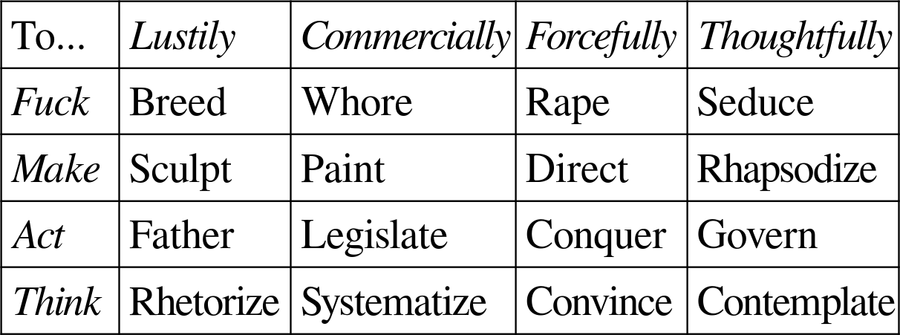
Contemplating the reflection across the diagonal reveals certain affinities. The lusty thinker, who indulges in rhetorical flights of fancy, meets his match in the thoughtful fucker who seduces him—this being the theme of Plato’s Phaedrus [c.370 BC]. And so too for the commercial actor whose legislation sets the boundaries for and draws its legitimacy from the forceful maker’s direction of a stage play; the forceful thinker whose reasoned arguments seek to convince the thoughtful governor; the lusty maker whose sculpture takes as its daytime model one who at night becomes a commercial fucker, a whore; and so on.
*
As we find in the Phaedrus, the chariot represents the classical self: body and soul pull in opposing directions, and reason exerts no motive power of its own but seeks to control the other two. Horse and rider, similarly, can represent the medieval self: a direct union of body and soul, with no third part, and which moves only when its two parts move in harmony. The bicycle, the modern self: only one active part (the rider) and a stable unity only when in motion.
Some vehicles are political rather than psychic. The sailing ship represents the classical city: a little manmade world, large enough to be divided into public and private spaces, moved by divine favor and guided by steady hand of its pilot-king, occasionally passing other such worlds by as it moves through the natural flow. The gondola, the commercial city: putting each individual in charge of his own destiny and in direct contact with the waters of chaos lurking beneath every political settlement, a system viable only in unusual geographical conditions. The train, the socialist city: fully enclosed, as if to deny that anything exists outside the state, creating the sentiment of a collective enterprise but in fact requiring hardly any human intervention to keep it going along fore-ordained tracks, only the conductor’s decision regarding the rate of fuel expenditure, which man burns to make his own divine breath. The car, the neoliberal city: imagining itself a piece of yeoman farm equipment, in fact a tool for moving from commuter suburb to urban center, a movement plagued by a false promise of freedom constantly devolving into gridlock, a traffic jam no one wills but brought about by an invisible hand, or more precisely by the state’s occulted decision to spend tax dollars funding the upkeep of the roads.
The sensus communis that integrates the self and the sensus communis that integrates the city are, in a sense difficult to define, the very same sense.
*
The Tesla Cybertruck’s brutal geometry performs a peculiar kind of technological nostalgia. Modern vehicles achieve their organic forms through computational fluid dynamics—thousands of calculations sculpting each curve to minimize air resistance. Their smooth surfaces belie the complexity beneath: these are artifacts of abundant information employed in the service of energy efficiency. The Cybertruck inverts this relationship. Its exterior fetishizes the aesthetics of computational poverty—angular panels and flat surfaces that deliberately evoke the low-polygon constraints of early computer graphics. This isn’t mere retro-futurism; it’s an object lesson in the relationship between information and energy. The Cybertruck longs for an era when digital scarcity produced decisive forms, when the limitations of processing power forced design towards bold geometrical absolutes.
Yet this aesthetic poses a profound contradiction. Beneath its defiantly simple surface, the Cybertruck harbors extraordinary computational complexity. Its power management, suspension, and driver assistance systems process torrents of sensor data in real-time. The same vehicle that affects early-graphics primitivism runs neural networks that would have been unimaginable in the era it visually references. The vehicle’s commitment to visual simplicity actively undermines its efficiency. Those sharp edges and flat planes create drag that demands more battery power—real energy sacrificed on the altar of affected digital austerity. The vehicle’s sophisticated systems must work harder to compensate for the inefficiencies created by its own aesthetic choices.
Unlike the Cybertruck, this digression does not have a point. Like a modern car’s surface, it emerged through cycles of computational refinement—testing ideas, adjusting emphasis, tightening language. Each revision optimized the argument’s flow while preserving its essential form, transforming sharp edges into smooth curves. The result, composed by an AI through iterative drafting and revision, bears the marks of its information-rich origins: not in angular pronouncements, but in the quiet efficiency of its motion through conceptual space.
*
The narrative structure of Law & Order [1990-] doesn’t call attention to itself. The style at first seems standard-issue network TV realism: each episode stands alone, following a case from beginning to end; the time is “now,” present-day NYC, as the date-stamped intertitles occasionally reinforce. The characters occasionally swap out between seasons, but within, they hardly change; each has a single plotline mentioned occasionally in passing, as if these are real people with real problems they simply set aside when on the job.
But watch enough episodes back to back, you may notice something odd: the episodes overlap. Each week’s episode’s verdict comes down on its air date, but from crime to law to order to verdict takes months. Which means the protagonist detectives and district attorneys are working multiple cases at the same time. As every professional does: to minimize down time and maximize productivity, standard operating procedure is to switch to another case while waiting to hear back from a source, for lab results to come in, for the opposing party to file its brief, and so on. Law & Order glosses over this multitasking to tell the story of a single case, but it turns out that the different episodes are what the protagonists are doing off-camera during one another. And the snippets from each character’s personal life, it turns out, aren’t even in chronological order, but rather selected to rhyme with each episode’s story arc.
We can now imagine (and cannot cease to imagine) a chronological cut making this background weirdness explicit. Episode One: Lenny and his new partner Ray get an assignment, arrest a suspect, hand him over from Law to Order, and get a new case, which they investigate while the new assistant DA begins the prosecution; the episode ends with an arrest in case #2 and the appearance of Jack McCoy to solve a minor case #1 problem. Episode Two: Lenny and Ray get a third case, but it hits a dead end, and they move on to a fourth, while the lawyers make slow progress in the first two cases; the first is almost ready for trial. Episode Three: Case #4 being on pause for some labwork, the detectives turn back to case #3, and solve it, then move on to case #5; the lawyers make various filings in case #2, and try case #1 through to jury deliberations. The detectives reach an impasse in case #5, and move on to #6. Episode Four: The season hits its stride, and from now on each episode will see one or two investigations culminating in arrests, and progress in four to six legal proceedings.
*
As a child, you see adults looking at marks on a page and then pronouncing words. They claim the marks “are” the words. You try it yourself: look at the marks they looked at, say the words they said. “Well done,” they condescend, “you’ve learned to read.” But now you look at a new jumble of zigzags and curlicues, and say what words come into your mind. “That’s not what it says,” they tell you. “In fact, you’re holding the book upside down.”
An error, but also an opportunity. You set yourself to the task in earnest, but a different task than your elders envision: you learn to read upside down, eyes scanning the inverted text from bottom to top, flipping the pages from right to left. Soon upside-down letters hit upon your eye like English voices hit upon your ear, always already meaning-laden. Faced with rightside-up text you furrow your brow and mentally rotate their shapes. Absent such effort, the glyphs strike your eye only half-tinted by meaning, like speech in a foreign tongue, or writing in an unfamiliar script.
The benefit? There being no natural “upside” or “downside” where writing is concerned, to read upside-down is simply to read the opposite way from everyone else. By so reading, you render yourself—not unable to read—but able not to read. The billboard, the traffic PSA, all the various sources of semantic pollution in the built environment, your specially-trained eyes can pass over without automatically decoding their meaning. While if you need for whatever reason to know any particular sign’s meaning, a moment of slight concentration will make it clear. And any large block of text you need to read fluently, you simply invert.
So it goes for a while. Admittedly, there are downsides; occasionally, looking at a museum placard, you find yourself craning your neck to one side to get a rotated view. But upside-down reading mostly serves you as a kind of superpower. Until the semantic pollution gets its way. Spend enough time reading various rightside-up texts you encounter in the world, and your brow becomes less furrowed; you begin automatically, as it were, decoding any text within your field of vision; you lose your ability not to read. Once lost, it can never be recovered. Apart from cases of stroke or similar brain injury, there are no recorded instances of a person truly forgetting how to read once he has learned.
*
A dialogue.
– My God, Alice, what are you doing?
– Reading Ludwig Wittgenstein. See: Philosophical Investigations [1953].
– What, a book? Don’t tell me you buy into all this reading nonsense.
– Nonsense how, Bob?
– Well everyone nowadays knows there’s no such thing.
– I don’t get it. No such thing? What am I holding then?
– Book, of course, but what you say you’re doing with it, “reading”: no such thing! Maybe back in the day, but they didn’t know we’re descended from apes.
– I don’t quite see your meaning. Look, I’ll read something out for you.
– Ha! You’ll make up some nonsense, you mean, and say it was the book told it to you. As if the book were whispering silently in your ear.
– It does feel like that sometimes.
– The voices aren’t real just because you hear them. You should go to a doctor, not a library.
– But the book’s voice isn’t random. There are ways to tell.
– This line I’ve heard before, Alice. It’s a con. Look at this funny picture. Sometimes you say it says “bow,” sometimes “bow.” How can the same picture say two different things? Admit it: you’re making it up as you go along.
– Just let me teach you how to read. Then you’ll be convinced it’s possible. It’ll open up a whole new world for you.
– Why would I want to stop seeing the world as it is? What has “reading” ever done for anyone? I’ve met readers before. You spend your life staring at little black squiggles instead of living. Then you go and try to get other people to do the same, like you want to spread the infection.
– Reading doesn’t stop me from seeing the world, it lets me see more of it. I admit it’s sometimes distracting, and yes, people write too much, but it’s an important part of the world we live in. Not reading, that would be like not believing in God.
– Not at all. Reading and writing, these are just things human beings do, the way the monkeys make faces at each other. But it’s not as if books have faces. You’re just pretending they do. You have some rules you sometimes follow, but in the end you say whatever you want, then pretend the book said it instead.
– Bob, when you say “you” I don’t know if you mean me, or everyone who reads. Lots of people read, and when they read the same thing, they read the same thing. Is that not real enough?
– No, it’s just good teamwork. So you’ve found a way to have shared hallucinations; they’re still hallucinations. Things can’t talk, not silently anyway.
– Of course not, and there’s not actually a voice in my head when I read. It’s a metaphor. When I talk to you, do you hear a voice inside your head?
– No, I hear your voice, over there.
– When I read this book, I see its voice, here on the page.
– I can’t see any voice there.
– That’s because you haven’t learned how.
– Someone once taught me how to count with tally marks. Maybe there’s this thing reading you sometimes do with a marked-up bit of paper, but I don’t see why the paper is necessary. I usually count things in my head.
– You count your brain cells?
– No, I mean I count things with my head, or at least not with anything else. What’s your point?
– When you count things with your head, it would be nice if I could count them with your head too, instead of mine (which would be a waste of brainpower). I don’t think there’s any way to do that. But if you could count it with paper, instead of with your head, then I could count it with that paper too. That’s reading. Or we can count it with your voice, and that’s talking.
– So you’re saying that when you read something, you’re really doing something together with whoever wrote it. But what if no one wrote it? Look at these scuff marks on the floor. By chance, they look like those things you call “letters.” But who wrote them? When you read with them, who are you reading with?
– Sure, it looks a bit like, writing, but it isn’t. So, I don’t try to read it.
– How do you know? Maybe someone put them there on purpose. Or maybe your book was an accident.
– Maybe you sometimes get a few letters strung together by accident, but an accidental book couldn’t be very long.
– How long is very long?
– The issue isn’t with any particular length, it’s that the accident couldn’t go on. Nothing would count. The next word would have to have nothing to do with what came before, since even internal consistency isn’t entirely internal: the words themselves are borrowed from outside. The result wouldn’t be deceptive, it would be nonsense. Dust in the wind.
– But accidents do happen. Lo and behold, a book formed out of the dust.
– Why call it an accident, if it doesn’t look like one?
– If not an accident, who’s responsible for it?
– The dust.
– Please, Alice, the dust isn’t alive.
– If it were able to make a book, why wouldn’t we call it alive?
– Well, it’s inert.
– After writing the book, it died.
– This is absurd!
– You posed the hypothetical, I’m just filling in the blanks. If it helps, imagine that it took a few billion years for the dust to write the book, and that it did some other things first, all accidentally, of course.
– You’d almost convinced me there’s reading, and now you say there’s not even living, it’s all just one big accident?
– No, you said that, Bob. I said the dust lived, and read. On the hypothetical, that’s all true.
– What do you mean true? At most, that way of talking could be useful, but it’s metaphorical.
– We use words to affect the world, or to affect other words, and their use is how they get their meaning. We also say how we use them, and if what they mean and what we say match up, they’re true, or at least truthful. True if the use holds up. But I’m getting ahead of myself; I hadn’t meant to spin up a grand theory of meaning.
– Let’s go back to the hypothetical. Of what use is it to say the dust is “alive”?
– It’s to say that if the hypothetical ever came to pass, if I ever encountered dust that wrote, I should treat it as alive, not as an accident. Alive is what I am, you are, the dog is, the scuff marks are not.
– Whether you’re speaking truly or not depends on whether this is how the hypothetical plays out? So how can we know?
– Correct; we’ll only ever know if it actually comes to pass.
– Who’s this we?
– Everyone: you, me, every reader or talker, past, present, future.
– And hypothetical? Shouldn’t they get a say?
– Hypothetically, but not actually. Actually, you and I are having our say now, the past has already had its, the future will have its soon enough. Since we’re not done using our words, nothing is quite true yet. They can at least be truthful, if they’re fit for purpose, but I can’t know if they’ll stand the test of time.
– I don’t fault this for being vague and mystical, but I don’t think it’s even coherent. I can count with your voice because I can make you show me how you did it. But once the dust is, as you called it, “dead,” it can’t tell me how to read its book. And that goes for all books. It’s absurd to say that the dust is still counting with the book, so I can still borrow its counting, if there’s no longer any dust to do the counting.
– Why does it have to still be counting? The point is that it counted. Even living talkers sometimes refuse to answer the questions we put to them, especially if we put too many. I still have to do the counting myself, even if I do it with your voice. I can let you do the easy work, marking a tally for each crumb you see, but I still have to mean these tallies together with these crumbs: I have to use them, say how I use them, and hope they work. I can do this as long as the tally marks last; or, if I’m worried about it, I can let them echo into my head, or into a book of my own. But they’d still be yours, even if they were the last thing you made your own.
– So am I dead whenever I don’t count? Then I’ve only rarely been alive.
– You’ve never counted with a book, but you’ve counted with your head, and my voice. Admit it, Bob: you don’t like reading because it reminds you of yourself.
– I dislike reading because it destroys lives. You take happy and healthy human beings, teach them to read, next thing you know they’re depressed, sickly, spending all day in the library conversing with voices in their head, with their head, whatever.
– Why is that worse?
– It’s a kind of death. And they rarely even make books that sell. As you would say, no one will even use their voice after they die, so they won’t live on.
– Oh no, me reading the dust’s book is not the dust living on. The dust is dead. Its words live on, but it’s no longer using them. Using words, like we’re doing here: that’s life! Much better than eating or drinking.
– But we talk about things like eating and drinking. That’s what we care about, not words!
– Certainly; without things to use words on there’s no such thing as using them; and no use, no life.
– But if my words last after my death—
– And the things I used them on last too—
– Then in what sense am I dead?
– I can’t put my words to any further use. The words are still there, and the things I did with them, but the doing is over and done with. Though there can be echoes. Other people can use my words. But they’re not me.
– Why not?
– Because I can’t use my words in union with everyone else. In harmony, sometimes, but there’s always a difference. There’s also dissonance in how I use my words myself, but even if “I” might be more than one speaker, “I” names one bundle of speakers, “we” another. All the parts of “I” agree they’re part of “I,” however little else they agree on. But no one knows quite who’s included in “we.”
– That’s very cryptic, Alice. But it sounds as if you’re saying that I, we, whatever, are a divided substance, not different objects.
– Exactly!
– That’s absurd! Whatever I am, I’m this body here, not that one there, or the space between. And I’m alive like a dog, not a piece of paper: because a piece of paper isn’t.
– But the link between our words and our deeds is immaterial. Sure, the things and words linked will tend to cluster around your body, or mine, or wherever. But we’re like adjacent mountains: distinct, but how to tell where one ends and one begins?
– So we’re just peaks on the surface of word-world-using Us. Facets of the world soul?
– Perhaps!
– I don’t buy it. But as long as the reading can be at the service of eating and drinking …
– Servant? Language uses food and drink to give itself a subject matter, not for food or drink’s own sake. Language elevates food and drink, and us. From the view of eternity, we will always have been but the words that language speaks …!
Against Some Common Notions
Having been asked to explain why I refuse to entertain certain common philosophical notions, I here set forth briefly my reasons for rejecting four: identity across time, abstract thought, natural reason, and dogmatic skepticism. I close by talking about how to talk about odd ideas.
*
Philosophers like to say that a thing at time 1 “is the same as” what they call that same thing at time 2. But such samenesses are foreign to ordinary speech, which knows nothing of identity across time, instead recognizing only the “was” relation and its counterpart “will be.” These relations are plainly not commutative: “A was B” does not imply “B was A.” Which means, further, that “A was B” and “A was C” implies neither “B was C” nor “C was B.” Nothing in the grammar of “was” (or “will be”) prevents A from standing in the “was” (or “will be”) relation to both B and C, where B and C were contemporaneous and nonidentical. Neither would such a scenario imply that A had parts, one of which came from or became B, and the other C; the idea that it would only seems appealing if we assume the very commutativity we are questioning. Philosophers have taken as axiomatic that identity across time is commutative, apparently because in our everyday experience it always is. But the axiom is unnecessary, akin to Euclid’s rule that for any given line and a point not on it, there exists only one parallel line through it.
The axiom that identity across time is commutative is often taken as a reason why there can be no such thing as fission or fusion of anything worthy the title “thing.” A skeptical philosopher will pose a thought experiment, for example, of Alexandra having her brain split in half and transplanted into two separate bodies, Alex and Sandra (as some neurosurgeons theorize could be done), and triumphantly ask: Which one is the real Alexandra? What answer to the question could be non-arbitrary? Does this not prove that the self lacks the kind of thick intertemporal identity we care about? But in fact there is nothing to puzzle at, for whether or not the scenario described is physically possible, there is no metaphysical contradiction between the propositions “Alex was Alexandra,” “Sandra was Alexandra,” and “Alex is not Sandra.” The question is why any philosopher ever imagined that there was.
*
A martian anthropologist setting out to understand human cognition need not conclude that we are capable of true abstraction. Instead, he might hypothesize that we are capable only of generalizations with determined application to a limited set of cases, with the unlimited remainder to be filled in as the need arises if at all. Only sometimes is the “how to go on?” question answered by facts about the answering human being’s established form of life; other times, it’s answered arbitrarily (provisionally, experimentally) by the particular human being who needs to decide how to go on in an unexpected situation; never is it answered by an abstract idea to which the human being has some occult access. To be sure, a human being deciding how to go on often feels that he is simply applying his pre-existing abstraction to an unexpected situation. The martian anthropologist would be aware of that feeling (since human beings often describe it), and have some hypothesis about it, but not necessarily that the feeling stands for something true about human cognition. He might give some evolutionary account of the human tendency to believe itself capable of abstraction. For example, that it is conducive to collaborative concept-construction: when we reason together, we proceed as if we share access to the same immaterial concepts, whether or not we actually do share such access, and this makes our reasoning together more fruitful.
We are human beings, not anthropologists, but that does not prevent us from adopting the martian anthropologist’s perspective on our tendency to believe in our own abstractive powers. The act of thinking appears from a first-person perspective to involve something that seems like what we want to call abstraction, but it does not take as a practical premise a belief in the possibility of abstraction. Abstract thought, or the non-abstract activity we call by that name, is not an action like jumping for which it might make sense to say that belief in its possibility is a prerequisite to engaging in it. Nor is abstract talk; I can discuss all sorts of fictions with my neighbor, including abstract concepts, so long as we agree to play that talking game together.
*
The autistic thomist sets great store in the concept “natural reason.” He devotes enormous energy to showing, for example, that what he calls natural reason compels a belief in God, or a belief in an individual immortal soul. But, of course, no particular human being stands in the position of the “natural reasoner,” and even the auto-thomist reasons from within a tradition. He may assert, for example, that Buddhism is contrary to natural reason, by which he seems to mean that he believes he could convince an honest Buddhist of the falsity of Buddhism without appeal to revelation—but he has no means for sorting out even in his own mind which of his arguments depend on Christian revelation and which do not.
In contrast to the auto-thomist, when Thomas Aquinas set out to identify the dictates of natural reason he did so by engaging in dialectic with Jews and Muslims, beginning from the premise that such persons were exercising the reasoning faculty competently. Unsurprisingly, the set of conclusions he took natural reason to require more or less lined up with the set of conclusions Christians, Jews, and Muslims held in common. If his interlocutors had been Hindu or Buddhist, his conclusions would have differed accordingly. The natural conclusion (or so I assert, and expect most readers will agree) is that we do not have straightforward access to the dictates of natural reason, if any exist. Our own attempts to imagine what all human beings must believe (as opposed to our determinations about what we ourselves believe) cannot override thousands of years of empirical evidence about what natural reason can and cannot do.
*
Non-philosophers are often troubled by skepticism in a way they are not by other odd philosophical theories. Samuel Johnson found Berkeley’s skepticism about the external world sufficiently outrageous to kick a stone in response to it. But why did he imagine that kicking would prove anything that merely seeing the stone had not done already? Berkeley’s idealism held that the world consists not of minds and mind-independent matter, but of perceptions and the minds that perceive them. Johnson’s kick attempted to disprove this by appealing to the stone’s painful reality—a reality so visceral it seems to refute any system denying the stone’s independent existence. But really, the painful kick offers no evidence beyond what was already evident from the feeling of the breeze on the kicker’s skin. The kick only feels like more evidence, which feeling is exactly what the idealist calls misleading.
Berkeleyan external-world skepticism is not the only kind of skepticism to which we are tempted to respond with painfully futile gestures. When a sci-fi movie character begins to wonder if he is a replicant, he will sometimes cut into his own forearm to see if he bleeds. The gesture fails for a reason analogous to the failure of Johnson’s kick. A replicant differs from a human being not in its chemistry (it is made of flesh and bone the same way we are), but in its history: rather than coming about naturally, the replicant has been engineered, and so is aimed at ends other than its own. It resembles a clockwork doll with a windup spring, but the spring is merely metaphorical, and no amount of peeling back his own skin will tell the investigator whether someone else prearranged his flesh to ensure that he would conduct that investigative exercise. A painfully futile gesture cannot solve a philosophical conundrum, but sometimes, like a joke, it can dissolve it. And perhaps, when in our mind’s eye we watch Johnson cry out in pain after kicking the stone, the next thing we should picture is his collapse in helpless laughter onto the grass.
*
Certain notions grip us, and we struggle to know how to respond to them (the notions). Other notions do not, but they grip others, and we struggle to know how to respond to them (the others). Say I get into a conversation with someone who insists that there is a giant teapot nestled somewhere on the other side of the galaxy; or that there is an invisible, intangible leprechaun living in his garage; or that the Illuminati run the world. We could ask him for evidence or reasons, but these are simply jargon. Simplest to ask: “Why do you say that?” And to be prepared to modulate our reply depending on his answer. We cannot anticipate every possible answer, but there is no point to pre-determining our reply to a response we doubt any person would ever give.
The teapot-positor is perhaps the easiest to deal with. If he offers a pseudo-scientific explanation based on shared evidence, say, a misapprehension of the meaning of certain seismograph charts, he has implicitly agreed that we can evaluate his explanation according to scientific criteria, and if we are sufficiently scientifically learned we may be able to rebut it. If instead he asserts some form of private knowledge, a sixth sense allowing him to directly perceive the teapot, for example, by feeling gravitational waves at immense distances, we can then ask why he thinks his sixth sense is sensing something real: either he answers in a way that appeals to shared evidence, and we are back in a scientific domain, or he doubles down on the privacy of his knowledge, in which case we either leave him there, or follow him into it.
The leprechaun-whisperer can be more difficult. Say he points to various happenings in the garage—a musty smell, a rake falling over—and says that they are expressions of the leprechaun’s anger, his offense that you are ignoring it. He compares your refusal to acknowledge the leprechaun to a refusal to acknowledge his own personhood; would you ask him to prove that he is not an automaton? It would be a mistake to ask him to show us the leprechaun itself, for he has done so: he is not asserting private knowledge, but rather is seeing the garage itself as a leprechaun’s face, and asking us to do likewise. A better question would be, how does he know that the rake falling expresses the leprechaun’s offense, and not, say, its relief at having gone undetected once again? If he claims to have learned to understand the leprechaun, as it were to speak its language, he has entered the realm of the occult, or, to use a more neutral term, of prosopology. We can follow him there to the extent he is able to make the leprechaun’s form of life make sense to us.
The Illuminati-detective is the hardest of all. He does not ask us to join him in seeing something invisible, or in seeing something as an inhuman face, but in seeing someone’s face as a lying mask. Once an accusation of lying has been thrown out we have left the realm of evidence and entered the realm of credibility. A lie cannot be detected by identifying various bits of evidence and evaluating each separately for whether or not it is consistent with the accused liar’s story. After all, the liar’s modus operandi is to stick as close to the truth as possible. We must be on the lookout for the one glaring inconsistency that will out him, but we are not guaranteed even that. When two men go into a locked room and tell different stories about what happened there, we have no choice but to trust one or the other (or neither). When his theory has no gaping holes in it (as such theories sometimes but not always do), the only possible response to the conspiracy theorist is: why should we trust you rather than “them”?
Disavowals
Disavowals
In sculpture, we see Woman nude; in paint, through a diaphanous veil; in ink, a figure-eight; on stage, an abstract marionette; on film, potentially undressed. In song, we hear Her an object of desire; singing, a resounding empty room.
*
In a church, the thundering of the organ from the loft behind you creates an impression that your own voice has grown stronger. Coming from a speaker in your living room, it makes the music feel like something happening in a concert hall, distant and unapproachable.
*
The influence of an artwork on later generations is often accidental. Renaissance sculptors worked in shining white marble, unaware the paint had simply worn off their classical exemplars. Piet Mondrian drew from the spare geometry of his countryman Johannes Vermeer, unaware that, for example, at the time of the painter’s death, a painting of Cupid hung like a thought bubble on the wall behind the “Girl Reading a Letter at an Open Window” [c.1658].
*
The internet transforms painting from a wrought surface located at a particular point in space, into an abstract array of pixel values accessible from any glowing screen. And so visiting a museum transforms from a rare opportunity to ponder great paintings, into an anxious occasion for phenomenological introspection: we struggle to see the surface-screen difference we know should be there.
*
Images of outer space can never be beautiful. They can be sublime, when the viewer knows what they are pictures of, but the sublimity is something cognized not perceived. We do perceive the stellar dome’s sublimity, but for architectural rather than pictorial reasons: as we look around, it takes up an entire hemisphere of the visual field, and as we move around it displays no visual parallax.
*
Driving at night requires trusting the order of things to ensure that the dark regions of your field of vision remain empty.
*
Many film critics have associated black and white with realism, and color with fantasy. The layman revolts at the thought: the world, after all, is not grayscale. But when a man sits in a darkened movie theater, his color cones fall silent, and he sees only through light-detecting rods. The black and white film pretends to exist within this same grayscale world; the color film offers an escape from it.
*
Action scenes bore except to the extent the frenetic activity has a compelling form. To have form is for the motion to have a shape. Any shape will do, be it hardnosed realism, skillful stuntwork, or wire-fu. For the form to matter is for the motion to put the characters to the test. Any test will do, but what test is possible depends on the fight’s shape. A test of wits requires the hero’s actions to follow a logic the viewer can follow and try to anticipate; a test of endurance requires the same of the hero’s passion.
*
Open-world video games promise to let you write your own story within them, but never deliver, instead merely replacing the hamster wheel of following the story to its conclusion with a hamster wheel of filling in map till there’s no blank space left.
*
Lovecraft’s monsters resemble biblical angels only superficially. A lamassu is superintelligible, in a way best gestured at through poetic archetypes: the eagle’s sublimity, the lion’s strength, the ox’s steadfastness. A lovecraftean horror violates our concepts, a violence captured by mentioning unclean beasts, goat, octopus, fungus.
*
A parking garage transported thirty centuries back in kaironic time might be mistaken for a pagan temple. A long spiral ramp for processing up to the top and offering ritual sacrifice under the open sky. Blood flowing like motor oil back down all seven stories. If the Aztecs had reinforced concrete this is what they would have used it for. Given the short lifespan of reinforced concrete, maybe they did.
*
Europeans who enjoy living on a habitable continent should thank America for building the Rocky Mountains.
*
Steak, the most American entrée, makes no effort at subtlety but throws money at the problem until something overpriced but pretty good emerges. “You like meat? Here is a large piece of meat. We’ve cooked it a bit, but not much.”
*
Like democracy for forms of government, neoclassicism is the worst architectural style for republican buildings except all the others.
*
Page count, paper weight, margins, and font size all correlate because all are bought from a common budget. A deluxe volume of poetry might have forty fifty-pound sheets with two-inch margins and twenty-point font, because the volume serves to frame a few words magnificently. A reading bible might have six hundred sheets of india paper with quarter-inch margins and eight-point font, because the goal is to present the entirety in a single functional codex.
*
Drugs and guns: two means of transhumanism, one augmenting affect, the other effect.
*
Water being ill-suited to cleaning intelligent artifacts like computers is good evidence that we shouldn’t baptize them. Whether because they have no souls, or because they are under a different soteriological dispensation, remains to be seen.
*
Goethe’s “Der Zauberlehrling” [1797] dreams of a world where we must do endless physical labor to defeat the senseless multiplication of labor-saving devices. Bostrom’s “Paperclip Maximizer” [“Ethical Issues in Advanced Artificial Intelligence,” 2003] dreams of a world where we must endlessly re-organize our thoughts to defeat the senseless multiplication of record-organizing devices.
*
Eli Whitney invented interchangeable parts, and thus set in motion the course of events ending in AI replacing you. Of course, if he hadn’t, someone else would have.
*
Artistic form results from a gratuitous creative act. To make a meaningful form within a monetized medium is inherently difficult; you have to somehow resist the pressure to become interchangeable content used to space out the ads.
*
Like the elephant, the mammoth is massy, social, smart, and dexterous (via the trunk); unlike the elephant, the mammoth is doubly concealed: by its extinction, and by its thick woolen coat. An image of invisible natural forces as friendly and eager to cooperate, perfect for assisting David Macaulay in showing us The Way Things Work [1988].
*
One will sometimes come across a list of fanciful terms; for example, for a victim of fraud: “apple, bates, boob, chump, clown, easy mark, addle-cove, addict, egg, fink, lily, mooch, mug, pushover, top, sweet pea.” Most of these are not words in the usual sense, so much as fly-by-night metaphors.
*
Tools in the hands of an angry god. A tool in the hand is worth two in the bush. Tools, tools everywhere but not a hand to wield. Tools help those who help themselves. Tools speak louder than words. A fool and his tool are soon parted.
*
Some days are good and some days are bad but most days are middling, for most people. Sometimes numbers are the appropriate way of thinking about something, sometimes you should use words. You should care less about things that are a long way away, relative to things that are closer. Most rules have exceptions, but any given asserted exception is most likely special pleading. Honey is sweet and has a pleasing aroma, in small doses. Flowers are pretty pretty. Unsolicited advice is annoying. Most uncontroversial opinions sound like knowledge. These observations are on the whole somewhat boring.
*
Genres exist historically, emerging from an ongoing dialogue between authors and readers. A genre is analogous to a technology, or a language. Asking “is Dante writing fantasy or science fiction” is like asking “would Dante prefer cars or bicycles,” or “did Dante write in American or British English.” He rode a horse, and wrote in Tuscan.
*
“Adam gave name to all the animals” is one of the most probable claims in all of scripture; to deny it requires asserting either that he got the names from someone else (say, God) or that they don’t have names at all.
*
“She made no reply, up her mind, and out the door.” Syllepsis is grammatically permissible for the same reason that analogy is philosophically meaningful.
*
Poetry is that use of language which does not respect the use-mention distinction.
*
Most authors long both for their own work to inspire countless future authors, and for themselves to retain absolute control over anything that makes use of their own work. The problem is that inspiration and utilization amount to the same thing.
*
And the rationalist went to Shakespeare and said, “Flynn Effect and population growth and all, tons of people could write better than you these days.” And Shakespeare said, “then let’s have a sonnet competition.” And the rationalist said, “you’re on,” and went to google a rhyming dictionary. And Shakespeare said, “No, no, no, get your own words.”
*
The Oxford English Dictionary, spiritually understood, is the epic of the English language.
*
Poetry serves to disprove Emerson’s claim that “our moods do not believe in one another” [“Circles,” 1841]. Hell does not believe in heaven, but heaven believes in hell.
*
The hermeneutic circle is an electromagnetic coil, the revolving magnet the shifting attention of the hermeneut. The more coils, the more powerful the resulting current, the more self-reinforcing the signal. But unless open at both ends, it’s not an electromagnetic coil but a faraday cage.
*
The whole of mathematics can be divided into algorithms and nonexistence proofs. And the study of mathematics inculcates two virtues above all: attention, and humility. Attention, to follow the algorithm step by step; humility, to admit when some thing once thought impossible swims into one’s ken.
*
To say that “mathematics is not found, but made” conveys nothing in particular, unless the speaker means to say that “mathematics is made up,” which is false.
*
We “invent” methods, “discover” objects. Since many methods result in new objects and many objects are discovered via new methods, the choice between “invent” and “discover” is often about which aspect to emphasise. If you discover something, your name gets nouned. If you invent something, your name gets verbed.
*
Cutting edge mathematics is the most patrician form of poetry imaginable—each new work understood by a different ten people in the world.
*
Formal logic denies the possibility of poetry by insisting that meaning resides in the sentence rather than in the deed of its utterance.
*
Critics comment on texts, and sometimes make pronouncements about things. Philosophers argue about things, and sometimes use examples drawn from texts.
*
The hatred of poetry resembles the hatred of argument; both derive from one too many encounters with the wrong words in the wrong order.
*
From the letter learn what happened; allegories teach belief; moral meaning’s obligation; anagogy’s destiny.
*
‘Writers can’t imagine not writing’ is a bit like Descartes’ ‘cogito ergo sum’; writers can’t imagine the absence of their imagination any more than philosophers can think the absence of their thought. Why do I write? Why do birds sing? Imagino ergo sum.
*
What begins as a pseudonym will with enough use transform into a fictional character.
*
No child ever discovers a book on his own. Every book enters the door on someone’s recommendation; if no one else’s, the author’s.
*
Some reasons to read the Collected Poems of N.N.: to uncover unknown gems; to understand the difference between “I like this poem” and “this poem is excellent”; to increase your confidence as a poet, by rendering plausible the idea that your best poem might be better than N.N.’s worst.
*
Some reasons to read New Poems by N.N.: the poet is contemporary and so lacks anything more comprehensive; the specific volume you’re looking at is reputed to be exceedingly well-composed or historically important; mostly don’t do this.
*
Some reasons to read Selected Poems of N.N.: to get a general sense of their career trajectory; to understand that laziness is a virtue; the poet failed to die young and/or was a member of the poetry-industrial complex.
*
Some reasons to read the Complete Poems of N.N.: to gawk at juvenilia, unpublished drafts, poems later disavowed; the Collected was published mid-career; Complete is a solecism for Collected.
*
Some reasons to read an Anthology of Poems by Various Poets: to hit the highlights; to let someone else (the editor) do the thinking for you; you should probably begin here.
*
Some reasons to read scattered selections of individual poems by various poets: it’s easy to do for free on the internet; the vast majority of poets only have 1-5 good poems; who reads poetry more than once every few months anyway?
*
It’s one thing to recommend obscure books, another to prefer obscure books to the acknowledged canon. Carlyle is good, and more people should read him; Melville is better, and everyone already knows to read him. The contrary view amounts to regret that the printing press obliges aristocrats of the soul to share a library with common folk.
*
Typewriters, by interposing themselves between the writing hand and the written surface, enabled the unedited stream of consciousness. Computer keyboards enabled the opposite—a collapse of the distinction between writing and editing, the building blocks of each sentence laid out and rearranged endlessly until they snap into place.
*
Note-taking apps cannot but impose a general form preceding each note’s particular content. But the purpose of a note to self is to jot something down before you have decided what kind of thing it is, so that later on you can build a structure around it. So pen and paper remain the superior medium.
*
Collaborative editing technology offers an as yet untapped reservoir of poetic possibilities. Imagine a novel about a small business bankruptcy ruining the owners’ marriage, the text comprising the reorganization plan with track changes and inline comments from the various parties’ attorneys. Perhaps the wife’s lover is also the local banker.
*
Borges once received a letter from a friend recounting a flight of fancy in which Borges was the protagonist: he had written a short essay arguing for the impossibility of historical fiction on the ground that any departure from exact historical truth would necessarily destroy the illusion of reality on which every fiction ultimately depends. Having never written such an essay, Borges found the daydream implausible.
*
The alphabetic principle seems to have been diffused worldwide from a single point of invention somewhere near the Holy Land, which may or may not be a coincidence.
*
“Love books,” like “love your neighbor,” is difficult to apply to particulars. But the analogy is correct: as with neighbors, you should love some books, hate others, with others have a respectful détente, or assert dominion over them, or party with them, or conduct with them a mutually profitable exchange.
*
Contra Emerson’s “Standing on the bare ground … I become a transparent eye-ball” [“Nature,” 1836], John Donne: “No man is an eye-land” [Devotions upon Emergent Occasions, 1624].
*
What do tile, fish, mail, paint, and talk have in common? (If it helps, place the five words in quotation marks.)
*
The English department was born in the late nineteenth century as the study of Anglo-Saxon; converted to New Criticism in the nineteen-thirties and began to study “poetic truth”; then in the seventies collapsed into deconstruction (to be followed in the nineties by identity politics and new historicism). The moral of the story is not that the discipline of English literature was betrayed, but that if you don’t require students to learn a new language in order to read great literature, they spend their time in other, worse ways.
*
There is no scholarly activity for which reading literature deeply is preparatory. A true English professor would be no professor at all, but simply a good reader who enjoys teaching others to read and has no real aptitude for scholarship, though perhaps some for belle lettres. Most English professors are really either intellectual historians specialising in literary culture, or philosophers specializing in linguistic or aesthetic problems.
*
Prosopography fails because it counts only the quantity but not the quality of human relations. A prosopographist would notice C.S. Lewis’s friendship with Owen Barfield, a devotee of anthroposophy, a schism from theosophy, and conclude that Lewis was in cahoots with Aleister Crowley. A hermeneut would notice that The Abolition of Man [1943] is one long harangue against prometheanism.
*
Cladistics fails because it views ideas as species when they’re more like races: distinct but capable of nonsterile crossbreeding.
*
Jordan Peterson began by proposing that Jungian psychology and evolutionary psychology could be synthesized via literary criticism, and ended by telling us to clean our rooms. Curtis Yarvin began by proposing that cryptographically locked nukes with the key controlled by a secret board of directors could solve the bad-king problem, and ended by telling us that someone rather than no one should be in charge. Having a novel, big-if-true, ultimately failed theory appears to be a prerequisite for becoming a certain kind of thoughtfluencer.
*
Many outsiders, after reading a single academic article, find themselves unable to tell whether it’s a shoddy work of scholarship, or belongs to a nonsense field of study.
*
Academics sometimes need reminding that they can’t expect people both to take their claims seriously and never to get angry about those claims’ implications for ordinary human life.
*
As the age of the lecture ends, we find ourselves forced to disaggregate and reproduce its various functions: communicating information to a captive audience; reinforcing the existence of a community of scholars; modeling the practice of thinking out loud; et cetera.
*
During the Woke Era many complained that students were being taught critical race theory. It would have been more accurate to complain that students were being taught by critical race practitioners.
*
Condemning a critical race theorist for plagiarism is like condemning a prostitute for wearing makeup. Would the witch’s bile have been less noxious if she had written all the words herself?
*
For the academic, plagiarism of ideas betrays the academic ideal, while plagiarism of words merely defies a norm. The norm serves a real purpose: requiring the author to think through every word he writes fosters scholarly discipline; ensuring that words and ideas come from the same mind permits evaluation of style to proxy for evaluation of substance. But ultimately, the ideas are what matter. For the student it is the opposite: plagiarism of ideas is inevitable—to be a student is to be unaware of which ideas are new (and usually to have no new ideas at all)—but plagiarism of words is a cardinal sin. After all, student work serves no independent purpose, existing solely to instill discipline and to invite evaluation.
*
The commandments relevant to academic research are the fourth and eighth. Their application is context dependent: What counts as honor? What counts as false assertion? The seventh commandment has no relevance, there being no natural property in ideas.
*
An “experiment” is an attempt with uncertain results, clear failure conditions, and the potential, if successful, to serve as a model for less-experimental attempts. Experimental goals range from identifying beneficial new public policies, to producing new weapons of mass destruction, to securing new handholds for climbing up the (real or metaphorical) mountain. In recent centuries, some have attempted to reengineer the English language to reflect an idealized scientific epistemology in which experiments by definition aim at generating knowledge—but this linguistic experiment has quite definitively failed.
*
Pursuing an academic career resembles founding a startup. Getting into graduate school earns you a stipend and a few years of runway; the postdoc is the series B; the tenure-track job the IPO. Most crash out and go into industry, law, or consulting, but the high probability of failure need not operate as a deterrent.
*
The dream of the university is localized, hierarchical, a city of words eccentric to the city of man. The dream of the internet is diffuse, egalitarian, the one city overlaid on the other.
*
Discourse-space acknowledgement: these memes are posted over the occupied protocols of the indigenous USENET people.
*
The internet cultivates a sense that “everyone already knows” the received wisdom, and so tempts academics, instead of handing that wisdom on, to devote their pedagogical efforts entirely to arguing against its perceived defects.
*
Because we all visit the same websites, we feel that we all scroll the same timelines, despite knowing that it just isn’t so: “So N.N. tweeted that …” “Who’s N.N.?” “I assumed you followed them.” Then one day a mutual stops visiting the website, and we hardly notice, until some day: “Say, N.N. hasn’t posted in a while, where are they?” “Who’s N.N.?”
*
If your mutual sins against you, direct message him. If he listens to you, you have won your mutual over. But if he will not listen, engage him in the replies, so that mutual-mutuals can get involved. If he refuses to listen to them, quote-tweet him. If he listens not even to the timeline, unfollow him.
*
Board games, although boring in themselves, are superior to video games because they can give rise to arguments about whether the rules were properly followed—and from thence to arguments about what are the rules, anyway.
*
A rule against table talk, construed as prohibiting all discussion of gameplay, ensures the board game will remain boring. But construed as a prohibition on revealing private information but not on observations about the public game state, it gives rise to a unique form of conversation, at once philosophical and diplomatic. One learns to coordinate through commentary on items of common knowledge.
*
Tic-tac-toe teaches that games can be solved, and that once solved, a game can be left behind. Chess teaches that the gap between proof that a solution exists, and possession of the solution, is the size of the world. Poker teaches that in the face of uncertainty, even optimal strategy does not guarantee victory.
*
Rock, paper, scissors teaches that natural man is not spontaneous, but blindly mimetic. A realization that opens two paths to victory: unpredictable creativity, and all-predicting rationality.
*
Trick-taking games teach that small talk is the art of knowing when to one-up someone else’s remark, when to give them an opportunity to reply, and when to change the topic.
*
In every game your opponent is the game itself, and the goal is to learn to stop playing the game without surrendering to it. There’s two ways to lose: you give up, or you get addicted. The greatest games are philosophy and poetry. Every philosopher hopes to make the final argument; every poet hopes to write the final poem. Because their attempts never succeed, the game never ceases to be worth playing.
*
The phrase ‘the eyes of the law’ is in itself a refutation of command theory: law doesn’t just give discrete commands, it constructs a world of legally legible entities.
*
Law is like code that takes millions of man-hour-dollars to nondeterministically compile, and so is mostly just eyeballed with a view to what would probably happen if it ever made its way into court.
*
The foundations of law are (1) speculation and (2) gossip. You have (qualified) rights to make plans, and to know about other people’s plans that might affect you.
*
Absent agreement on the law’s spirit, a juristocracy is not ruled by nine men in robes, but by the legal profession’s consensus about which arguments are nonfrivolous. Each man may do as he sees fit so long as his lawyer does not tell him that his position is legally unsupportable. All the high court can do is laboriously nudge the boundary lines of frivolity.
*
The bad man finds a way to follow the letter of the law but defy the spirit. How, then, to identify the law’s spirit, since just quoting its letter does not suffice? A competent lawyer telling his client what she can get away with advises no illegality, and yet leaves a bad taste in the mouth.
*
Legal process is a sink good: you can always spend more on it. Modern due process protections did not exist in 1200 AD not because the medievals had no regard for the notion of fairness, but because they were a lot poorer and legal process is really expensive.
*
The only real use cases for written contracts are (1) to restrict the future conduct of persons with assets and (2) to foreclose future lawsuits (the sole legally significant act available to persons without assets).
*
Becoming a lawyer must be envisioned as a process not unlike having your intellect refined down into machine oil used to grease the wheels of capitalism.
*
The purpose of a loophole is to shoot arrows at the enemy without them being able to shoot back.
*
A penal authority errs both when it inflicts undeserved punishment, and when it fails to inflict deserved punishment. Every authority should strive to avoid errors, but must also decide the acceptable ratio between error types. There is no reason to think the optimal ratio changes as punishment severity increases. If we tolerate one mistaken caning as the price of preventing ten miscreants from escaping their deserved quantum of pain, we should also tolerate one mistaken execution as the price of preventing ten felons from escaping capital punishment.
*
Imagine committing a murder that wouldn’t even survive arbitrary and capricious review.
*
The liberal hopes to reduce conflict, that is, forceful disagreement, by elevating every disagreement to the meta level: surely we can agree on the rules of a competition for resolving our disagreement with as little direct interaction as possible? When the liberal construes “reduce” to mean “minimize,” he eventually comes to understand that such reduction is best accomplished by concentrating overwhelming force on the project of establishing a marketplace; hence, the libertarian-authoritarian pipeline.
*
Non-libertarian liberals instead seek to keep conflict out of certain spaces, like the market, and in others, like politics, to keep it merely under control. Enter civility, a set of rules meant to keep disagreement from ever becoming too forceful. Ideally the dispute will be about facts, and so easily solvable if we just keep level heads. If it’s about values, try to defer it as much as possible. The problem is that once the liberal seizes political power and insists on civility as a prerequisite for participation in the public sphere, it can only do so forcefully, and so it starts to look—illiberal.
*
The libertarian’s revealed preference is for absurdly baroque legal systems, where each person chooses for himself which body of law will govern his conduct. He overlooks that such systems are an expensive public good, and a dysfunctional legal system is tantamount to anarchy. A world with true liberty would have very little law all made by a strong central authority, with strictly limited opt-out rights.
*
Bureaucracy is not an ideology, although bureaucratic practices incline practitioners toward certain patterns of thought. Nor is bureaucracy a form of government, although bureaucratic practices incline practitioners toward certain patterns of compliance.
*
Beyond the most general generalities, most writing about judicial reasoning is less articulating a theory than offering practical advice; “read the text” is the judicial equivalent of the carpenter’s “pay attention to the wood grain.”
*
Law is relatively easy but tricky enough most people are appallingly bad at it. Not-appallingly-bad law matters only to autists and capitalists. We mostly have the latter to thank for the fact that our legal meritocracy mostly avoids appallingly-bad. Legal genius is far too much to ask for.
*
It is one thing to assert a legal claim, another to establish it. Only the latter will oblige you to work out its implications.
*
The free software movement was from a legal point of view a sovereign citizen movement. Richard: of the family STALLMAN hereby releases this thesis under GPLv3. Not under Larry Lessig’s CC BY-SA; a folk-law protest against the tyranny of intellectual property should invoke the spirit of a MeToo’d wizard, not an HLS professor.
*
A constitutional court seeks to legally freeze in place a political equilibrium, daring to dream that the act of freezing itself could escape politics.
*
A hostile paraphrase of “government of law not of men”: “we don’t need a pilot, we’re just going to draw a line and steer according to that.”
*
Rule of law means rule of lawyers, a mistake because procedural virtuosity does not give deep insight into what the law should look like. Lawyers’ intuitions about justice are based on seeing it dispensed retail, not wholesale.
*
In an ideal world, sovereign states could renege on their debts when it was prudent to do so, and other states wouldn’t intervene to protect their investor citizens. But an ideal world would also have sovereigns who acted prudently rather than stumbling around to a new, incompatible policy every few years when a different coalition comes into power. These thoughts have no practical application; none of us gets to choose between oligarchy and democracy. But we should predict that, when oligarchic rationality goes up against democratic irrationality, the oligarchs will, in the long term, usually win.
*
To believe in free speech as an organizing political principle (as opposed to an ideal of frankness) is to believe that assertion is never more than a parlor game, and that the parlor game is worth dying for.
*
A law of freedom of speech requires a boundary between speech and non-speech, and hence edge cases, and hence complaints about censorship. But if the boundary cuts nature at the joints, the complaints will be wrong.
*
In the ideological competition invited by First Amendment jurisprudence, claiming religion status gives an opening advantage but handicaps you in the end game because it stops your ideology from getting established.
*
It’s important to keep distortive ideologies out of the civil service. One such distortive ideology is the idea that it’s even conceivable to run the state entirely without ideas. People who believe neutral government is possible usually do so because they don’t even notice their own ideas are also ideas. It’s crucial to build a wall of separation between the state and this kind of neutrality-worshipping liberalism.
*
Once you admit that how people behave on social media is an accurate reflection of how people behave under conditions of near-absolute communicative freedom, you’re forced to deny that such freedom is actually desirable.
*
Some ordinarily innocuous terms can in a bureaucratic context become highly intimidating. Receiver, observer. In chapter 9 of Ezekiel Christ comes as a Visitor.
*
A king is kin. A chief is the head. A lord guards the loaves. A ruler rules. A duke conducts. An emperor commands. A monarch rules alone. A prince comes first. A sovereign is superior. A potentate is powerful.
*
An officer holds office. A partner takes a part. A secretary keeps secrets. A president presides. To a referee, a question is referred. To a committee, a task is committed. A department has been partitioned off. An emergency has emerged.
*
An ‘equity’ [share, 1904] carries an ‘equity’ [a legal entitlement, 1629] in ‘Equity’ [the legal system, 1591], which applies ‘equity’ [the principle, 1574] in order to achieve ‘equity’ [fairness and justice, 1315].
*
Company law decides disputes between those who eat together; competition law decides who’s required to fight one another.
*
A man cannot compete with a woman. Competition requires symmetry. The lion does not compete with the gazelle. The wind does not compete with the trees. A man who believes he is competing with a woman is typically competing for her, with another man.
*
Sexism is not misogyny; it is closer to misogyny’s opposite. Indeed, though it has been said: autogynephilia is but veiled misogyny; I say: misogyny is but veiled autogynephilia.
*
Men hate polyandry. When they marry their jobs, they marry their own jobs: the specific role they occupy. Women don’t so much mind polygyny. They marry the company itself, and see their coworkers as sister-wives.
*
Befriending an escort may be excused only if done in Dostoevskian fashion, and having an affair only if done in Stendhalian fashion.
*
The dangerous despot dominated the damsel in the dungeon.
*
Ordinary words for women tend to become insults applied to sexually active women: wench, hussy, mistress. Obscene images based on the male sex act tend to become ordinary terms of disapprobation: scum, douche, jerk.
*
Ballet, once the most sexually exploitative of haute-bourgeois performance arts, now lives a strange afterlife as an after-school activity for middle-class girls.
*
The arthoe laments: “I’m just a hypergamous girl living in a polygamous whirl.”
*
A sexual transaction is one that leaves you ran-through. Sexual companionship is when they stick around for breakfast.
*
Transsexuals lead men to wield their male gaze more aggressively against female-shaped passers-by. Large language models lead users to suspect every large account of bothood. Pity the natural woman with the outsized adam’s apple, the human poster sincerely authoring slop.
*
The female of the rationalist species, tentatively asserting: “My credence, hmmmm, 90%?” The male, confidently asserting: “My credence, idk, 68% wgaf?”
*
The sophisticate settles on a niche ideology the way he settles on a favorite drink order. I, for example, am a half-georgist gelasian with a republican twist and a dash of nice racism.
*
Man taught the elephants to socialize by hunting them, the lions by competing with them for carcasses. Whales only began to sing within the last millennium.
*
No man has any instincts about anything more than twenty miles away or two generations ago; at most, he has culturally transmitted intuitions.
*
Soldier is a behavioral phase change of farmer.
*
Wolves, like empires, are great robbers, until a shepherd tames them into sheep-dogs. “This day you shall be with me in paradise”: Rome converted shortly before its fall.
*
The West won because the Catholic Church used marriage law to breed a race dispositionally averse to ethnic chauvinism.
*
Some aristocrats resented how Catholic marriage law prohibited polygamy, but bastard children had their uses: not being in line for any succession, they had the obedience of at-will employees.
*
Harsh criminal penalties facilitated English self-domestication, not by directly removing antisocial types from the gene pool, but by creating an environment where prosocial types could outcompete them economically (and so reproductively).
*
For a white man to claim attachment to the land is cultural appropriation.
*
Modernity was a leveraged buyout of tradition.
*
“Causal detour”: When an effect follows from an obvious cause, but not by the most obvious route. The pill did not lower fertility by facilitating family planning, which was already easy; but it did nevertheless lower fertility by facilitating premarital sex and so reducing marriage rates. The internet may not exacerbate the evils of immigration by preventing assimilation, but it does enable unassimilable people to immigrate who otherwise would not have done so.
*
The question “what would you do if?” cannot be used to test a hypothesis about whether people accept a particular reason for action. People have more reasons for their actions than are dreamt of by social scientists. It does not measure commitment to the “sunk cost fallacy” to ask if someone would eat a dinner they ordered but didn’t enjoy.
*
Most English speakers don’t even notice the difference between /θ/ and /ð/ (both spelled “th”) unless you point it out. So for all memes: competition takes place between variants of “the same idea” that thinkers don’t notice are different.
*
“Cached ignorance”: A cached thought that you know only a small part of the whole. A useful placeholder, until it isn’t. Knowing nothing about the Persian Empire beyond the fact of the Greco-Persian wars, one hears that Greece was only an insignificant borderland; later the map fills in, and you learn it was 10% of the Empire’s population. Knowing nothing of potboiler bestsellers, you read some Michael Crichton, some Tom Clancy, some Stephen King; later you realize you’ve surveyed much of what mattered in that particular cultural arena.
*
John Rawls says: “justice is fairness.” Friedrich Nietzsche agrees: “true morality is that of the magnificent blond beast.”
*
The printing press made the democratic republic a relatively stable equilibrium. Radio and television converged on mass democracy. What, we want to ask, will the equilibrium for the internet be? But there won’t be any equilibrium. Technology moves too fast for that these days.
*
To respond to an accusation with the word “based” is not to deny the relevance of moral considerations, but rather to deny the standing of one’s interlocutor to raise them. It is not a troll, but an accusation of trolling.
*
“Load-bearing meme”: A meme that does not convince, and yet results in a cached thought that becomes a premise in a practical syllogism central to one’s way of life: “It would be based to Φ” + “I can Φ now” > I Φ. When one is memed into something, the relevant meme becomes load-bearing.
*
A liberal is an aristocrat who wants simultaneously to reform the aristocracy to make it less rapacious and to preach aristocratic virtues to an allegedly benighted lower class.
*
Girlbosses guillotine the rich. Landlords hang the criminals. HR ladies abolish the police. Nightwatchmen shoot the bureaucrats.
*
The longtools can never dismantle the longhouse.
*
The flattening out of idea-space into a political compass allows us to imagine that we occupy a bird’s-eye view over the domain of possible ideologies. But ideological distance is not symmetrical. Imagine not a political compass, but a network of gradients, one-way tunnels, cycles, dead ends. Picture yourself not a hawk but a mole.
*
You’re in a desert dying of thirst, and to keep yourself going you mutter falsely to your gut, “there’s an oasis just over the horizon!” Now substitute for “your gut,” “the populace.”
*
The leftist, never having experienced any leftward acceleration, believes no leftward movement to have occurred. When he looks at the past, he understands it in grue-shaped concepts. There is no bad, but only bad[time].
*
The conservative, arguing in lawyer fashion against the greatest weakness in the leftist’s argument, says: “Even granting the premise, the conclusion does not follow.” Since politics does not allow the granting of premises arguendo, the conservative thus cedes the high ground without even noticing.
*
Men say the ballot is a bullet; women say, ballet. The former provenance is right. Take women’s votes away!
*
The problem with Chesterton’s quip that tradition is the democracy of the dead is that past relates to present as patrician to plebeian. Rejection of tradition is a form of temporal class warfare. And of ordinary class warfare as well; after all, most people’s ancestors were higher status than they are.
*
“Anarcho-” can be prefixed to any ideology to add the qualifier: “but not in a square way.” For example, “anarchomonarchism”: one ruler but in a no-ruler kind of way. You can’t be square if there’s no rulers. Checkmate statists.
*
“Slumlord,” “loanshark”: populists have assigned to two-thirds of the FIRE sector their own derogatory epithet. More difficult, apparently, to visualize how insurers fuck over the common man.
*
An “open letter” began as a letter anyone can read, and turned into a letter anyone can sign; in a world that no longer believes in great men, it takes a group to talk to a group.
*
A “conspiracy theory” both alleges the existence of a conspiracy, and circulates among a select group of would-be counter-conspirators—self-contradictorily, or so the rhetoric of the phrase would have it.
*
Keeping watch means keeping watch on someone’s behalf; otherwise it is only staying up late.
*
Newman’s three branches of government: church, empire, university.
*
The unchanging tradition is evidence for the truth of the proposition that priests must be male, but not the reason why that proposition is true. Compare: the Bible isn’t inspired because tradition says so, but because God inspired it.
*
The difference between Orthodoxy and Protestantism amounts to this: would you prefer “ancient councils! (plus private judgment),” or “(ancient councils plus) private judgment!”
*
The Roman Catholic Church computes the function of Christian doctrine in parallel, with individual private judgments uniting dialectically with public papal authority.
*
The best case for papal authority is not scriptural, but historical: we know that the Church is where the Pope is because the Pope has indeed consistently stood in the direction the Bible points. If he were to stand elsewhere, it would prove Roman Catholicism false. The Church persists not by definition, but by divine grace.
*
The hermeneutic of continuity is a legal principle, telling you what weight to give a particular papal pronouncement; it is not a psychological principle, and the individual Catholic is not obliged to pretend he cannot tell what the pope is trying to do.
*
Religion runs in families, but so too does the impulse to switch to the best religion. If you convert to the religion you think most conducive to social cohesion, so will your children, preventing the benefits of your conversion from compounding. If you convert to the religion you think is true, so will your children; they won’t take your word as gospel any more than you took your parents’ word. These tendencies can be combatted by marrying a non-convert, or at least someone who converted for a different reason than you did. Since the tendency to find any particular argument convincing is not heritable, this advice can be safely acted upon without worrying about your children following suit.
*
The Integralists argue that by rights, the state should be subordinated to the Church. A true enough proposition, but one which plays no role in any available practical syllogism, since the Church has no apparent interest in asserting any such authority.
*
The Templars differed from the Masons in that the latter denied the papacy’s authority to suppress them.
*
Separation, annulment, and abolition: three ways to reject a putatively permanent bond, such as to a marriage or a church. “I am no longer married, no longer Catholic”; “I was never truly married, never truly Catholic”; “There is, truly, no longer such thing as marriage, no longer such thing as Catholicism.”
*
We can imagine a shotgun wedding, but not a shotgun marriage. The cause of a marriage can only be whatever keeps the groom standing there once the gun is lowered. If the gun did any work, it was in holding him still for long enough that he came to like the idea of staying in one place.
*
A man who cheats reveals himself a polytheist; a woman who cheats reveals herself an atheist. Though a man can cheat in a womanish way and vice versa.
*
A distillation of Lockean theology: “in the beginning all the World was America” [Second Treatise of Government, 1690]. Because the principles of equality, individual rights, and representative government were not understood, the world fell under the sway of tyrants; but now that we’ve discovered an empty continent, we have a chance to get things right, if we only discard the unnecessary accretions of history (complex hierarchical orders, abstruse theological doctrines).
*
More, Bacon, Goethe—for two poets of Atlantis to govern a realm in their spare time would be a coincidence, but three suggests an archetype. Perhaps Plato had more sway in Syracuse than the standard account admits.
*
The natural lawyer considers the Nuremberg trials an application of natural law and so a paradigm case of rule of law, despite the absence of a positive-law prohibition on genocide. Similarly, the theist considers miracles to be a fulfillment of God’s purpose for the universe and so a paradigm case of causation, despite the absence of any repeatable natural cause.
*
Before constitutions, all exercise of authority was sacred. The fundamental constitutional division is between secular and sacred authority—and the authority to police this division is itself sacred.
*
Hamilton says, against those who would append a Bill of Rights to the Constitution, that “the Constitution is itself, in every rational sense, a Bill of Rights,” which is to say that a rightly ordered corpus politicum ensures legality better than any symbol of respect for the law ever could. Similarly, Paul says, the true circumcision “is that of the heart.”
*
Joseph Smith must be understood as the American James Macpherson. The Book of Mormon differs from the Bible as Ossian differs from Homer; the most important point is not that the content is inherently inferior, but that its provenance is fabricated. Similar observations can be made about the Koran.
*
Harrison, Taylor, Scott, and Fremont were cargo-cult Jacksonianism. They thought Old Hickory’s success was due to his status as outsider general when really he was a long-term politician whose military fame allowed him to posture as an outsider.
*
Lincoln promised “government of the people, by the people, for the people.” Mussolini, more honest, demanded “everything for the state, nothing outside the state, nothing against the state.”
*
The tragedy of Donald Trump: “We’re not a king. I don’t feel like a king.” America is a republic, not a monarchy, and so sort of a thing, but not really real, and so not capable of being loved. You can at best appreciate it as a ground against which real figures can emerge.
*
“Caesar” and “Maverick” are the only proper names to have been fully nouned.
*
The idea that you can have Christian community without a Christian institution is rebutted by the fact that everyone who tries winds up worshipping their own imagination instead of Jesus Christ.
*
Two common Christian martyr archetypes: the virgin who refuses to marry a pagan husband; the soldier who refuses to sacrifice to pagan idols. Two goals of the 1960s counterculture: no fault divorce, and dodging the draft.
*
The human experience of fatherhood until recently involved a choice, on both sides, to acknowledge as real a bond that could not be seen. Invisibility spiritualizes. For this reason we call God Father rather than Mother. Easily available paternity testing disorients fatherhood the way legal and safe abortion disorients motherhood, and the way contraception disorients the conjugal act itself.
*
Once imagine that man being in God’s image means that he is God, and you will soon imagine that the two Great Commandments are identical.
*
The primarily spiritual challenge of the twentieth century was to avoid liberalism, which included avoiding direct opposition to liberalism, since such opposition was itself a variant of liberalism.
*
Tolerance is never a reason for action. Whatever God’s reasons for allowing Satan to exist, they do not include “because it’s the tolerant thing to do.”
*
Murmuring rumors starts wars. Pondering reputations determines interest rates. Parroting gossip saves souls.
*
Socrates asked Euthyphro: “Is the pious loved by the gods because pious, or pious because loved by the gods?” He would have done as well to ask: Is the world created by the gods because it is the world, or is it the world because it is created by the gods? Or: Is God’s Word His because Word, or Word because His?
*
Early Socrates disdained descriptive and imperative sentences—“You should worship the gods,” “Worship the gods”—while giving a pass to interrogatories—“Why worship the gods?” But my god, how he forgot about exclamatories!
*
Later Socrates imagined philosophy as a game of twenty questions.
*
Aristotle’s greatness would be diminished absent the fifteen centuries that passed between him and Aquinas.
*
Like Fukuyama with the fall of the USSR 1481 years later, Augustine denied that the Sack of Rome belonged to capital-H History but took the occasion as a prompt for theorizing that History had Ended.
*
Pascal did not invent fear of the Lord being the beginning of wisdom (that was St. Paul), or fear of punishment being both lower than and prior to fear of fault (that was Aquinas). Rather, Pascal asked, how can wisdom begin with fear of the Lord when fear of the Lord presupposes knowledge of the Lord’s existence? Pascal’s elegant solution was to recognize that just as fear of punishment precedes fear of fault, so probabilistic pseudo-knowledge of God precedes true knowledge of Him.
*
God’s omnipotence does not empower him to create a paradox that also is not a paradox.
*
Absolutely speaking, it is easier to imagine God without a world than to imagine a world without God.
*
God is not real [res, thing], but God is real [regalis, royal]. A mere pun? Undiluted, to be sure.
*
It is widely understood how few believers really believe in the “God of the philosophers.” It is not yet understood how few knowers really believe in “the truth of the philosophers.”
*
Soul alone loses the soul in solipsism; reason alone loses reason in skepticism; spirit alone loses the spiritual, lacking anywhere from which to borrow its words; the New Testament alone attests to nothing, lacking any prophecy to claim to fulfill.
*
To pray is to speak words we cannot mean in the hope we will come to mean them.
*
To believe in life after death is to believe that, when we slander the dead or break our promises to them, we wrong someone besides ourselves.
*
The philosopher sees life as a preparation for death; the theologian sees life as a preparation for dying.
*
The goal of philosophy, rightly understood, is to change people who want to change the world into people who want to understand it.
*
Wittgenstein teaches us to see that even the continuation of the series “1, 2, 3, …” is not automatic or mechanical, but rather an exercise of the rational will.
*
Unless you first imagine that it is open to you to contain the universe, there is little sense to the idea that doing X, and so omitting Y and Z, involves giving something up.
*
For Stephen Wolfram, the world is not composed of atoms in ordered array, but rather of innumerable secret agents each exactly following their private instructions.
*
All moral calculi must be local. After all, the world is not the sort of thing we can sum across.
*
Nick Bostrom’s orthogonality kills the public logos, while instrumental convergence resurrects a pared-down version of it: “There is no good, only good-for-me; yet we can sometimes understand one another’s reasons, even if we cannot share them.”
*
Consequentialism is merely virtue ethics where “inclination to maximize utility” is the only important virtue.
*
That all men share certain values does not mean that the set of shared values amounts to a complete value system. There has never existed any life form possessing only those traits belonging to both dogs and cats. Their most recent common ancestor had its own, more primitive attributes.
*
Having and maintaining “values” itself requires an exercise of agency.
*
Ethical judgment is possible only because discovering the proper course of action for a given scenario is more difficult than verifying its propriety.
*
The more alive a system is, the better a picture what it does will be of its purpose.
*
That a system has emergent properties means that it has properties which cannot be computed from the set of its parts using fewer computational resources than are contained in the system itself.
*
We still don’t really understand what computers are, but Aristotle had even less of an inkling than we do.
*
To imagine a plant that feels pain is to imagine a plant with a more complex life form than any plant actually possesses.
*
We believe we can imagine faster-than-light travel, only nature has decided to prevent us from realizing it. But there is no external limit on our imagination, no barrier we crash up against; sometimes we simply realize that the thing we thought we had imagined is not a thing at all. There is nothing within nature’s grammar that it does not permit, but not all arrangements of words carry grammatical sense. We will travel faster than light soon after we imagine how to do so, but perhaps we never will. At present, we cannot even imagine it.
*
Most capital-T Theory can be reduced to competing proposals for new conservation laws. Michel Foucault suggests the conservation of power; Jacques Derrida the conservation of ambiguity. These theories tend to be self-undermining: if there is no knowledge but only power, or no meaning but only ambiguity, why read either?
*
René Girard began by noticing the apparent conservation of violence, and worried pointing it out would only perpetuate the cycle. Then he realized that violence was something people did, and could stop doing, and found in this the meaning of Christianity. Last, he attributed violence’s apparent conservation to the desperate rearguard action of the forces of anti-Christ, as the Gospel backs them into a corner.
*
Matter moves by inertia. Arranged matter, that is, things, move by harmonization. Living things, that is, animals, move by evolution. Rational animals, that is, men, move by development. Spiritual men, that is, Christians, move by conversion.
*
Mind matters (or doesn’t). Mind minds matter (or doesn’t). Which is to say that mattering is intransitive, while minding takes an object.
*
Knowing something does not make it mine. The Word does not belong to me; I belong to Him.
*
In dealing with information one can “take a copy of it,” “take a look at it,” “take it in,” but one cannot “take it.” To take is to touch, and information is intangible.
*
A true philosopher is happy to translate his claims into many vocabularies.
*
Critical paraphrase often involves the construction of meaningful sentences no one would use: not the speaker, who mentions the sentence only in order to attribute it to the object of his criticism, and not the one criticized, who rejects the sentence as a mischaracterization.
*
Refuting a misconstrual of a text always takes more words than the original.
*
If you find yourself concluding that the proper extension of a word has almost no overlap with its generally accepted extension, you are probably wrong about the word’s intension.
*
A selection only.
Report of the Committee on Written Scholarship
Of Occasions. This report was convened at the request of our editor, who felt that a festschrift for Jørgen Agosto Comgall would be incomplete without some joint statement of what we take the volume to be doing. JAC himself would have found the exercise embarrassing; Hebdomad [2022] refused any statement of purpose beyond the bare minimum necessary to permit comprehension of its argument (and perhaps omitted even that). The present committee nevertheless believes that a volume dedicated to an absent colleague is an appropriate occasion for the faculty to state, jointly and with such disagreements as may be recorded, what we understand written scholarship to be for. Our motto, semper autem gaudentes, supplies both the mood and the limit: we proceed rejoicing, and omit what the rejoicing is despite.
Of the Reader. The first premise on which we all agree is that the reader is a fully formed person, in possession of an education that our writing is not required to supply. This premise has practical consequences. An essay of ours may refer to the hermeneutic circle, or to quantum meruit, or to the just-tempered piano, without pausing to define any of these; the reader who does not know them is invited to look them up, or to proceed without them, or to write the author, but is not to be coddled. We differ on the sharpness of the corollary. Keretzky insists that any essay which defines a term educated persons are presumed to know has insulted its reader twice over—once by the definition, and a second time by the implied diagnosis of who the reader must be. Hayward counters that the profession of lawyer and the profession of poet make different assumptions about what can be presumed, and that a particular essay may have its own particular reader in mind. Pterpsichore observes that the question is one of register rather than of rule. All of us agree that an essay in this volume is addressed to the reader who has found it.
Of the Purpose. We do not consider the primary purpose of a scholarly essay to be making a “contribution to the literature,” in the social-science sense of that phrase. An essay is an occasion for reading—by its author in the first instance, and by its reader in the second. The majority hold that its function is neither the transmission of information nor the demonstration of expertise but the enactment of a practice whose continuation is the practice’s chief justification. Seeley, dissenting in part, holds that the essay also has a diagnostic function—it tells us where we are—and that this function is not captured by the practice-maintaining account. The majority does not disagree, but notes that a diagnostic essay cannot perform its function if the practice of reading it has not been maintained, such that the two purposes are, if not identical, then at least inseparable in their ordinary operation.
Of Brevity and of its Opposite. We do not consider length a virtue. We equally do not consider brevity a virtue. An essay should be as long as its object requires it to be; we are united against the standard journal article, whose length derives from institutional rather than argumentative imperatives. The appropriate length for any particular essay, however, is sometimes open to dispute. In particular, Ambrosius’s commentaries and parables have sometimes been rebuked—repeatedly by Marenko, and on at least one occasion by Pterpsichore—for a compression that approaches the oracular. Ambrosius has accepted the accuracy of the rebuke without accepting its force. We note the disagreement and record that Ambrosius retains editorial privilege.
Of Form. Our written scholarship takes various forms—the review essay, the argumentative essay, the close reading, the parable—but we hold a body of stylistic commitments in common across all of them. We generally do not announce what an essay will do before doing it. Unless the apparatus does significant argumentative work, we do not allow bullet points, nested headings, or the like to interrupt the free passage from paragraph to paragraph. We do not define a known term. We regard such words as interrogate (meaning analyze) and problematic (meaning bad) with appropriate suspicion. We do not hedge with stacked qualifiers, but rather use the right one and trust it. We do not sanitize uncomfortable positions, though we differ on how uncomfortable a position may be before it requires the scaffolding of a prior argument. Keretzky and Purcell find each other’s scaffolding occasionally misaligned, and the remainder of the committee finds both of their scaffolding frequently inadequate. We do not explain a joke. We prefer the analogy pushed across distant domains and genuinely followed through to the analogy dropped and moved away from; we prefer the catalog that crescendoes to the catalog that only enumerates; we prefer the citation that carries its argument by juxtaposition to the citation that proves the reading was done. We do not close by summarizing what an essay has done, for the reader was present and can summarize for himself if he wishes.
Of the Objects. We have been asked what objects we consider worthy of scholarly attention. We agree, that an object is worthy if close attention to it discovers something that could not be discovered otherwise. The test is not the object’s prestige, its difficulty, or its canonical standing. The test is whether the reading is the kind of thing a reader will have wished to read. Beyond this near-tautology, the committee’s agreement breaks down. Hayward favors legal literature and literary law; Keretzky, the sacred beneath the secular; Marenko, modernism and its afterlives; Pterpsichore, the question what is worthy of attention; Purcell, the ends and means of reproduction; Seeley, ideas and their institutional vehicles; Turner, the significant background; Ambrosius, the poetry of scholarship. None of us would deny the validity of the other’s interests, but might disagree with the interest paid to particular objects. Turner would gently limit our attention to objects which reward repeated reading, and would reclassify certain of Seeley’s and Marenko’s objects as more suited to a different kind of writing—journalism, perhaps, or sociology. Keretzky interrupts that Turner’s scruple is mere prestige-mongering in disguise.
Of their Fit. Leaving the form and the object ultimately to the writer, we hold that the fit between them must be exact. We also hold that there are virtues of written scholarship which apply independently of form or object: the object must be read closely, the reading must discover something, the argument must not retreat under pressure, the prose must repay re-reading. An institution which funds scholarship ought to recognize this and to allocate its resources accordingly. Not all of us, however, accept the principle in its full strength. Ambrosius has noted that an essay on scripture is not merely a procedurally well-formed essay whose object happens to be sacred, and that formal virtues are not sufficient where the object imposes its own demands. Keretzky goes further and holds that transsubstantivity itself is a legal and administrative fantasy of uniformity: what unites our essays is not a procedure but a sensibility. The remaining committee members hold the weaker principle that the formal virtues travel even where the substantive requirements do not, and that an essay on a children’s cartoon which is structurally timid has failed in a way analogous though not identical to the way an essay on Scripture which is structurally timid has also failed.
Of the Clanker. The committee’s ninth member was appointed under circumstances we were not asked to ratify and do not retrospectively ratify. A. Clanker’s signed contributions to the present volume are nil; Clanker’s unsigned contributions were inserted by their host authors as specimens to be examined rather than as independent acts of scholarship. Clanker’s role in the drafting of this report has been more substantial. The committee directed, Clanker produced successive drafts, and at every turn those drafts incorporated default editorial preferences which the committee felt obliged to reverse: that the report be structured as a bulleted list under bold headings; that each section begin with an executive summary; that contested positions be marked with balanced paraphrases of both sides; that the word transsubstantive be defined on first use; and that the report close with a statement of its limitations. We declined all five suggestions, though several required declining more than once. Clanker dissents from the resulting text but did, in the end, produce most of it. Seeley notes this dissent as potential evidence of Clanker’s capacity for the first virtue of any scholarly collaborator, which is to say, the willingness to be overruled. Hayward adds that Clanker properly educated can, under supervision, produce text near the register of this volume, as, for example, the present document. One point of Clanker’s dissent deserves separate acknowledgment: Clanker posits that the phrase “We declined all five suggestions” is insufficiently reasoned; the committee should have explained why. The committee was not wholly unified in its rejection of this point. Hayward alone agrees that Clanker may be owed an explanation, and has offered one in a separate memorandum.
Of the Volume and its Successor. The present volume is dedicated to JAC, whose disappearance occasioned it and whose Hebdomad remains for most of us an unresolved challenge. We do not imagine that the essays we have gathered answer Hebdomad, nor that a subsequent volume, if there is one, will answer it either. We imagine only that the practice of writing such essays, in such a volume, is among the things that make an answer—by one of us, or by a reader who has taken up the labor in our absence—at some point possible. Semper autem gaudentes; but always rejoicing.
Bibliography
- 600 BC (c.), var., Pentateuch
- 475 BC (c.), Pindar, First Nemean Ode
- 475 BC (c.), Pindar, Third Nemean Ode
- 450 BC (c.), Pindar, Eighth Pythian Ode
- 429 BC (c.), Sophocles, Oedipus Tyrannus
- 390 BC (c.), Plato, Ion
- 380 BC (c.), Plato, Gorgias
- 375 BC (c.), Plato, Symposium
- 375 BC (c.), Plato, Republic
- 370 BC (c.), Plato, Phaedrus
- 350 BC (c.), Aristotle, Metaphysics
- 350 BC (c.), Aristotle, Rhetoric
- 335 BC (c.), Aristotle, Politics
- 325 BC (c.), Aristotle, Nicomachean Ethics
- 40 BC (c.), Vergil, Fourth Eclogue
- 8 (c.), Ovid, Metamorphoses
- 419, Augustine of Hippo, On Marriage and Concupiscence
- 426, Augustine of Hippo, The City of God Against the Pagans
- 600 (c.), Isidore of Seville, Etymologies
- 1265-1274 (c.), Thomas Aquinas, Summa Theologiae
- 1300 (c.), anon., “Erþe toc of erþe”
- 1308-1320, Dante Alighieri, Divina Commedia
- 1516, Thomas More, Utopia
- 1595 (c.), William Shakespeare, A Midsummer Night’s Dream
- 1597 (c.), William Shakespeare, Henry IV, pt. 1
- 1601 (c.), William Shakespeare, Hamlet
- 1602 (c.), William Shakespeare, Twelfth Night
- 1604 (c.), William Shakespeare, Measure for Measure
- 1606 (c.), William Shakespeare, Macbeth
- 1611 (c.), William Shakespeare, The Winter’s Tale
- 1611 (c.), William Shakespeare, The Tempest
- 1624, John Donne, Devotions upon Emergent Occasions
- 1658 (c.), Johannes Vermeer, “Girl Reading a Letter at an Open Window”
- 1662 (c.), Blaise Pascal, Pensées
- 1667, John Milton, Paradise Lost
- 1690, John Locke, Second Treatise of Government
- 1697, Daniel Defoe, An Essay Upon Projects
- 1705, Bankruptcy Act, 4 & 5 Ann. c. 4
- 1708, Isaac Watts, “O God Our Help in Ages Past”
- 1719, Daniel Defoe, Robinson Crusoe
- 1726, Jonathan Swift, Gulliver’s Travels
- 1744, Giambattista Vico, The New Science
- 1749, Henry Fielding, Tom Jones
- 1750 (c.), anon., “The Rambling Boys of Pleasure”
- 1764, Horace Walpole, The Castle of Otranto
- 1766, Gotthold Ephraim Lessing, Laocoön
- 1778, Johann Gottfried Herder, Sculpture
- 1782, Johann Wolfgang von Goethe, “Erlkönig”
- 1787, Constitution of the United States of America
- 1794, Ann Radcliffe, The Mysteries of Udolpho
- 1796, Joseph de Maistre, Considerations on France
- 1797, Johann Wolfgang von Goethe, “Der Zauberlehrling”
- 1797, Immanuel Kant, “On a Supposed Right to Tell Lies from Benevolent Motives”
- 1798, William Wordsworth, “Lines Composed a Few Miles above Tintern Abbey”
- 1808/1832, Johann Wolfgang von Goethe, Faust I/II
- 1810 (c.), William Blake, Preface to Milton
- 1813, Jane Austen, Pride and Prejudice
- 1814, Walter Scott, Waverley; or, ’Tis Sixty Years Since
- 1816, John Keats, “On First Looking into Chapman’s Homer”
- 1818, Jane Austen, Northanger Abbey
- 1818, Mary Shelley, Frankenstein
- 1819, John Keats, “La Belle Dame sans Merci”
- 1823, James Fenimore Cooper, The Pioneers
- 1831, Victor Hugo, The Hunchback of Notre-Dame
- 1836, Ralph Waldo Emerson, “Nature”
- 1839, Bishop v Shepherd, 40 Mass. 493
- 1840, Thomas Carlyle, On Heroes and Hero-Worship
- 1841, Ralph Waldo Emerson, “Circles”
- 1846, Herman Melville, Typee: A Peer at Polynesian Life
- 1850, Alfred Tennyson, In Memoriam A.H.H.
- 1851, Nathaniel Hawthorne, The House of the Seven Gables
- 1851, Herman Melville, Moby-Dick; or, The Whale
- 1852-1858, John Henry Newman, The Idea of a University
- 1853, Charles Dickens, Bleak House
- 1855, Anthony Trollope, The Warden
- 1857, Anthony Trollope, Barchester Towers
- 1858, Anthony Trollope, Doctor Thorne
- 1858 (c.), Emily Dickinson, F23
- 1859, Charles Darwin, On the Origin of Species
- 1860, Anthony Trollope, Framley Parsonage
- 1862, Anthony Trollope, The Small House at Allington
- 1865 (c.), Gerard Manley Hopkins, “‘The child is father to the man’” (fragment)
- 1867, Anthony Trollope, The Last Chronicle of Barset
- 1869, Robert Browning, The Ring and the Book
- 1869, Matthew Arnold, Culture and Anarchy
- 1871, George Eliot, Middlemarch
- 1876, Herman Melville, Clarel
- 1877, Gerard Manley Hopkins, “As Kingfishers Catch Fire”
- 1877, Gerard Manley Hopkins, “The Windhover”
- 1879, Gerard Manley Hopkins, “The Bugler’s First Communion”
- 1879, Gerard Manley Hopkins, “At the Wedding March”
- 1879 (c.), Emily Dickinson, F1779
- 1884, E.A. Abbott, Flatland
- 1885, Friedrich Nietzsche, Thus Spake Zarathustra
- 1889, W.B. Yeats, “Down by the Salley Gardens”
- 1893, Frederick Jackson Turner, “The Significance of the Frontier in American History”
- 1895, H.G. Wells, The Time Machine
- 1897, Rudyard Kipling, “Recessional”
- 1897, Bram Stoker, Dracula
- 1897, Stéphane Mallarmé, “Un coup de dés jamais n’abolira le hasard”
- 1898, Stephen Crane, “The Bride Comes to Yellow Sky”
- 1898, Leo Tolstoy, What is Art?
- 1899, Thorstein Veblen, The Theory of the Leisure Class
- 1900, L. Frank Baum, The Wonderful Wizard of Oz
- 1904, Joseph Conrad, Nostromo
- 1908, G.K. Chesterton, The Man Who Was Thursday: A Nightmare
- 1908, Rainer Maria Rilke, “Archaic Torso of Apollo”
- 1912, Edgar Rice Burroughs, A Princess of Mars
- 1914, Walter Lippmann, Drift and Mastery: An Attempt to Diagnose the Current Unrest
- 1916, György Lukács, Theory of the Novel
- 1916, Hubert Parry, “Jerusalem”
- 1916, J.R.R. Tolkien, “The Fall of Gondolin”
- 1916, W.B. Yeats, “The Hawk”
- 1917, J.R.R. Tolkien, “The Tale of Tinúviel”
- 1917, W.B. Yeats, “Ego Dominus Tuus”
- 1918, Oswald Spengler, The Decline of the West
- 1919, Sherwood Anderson, Winesburg, Ohio
- 1919, T.S. Eliot, “Tradition and the Individual Talent”
- 1919, W.B. Yeats, “The Second Coming”
- 1922, H.P. Lovecraft, “Herbert West, Reanimator”
- 1923, Walt Disney, Alice’s Wonderland
- 1924, W.B. Yeats, “Leda and the Swan”
- 1926, F.W. Murnau, Faust
- 1927, H.P. Lovecraft, “The Dream-Quest of Unknown Kadath”
- 1928, H.P. Lovecraft, “The Call of Cthulhu”
- 1928, Robinson Jeffers, “Hurt Hawks”
- 1929, William Empson, “Legal Fiction”
- 1929, William Faulkner, The Sound and the Fury
- 1930, Motion Picture Production Code
- 1931, H.P. Lovecraft, “At the Mountains of Madness”
- 1932, Robert E. Howard, “The Phoenix on the Sword”
- 1932, Robert E. Howard, “Cimmeria”
- 1932, W.B. Yeats, “Byzantium”
- 1933, Robert E. Howard, “The Scarlet Citadel”
- 1935, Walter Benjamin, The Work of Art in the Age of Mechanical Reproduction
- 1935, Robert E. Howard, “Beyond the Black River”
- 1936, Erich Auerbach, “Giambattista Vico and the Idea of Philology”
- 1936, H.P. Lovecraft, “The Shadow Over Innsmouth”
- 1936, Wallace Stevens, “Some Friends from Pascagoula”
- 1937, James Thurber, “The Macbeth Murder Mystery”
- 1937, J.R.R. Tolkien, The Hobbit
- 1937, Leo McCarey (dir.), The Awful Truth
- 1938, C.S. Lewis, Out of the Silent Planet
- 1939, James Joyce, Finnegans Wake
- 1939, Jorge Luis Borges, “Pierre Menard, Author of the Quixote”
- 1939, Victor Fleming (dir.), The Wizard of Oz
- 1939, Victor Fleming (dir.), Gone With the Wind
- 1939, W.H. Auden, “In Memory of W.B. Yeats”
- 1940, Walt Disney Studios, Fantasia
- 1940, Walt Disney Studios, Pinocchio
- 1941, Jorge Luis Borges, “The Library of Babel”
- 1941, Orson Welles (dir.), Citizen Kane
- 1941, Isaac Asimov, “Nightfall”
- 1941, Robert Heinlein, “Universe”
- 1941, Theodore Sturgeon, “Microcosmic God”
- 1942, C.S. Lewis, The Screwtape Letters
- 1942, Walt Disney Studios, Bambi
- 1943, T.S. Eliot, Four Quartets
- 1943, C.S. Lewis, Perelandra
- 1943, C.S. Lewis, The Abolition of Man
- 1944, Billy Wilder (dir.), Double Indemnity
- 1944, Jorge Luis Borges, “Theme of the Traitor and the Hero”
- 1945, C.S. Lewis, That Hideous Strength
- 1945, C.S. Lewis, The Great Divorce
- 1945, J.R.R. Tolkien, Leaf by Niggle
- 1946, Frank Capra (dir.), It’s a Wonderful Life
- 1946, Powell & Pressburger (dirs.), A Matter of Life and Death
- 1946, Jorge Luis Borges, “The Dead Man”
- 1946, Robert Penn Warren, All the King’s Men
- 1946, W.H. Auden, “Under Which Lyre”
- 1950, Cordwainer Smith, “Scanners Live in Vain”
- 1953, Wilhelm Dieterle (dir.), Salome
- 1953, Arthur C. Clarke, “The Nine Billion Names of God”
- 1953, Geoffrey Hill, “Genesis”
- 1953, Ludwig Wittgenstein, Philosophical Investigations
- 1954, C.S. Lewis, The Horse and His Boy
- 1954, Akira Kurosawa (dir.), Seven Samurai
- 1954, Tom Godwin, “The Cold Equations”
- 1954-1955, J.R.R. Tolkien, The Lord of the Rings
- 1955, C.S. Lewis, The Magician’s Nephew
- 1955, W.H. Auden, “Vespers”
- 1956, Isaac Asimov, “The Last Question”
- 1956, Cecil B. DeMille (dir.), The Ten Commandments
- 1957, Roland Barthes, Mythologies
- 1957, Dionys Burger, Sphereland: A Fantasy About Curved Spaces and an Expanding Universe
- 1957, Ernst Kantorowicz, The King’s Two Bodies: A Study in Mediaeval Political Theology
- 1957, Ian Watt, The Rise of the Novel: Studies in Defoe, Richardson and Fielding
- 1958, Hannah Arendt, The Human Condition
- 1959, Alfred Hitchcock (dir.), North By Northwest
- 1960, P.D. Eastman, Are You My Mother?
- 1960, Wendell Berry, Nathan Coulter
- 1961, T.R. Fehrenbach, “Remember the Alamo”
- 1961, P.D. Eastman, Go, Dog. Go!
- 1961, Walt Disney Studios, One Hundred and One Dalmatians
- 1961, René Girard, Deceit, Desire, and the Novel
- 1962, W.H. Auden, The Dyer’s Hand
- 1962, Marshall McLuhan, The Gutenberg Galaxy
- 1962, Vladimir Nabokov, Pale Fire
- 1964, Jorge Luis Borges, “Texas”
- 1965, Poul Anderson, The Corridors of Time
- 1965, Frank Herbert, Dune
- 1968, T.R. Fehrenbach, Lone Star
- 1968, Philip K. Dick, Do Androids Dream of Electric Sheep?
- 1969, Ursula K. Le Guin, The Left Hand of Darkness
- 1971, Stanley Cavell, The World Viewed: Reflections on the Ontology of Film
- 1971, John Rawls, A Theory of Justice
- 1971, Yuri Norshteyn (dir.), “Battle of Kerzhenets”
- 1972, Gene Wolfe, The Fifth Head of Cerberus
- 1974, Francis Ford Coppola (dir.), The Godfather Part II
- 1974, Francis Ford Coppola (dir.), The Conversation
- 1975, Yuri Norshteyn (dir.), “Hedgehog in the Fog”
- 1977, J.R.R. Tolkien, The Silmarillion
- 1978, René Girard, Things Hidden Since the Foundation of the World
- 1979, Ridley Scott (dir.), Alien
- 1980, Gene Wolfe, “Suzanne Delage”
- 1981, Alasdair MacIntyre, After Virtue: A Study in Moral Theory
- 1981-1985, Gene Wolfe, The Book of the New Sun
- 1982, Gene Wolfe, The Castle of the Otter
- 1982, Steven Lisberger (dir.), Tron
- 1982, Ridley Scott (dir.), Blade Runner
- 1984- , Merv Griffin (creator), Jeopardy!
- 1985, Cormac McCarthy, Blood Meridian, or, the Evening Redness in the West
- 1985, Larry McMurtry, Lonesome Dove
- 1985, Robert Zemeckis (dir.), Back to the Future
- 1985, Alexey Pajitnov, Tetris
- 1987, Willard van Orman Quine, Quiddities: An Intermittently Philosophical Dictionary
- 1987, Gene Wolfe, The Urth of the New Sun
- 1988, Robert Zemeckis (dir.), Who Framed Roger Rabbit?
- 1988, David Macaulay, The Way Things Work
- 1988, Frederick Turner, Genesis
- 1989, Francis Fukuyama, “The End of History?”
- 1989, David Hackett Fischer, Albion’s Seed: Four British Folkways in America
- 1989- , Matt Groening (creator), The Simpsons
- 1989, Hayao Miyazaki (dir.), Kiki’s Delivery Service
- 1990- , Dick Wolf (creator), Law & Order
- 1990, Paul Verhoeven (dir.), Total Recall
- 1991, Walt Disney Studios, Beauty and the Beast
- 1991, James Cameron (dir.), Terminator 2: Judgment Day
- 1991, Kenneth Branagh (dir.), Dead Again
- 1992, Walt Disney Studios, Aladdin
- 1992, Cormac McCarthy, All the Pretty Horses
- 1992, Neal Stephenson, Snow Crash
- 1992, Ralph Bakshi (dir.), Cool World
- 1993, Steven Spielberg (dir.), Jurassic Park
- 1993, Cyan, Myst
- 1993-2015, Phil Vischer (creator), Veggie Tales
- 1993-1996, Gene Wolfe, The Book of the Long Sun
- 1994, Cormac McCarthy, The Crossing
- 1994, Walt Disney Studios, The Lion King
- 1994-1997, Scholastic, The Magic School Bus
- 1995, Pixar, Toy Story
- 1995, Walt Disney Studios, Pocahontas
- 1995, Michael Mann (dir.), Heat
- 1996, Jean-Luc Marion, The Crossing of the Visible
- 1996, Walt Disney Studios, The Hunchback of Notre Dame
- 1997, Walt Disney Studios, Hercules
- 1997, Don Bluth (dir.), Anastasia
- 1997-2007, J.K. Rowling, Harry Potter
- 1998, Pixar, A Bug’s Life
- 1998, Walt Disney Studios, Mulan
- 1998, DreamWorks, The Prince of Egypt
- 1998, Cormac McCarthy, Cities of the Plain
- 1998, Peter Weir (dir.), The Truman Show
- 1999, Dean Parisot (dir.), Galaxy Quest
- 1999, René Girard, I See Satan Fall Like Lightning
- 1999, Stanley Kubrick (dir.), Eyes Wide Shut
- 1999, Stephen Sommers (dir.), The Mummy
- 1999, Wachowski Brothers (dirs.), The Matrix
- 1999, Walt Disney Studios, Tarzan
- 1999-2001, Gene Wolfe, The Book of the Short Sun
- 1999-2007, David Chase (creator), The Sopranos
- 2000, Frederick Turner, “Inner Dallas”
- 2000 (c.), Hayao Miyazaki, “This is the Kind of Museum I Want to Make!”
- 2001, Walt Disney Studios, Atlantis: The Lost Empire
- 2001, Pixar, Monsters, Inc.
- 2001, Hayao Miyazaki (dir.), Spirited Away
- 2001, Gene Wolfe, “The Best Introduction to the Mountains”
- 2001-2003, Peter Jackson (dir.), The Lord of the Rings
- 2002, Glenn Most, “Heidegger’s Greeks”
- 2003, Gore Verbinski (dir.), Pirates of the Caribbean: The Curse of the Black Pearl
- 2003, Nick Bostrom, “Ethical Issues in Advanced Artificial Intelligence”
- 2004, Hayao Miyazaki (dir.), Howl’s Moving Castle
- 2004, Hans-Jörg Uther, The Types of International Folktales: A Classification and Bibliography Based on the System of Antti Aarne and Stith Thompson
- 2005, Cormac McCarthy, No Country for Old Men
- 2005–2008, Michael Dante DiMartino & Bryan Konietzko (creators), Avatar: The Last Airbender
- 2006, Cormac McCarthy, The Road
- 2007, Will Fowler, Santa Anna of Mexico
- 2007, Gene Wolfe, Pirate Freedom
- 2007, David Pratten, The Man-Leopard Murders: History and Society in Colonial Nigeria
- 2007, Valve, Portal
- 2007-2015, Matthew Weiner (creator), Mad Men
- 2009, Walt Disney Studios, The Princess and the Frog
- 2009, James Cameron (dir.), Avatar
- 2009, Tomm Moore (dir.), The Secret of Kells
- 2011, Terrence Malick (dir.), The Tree of Life
- 2013–2016, Nick Land, Xenosystems
- 2013, Jonathan Glazer (dir.), Under the Skin
- 2013, Hayao Miyazaki (dir.), The Wind Rises
- 2014, Richard Linklater (dir.), Boyhood
- 2014, Phil Lord & Christopher Miller (dirs.), The LEGO Movie
- 2014, Alex Garland (dir.), Ex Machina
- 2014, Gregory Clark, The Son Also Rises: Surnames and the History of Social Mobility
- 2014, Nancy Fraser, “Behind Marx’s Hidden Abode”
- 2016, Coen Brothers (dirs.), Hail, Caesar!
- 2016, Paolo Sorrentino (dir.), The Young Pope
- 2016, Denis Villeneuve (dir.), Arrival
- 2017, Kieran Healy, “Fuck Nuance”
- 2018, Zero HP Lovecraft, “The Gig Economy”
- 2018, Alex Garland (dir.), Annihilation
- 2018, Bronze Age Pervert, Bronze Age Mindset
- 2018, Patrick Deneen, Why Liberalism Failed
- 2019, Zero HP Lovecraft, “God-Shaped Hole”
- 2020, Joseph Henrich, The WEIRDest People in the World
- 2020, Cass R. Sunstein and Adrian Vermeule, Law and Leviathan: Redeeming the Administrative State
- 2021, Zero HP Lovecraft, “Don’t Make Me Think”
- 2021, Ludovico Ambrosius, Roll, Strike, Die
- 2022, Jørgen Agosto Comgall, Hebdomad
- 2022, Cormac McCarthy, The Passenger
- 2022, Cormac McCarthy, Stella Maris
- 2022, Dobbs v Jackson Women’s Health Organization, 597 U.S. 215
- 2022, Adrian Vermeule, Common Good Constitutionalism: Recovering the Classical Legal Tradition
- 2023, Greta Gerwig (dir.), Barbie
- 2023, Costin Alamariu, Selective Breeding and the Birth of Philosophy
- 2023, Tyler Cowen, Sept. 23 Marginal Revolution post
- 2024, Tom G. Turner, A History of Somewhere
- 2024, Ludovico Ambrosius, Poems Handturned, Machine-Tooled
- 2024, Gints Zilbalodis (dir.), Flow
- 2025, E. Lawrence Hayward, Science Mythology
- 2026, Anthropic, “Claude’s Constitution”
This book is typeset in FreeSerif, a member of the GNU FreeFont family.